| ミニスカ宇宙海賊 03 コスプレ見習海賊 | |
| 笹本祐一 | |
| 朝日新聞出版 (2012) | |
イラスト／松本規之
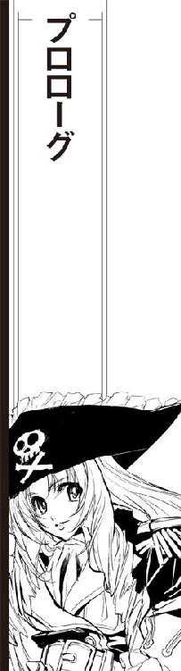
『操舵室よりお知らせします』
軽やかなチャイムに続いて、旧世紀を思わせる装飾で飾られたメインホールに、そのたびにスチュワードがマイクを取るクラシカルなアナウンスが船内に流れた。
『客船プリンセス・アプリコット号は先ほど一四回目の超光速ドライブを無事終了、予定どおり銀河回廊西の40に復帰しました』
プリンセス・アプリコット号は銀河標準時間で運航される。メインレストランがディナータイムからナイトタイムになる時間帯に、きらびやかなシャンデリアはゆっくりと輝度を落として夜空のイメージを映し出す天井に星雲のように浮かび上がる。
『本船の現在位置は銀河回廊西の40、68Ｂポスト、間もなく七色混成発色星団に最接近します。全システムは正常に稼動し、一二時間後の次の超光速ドライブ予定にも、次の寄港地鯨座宮たう星系海明星中継ステーションへの到着予定も変更ありません。メインホールはすでに夜間営業時間となります。乗客の皆さまは引き続きプリンセス・アプリコット号による星の旅をお楽しみ下さい』
アナウンス終了を告げる軽やかなチャイムを待ってから、オーケストラピットの専属楽団はダンス音楽の演奏を再開した。船長主催の仮面舞踏会が行われているメインホールでは、古代戦士や古典劇の姫君に扮した色とりどりの紳士淑女が手に手を取って昼間のレッスンで覚えたばかりのステップで廻っている。
ファイブスター・ラインが運航するプリンセス・シリーズの豪華客船は、古典楽器を演奏する専属楽団を抱えていることで知られる。電気を使わない、それ自体の音響だけで鳴り響く古典楽器の円舞曲が、超光速客船のメインホールに集った仮面の乗客を不揃いに廻らせる。
切れたはずのスピーカーが、耳障りなノイズを吐き出した。
『違う、そっちじゃない！』
他の声まで混じった音声が、スピーカーから流れ出した。
『え、なに？ もうつながってるの？ いつから!? ああ、今からはじめます、お静かに！』
こほんと可愛らしい咳払いのあと、むりやり落ち着かせたような少女の声が名乗った。
『失礼しました。こちらは海賊船弁天丸、海賊船弁天丸です』
専属楽団の演奏が止まり、いくつもの輪を作っていた仮面の船客たちが歓声を上げた。
『あたしは、海賊船弁天丸のキャプテン茉莉香、海賊船弁天丸の船長、キャプテン茉莉香です』
ちょっとつっかえながら、少女の声が名乗りを上げた。観客から拍手が巻き起こる。
『弁天丸は、ファイブスター・ラインの豪華客船プリンセス・アプリコット号への電子攻撃を完了しました。......え？ まだ完了してないってちょっと、手順違うじゃない！ もうすぐシステム乗っ取れるって、だからそういう問題じゃありませんってば！ え、ええと、プリンセス・アプリコット号の航行系を含むすべてのシステムは、間もなく弁天丸に支配されちゃいます』
仮面舞踏会を主催するプリンセス・アプリコット号船長ロナルド・ハーレイは、大仰な時代物の船長服に髑髏の仮面をつけてダンスホールを囲むテーブルに着いていた。旧世紀の赤い軍服に仮面をつけた副長が船長のテーブルに近づいてきて、仮面に仕込まれたインカムで得た情報を小声で伝える。
「いつもより、手際が悪い？」
ハーレイ船長にとって、海賊船弁天丸の襲撃は長期航海に一度は行われる馴染みのイベントである。弁天丸は、商船一筋の船長から見ても水際立った襲撃を行う海賊船だった。
「トランスポンダーもキャプテン・マリカの声紋も一致しているのなら、スケジュールどおりの襲撃ですし偽装の心配はないでしょう」
『いろいろ手違いだらけでごめんなさい、プリンセス・アプリコット号は、たった今、海賊船弁天丸に乗っ取られました！』
慌てている声に、メインホールの乗客たちは笑いながら拍手を送る。
『プリンセス・アプリコット号船長のロナルド・ハーレイさんは、大急ぎで海賊への貢ぎ物を用意して下さい。弁天丸の三連装二基の主砲はすでにフルチャージでプリンセス・アプリコット号のブリッジと機関に狙いをつけちゃってますから、逃げるのも抵抗するのも無駄でーす』
「ひょっとしたら、いつもの乗組員は病気で寝込んでいて、今日は見習いが代理を務めているのかも知れないな」
ハーレイ船長は、自分の言葉がどれだけ真実を言い当てていたのか知らなかった。
「対応はいつもどおりで」
船長は、副長に指示した。
「弁天丸は、うちの船でも人気の海賊だ。くれぐれもお客様を失望させないように」
「アイ・アイ・サー」
敬礼して型どおりに応えた副長は、インカム越しにブリッジに指示を伝えた。
生演奏が消えたメインホールに、間の抜けた非常警報がすっかりタイミングを外して朗々と鳴り出した。
ワンテンポ遅れて、メインホールの照明がすべて消えた。ざわめくメインホールの乗客たちの不安そうなささやきを聞いて、テーブルから立ち上がったハーレイ船長はマイクを取ってスイッチを入れた。
「乗客の皆さん、わたしはプリンセス・アプリコット号船長、ロナルド・ハーレイです。本船は先ほど海賊船弁天丸にコントロール系を乗っ取られました。間もなく海賊たちが乗り込んでくると思いますが、臆することはありません。我々は、拍手をもって海賊どもを出迎えてやろうではありませんか」
接近する海賊船の姿を乗客に見せるために、超光速跳躍中は閉じられていたメインホールを覆う展望ドームの防護シャッターがゆっくり開きはじめる。
星間神話をモチーフにした天井画のシャッターが開いていくにつれ、有害光線は紫外線から放射線に至るまで一〇〇パーセントカットするバブルドームは天空に拡がる銀河のパノラマを映し出した。
「......ふむ？」
天空を横切る天の川をバックに、鋭角的な海賊船の船体がプリンセス・アプリコット号から照らされるサーチライトに黒いシルエットを浮かび上がらせてゆっくり接近してくる。海賊船の船体各部でフラッシュする航行灯や放たれるレーザースキャナーの光を見ながら、ハーレイ船長は髑髏の仮面の奥の眉をわずかにひそめた。
「確かに、軸線がずれているな？」
海賊船弁天丸は、業界では隙のない緻密な戦術組み立てと正確な操船で知られている。獲物となる宇宙船に正確に軸線を一致させて平行を保ったまま、民間船では真似のできない速度でランデブーする操船技術は、業界内では金を出しても見物する価値があるとして有名である。
しかし、展望ドームの向こうに浮かぶ弁天丸の姿勢は、いつものように三軸方向までプリンセス・アプリコット号にきっちり合わせた端正なものではなかった。進行方向も左右バランスも、若干ずれたまま接近してきているように見える。いつもならほとんど見えない修正噴射も小規模に行われ、そのたびに弁天丸の船体が細かく姿勢を変えている。
「操舵手が、新人になったかな？」
海賊船が客船への接近、強制ドッキングに時間をかけないのは、獲物に余裕を与えないよりも観客を飽きさせないためである。安全最優先の通常の手順を踏んだ接近では時間がかかりすぎるのでイベント向きではない。
しかし、弁天丸はいつもよりも姿勢の乱れは大きかったものの、接近時間は大きくオーバーすることなくプリンセス・アプリコット号に充分に接近して強制ドッキング態勢に入った。
のしかかるようにプリンセス・アプリコット号に接近した弁天丸船底の強制ドッキングアームが展開し、白い船体を押さえつける。外宇宙も航行する長距離宇宙船の強靱な船殻が、重い銛を打ち込まれたような衝撃を伝えてきた。
展望ドームを圧するばかりに船体を見せつけている弁天丸が、移乗のためのドッキングブリッジを伸張した。
ドームの向こうの海賊船とそれを照らし出すサーチライトの明かりしかないメインホールに、ドッキングブリッジを外部から強制接続する機械音と、気密を確保して圧縮空気を吹き込む爆音が聞こえた。
入港時にしか開かれない大階段の上の結晶質のモザイク画で飾られた大扉が、大仰な作動音とともにゆっくりと上方に引き上げられる。神々の舞踏会をモチーフにした無数の結晶片の壁画の下から、圧縮空気の吹き込みによる断熱膨脹で大量発生した水蒸気が乗降デッキ側の照明に照らされながら噴出し、大階段を雪崩れ落ちる。
乗降デッキの照明をバックライトに、雲の絨毯のような白いスモークを踏みしめて船長のキャプテン茉莉香を中心に弁天丸の海賊一同が姿を現す。
「ほお......これは」
船長は思わず声をもらした。
引き上げられた壁画の向こうに並ぶ海賊たちに向けて、メインホールの反対側からスポットライトが放たれた。大階段をステージにして進み出た海賊たちに、乗客たちはどよめきにも似た歓声を上げた。
「きっと、すごい格好になってるんだろうなー」
手に手に得物を持ったまま、今にも笑い出すのをこらえるような表情でずらりと居並ぶ海賊たちを横目で見廻して、茉莉香はこっそり溜息をついた。すべてを捨てて、決められた台詞を口にするためにロングブーツの爪先を踏み出す。
「海賊船弁天丸の船長、茉莉香です」
右手で取った船長帽を優雅にくるくると廻し、茉莉香は深く腰を折って一礼した。
「プリンセス・アプリコット号に海賊しに来ました。無礼の段は、お許し下さい」
拍手や歓声に、いつもと違う口笛や指笛が混じる。タイミングがずれてる、と思って右手で後ろに廻した船長帽で合図すると、はっと気づいたように進み出たバニースーツの先輩が細腕には大きすぎるビームバズーカを肩に担ぎ、チアリーダーの同級生が自分の身長より銃身の長い大口径ライフルを構える。
傍から見てもわかるような二人のアイコンタクトのあと、どうやっても派手な閃光と迫力のある発射音以上の効果を発揮しないように調整済みのビームバズーカと大口径ライフルが、海賊たちだけを照らし出すメインホールを切り裂いた。
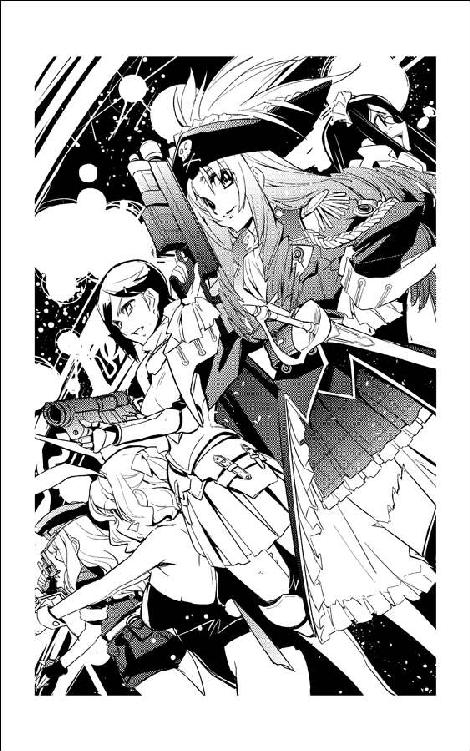
「今のはもちろん威嚇です」
観客が沸かないのはいつもの海賊よりテンポが悪いからか、それともこっちのスタイルに驚いているせいかなーとか考えながら、茉莉香はお決まりの台詞を続けた。
「パワーを落としていますから、プリンセス・アプリコット号に被害はないはずです。あ、念のためにモニターシステムを一時的に使用不能にさせていただきましたから、ほんとに故障しててもわからないかも知れませんけど」
うふ、と営業用に可愛く笑ってみせて、茉莉香はゆっくりと大階段を下りはじめた。いつもなら自分に集中するはずの観客の視線が、半分以上バックの海賊たちに持っていかれているのを感じる。
茉莉香は、自分に視線を集めるように大きく右手を上げた。
「照明を戻して下さい。乗客の皆さんの顔が見えないわ」
「照明を戻せ」
タイミングが遅れた照明係は、ハーレイ船長から直接の指示を受けてあわててメインホールの照明をシャンデリアに至るまで復活させた。大階段の上の踊り場に並ぶ海賊たちに観客の視線が集中したのを感じて、茉莉香は肩越しに踊り場を見上げた。
「うっわー」
想像はしていたもののインパクトのある光景に、口の中だけで声を上げる。いつもなら戦闘サイボーグに野戦服、パワードスーツに忍者の黒装束といった戦闘力優先の白兵戦隊が並ぶステージは、今日に限ってバニーガールにチアガール、ビキニアーマーにメイド服に魔女っ子やスーパーヒロイン、どこで時代考証をしたのか忍者刀を背負ったくのいち装束まで揃えた娘海賊に埋められていた。
「大変だ、こりゃ」
口の中だけでつぶやいて、茉莉香は再び外向けに声を上げた。
「聞いたことがある方もいらっしゃると思いますけど、いつもどおりの注意を聞いて下さい」
自分を通り過ぎてバックの海賊たちに向かっている乗客の視線にちょっとした嫉妬を覚えつつ、気にしないふりをして茉莉香は台詞を続けた。
「我々の指示に従っていただく限り、乗客の皆さんの身の安全は保証します。おとなしくこちらの言うことを聞いて下されば、乗客の皆さんは無事な身体と、それから海賊に襲われたというめったにない自慢話を持って港に帰れます。乗客だけじゃなくて、乗組員の皆さんもね」
階段の中程まで降りて、茉莉香はもう一度上げた右手を軽く前に振り下ろした。それぞれビームガンやショートソードやマシンガンやバトルアックスや魔法の杖を構えた踊り場の娘海賊たちは、横一線に並んで階段を降りはじめた。
メインホールに、どよめきと歓声が拡がる。ちらりと肩越しに後続の海賊たちを見た茉莉香は、先輩や後輩たちの顔が紅潮しているのを見てこっそり舌を出した。
「すっかりその気になっちゃって、癖になっても知らないぞ」
怪しい動きをする乗客がいないかどうか、メインホールを油断なく見廻す。海賊行為を妨害するようなうっかりした乗客がいれば、安全かつ確実にあきらめていただかなければならない。そして、いつもならバックの海賊たちに任せていた監視業務を、今日は茉莉香が一人で責任を持って行わなければならない。乗客だけでなく海賊たちの面倒まで見なければならない自分の任務の重さを思って、茉莉香は人知れず溜息をついた。
どうして、こんなことになってしまったのだろう。
茉莉香は、ついこのあいだ聞いたような気がする弁天丸からの緊急通信を思い出した。
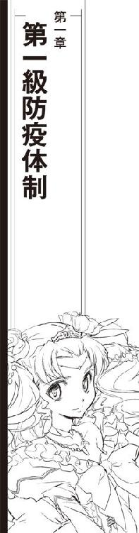
第一報を聞いたのは、その日の海賊業務を終えた茉莉香がシャトルで新奥浜宇宙港に帰還、無人運行される深夜営業のオートタクシーで自宅に帰り着いてからだった。
寝間着に着替えて待っていた母親が淹れてくれたココアを呑んでくつろいでいた時、加藤家の電話が突然けたたましい音を立てて鳴り出したのである。
「おんや？」
緊急呼び出し用にセッティングしたベルの音を聞いて、首を傾げながら茉莉香の母である梨理香が電話に出た。勤め先の新奥浜空港でも、周辺空域でも、ニュースチャンネルに載るような非常事態は起きていないはずである。
ディスプレイに表示された通話相手が軌道上の中継ステーションなのに、回線ナンバーが空欄であることに気づいて梨理香は秘話回路を開いた。
「はいもしもし？」
ヘッドセットを耳に当てて電話に出た梨理香は、ほどなく娘に振り返った。
「茉莉香、あんたにだよ」
「え？」
立ち上がった茉莉香は、通話相手が表示されているはずのディスプレイを見やった。
「弁天丸船長に、緊急連絡」
音声通信のみ、数秒ごとに変換パターンを組み替える秘話回路を使っても、公共回線を使う限り盗聴される可能性は高い。母親が自分に電話を廻すということは、相手が弁天丸なのは間違いないのだろうが、用件に見当がつかずに首を傾げながら茉莉香はヘッドセットを受け取った。
「はい、茉莉香です」
『ああ茉莉香ちゃん、大丈夫？ 喉とか鼻とか痛くない？』
しゃがれ声を聞いて、茉莉香は一瞬相手が誰だかわからなかった。
「......ミーサ!? どうしたのその声、変調機でも使ってるの!?」
『そうじゃなくて、風邪』
げほげほと咳き込みながら、ミーサは事態を説明した。
『それも、生化学兵器の原型に使おうって厄介な奴。うちのバイオフィルターくぐり抜けるなんて大したタマだわ、どんなウィルス構造してやがるのかしら』
軌道上からの回線を通じても吹き飛ばされそうな派手なくしゃみを聞いて、茉莉香は思わずヘッドセットを耳から離した。
「いったい何が起きたの？」
『今回のお仕事は公官庁が表に出すとまずい、だけども民間に任せるにはやばいって荷物だったでしょ？』
茉莉香は、請け負ったほとんどの貨物が港や集積場を通らず、星系外の外宇宙で軍籍の高速貨物船やトランスポンダーも消した巡洋艦から受け渡されたのを思い出した。
「ええと、研究用の電子部品とか、試作兵器とか、医療薬品とかいろいろ見たけど......」
船長として、茉莉香は弁天丸に積み込まれ、輸送する品目はチェックしている。しかし、受け渡される高気密だったり装甲だったり耐爆だったり高強度密閉だったりするコンテナの中味をすべて開いてチェックしたわけではないから、リストの要目しか覚えていない。
『研究用の生物ってのがありましたでしょう。病院船に受け渡そうと思ったらタイマーが作動してコンテナが開いちゃったの』
「ああ、あれ」
茉莉香は、自分が船を離れる寸前のどたばたを思い出した。内惑星軌道上、星系防衛軍所属の病院船に銀河帝国嘱託の生物研究所から預かった生体コンテナを届けた時のこと。生体コンテナは基本的に一気圧下での受け渡しを求められるため、大きな開口部を持つ船腹を接近させてサイドハッチをつないでのドッキング作業中に、タイマーの誤作動だか誤設定だかで閉鎖されていたハッチが開いてしまったのである。
時間と手間のかかる作業だけで、あとは船長の立ち会いは必要ないため、その時茉莉香は着艦デッキで帰還用のシャトルに乗り込んでいた。異常事態発生にブリッジに戻ろうとはしたものの、勤務時間の兼ね合いと船長の立ち会いは必要ないとの百眼の判断で追い出されるように弁天丸から発進したのである。
開いてしまった生態環境を維持する気密コンテナからは、数匹の辺境産の猫猿が逃げ出した。すばしっこく動き廻る体長数十センチの猫猿は取り扱い規約により薬物による捕獲ができず、海賊船と病院船合同の捕獲隊は人間が入り込めない隙間に逃げ込んだ猫猿の捕獲に相当苦労したらしい。
幸いにして外惑星軌道から超高速で海明星に戻ったシャトルが大気圏に突入する前に、逃げ出した猫猿は全匹の捕獲に成功、コンテナごとの受け渡しが完了したとの連絡があった。今回の仕事がすべて完了したことに安心して、茉莉香は自宅に帰ったのであるが。
「やっぱりただの猫猿じゃなかったの？」
『捕まえた猫猿が咳き込んでたり鼻水まき散らしたりしてたから、おかしいとは思ったのよ』
止まらないくしゃみの間に、ミーサは伝えた。
『帝国軍の生物研究所が送ってきたのは、猫猿じゃなくてそれが罹ってる風邪みたいな症状の感染症の方だったらしいわ』
「感染症!?」
茉莉香は思わず声を上げた。
『そう、それも空気感染であっという間に拡がる、性質の悪い奴。これくらい感染力が強ければ、帝国軍じゃなくて星系軍だって星ごと封鎖するわ。あのタイプの猫猿って二足歩行型の人類と呼吸器や消化器の構造が似てるから、同じような病原体に似たような発症するのよ』
「だ、大丈夫なの!? 生化学兵器の原型にするってことは、相当重い病気なんじゃないの!?」
『弁天丸の閉鎖循環系のバイオフィルター潜ってあっという間に全船に風邪振りまくくらいだから、感染力だけなら最終兵器クラスね。大丈夫、病院船の医者が嘘言ってるんでなければ、ひどい風邪みたいなことにはなるけど、命に別状はないそうだから』
「それにしたって......」
『タイミング的に大丈夫だと思ってたけど、あなたが感染してないことが確認できてよかった。潜伏期ほとんどゼロみたいな感染症らしいから、今の船長がくしゃみも鼻水も出てないのなら安心だわ』
「命に別状はないなら、いいけど」
茉莉香はちょっと考えた。辺境惑星で発見され、生化学兵器に使われるような風邪の完治にはどれくらいかかるだろう。
「それじゃ、今、弁天丸のみんなは風邪っ引きなのね。次のお仕事、大丈夫？」
『あ、それは無理』
すでに確認していたらしく、答えはすぐに返ってきた。
『一緒にいるのが病院船でよかったわ。ワクチンがあるそうだから、風邪の症状そのものは一週間もあればきれいに抜けるそうよ』
「それじゃ、来週の海賊は無理っぽいね。保険組合のショウさんに連絡とらなきゃ」
『ああ、そっちは大丈夫。隔離されてるって言ったって外部と連絡とれなくなるわけじゃないから、事情は伝えてあるわ。だから、来週はお休みのつもりでゆっくりしてて。だけど、もうひとつのほうが問題かな』
顔を見せないミーサの無理をしているような陽気な物言いに不吉な展開を予感して、茉莉香は注意深く訊き直した。
「どんな問題があるのか、いちおう聞かせておいて」
『風邪の症状は一週間もしないで治るそうなんだけど、問題はそのあとなのよ。なにせ生化学兵器に改造しようって強力な感染力だから、帝国の防疫法指定伝染病で、発見されて間もないからワクチンの効きもまだ実験段階なんですって。だから、隔離されて完治が確認されるまで最低二週間は外部と接触禁止』
「にしゅうかん!?」
茉莉香は思わず声を上げた。
「そんなにいっぱい、隔離されちゃうの!? 食料品とか大丈夫？」
『ああ、その辺りは問題ないわ。弁天丸ごと隔離されるんじゃなくて、今いるのは星系軍の病院船だから。病院船も送り主の帝国艦隊に怒鳴り込んで必要データと消毒用の薬品に専用の特殊フィルターも確保してくれたから、弁天丸の殺菌もそのうち終わるわよ。どんな強力な伝染病だって、真空飛び越えて感染できるわけじゃないから、心配しないで』
「ミーサが心配しないで、っていうのなら大丈夫だろうけど」
『まあそういうわけで、乗組員の命に別状はないし船体にも損害はないし、船中にばらまかれた感染症のウィルスも特製のバイオフィルターかまして三日も廻せばきれいさっぱり除去できるそうだから、あとのことも問題ないわ。しばらくは弁天丸も海賊できないけど、たまの休みだと思ってのんびりしててちょうだい』
「まあ、学校あるからゆっくりできるわけじゃないけどさあ」
茉莉香は、インカムの向こうのミーサの咳から思わず耳を離した。
「そうか......それじゃ、しばらく弁天丸動けないのね」
『宇宙船は無事なんだけど、乗組員が死屍累々で自動運航で動かすのが精一杯ね。おまけに他との接触禁止じゃ、症状が治ってもお座敷の営業はできないわねえ』
船を横付けして獲物に乗り込む海賊業務を芸者仕事になぞらえて、ミーサはまたも激しく咳き込んだ。
『大丈夫、演習の仮想敵とか危険空域の哨戒とか、スポンサーやお客様と顔合わせしなくて済む仕事なんていくらでもあるから心配しないで。それじゃ、とにかく明日以降のお仕事は最低一週間はキャンセルだから、ゆっくり休んでね』
くしゃみの連続とともに、ミーサからの通信は切れた。
「風邪かい？」
漏れ聞こえる会話に聞き耳を立てていた梨理香が、テーブルに戻った茉莉香に訊いた。茉莉香はうなずいた。
「あたしが弁天丸を離れてから、帝国法指定の伝染病だって。乗組員のみんなの命までは心配ないそうだけど、しばらくは営業停止だってさ」
「命に別状がないのは何よりだけど、なに馬鹿やってるんだかねえ」
梨理香は溜息をついて娘を見た。
「茉莉香は大丈夫なのかい？」
「風邪ひいてる猫猿が密閉コンテナから逃げ出したのは、あたしが船を離れてからだそうだから」
「乗組員たちは？」
「隔離されてしばらく様子見だって」
茉莉香は、聞いた状況を素早く頭の中で整理した。
「受け渡しの相手が病院船で助かったわ。少なくとも、手当てには間違いがないでしょうから」
「入院先はどこだい？」
「たぶん、星系軍の病院船、ベン・ケーシー」
茉莉香は、弁天丸を出てくる時にドッキングしていた白い大型病院船の船影を思い出した。
「受け渡し前に逃げ出したってことは、環境系が接続されてる時に猫猿が脱走したってことだから、下手すると病院船ごと隔離かなあ」
茉莉香は首を傾げた。
「定時連絡、どうするんだろ？」
差し迫った非常事態がない通常の態勢なら、弁天丸から船長への定時連絡は一日二回、午前中と午後に行われる。急ぎでない場合は、連絡はメッセージで届けられ、茉莉香がチェックして返事を返すのが通例である。
弁天丸の状況報告であると同時に船を離れている船長の無事の確認も兼ねるため、二回続けて定時連絡の返事がなければ弁天丸側から捜索隊が出る手筈になっている。もちろん、茉莉香から事前に定時連絡が取れなくなるという連絡があれば、その限りではない。
ただし、定時連絡の通信手段は一定しない。弁天丸の船長になってから高密度暗号通信を扱えるように改造が施された茉莉香の携帯電話にメッセージが入るのが普通のパターンだが、自宅の電話回線にメッセージが届けられることも、ヨット部の部室の回線に届くことも、授業中の茉莉香宛に電報が届けられたこともあるし、ランプ館でバイト中の茉莉香のもとに乗組員が口頭での定時連絡のために現れたのも一度や二度ではない。
そして、もし弁天丸の乗組員が全員病院船に隔離されたのなら、弁天丸からの連絡は不可能になる。
翌日の朝、起き出した茉莉香はいつもどおり携帯電話のメッセージをチェックし、朝の身支度もそこそこに居間の電話も確認した。
定時連絡は入っていなかった。
三時間目の休み時間が終わると同時に、茉莉香は校内放送で職員室に呼び出された。
呼び出しの先生に礼を言って専用ブースに入る。受話器を取ると、画面にビジネススーツにアフロヘアの怪人が現れた。
「ショウさん!?」
『やあどうも。このおれの変装をひと目で見破るとは、どうやら本物の弁天丸船長のようだ』
「なに冗談言ってるんですか。どうしたんですいったい？」
茉莉香の記憶にある限り、ハロルド・ロイド保険組合の代理人であるショウが白凰女学院に電話をかけてきたことはない。ついでに思い出してみても、ショウが茉莉香を名指しで連絡を取ったことも、今までにない。
『急と秘密を要する用件なんだが、クラス以上の暗号コードに対応したスクランブル回線使える通信機は手近にあるかい？』
「あたし今学校にいるんですよ!? そんな厳重な秘話回路積んでる通信機なんか......」
茉莉香は、ギャラクティック・エレクトロニクスという今は亡き名門電機メーカー製の高級軍用通信システムが、部室に設置されているのを思い出した。メーカーはとっくの昔に吸収合併されてブランドも残っていないが、軍用であるだけにゼネラル・オプチカリクスによる有償サポートは今も続いている。去年のうちに電子系に強い先輩が苦労してアップデートしていたはずなので、最新の暗号通信にも対応しているはずである。
「......あります、たぶん」
『そいつはお誂え向きだ。パーソナルコード教えてくれ、こっちから呼び出す』
「ええと......」
茉莉香は、通信画面の隅に表示されている現在時刻を確認した。三時間目と四時間目の間の休み時間はすぐに終わってしまう。
「急と秘密を要する用件ってのは聞きましたけど、一時間くらいあとでいいですか？ あたしこれから授業なんです」
『一時間......なら、それほど状況が変わる時間でもないか。おっけー、勉学は学生の本分だ、張り切って勉強せいよ』
「誰が海賊やらせてるんですか」
四時間目が終わると同時に、茉莉香はヨット部の部室に走った。
鍵を開けて誰もいない部室に入り込み、壁の半分を占める巨大な通信装置のメインスイッチを入れてうろ覚えの手順で次々にスイッチを入れてシステムを立ち上げる。
携帯端末に記録しておいたハロルド・ロイド保険組合のショウのパーソナルコードだけでなく、寸前の電話に添付されていた暗号キーを設定して超光速通信のための回線を開く。
ハロルド・ロイド保険組合の記章と古式宇宙船を組み合わせた待ち受け画面が表示され、自動楽器の曲が一小節ほども流れないうちにショウが現れた。
『はいこちらハロルド・ロイド保険組合、エージェントのショウだ』
「弁天丸船長、加藤茉莉香です」
ディスプレイに表示される通信データで通信相手が偽装されていたり盗聴されていたりしてないのを確認しながら、茉莉香は挨拶した。
「こちらの場所は海明星、新奥浜市の白凰女学院になっていると思いますが、学校の施設の通信機を借りているもので......」
『クラスの暗号コードが認証されてるから問題はない。......ギャラクティック・エレクトロニクスとはまた、高級品を使ってるじゃないか』
「ヨット部の備品で、骨董品なだけです。お望みなら練習帆船もありますよ、超光速できないけど」
『おお、そういえば白凰女学院といえば有名な海賊船、白鳥号を動態保存してるんだっけな。そのうち動いているところを見せてくれ』
「それじゃあ、次の練習航海のスケジュールをお送りします」
茉莉香は、制服姿の自分が通信相手にどう見られているか考えながら切り出した。
「それで、急と秘密を要する用件っていうのはなんですか？ あたしで対応できることなんでしょうか？」
『茉莉香船長、あなたしか対応できない』
すぐに返ってきた言葉に、茉莉香は首を傾げた。
「どういう意味です？」
『そのうちに百眼かミーサあたりが気がつくとは思うがね。今、弁天丸の乗組員は猫猿に風邪を感染されたおかげで全員が病院船に隔離されてるだろ？』
「そのとおりです」
前夜の連絡で、保険組合にも話が行っていることをミーサから聞いている。茉莉香はうなずいた。
『弁天丸の今の状況は？』
「ロックされて、自動運航してるはずです」
茉莉香は答えた。
「詳しいデータは、まだこっちに来てませんけど」
『隔離期間は聞いてるかい？』
「最大二週間」
茉莉香は素直に答えた。
「それ以上のことは聞いていません。何か、確実な情報をご存知ですか？」
『弁天丸が輸送を請け負った風邪っぴきのエテ公ってのは、生物兵器のベースに使うような感染力の強い性質の悪い奴だ。病院船はワクチンも持っているはずだが、開発途上で研究中の病原体だからすべての治療データが完全に把握されてるわけじゃない。こっちのルートで廻ってきた見立てだと、隔離期間はもっと長くなるおそれがある』
茉莉香は眉をひそめた。
「もっと長くって、どれくらいですか？」
『最低一カ月、ことによるとそれ以上になるかもな』
「一カ月!?」
『病院船も軍の生化学部隊もそれほど馬鹿じゃないからな、いきなりそんな数字出して海賊どもに脱走されても困るから、治ったと思っても診断繰り返してずるずる引き延ばすつもりかも知れないが、それにしたって完全に解明されてるわけじゃない未開の星の病原体が相手なら非現実的な数字でもない』
「営業妨害だわ」
憮然とした顔で茉莉香はつぶやいた。
「一カ月も弁天丸の乗組員引き止められたら、うちの海賊船干上がっちゃう」
『まさにそれが、急と秘密を要する用件だ』
通信モニターの向こうのショウの顔が引き締められた。
「やっぱり、収入の問題ですか？」
『隔離中の休業補償は軍から相応の金額が提示されるだろうが、問題はそこじゃない。うちの法務部にも精査し直してもらってるが、一カ月も弁天丸が海賊業務を停止したら、規約によって弁天丸の海賊免許が無効になる可能性がある』
「海賊免許が無効になる......」
少し考えて、茉莉香は声を上げた。
「って、海賊免許って独立戦争のどさくさに紛れて発効されたものをむりやり引き延ばして今も使ってるだけでしょ。うっかり飛ばしちゃったら再発行なんてしてもらえるの？」
『まず確実に、無理だな』
ショウはあっさり両手を拡げた。
『独立戦争当時ならともかく、がっちり銀河帝国に組み込まれた今になって、自治星系が海賊免許なんて都合のいいもの発行できるかい。それこそ怖い帝国艦隊に実力排除されちまう』
「ええと、海賊免許を無効にされないための条件は、そっちで把握してます？」
『だから、前提条件や細かい穴を見つけるためにうちの法務部にチェックをしてもらってるんだが、一番確実なのは今までどおり弁天丸で海賊を続けることだ。実績さえあれば、海賊免許は自動延長される』
「なんだ、簡単じゃない」
ほっとした茉莉香の顔を、ショウは面白そうに眺めた。
『茉莉香一人で、どうやって弁天丸を動かすつもりだい？』
「あああああああ！！！」
茉莉香はさらに大きな声を上げた。
「だめ、あたし一人で弁天丸動かすなんて、絶対無理！ ケインやクーリエや百眼やシュニッツァーやルカや三代目が寄ってたかってやっと生きてるぼろ船、女子高生一人でどうやって動かせっていうんです！」
『一人で動かせないんじゃあ、どっかから乗組員調達してくるしかないだろうなあ。強制徴募でもなんでもやって、数さえ揃えば弁天丸を動かせるだろう。幸いにして免許が必要なのは船長だけで、海賊船乗組員には免許の発行も公的資格の制限もない』
「んなこと言ったって、弁天丸動かせるような腕っこきがいったいどこでごろごろしてるんですか！」
『そりゃまあ、弁天丸の乗組員が務まるようなら、どこ行ったって高給取れるだろうからなあ』
「信用問題だってあるでしょう、海賊船の乗組員をしかも一時雇いなんて、身許確認とか機密保持とかどうするつもり!?」
『お、さすが船長。身許確認も機密保持も確かに問題だ。だがその前に、とにかく使えそうな乗組員を集めなきゃ話にならない。心当たりはあるかい？』
「だから、一介の女子高生に海賊船の乗組員が務まるような宇宙船乗りの知り合いがいるわけがありませんってば！」
『海賊船の船長だろ。こっちでも探してみるから、そっちも心当たりを調べてくれ。うちの法務部の調査結果次第では、隔離中の弁天丸乗組員だけじゃなくて船長にもゆっくり休んでもらえるような法解釈ができるかも知れない』
「期待しないで待ってます」
茉莉香は通信を切った。
「弁天丸の乗組員、それも臨時雇いで全員調達しろなんて......できるわけないじゃない」
溜息をついて、巨大な通信システムの電気を落とす作業を開始しようとした矢先、呼び出しを告げるベルが鳴った。
「あれ？」
クラブ活動中だって必要がなければ電源が落とされていることが多い通信システムを、それもパーソナルコードで事前予告なしで呼び出すことはほとんどない。呼び出されているのが間違いなく目の前の部室備え付けの通信システムであることを確認して、茉莉香は通信相手が空欄のままの超光速通信を受信した。
高次空間に通信回線が設定され、双方の通信機が接続された。
「はい、こちら白凰女学院ですけれど......」
『あ、よかった、助かったわ、船長が通信機の前にいてくれて』
「......クーリエ!?」
少しばかり嗄れていた声に、茉莉香の聞き分けが一瞬遅れた。もう一度空欄のまま表示されていない通信情報に目を走らせる。
「今どこ？ みんな無事？」
『ごめんなさいね、定時連絡遅れちゃって。現在位置はたう星系軍の病院船ベン・ケーシー。でもほんとはベン・ケーシーに隔離中の感染患者なんかいないことになってるから、軍の公式記録とか見ても載ってないから』
「そりゃそうでしょうけど」
『この通信も、無理言って軍用回線に細工して使わせてもらってるから、こっちのデータ表示されてないでしょ？』
「通信相手は不明のままよ、安心して」
茉莉香は、音声のみの通信モニターに顔を上げた。こちらからのカメラはカットしていないから、茉莉香の顔はクーリエに見えているはずである。
『弁天丸乗組員は、みんな無事。相手がバイオフィルターくぐり抜けて空気感染するような伝染病だから、シュニッツァーとか、症状の出ていない呼吸器停止できる連中までまとめて隔離されちゃってるけど、高級将校向けの豪華な病室開放してもらってるからこれで風邪さえなければのんびりできていいんだけどねえ』
「楽してるみたいじゃない」
茉莉香は笑った。
「よかった、それじゃ事態は深刻じゃないのね？」
『ああ、それは大丈夫。感染力はむっちゃ強いけど、ちょっとばかり派手な風邪ってだけで命に関わるとか後遺症が出るとかいう病気じゃないそうだから。ただ、まだ効き目が定着した薬が開発しきれてないもんで、対症療法とあとは安静にしてるって昔ながらの治療法しかとれないのよ。まあ、隔離制限だけで食事やお酒に制限があるわけじゃないんで、ここぞとばかりに星系軍のツケで呑んだくれてる馬鹿も多いけど』
「ちゃんと海賊のまま出てきてくれるのかしら？ 退院する頃には、仕事のやり方忘れたりしてない？」
『安静が条件だからねえ、長引くと正面戦闘部隊はなまるかも知れないわねえ』
「退院直後に正面戦闘なんてことにならなきゃいいけど」
もちろんそんな予定はないが、海賊をやっている以上はいつどこで実戦が開始されてもおかしくない。
「あ、クーリエ、あたしが船長になってからの弁天丸の活動記録って今持ってる？」
『船長の航海日誌じゃなくて？』
「あたしの航海日誌ならバックアップ持ってるもん。そうじゃなくて、弁天丸の活動記録」
『戦闘記録とか航海記録まで入れたらかなり量増えるけど？』
「飛行計画レベルで大丈夫」
『それならすぐに送れるわ』
言ってるそばから、添付されたデータが通信システムに転送されてきた。
『でも、どうするの？』
「しばらく弁天丸が動けなくなりそうだから、今のうちにいろいろチェックしておこうと思って」
茉莉香はできるだけ平静を装って答えた。クーリエ相手に、どれだけ事前準備をしても何か感づかれない自信はない。
「ロック中の弁天丸は、大丈夫？」
『正規の乗組員が乗ってないってだけで、間違いなくこっちのコントロール下にあるから心配なし』
クーリエはいつもの調子で答えた。
『病院船ベン・ケーシーといっしょに航行中で、戸締まりしたまんましばらく軍管区の錨泊空域に預かってもらうことになってるから、普段みたいに海賊しながら飛んでるよりはよっぽど安心なんじゃないかな』
「なら、大丈夫か」
茉莉香は、添付されてきた弁天丸の活動記録の容量を確認して溜息をついた。かなり大きい。
『船長、大丈夫？』
心配そうに訊かれて、茉莉香はあわてて声を作った。
「ショウさんからも連絡来てるから、こっちのことは心配しないで。今の乗組員の仕事は、風邪治すことだってみんなにも伝えといてね」
『わかった。んで、こっちはそういうわけで今みんな弁天丸を離れちゃってるから、時間どおりに定時連絡取れるかどうかわからないの。可能な限り連絡取るようにするし、非常事態でも起きれば最優先で知らせるから、心配しないでちょうだいね』
「了解。みんなにも、お大事にって」
茉莉香は、通信を切った。自分のカプセルに弁天丸の活動記録を移し、すべての設定と通信記録を削除、念のためシステム全体に再起動をかけてどこにも何も残っていないのを確認する。
自分が使った跡を消して、茉莉香は部室をあとにした。
放課後のクラブ活動、ヨット部の訓練課題をいつもどおりの超高速機動でクリアした茉莉香は、久しぶりにランプ館のバイトをこなしてから自宅に帰宅した。
夕食後、茉莉香は自宅の中でもっとも厳重なセキュリティが施されている居間のコンピューターシステムの前に座った。
「ちょっとコンピューター借りるね」
「外に接続する時は気をつけるんだよ」
食後のお茶の用意のためにキッチンに立った梨理香が、茉莉香の手の中のデータカードを覗き込んだ。黒一色でメモ書きもされていないありふれた安物の市販品である。
「弁天丸関連のデータかい？」
「うん」
茉莉香は母親の顔を見上げた。
「よくわかるね」
「おまえが弁天丸の船長を引き受けるって決めたあとに、ミーサが持ってきた資料の中にそれがあっただろ。うちにあるその型のデータカードはそれだけだし、昨日のミーサの定時連絡からすればそろそろ調べものをはじめる頃だと思ってたんだ」
「......相談、乗ってくれる？」
茉莉香は、データカードをスリットに入れて認証作業を開始した。メモ取りを禁止され、最初の時はミーサに付きっきりで指導してもらいながらひと仕事だった認証作業を、すいすいと進めていく。
「なんだい？」
「弁天丸の......私掠船の活動規程って、把握してる？」
認証を突破し、時間によって変更されるパスを打ち込んでロックを解除した茉莉香は、データカードの中から私掠船免状に関する規程を探した。
「活動規程？ なんの話だい？」
「確か、私掠船免状っていろいろ厄介な制限がついてたでしょ。船長が乗り込んでいないと海賊できないとか、その船長は直系でないと継げないとか。確かその中に、一定期間海賊をしないと自動的に海賊免許が取り消されるって条項があったと思ったんだけど」
「何かと思ったらそんな話か。えーと確か、無法者の海賊に免状だけ持ち逃げされないように、海賊しない海賊からは海賊免許を取り上げるって規程だろ」
「うん、それ」
法務関係のファイルから、持ってまわった意味の取りにくいタイトルで飾られたファイルをいくつか開いてみる。
「海賊って、最大何カ月くらい休めるか覚えてる？」
「休めるかって？」
梨理香は、ポット片手にキッチンから戻ってくる通りすがりにディスプレイを覗き込んだ。
「あたしが現役でやってた頃は、そんなに長い休みなんかなかったからねえ。ときどきふらりとゴンザエモンがいなくなって弁天丸が開店休業することもあったけど、二週間と間をおかずに帰ってきたし」
「そっか、船長さえいれば乗組員が長期休暇取るのは関係ないもんね。宇宙船の整備とか修理とか定期点検とかで、弁天丸がドック入りしてしばらく海賊ができなかったことはない？」
「整備や修理なんてしょっちゅうやってたけど、弁天丸がそんなに長くドック入りしてたことはなかったねえ」
テーブルに戻った梨理香は、食後のお茶の用意をはじめた。
「知ってのとおり、免状持ちの海賊商売ってのは絵に描いたような貧乏暇なしだからね。少なくともあたしが乗っていた時期にはのんびりドックに入ってたり乗組員みんなで長期休暇なんて優雅な展開はなかったね」
梨理香はポットにお湯を注ぎはじめた。
「弁天丸の風邪、長引きそうなのかい？」
「そうなったら困るなと思って、今のうちに仕込み」
茉莉香は役に立ちそうな項目を開いて法務用語で飾られた文面を開いた。
「うえ、やっぱり古語だ」
「あたりまえだよ、一二〇年前の契約書なんだから」
「こいつを解読して理解しなきゃならないのか」
茉莉香は難しい顔でディスプレイに映し出された書面を睨みつけた。
「船長って、大変だ」
サブディスプレイに辞書画面を開いて、少しでも意味が取りにくい単語は次々に解読させていく。
普段使わない持ってまわったいかめしい言葉が多い規約文書の解読に古文の予習をしているような気分になりながら、茉莉香は口を開いた。
「あともうひとつ、訊いてもいい？」
「なんだい？」
「腕利きの宇宙船乗りって、どこで探せばいいと思う？」
返事がない。茉莉香は、母親がどんな顔をしているのか確かめたい誘惑を感じた。
「やっぱり、空港に行かないと駄目？」
「仕事を探してる宇宙船乗りが、地上なんかに降りてくると思うかい？ 宇宙船乗りってのは宇宙を飛ぶのが商売の連中だよ。すぐにでも宇宙に乗り出したい食い詰めた宇宙船乗りが、のんびり地上まで降りてくるもんかい。宇宙船乗りは、昔っから港にいるもんだ」
「港って......」
見えるはずもないのに、茉莉香は天井を見上げた。
「中継ステーションか」
翌朝になると、全員病院船で無事に療養中、症状は徐々に進行中、という定時連絡が家の電話に入っていた。
定時連絡の内容確認と、これから登校するといういつもの返事を返して、茉莉香は家を出た。
翌日、昼。
茉莉香は、中等部からの腐れ縁である遠藤マミに食堂で販売されているランチボックスの確保を頼んでから、四時間目終了と同時にヨット部の部室に駆け込んだ。
昨日よりは手際よく通信システムを立ち上げ、高次空間に超光速通信回線を設定、朝のうちに茉莉香の携帯電話に届いていた本日の暗号キーを使ってハロルド・ロイド保険組合を呼び出す。
昨日と同じイメージ画面のあと、ほとんど待ち時間なしにショウの顔が通信モニターに現れた。
『やあこんにちは。そろそろ来るだろうと思って待っていたが、時間には正確だな』
通信モニターの向こうのショウはわずかに顔をしかめた。
『寝不足かい？ 顔色がよくないぜ』
「ちょっと、慣れない古典を理解するのに手間取っちゃいました」
茉莉香は力ない微笑みを浮かべた。
「その後、何か進展はありました？」
『百眼から、弁天丸と乗組員全員の生存を伝える定時連絡はそっちでも受け取ったんじゃないか？ 風邪二日目、順調に悪化しているそうだから無事とは言い難いが、病院船で適切な治療を受けてるんだから心配あるまい』
「まあ、もしなんか危ないと思ったら相手が星系軍どころか帝国艦隊でも平気で脱走してくるでしょうから、その辺りは心配してませんけど」
頭を振って、茉莉香はショウに伝えるべき要件を頭の中に並べ直した。
「こちらでも、私掠船免状の交戦規程と行動規約をチェックし直しました。ええと、あたしの理解したところが間違ってなければ、政府からの作戦中止の通達がない限り、最大五〇日間のあいだに戦闘行動を取らなければ免状の効力を停止されます」
『そのとおりだ。続けてくれ』
「昨日を起点に、これからしばらく弁天丸は海賊行動ができません。確か次の仕事は明後日のシュバルツベルクへの連絡飛行と届けもの、それから来週の豪華客船クィーン・エメラルダスへの海賊行為は、これはもう違約金払ってでもキャンセルするかどこかに代役をお願いするしかありません」
『この件については星系軍が全面的な損害賠償を確約しているから、そっちのほうは心配しなくてもいい。シュバルツベルクへの連絡飛行は民間の荒事専門の業者にもう依頼を済ませてあるし、クィーン・エメラルダスへの海賊については代役を手配した』
「代役って、他の海賊船にお願いしたんですか？」
『ああ。海賊船バルバルーサの船長、ケンジョー・クリハラは快く弁天丸の代役を引き受けてくれたよ』
茉莉香は、なぜかチアキの怒鳴り声を聞いたような気がした。
「いつ、うちの乗組員が全員解放されるかまだわかりませんから、新しい仕事も引き受けられませんし、定期のお仕事にも代役を頼まなきゃなりません。乗組員が一定期間隔離されちゃうことについての被害と手間については払ってくれるところと掛けてくれるところにお願いするとして、問題は規約で海賊行動と認められる作戦を弁天丸が最後にいつ行なって、次にいつ行えるかにかかっていると思います」
茉莉香は、通信モニターの向こうの保険代理人の表情を注意深く見つめた。
「弁天丸のこの前の作戦行動は、二週間前のプリンセス・アプリコット号に対するいつもの海賊でした。本当だったら今週頭にあるはずだったプリンス・オブ・ストーンウォールに対する海賊行動が向こうの航行計画変更によってキャンセルされましたから、再来週の星系軍の艦隊演習で仮想敵を務めることができなければ、弁天丸は最短で五週間以内に海賊行為を行わない限り、海賊船の資格を失います」
ショウは、感心した顔でうなずいた。
『大したもんだな。そいつはうちの法務部がたう星系の私掠船免状規約と弁天丸の行動記録を一晩がかりでひっくり返して得た結論と完璧に一致してる』
「よかった」
ほっと息をついて、茉莉香は慌てて気を引き締めた。
「じゃなくて全然よくない！ つまり、あと一カ月ちょっとの間にうちの乗組員が全員、じゃなくても最低限海賊できるくらいの人数は風邪が治って解放されなきゃ、弁天丸の海賊免許が取り消されちゃうってことでしょ！」
『まさにその結論で、我が保険組合の法務部と茉莉香船長の見解は一致している』
ショウはしたり顔でうなずいた。
『ついでに言うと、融通の利かない役人仕事じゃ核恒星系並みの定評を得ているたう星系行政府の法務省も、間違いなく同じ結論に辿り着いているはずだ。行政府の全部が海賊の存在を諸手をあげて歓迎しているわけじゃなく、機会があればきれいさっぱり消したがっている勢力も存在するってのはご存知のとおりだからね』
「どうすればいいんですか!?」
『ここで、弁天丸の船長である君が取れる方策は三つある』
ショウは、通信モニターの向こうで長い指を三本立ててみせた。
『まずひとつは、海賊免許の有効期限内に乗員が無事解放されることを祈ること』
「それは楽でいいですわね」
『次に、期限内に乗組員が解放されなかった時のことを考えて、どこかから海賊船乗組員を持ってくる』
「海賊船の乗組員なんて、どこからどうやって持ってくればいいんですか!?」
茉莉香は声を上げた。
「最後のひとつは何なんですか！」
『ああ、最後の手はお薦めできないね。もし期限までに乗組員が解放されなかった場合、病院船から海賊船乗組員を実力で救出するって手だ』
「そうなったら、あたしより乗組員の自主性に任せます」
茉莉香は溜息をついた。
「一番楽なのは祈って待つ最初の選択でしょうけど、一番役に立たないのもそれですね」
『そのとおりだ。状況を整理しよう。君が揃えるべき乗組員は、弁天丸を使って海賊を一回できればそれでいい。実績を一回上げれば、自動的に免状の更新期限は延長される。そして、次の更新期限が来るまでには正規の弁天丸乗組員は病院船の隔離船室から解放されているはずだ』
「もし、解放されていなかったら？」
『そんなに長く閉じ込められておとなしく隔離されているような奴が、弁天丸の乗組員にいるとは信じられないね。そうなったら、あの連中のことだ、こっちから指示しなくても自分で逃げ出してくるだろう』
「その時は、タイミング計って近所まで迎えにいけばいいか」
乗組員の脱走に荷担しようとしている自分に気がついて、茉莉香は首を振った。
「非常手段を取らなきゃならない時は、その時になってから考えます」
『できれば、その時になる前に連絡してくれ。フォローするにしても見捨てるにしても、いろいろと事務手続きが厄介なんだ』
「ありがとうございます。軍が責任取ってくれるのなら、せめて、一回の海賊やる分くらいの乗組員貸してくれないかしら？」
『海賊免状に乗員の制限はないとはいってもなあ、れっきとした星系軍の身分持ってる軍人が海賊の片棒なんか担いだら大変だろうなあ。どっかでばれたら、軍解体なんてことになりかねないんじゃないか？』
「秘密を保てればいいけど......でも顔出しの海賊だと、難しいですか」
茉莉香は溜息をついた。軍はそこまで危険を冒すことはないだろうし、海賊としてもそこまで軍に協力を求めることはしたくない。
「保険組合でも海賊の乗組員になりそうな人材を探してくれるって話は、どうなりましたか？」
『やってはいるが、はかばかしくない』
ショウの顔が曇った。
『事情を了解させて口止め料まで払うとなると、それなりの金額が必要になるんでね。いくら軍が損害と必要経費を保障してくれるっていったって経理が無制限に小切手を切ってくれるとも思えないし、そうなるとこちらで設定している損益分岐点を上回らない形での計算で乗組員を調達しなきゃならない。実際に乗組員を捜す前の段階でいろいろと問題が出てきて、巨大組織の融通の利かなさって奴にうんざりしているところだよ』
「保険組合の中には、弁天丸の仕事をちょっとだけ手伝ってくれそうな人はいないんですか？」
ショウは考え込んだ。
『なるほど、宇宙船乗りあがりのエージェントに当たってみるってのは手だな。しかし、宇宙船乗りが務まるような器用な奴が、人使いの荒いうちみたいなところで暇こいてる余裕があるとは思えないが』
「少なくとも、身許に関しては信用できると思います」
茉莉香はすがるような気持ちでディスプレイのショウを見つめた。
「だって、保険組合が自分の契約に不利になるような乗組員選んで寄越すわけありませんよね？」
『そりゃそうだ』
通信モニターの向こうで、ショウは盛大に笑い出した。
『わかった、果たしてうちの中で船長のご期待に添えるような人材が揃えられるかどうか、調べるだけは調べてみよう』
「よろしくお願いします」
茉莉香は一礼して通信を切った。高度暗号化通信だから放っておいても通信内容が部外に洩れ出す心配は少ないが、ほとんどルーティンワークで通信記録と内容を消去、念のための再起動もかける。
機械的に手を動かしてシャットダウン作業を進めながら、茉莉香はふうっと息をついた。
「あの調子じゃ期待できないかなー。この辺りで宇宙船乗り集められそうなところっていうと」
茉莉香は、通信システムのメインスイッチを切って天を仰いだ。
「やっぱり、中継ステーションかなー」
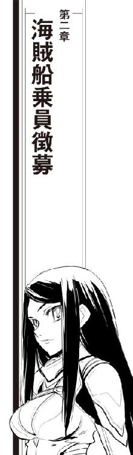
「お一人ですか？」
がらがらのはずのシャトル便の、わざわざ非常口の前を選んだ三列並んだエコノミー席で聞き覚えのある声に話しかけられて、窓際の茉莉香はびくっとして機窓から振り向いた。
「お隣、よろしいですか？」
声の主は、返事を待たずに茉莉香の隣の席に腰を降ろした。
「......ぷ......ぐりゅーえる!?」
「プリンセスと呼ばれるのは好きではありません」
さっさとシートベルトを締めたグリューエルは、大人用シートでは届ききらない両脚をぶらぶらさせて茉莉香ににっこりと笑いかけた。
「覚えていてくれてありがとうございます。今日のヨット部の部活は、おサボリですか？」
『本日は、新奥浜空港発中継ステーション行きシャトル七一四便へのご搭乗ありがとうございます』
ほとんどの席が空席のままのシャトル便のキャビンに、アナウンスが流れた。
『先ほど管制塔より離陸許可が出ましたので、本機は間もなく滑走路に出て発進します。本日の気象状況は安定していますが、予測外の揺れが発生することもありますので、お客様はシートベルトを締めて発進をお待ち下さい』
アナウンスに続いて、ターミナルに機首を向けて駐機していた有翼のシャトルがスムーズな後進で動きはじめた。
茉莉香は隣の席のグリューエルに目を戻した。プリンセスは中等部の制服のままである。
「どうしたんです、こんなところで......尾けてきたんですか？」
「あら、やっぱりわかりますか？」
ぺろりと舌を出したグリューエルの楽しそうな顔を見て、茉莉香は溜息をついた。
「軌道に上がる方法ならいくらでもあるのに、シャトル便のそれもエコノミー席に発進寸前に駆け込んできたって状況証拠を見ると、偶然同じ便であたしを見つけてファーストクラスから移動してきた可能性はあんまりないんじゃないかと」
「ヨット部でお会いできると思ったのに、終業と同時に自転車で飛び出していったから、どうしたのかと思ったんですのよ」
グリューエルはしれっと言って、シートに細身の身体を沈み込ませた。
「アルバイトかと思ったら、駅からまっすぐ空港に向かったって聞いてぴんと来ました。弁天丸のことで、軌道上に上がるのではないですか？」
小さな声とはいえいきなり海賊船の名前を姫君の口から聞いて、茉莉香は思わず首を伸ばして周囲の席を見廻した。前席にも後席にも、隣の列にも乗客はいない。
茉莉香はさらに声を低くした。
「弁天丸のこと、どこから聞きました？」
「情報網には、不自由していません」
グリューエルは、ごく自然に片目を閉じてみせた。
「と、言いたいところですけれど、あの真面目な茉莉香さんが部活もバイトも放り出して時間最優先で空港に向かって、しかも専用の連絡機じゃなくて普通のシャトル便を使って中継ステーションに向かうって聞いて、弁天丸に何か憂慮すべき事態が起きてるんじゃないかって考えただけです。茉莉香さんと一緒で、状況証拠だけですね」
「状況証拠だけでシャトル便に駆け込んできたんですか」
茉莉香は溜息をついた。ビジネス便だから便数は多いが、飛び込みの正規料金は長距離の航空便並みに高価なものになる。
「さっきの茉莉香さんの質問で、確信しました。弁天丸に、何かトラブルが起きているのですね」
茉莉香は頭を抱えた。
「いえ、ええ、確かにそのとおりなんですけどおー......なんであたしったらこんなに簡単に口滑らせちゃうんだろう」
『本機は間もなく離陸します。乗客の皆さまは今一度シートベルトをご確認下さい』
アナウンスとともに、機体に伝わってくる推進システムの唸りが高まる。
「手伝わせていただけませんか？ きっとお役に立てると思います」
茉莉香は、グリューエルの顔を見て、視線を正面に戻した。素早く状況分析と損得勘定をする。結論はすぐに出た。茉莉香は、離陸滑走を開始したシャトルの中で隣席に顔を向けた。
「こちらの指示に従うって約束してくれるなら、事情を説明します」
茉莉香はグリューエルの横顔を見つめた。
グリューエルは、ゆったりとした笑みを湛えて茉莉香に向いた。
「お約束します」
「そういう顔してる時の約束は信用できない」
茉莉香はぷいっとグリューエルから目を逸らした。
「そりゃあさ、グリューエルだったら自分の情報網とか配下のガードとか使って弁天丸に関する確実な情報得ることができるでしょうよ。でもね、これってうちの船の問題なの。だから、ちゃんとこっちの指示に従うって約束してくれなきゃ困る」
グリューエルはびっくりした顔で両の頬を押さえた。
「そんなに信用できない顔してました？」
「対外向けの社交用ですって顔してた。いくら友達でも、あんな顔してるときのお姫さま信用する気にはなれません」
「そんなに弁天丸の問題は深刻なのですか？」
茉莉香はしまったという顔で口を押さえた。グリューエルは真剣な顔で続けた。
「わたくしの助言を聞いて下さるなら、茉莉香さんの指示にも従います。わたくしは、あなたたちの役に立てると思ってここに来ているのですから」
「別に、その辺り疑ってるわけじゃないけどさあ」
茉莉香はもう一度まわりの客席を見廻して、近所に乗客の耳がないことを確認した。
「本当にやばい事態なんだから、秘密厳守してよ」
宇宙空間に向けて上昇を開始したシャトルのキャビンで、茉莉香はグリューエルに事の次第を説明した。
「それじゃ、弁天丸の乗組員を探しにステーションに上がるのですか？」
びっくり顔のまま、グリューエルは確認した。
「今日や明日で乗組員見つかるとは思ってないけどさ、宇宙船乗り探すのにこの辺りで一番手っ取り早いのが中継ステーションだって聞いたから、下見だけでもしておいたほうがいいだろうと思って」
「なぜわたくしに相談して下さらなかったのです！ 弁天丸に必要な人員くらい、我が艦隊の精鋭からお望みの数を揃えられます！」
「あー、ありがたいんだけど、たぶんそれ、無理っていうか、やらないほうがいいと思う」
「なぜですか!?」
「だってさ、あたしたち海賊だよ？ そりゃ確かに私掠船免状貰って保険組合とも組んで商売で海賊やってるけど、やっぱり海賊だよ？ それなのに、王女様の命令で他の星系の艦隊乗組員が海賊やったりしたら、それだけで政治問題になっちゃわない？」
「あ......」
母星系の複雑に絡まり合った政治状況を思い出して、グリューエルが黙り込んだ。
「本当にどうしようもなくなっちゃったら、そっちのコネから信用できる宇宙船乗組員紹介してもらうっていうのはあてにできるかも知れないけど、でもセレニティって、たう星系からだと遠いし、わざわざここまで来てもらうのも大変だし、まずは手許でできることをやるべきだと思うの」
「わかりました」
グリューエルはうなずいた。
「それで、中継ステーションでは、まずどこに行くつもりですか？」
「ダウンタウンの港湾地区」
シートポケットからパンフレットを取り出した茉莉香は、中継ステーションの見取り図を拡げてグリューエルに示した。
「アップタウンに入港するのは大手の豪華客船や軍艦で身許がはっきりしてる宇宙船が多いから、一航海ごとに契約するようなその日雇いの宇宙船乗りは探すほうが難しいの。でも、ダウンタウンなら経営状況の厳しい宇宙船も契約条件のゆるい乗員もいっぱいで、到着地で次の仕事を探すようなクルーも多いから、乗員斡旋事務所に行けばデータも見られるし、たぶん職探ししてる宇宙船乗りの顔も見ることができるの」
「なるほど、ダウンタウンの職業安定所に向かうのですね」
拡げられたパンフレットで中継ステーションの構造配置を読み取ったグリューエルは、茉莉香に顔を上げた。
「その格好で行くのですか？」
茉莉香は、隣の席の中等部の制服のグリューエルを見て、基本的にアレンジは同じ高等部の制服を着たままの自分を見た。
「......どこか変？」
「よくお似合いです。でも、白凰女学院の制服のまま生徒がダウンタウンの職業安定所に行っても、まともに相手してもらえないんじゃないかと思うんですけど」
「だって、データ見せてもらうだけだし、どんな人がいるか見てみるだけだし」
「逆のケースを考えてみればわかりやすいと思います。宇宙船の乗組員を探しているという船長が女子校の制服を着ていたら、相手はどう思うでしょうか」
想像して、茉莉香は納得した。
「言いたいことはわかったけどさあ、あたし、今日行って海賊船の船長ですけど乗組員になりませんか、なんてスカウトする気はないのよ」
「だったらなおさらです。弁天丸の船長が女子高校生に代替わりしたっていうの、この辺りでは有名なんじゃありませんの？」
茉莉香はあっと口を開けた。
「護衛もお付きのものもなしに行動するなら、せめてもうすこし正体を隠すような服装を選んだほうがいいと思いますけれど」
「そうか......しまったな」
茉莉香は、制服のジャケットの袖を片手で引っ張って拡げてみた。
「もう少し大人っぽく見える服でも来てくればよかったか」
「ちょっといいですか？」
グリューエルは茉莉香の手の中からパンフレットを抜き出した。電紙ディスプレイの表示を切り替え、中継ステーションのアップタウン側の見取り図を映し出す。
「このシャトル便は、アップタウン側に入るのですよね。ならば、ちょうどいいファッション街があります。もしよろしければ、わたくしに任せていただけませんか？」
「え？」
茉莉香はグリューエルの顔を見直した。自信たっぷりにうなずいてみせたその意図を読み取って、さらに声を上げる。
「え、ええええ!?」
スカーレット・アシュレーとかキラ・クィーンとかギャラクティックボヘミアンとか、名前だけは聞いたことがあるような気がする上流階級向けの高級ブティックが並ぶ免税ファッション街に拉致同然に連れ込まれた茉莉香は、そのままプリンセス・グリューエルの言うなりの着せ替え人形にされた。
大人っぽく見える、目立たないという基本線だけは死守したものの、着たこともないシックなビジネススーツをイージーオーダーで仕立られ、履いたこともないハイヒールを合わされ、スーツが仕上がるまでの間、今度は美容院に連れていかれてヘアスタイルをいじられ、メイクまで施される。
一時間後、童顔と年齢をメイクとファッションで誤魔化したキャリアガールが、ファッションショーもできそうな広い試着室で、超特急で仕上げられたビジネススーツを着けた自分を鏡の中に目を丸くして見ていた。
「......これって化粧ってより特撮メーキャップの部類じゃないの？」
無重量状態に出ても邪魔にならないように結い上げた髪の毛を頭の後ろでおだんごにして、母親でもしない別人のようなメイクの茉莉香は鏡の前であれこれ表情を作ってみる。
「映えますねえ」
広い試着室に、こちらもビジネススーツを身に着けて入ってきたグリューエルが鏡の中の茉莉香と実物を見比べて感嘆の声を上げた。
「目立たない、っていうコンセプトからはちょっと外れちゃったけど、これなら誰も女子高生が海賊を探しにきたとは思わないでしょう」
「仮装パーティーじゃないんだから」
グリューエルに向き直った茉莉香は、目を丸くした。細身な上に身長も足りないからエキセントリックなイメージは消せないものの、金髪をきつめに結い上げて素顔より暗めのメイクをしたグリューエルは自分より年上に見える。
「さすが、パーティー慣れしてる人種は違うわ」
「化けるのも仕事のうちですので」
どこからか取り出した銀縁の、つるに凝った飾り付きのビジネスグラスを取り出したグリューエルは、眼鏡をかけたすまし顔を茉莉香に向けてみせた。見た目の年齢がさらに五歳ほど上がる。
「ヘッドディスプレイ兼用のメガネが流行りで助かりましたわ。はい、茉莉香さんの分」
こちらは色つきのファッショングラスを渡されて、茉莉香はかけて鏡を見てみた。人相が二割くらい悪くなっているような気がする。
「わー、なんか無理して悪役やってるみたい」
「でも、これならダウンタウンの船員事務所に行っても怪しまれないんじゃありません？」
ダークブルーのビジネススーツ姿の茉莉香の隣に、黒のスーツ姿のグリューエルが並んだ。
「キャリアガールと、お付きの秘書に見えませんかしら？」
「就職活動中の学生が仮装パーティーへと抜け出そうとした現場を、変装してる私服捜査官に取り押さえられてるように見える」
正直な感想を述べてから、茉莉香は濃いめのサングラスを鼻の頭に下げてグリューエルに向いた。
「ありがと、グリューエル。これなら少なくとも女子高生には見られないと思う。かえって怪しいかも知れないけど」
「よかったですね」
「でも、なんでこんなに丈の短いスカートなの？」
サングラスのつるを咥えた茉莉香は、高等部の制服と変わらないような丈の短いスカートの裾を引っ張った。グリューエルは不思議そうに首を傾げた。
「動きやすいファッションのほうがいいと思ったんですけど」
「宇宙業界のことを知ってるって設定のキャリアなら、無重量状態に出ることだってあるはずよ。パンツスーツの方が業界慣れしてるように見られるんじゃないかしら？」
「あら、お似合いですのに」
うれしそうに笑ってから、グリューエルは真面目な顔で声を潜めた。
「最近の流行だそうです。この辺りのブティックは、核恒星系と同じ最新ファッションを揃えてますから、流行遅れのロング丈なんか置いてません」
「宇宙船乗りが、スカート丈以外の流行なんか気にするのかしら」
「それと、もうひとつ、重要な問題が」
人差し指を立てて、グリューエルはさらに声を潜めた。
「何よ」
「もし万が一、なんかのはずみに茉莉香さんの正体がばれたとして」
「だから、そういうこと前提にしないように」
「弁天丸のキャプテン・マリカがパンツスーツなんか着てたら、それこそ沽券に関わると思いません？」
「パンツスーツが、あたしと弁天丸のいったいどこの沽券に関わるって言うのよ！」
茉莉香は、完全な理論武装を用意しているらしいグリューエルの笑顔に溜息をついた。
「で、グリューエルまで仮装してるってことは、ダウンタウンまで一緒に行く、っていうことよね？」
「ご一緒の方が、いろいろお役に立てると思いますけど？」
茉莉香は、難しい顔で考え込んだ。
「口先でお姫さま丸め込めるとは思わないけどさあ、なんかいろいろ重要な見落とししてるような感じがするの、気のせい？」
「どこから見ても完璧なキャリアガールです」
グリューエルは背伸びして、茉莉香に薄めの色のサングラスをかけた。
「少なくとも、見た目で子供だとは思われないと思います。あとは、言葉遣いと態度に気をつければ問題は出ないはずです。それに、船員事務所に行ってもデータ照合だけなら誰かと話す必要なんかないんじゃないですか？」
「データ照合だけなら、わざわざ中継ステーションまで出張らなくたって地上から、学校からだってできるわよ」
茉莉香は、こちらも細身をミニスカートのビジネススーツに包んだグリューエルを不安そうな面持ちで見守った。
「急いでステーションまで上がってきたのは、データだけじゃなくて実際に自分の目で雇うかも知れない宇宙船乗りの職場と顔を見ておきたいからなの」
茉莉香はもう一度鏡の中の自分を見た。念のために横顔と、背中を向けて振り返って後ろ姿も確認する。
「大丈夫かしら？ なんか、致命的な見落としをしてるような不安が残るんだけど」
自由貿易港でもある海明星中継ステーションは、機能的なブロック構造を組み合わせた中規模宇宙港である。基礎構造となる中核部からブロック構造を増設する形で建設、整備が進められ、母星からの充分なエネルギーを変換して閉鎖系を維持している。
中継ステーションはエネルギー供給と循環閉鎖系の中心となる中核部を境に、豪華客船や軍艦、定期便や地上との連絡機が入港するアップタウンと、不定期の貨物船や整備不良の民間船などが頻繁に出入りするダウンタウンに分けられている。
茉莉香とグリューエルは、アップタウンのショッピングセンターのファッション街からセントラルシャフトのモノレールでまっすぐダウンタウンの港湾地区に降りていった。
新しいとは言えない海明星中継ステーション最古の交通機関であるモノレールだから、整備は行き届いているものの、車体はすでに骨董品のような年季を醸し出している。しかし、ステーション全体のエネルギー供給源であると同時に重力中心でもある中核部を過ぎると、シャフトの外壁までがそれまでの暖色系から寒色系に変わったような気がして、茉莉香は車内の乗客を注意深く観察してみた。
アップタウンのショッピングセンターからオフィス街を経て、ダウンタウンを抜けるセントラルシャフトは終点のダウンタウン港湾地区に到着する。ビジネススーツやよそいきの旅行服に身を包んだ旅人が多かったアップタウンと違い、ダウンタウンの乗降客は現場からそのまま出てきたような作業服や使い込んだ改造軍服を引っ掛けていたり、簡易宇宙服兼用の船内服が混じったりして、いかにも宇宙空間との距離が近い。
中継ステーション建設当初は唯一のドッキング・ポートだったはずの港湾地区駅に降り立ったグリューエルは、使い慣れていないビジネスグラスに溢れんばかりの情報をスクロールさせながら、不審そうな顔で辺りの風景を見渡した。
「なんか、あんまり雰囲気よろしくありませんわね」
「そうかしら？」
茉莉香は、高級建材や内装で飾られたアップタウンとは打って変わって実用一点張りの古い構造材で囲まれた駅周辺を見渡した。終日無料運航されるセントラルシャフトの駅の周囲には、官民入り交じった港湾事務所が建ち並び、色とりどりの看板やライトサインがだいぶ褪色した太陽灯に照らし出されている。
「耐用期限切れで点滅したり切れてるような太陽灯もなし、看板だってしっかりしてるし空き部屋はちゃんとテナント募集って出てるし、なにより人の通路にゴミが散らかってるわけでもない。中継ステーションのダウンタウンとしちゃ上等なほうだと思うけど？」
「そうなんですか？」
数ある表示情報の中からステーション内の現在位置を視界に示すことに決めたグリューエルが、胡乱な目つきのままビジネスグラスに触れてスクロールを停止した。
「なんか、変な匂いがします」
「洗浄オイルとか、循環系の殺菌用オゾンかな。あのね、ビジネスグラスの表示は気にしないほうがいいと思う。素人がメガネを読もうとすると目つき悪くなるから、使い慣れてないのもろばれよ？」
「そうなんですか？」
薄目に調整した表示に中央市況の数字を重ねて、グリューエルはもう一度目をぱちくりさせながら辺りを見廻した。
「わかりました、気をつけます」
「それじゃ、行きましょうか」
茉莉香は、港湾地区駅を中心とした広場の前にあるダウンタウンの港湾事務局に向けて歩き出した。地味なビジネススーツを選んできたつもりだが、オフィス勤めよりソープオペラが似合うような若い女性の二人連れは、どう見ても街に溶け込んでいるとは言い難い。
気づかないふりをして、先に立って歩く茉莉香は港湾局のセンターモールを潜った。限られたスペースを有効に使うべく、官公庁にしては低い天井の下にカウンターと個人用のデータブースに囲まれた待合いスペースが広がっている。
免許の書き換えや公的証明書の申請や発行、税務処理や金融相談などの窓口の看板を見比べて、茉莉香は受付用コンソールから個人ブース用の待合いカードを取った。
使い廻しのカードはすぐに点滅して順番が来たことを知らせた。同じ青色のライトをドアの上で点滅させている旧式なデータブースを見つけて、茉莉香はドア横のスロットに放り込んだ。
自動ドアはすぐに開いた。茉莉香は先にグリューエルを内部に入れ、事務局の待合室の中に自分に注意を払っている不審人物がいないかどうか見廻してから、するりとブースに滑り込む。
使い古しの事務椅子が置かれているだけの個人用データブースは、旧式なデータコンソールと一面だけのディスプレイが明滅を繰り返していた。椅子に着いた茉莉香の背から、グリューエルがコントロール・パネルを覗き込む。
「使い方、わかります？」
「うちのヨット部も、弁天丸にも旧式な機械はいろいろ揃ってるからねー」
日常生活ではなかなかお目に掛かれないメカニカルキーボードを叩いて、茉莉香はディスプレイを復活させた。
「えーと、人材登録でも募集でもなくて、登録データの閲覧は、と」
わざとわかりにくく作られているようなデータベースへのアクセス方法を解読して、ダウンタウンの港湾事務局に登録されている人材のリストに辿り着く。
「ええと、まず雇用開始は......とりあえず一週間先からにしてみましょう」
港湾事務局は、銀河帝国領内全域の港と運輸関係業者に強力なコネクションを持っている。仕事の開始時期を先にすれば、それだけ広い範囲の港に登録されている人材に当たることができる。
「必要な資格は、まずは運行要員だから、カテゴリーの宇宙船を動かせるのが最低条件で、そりゃベテランのほうがいいけど贅沢言ってるわけにいかないから最低三年以上の現場経験、っと」
「信用できるんですか？」
「免許は公的機関の発行でも、経歴は自己申告だったりするもんねえ。乗船歴のある宇宙船に問い合わせれば実際に乗ってたかどうか確認できるけど、まあ話半分てところかしら」
「信用していいんですか？」
「だからさ、雇い主としてはその辺りまで見分けなきゃならないわけよ」
登録されている人材リストがどさっとディスプレイに表示された。件数を見たグリューエルが声を上げる。
「三六万件!?」
「ちょおっと多すぎるわねえ。絞り込まなきゃ。まずは航法士から、ええと、実務経験五年以上、年齢種別は不問で、できれば帝国の一級航法免許持ってて、カテゴリーＩの超光速宇宙船で航路設定と飛行計画の作成を最低一〇〇件以上......」
茉莉香は、次々に条件を付加してリストに浮かび上がる人材データを次々に削り取っていった。
「......人材豊富な港だこと」
最終的に現在海明星中継ステーションに滞在中という条件まで付加して、やっとリストは十数名まで絞り込まれた。
「どうやって見分けるんですか？」
真顔でグリューエルに訊かれて、茉莉香は、耳馴染みのあるものからどう発音するか見当もつかないものまで、さまざまな名前が並んでいるディスプレイの人材リストを睨みつけた。
「......見分けられない」
名前と顔写真、生年月日や性別、人種などを並べてみたところで、茉莉香は判断すべき基準を見つけられなかった。
うんうん唸っている茉莉香を見て、グリューエルはもう一度ディスプレイのリストを覗き込んだ。
「ええと、こういう場合、茉莉香さんは船長として乗組員の何を重要視するんでしょうか？」
「船長として？ 乗組員の何をって、だってあたしが弁天丸に来た時は乗組員全員とはいわなくても海賊するのに不自由ないくらいは揃ってたもの」
「だから、茉莉香さんがあらためて弁天丸の乗組員を選ぶとしたら、優先順位は何ですか？ 能力ですか？ 人格ですか？」
「そりゃ能力があるのに越したことはないけど、うちの乗組員だって人格的には問題ありそうなのばっかりだし、そんなこと言ったらあたしだって問題だらけなんだから、ええと......」
グリューエルの顔を見て、茉莉香はディスプレイに目を戻した。
「弁天丸がやらなきゃならないのは、海賊としてのお仕事で、そのためには普通に宇宙船を動かすだけの能力があれば大丈夫。だったら、乗組員お願いするのに一番大事なのは、信用できるかどうか、信頼性ってことになるのかしら」
「その観点から見て、一番信用できそうな乗組員は、リストの誰になりますか？」
「んんんー」
茉莉香は唸りながらディスプレイを見つめた。登録されているリストの顔写真を大写しにしてみても、人相のいいのやら悪いのやら、下手な修正かけられたり通りすがりのスナップ写真そのままだったり、解像度も再現度もさまざまで読み取れる情報は一様ではない。
「信用できそうな顔ってのがいちばん信用できないくらいは知ってるからなあ。悪魔は天使の顔で仕掛けてくるって梨理香さん言ってたし......」
「お母さまですね」
一度だけ新奥浜空港で会ったことがある茉莉香の母親の名前に、グリューエルは微笑んだ。
「どうしますか？ 今、このステーションに滞在中という条件があったはずだから、このリストにいる人は顔を見にいけるはずですけど、会いにいきますか？」
「直接会ったからって、その人が信用できるかできないかなんて、あたしが判断できると思う!?」
「でも、船長なら自分の責任においてそれを判断しなければいけませんよ？」
茉莉香は、あたりまえのことのように言ったグリューエルをちらりと見た。
「わかってるわよそんなこと。でも、あたしは自分にそんな目がないことだって知ってるの。信用できるかどうかわからないのに判断するなんて、到底、船長としての責任ある態度とは言えないわ」
「でも、茉莉香さんは船長です。事を為すべき時に準備が整っていないのも、満足できるだけの技量に到達していないのも、よくあることです」
茉莉香は、グリューエルを見て溜息をついた。
「王族って、みんなそうなの？ 時々、グリューエルってあたしの三倍くらい年取ってるんじゃないかと思う」
「すいません」
グリューエルは苦笑した。
「わたくしのいたところでは、物事はスムーズに進むほうが少なかったのです」
「それを、傍から見てれば何事もなかったかのようにスムーズに進んでるように見せるのも王族の仕事なのかしらねえ」
茉莉香は、ディスプレイに目を戻した。
「ええい、愚痴ってても事態は進まない！ 今のあたしに人を見る目がないのは事実。だとすれば短期間で見る目を養成するか、それとも見分けられる人に頼るくらいしか方法はないんだから」
茉莉香はちらりと後ろからディスプレイを覗き込んでいるグリューエルに目を走らせた。
「頼りにしてるわよ」
「はい」
ほとんど脊髄反射でうなずいてから、グリューエルは茉莉香の言葉の意味に気づいた。
「ええ!? だってわたくし、宇宙船の航法についても操縦についても、機関整備や電子回路のチェックも何もできませんよ？」
「充分知ってるじゃない。大丈夫、期待してるのは技量じゃなくて人間性の見極めのほうだから。グリューエル、あたしなんかよりよっぽどいっぱい人と会ってるでしょ」
「親しいふりしてもっともらしい挨拶するだけです」
グリューエルは難しい顔でリストを見直した。
「見る目を養成するって、どうするつもりです？」
「言ったでしょ。宇宙船乗りの顔を直接見るって」
リストをデータカードにコピーした茉莉香は、大型宇宙船の操舵手に職種を変えて再び絞り込みを開始した。
「あたしだって、今日ステーションに来ていきなり乗組員揃えられるなんて思ってないもの。とにかく、職探ししてる宇宙船乗りの顔見れば、なんかわかることあるかも知れないし」
宇宙船はブリッジ要員だけでは動かない。弁天丸では兼務が多い戦闘要員は省略するとしても、動かすだけで十数名、宇宙船としてまともに機能させようと思ったら最低でも数十名の乗組員が必要になる。
すべての乗組員候補のリストを作っていたらいつまでかかるかわからないから、茉莉香は主要役職の求職者だけをリストに打ち出して端末に移した。
使い古しのビジネス用データ端末の接続を切って、茉莉香は小さなディスプレイ上で最後に移した同じデータが表示されるのを確認した。
「それじゃ、行きましょうか」
「行くって、どこに？」
「宇宙船乗りがいるところよ。船乗りは、今も昔も港にいるって決まってるんだから」
「宇宙船乗りは、港にいるんじゃなかったんですか？」
緊張を抑えきれない低い声で、グリューエルは訊いた。
「しょうがないでしょ、よくわかんないけどこういうことになっちゃったんだから」
濃いめのビジネスグラスで目線を隠したまま、茉莉香は油断なく辺りを窺っている。
「港にいるのは、お仕事中の宇宙船乗りだけよ」
茉莉香は、テーブルのタッチディスプレイに触れた。派手な宣伝を繰り返す画像をメニューに切り換え、食事する気はないから飲み物のリストを見てみる。
「だから、お酒はいらないってば」
港のフードコートだというのにアルコール分の高いハードリカーから薬物まで揃っているメニューを見て、茉莉香はソフトドリンクに画面を切り換えた。
「うわ」
毒々しい色合いの合成ジュースや原材料の想像もつかないような名前のスムージー、物量攻勢で有名な清涼飲料水ばかりが目立ち、ランプ館で見慣れているような天然由来のお茶やジュースは申し訳程度にしか見当たらない。
仕方なく、茉莉香は一番問題がなさそうな瓶詰めのミネラルウォーターをオーダーに入れた。
「グリューエルは、何か呑む？」
「ええと、せっかくですから」
グリューエルの視線がインパクト重視のネーミングと色見本がずらりと並ぶスムージーの辺りをさまよっているのを見て、茉莉香は難しい顔をした。
「あのさ、余計なお節介だとは思うけど、こういう何が出てくるのかわからないところで、そういうチャレンジャブルなものは試さないほうがいいと思うよ」
「な、何を言うのです。わたくしがこのような下品な色合いの、何を考えているのかわからないような名前のシェイクなどに」
「気になるんでしょ？」
ためらってから、グリューエルはぺこりとうなずいた。
「気持ちはわかるけど、こういうところのジャンクドリンクはいろいろと危険だって梨理香さんがいっつも言ってるの。地上に戻ったらお薦めの所に連れていってあげるから、今は我慢して」
「......茉莉香さんと同じものをお願いします」
ちょっと残念そうな顔をして、グリューエルは茉莉香と同じ瓶詰めのミネラルウォーターの注文を追加した。
茉莉香は、埠頭のフードコートを見廻した。
ダウンタウン最後の重力区画でもある港湾地区の第二埠頭は、アップタウン港湾地区の第一埠頭とともに中継ステーションの中でもっとも宇宙空間に近い場所でもある。センターピアから放射状に何本もの桟橋が配置された広大な空間は、アップタウンの港湾地区が新設されるまでは海明星中継ステーション最大の閉鎖空間でもあった。大気圧は気密シールドによって保持されるから周囲の大型船用ゲートが開閉されても与圧が失われることはないが、センターピアにいくつもある施設は非常事態になれば完全閉鎖して気密を保てる宇宙仕様になっている。
乗客の乗降と積み荷の上げ下ろしに型式どおりの軽整備までしか行われないのが前提の人工重力区画の桟橋は、半分近くが埋まっていた。アップタウンに入るほど高級ではない定期便の客船、軍艦あがりらしい高速輸送船に大手運送会社のコンテナ船、それから自家用らしい小型船は大型船用の桟橋に何隻か並んで係留されている。
使い古しの自走式ワゴンが、回転灯を点滅させて周囲の客に注意を促しながら走ってきた。テーブルの横に止まったワゴンが伸ばしてきたロボットアームのレーザーセンサーに、茉莉香は無記名式のプリペイドカードをかざして支払いをした。
プリペイドカードで支払いを確認したワゴンは、冷蔵庫からロボットアームで取り出したパック詰めのミネラルウォーターをテーブルに置いて去っていった。茉莉香は、無重力状態でも呑める水パックを手に取った。ちゃんと冷えている。
宇宙船でもステーションでも、地上でもお目にかかることは多い水パックの飲み口を開いて、茉莉香はもう一度フードコートを見廻した。埠頭に附設されたフードコートは古い船材や廃棄部品を組み合わせて作ったようなかつての倉庫スペースであり、非常事態には気密閉鎖して環境を維持できるだけの設備は整えられている。
「もっとも、非常時の気密閉鎖が実用に使われたことはないから、毎年の検査だけじゃ信用できないんだけれども」
すぐ目の前に入港直後や出港直前の宇宙船が入っている港湾地区のフードコートは、宇宙船乗組員や港湾職員の貴重な栄養補給の場所でもある。一気圧下での作業環境が確保されているから宇宙服姿の乗組員は見当たらないが、いくつかのテーブルを制服姿の乗組員や港湾作業員らしいグループが占領している。乗組員は拡げた立体星図を前に打ち合わせ中、港湾作業員も量で勝負な食事を競争するように腹に詰め込んでいる。
「暇そうには見えませんね」
ちらりと制服姿の乗組員を見やったグリューエルが、正直な感想を述べた。
「だからっつって港の人スカウトしたって、弁天丸動かす役には立たないでしょうねえ」
フードコートをひとわたり見廻して、茉莉香は水パックに目を戻した。
「そりゃあ、いろんなライセンス持ってれば港の仕事するのに便利だろうけど、ライセンス持ってたらそっちで仕事するだろうなあ」
港湾職員の制服が混じっている整備員の一団を未練がましく横目で見ながら、茉莉香はつぶやいた。
「どうします？」
水パックの飲み口をいたずらしながら、グリューエルはもう一度フードコートを見廻した。
「しばらく待ってみますか？ 今はいなくても、そのうちに使えそうな宇宙船乗りが来るかも知れないし」
「期待したいところだけれども」
茉莉香は、ビジネスグラスの表示を調整してステーションの出入港スケジュールを視界に重ねて映し出した。
「今日中に重力区画の埠頭に入港予定なのは高速貨物船が一隻だけ、外のドッキング・ポートにはあと三隻くらい予約が入ってるけど、これじゃあ港湾作業はあっても乗組員の放出とか入れ替えなんて期待できそうにないのよねえ」
「それじゃあ、ここで見ることができるのは現役乗組員だけ、ということですか？」
「そういうことよねえ」
茉莉香は難しい顔で首を振った。
「考えてみれば、今の輸送船って一航海ごとに乗組員解雇して新規募集かけるような余裕のある運用してないわよねえ。大昔の大航海時代じゃないんだから、港ごとにいちいち乗組員集めるような手間かけてたら干上がっちゃう」
「それじゃあ、今日のところは現役の宇宙船乗組員がどんな方たちなのか、わたくしたちの目で確認することにしましょう」
見たことのない水パックのブランドを読んで、グリューエルはフードコートを見廻した。
「ここって、貨物船や旅客船、ええと、商業用の宇宙船が入る港ですわよね？」
「そうだけど？」
水パックを咥えたまま、茉莉香はビジネスグラス越しにグリューエルを見た。グリューエルは、茉莉香の肩越しに視線を向けたまま言った。
「商業用の宇宙船を動かしている方に、海賊船のお仕事が務まるものなのでしょうか？」
「ええっと」
茉莉香の頭の中を、ブリッジ要員をはじめとする弁天丸乗組員たちの技能と特技がリストになって駆け抜けた。
「そりゃあ、海賊船なんてアウトローな宇宙船動かすんだから、できればいろんな技術持ってて欲しいけど、でも贅沢言ってる場合じゃないんだってば。とりあえず宇宙船動かせる人数さえ揃えれば、当面の用は足りるんだから......どうしたの？」
ビジネスグラス越しのグリューエルの視線に不穏な気配を感じて、茉莉香は後方の気配に気を配った。
「気づかないふりを」
視線を外したグリューエルが、水パックの飲み口を指先で切り取った。
「柄の悪い宇宙船乗りが歩いてきます。......やだ、まっすぐこっちに来るわ」
金属鋲を打ってある靴底の音が、古い複合材を張ったフードコートの床を蹴って近づいてくる。水パックをテーブルに置いて振り向かずにいるには、かなりの努力が必要だった。
「宇宙船乗りを探してるってお嬢さんは、こちらかい？」
今にも笑い出しそうなだみ声で話しかけられて、茉莉香は背筋を伸ばした。向かいで目を合わせないようにしているグリューエルが不自然なまでに緊張しているのがわかる。
「ええ」
数名分の気配に背を向けたままで茉莉香は答えた。ジャケットのポケットの中の携帯端末の存在を意識する。非常ブザーを鳴らせば、すぐに港湾警察が飛んできてくれるはずである。
「探してるのは、あたしじゃなくてスポンサーですけれど」
ほおー、と感心したような声が他に二人分ほど聞こえてくる。茉莉香は、護身用の武器も何も持ってきていないことをちょっと後悔した。学校帰りのまま中継ステーションへのシャトルに乗ったから、隠し武器ひとつない。弁天丸の船長を引き受けることを決めてから携行火器の取り扱いは習っているが、コーチ役のシュニッツァーをはじめとして誰も茉莉香に小さなビームガンひとつでさえも持ち歩くことを許可していない。扱い慣れていない武器はかえって危険だからだそうである。
気づかれないように深呼吸して、茉莉香は振り向きながらテーブルから立ち上がった。
「はじめまして。ハロルド・ロイド保険組合の委託でエージェントをしております」
目の前に、もじゃもじゃ髭の赤ら顔の大男がロングコートを肩に引っかけて部下数名とともに茉莉香を見下ろしていた。
平静を装いながら、茉莉香はビジネスグラスをとってゆっくりと一礼した。
「オリビア・デ・ハビランドです」
前に母親に付き合わされて観た古い映画の女優の名前をそのまま口にして、茉莉香は男たちの顔を見廻した。髭面の後ろにいるいずれ劣らぬ屈強な男たちは、フライトジャケットだったり作業用のナッパ服だったり、確かに宇宙船から降りてきたように見える。
「運がいいねえ、お嬢さん」
もじゃもじゃ髭は、下品に笑いながらシャツの下の分厚い胸板を叩いた。
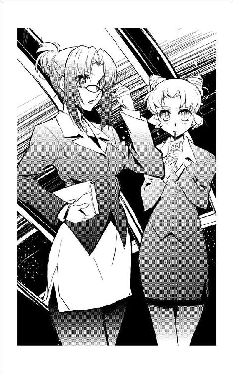
「ちょうどここに、宇宙船を動かし慣れてる男が揃ってるぜ。安くしとくから、まとめて雇ってくれねえか？」
「あら、それはお誂え向きですわね」
営業用の笑みを浮かべて、茉莉香は答えた。
「でも、どんな宇宙船でどんな仕事をするのかも聞かないで、いきなり売り込んでくるほど仕事に不自由しているようには見えませんけれど？」
同じようににやにや笑いを浮かべていた後ろの部下たちが、ちょっと戸惑ったように視線を交わし合った。
もじゃもじゃ髭は、どんぐり眼で不思議そうに茉莉香の顔を覗き込んだ。
「事情説明が必要かい？ 宇宙の上じゃあ技術さえあれば年齢経験性別は不問、ってのが普通だぜ？」
「申し訳ありません」
茉莉香は、軽く頭を下げた。
「実は、宇宙船の乗組員を探したり揃えたりするのはこれが初めてなんです。自分に見る目がないのはわかってるので、もしよろしければ前の宇宙船で何をやっていたのかお聞かせ願えないでしょうか？」
茉莉香は、陸戦隊向けというか、殴り込み用に揃えてきたようなもじゃもじゃ髭の後ろの男たちにも、にっこりと微笑みかけた。
「もちろん、うちは技術さえあれば年齢経験は関係ありません。実力があるなら資格だって問わないけれど、でも、実力がないと困るんです」
茉莉香は、もじゃもじゃ髭の大きな顔を正面から見上げた。
「船長さんは、前はどんな宇宙船に乗っていらっしゃったんですか？」
どんぐり眼の上のげじげじ眉毛が派手に跳ねた。
「おれっちが船長だと、なぜわかった？」
返答に困ったように、茉莉香は後ろの部下たちともじゃもじゃ髭の顔をもう一度見廻して笑ってみせた。
「......貫禄、だと思います。なんとなくそう見えたんですけれど、当たってました」
部下たちは面白がるような顔で、もじゃもじゃ髭の次の言葉を待っている。
「なるほど......港に出てくるような格好じゃなくても、度胸と目的意識はしっかりしてるってわけか」
つぶやいて、もじゃもじゃ髭は茉莉香とテーブルの向こうでいつでも逃げ出せるように腰を浮かせているグリューエルを見た。
「こらあ！」
埠頭に似つかわしくない金切り声が、突然にフードコートを切り裂いた。
「親父、何やってる！」
聞き覚えのある高音に思わず声の方向を向いた茉莉香は、目を丸くした。細身の船内作業服に傷だらけのジャンパーを引っかけた黒髪の少女が、底に金属鋲を打ったブーツで靴音も高く駆けてくる。
「チアキちゃん!?」
一度は茉莉香を捉えたはずの少女の視線はそのままもじゃもじゃ髭に流れ、チアキはもう一度茉莉香の顔を見直した。
「......か!?」
危うく本名をフルネームで叫びかけて、チアキは危うく踏みとどまった。ダッシュしてテーブルに駆けてくる。
「茉莉香！」
押さえた声で、チアキは茉莉香を睨んだ。
「そんな格好で、こんなところで、あんたいったい何やってるの」
「親父？」
チアキの言葉を繰り返して、はっと気づいた茉莉香はもじゃもじゃ髭の顔を見直した。
「まさか、お父様!?」
まるでそれを待っていたように、もじゃもじゃ髭以下一同の背筋がすっと伸びた。にやにや笑いをくちもとに貼り付けたまま、肘を脇につけた宇宙船乗りの敬礼をする。
「ケンジョー・クリハラです。娘が世話になっております」
つられて、茉莉香は思わず深々と一礼した。
「あ、加藤茉莉香です、こちらこそチアキさんにはお世話になっております」
不審そうな顔でもじゃもじゃ髭と作業服姿の少女を見比べたグリューエルが、大きくその目を見開いた。
「ケンジョー・クリハラって、まさか、海賊船バルバルーサの黒髭船長!?」
「ご覧のとおり、海賊です」
テーブルに手をついて立ち上がったグリューエルに、ケンジョーはその巨躯を折り曲げて膝をついた。
「セレニティ星王家のプリンセス・グリューエルとお見受けします。無礼の節は平にご容赦を」
父親の台詞を聞いたチアキは、茉莉香の向かいのビジネススーツの少女の顔を見直した。一瞬で社交用の笑顔と態度に切り換えたグリューエルは、やんわりとうなずいた。
「今は、身分を隠しております。もしよろしければ、プリンセスとは呼ばないでいただけますか？」
「仰せのままに」
深く頭を垂れてから、クリハラ船長は立ち上がった。フードコートに首を巡らせる。広いフードコートに客は数えるほど、今の一幕もそれほど注目を集めてはいない。
ケンジョーは茉莉香に目を戻した。
「さて、人目を集めずに話すなら、こんなところに腰を落ち着けるよりも埠頭を歩きながらの方がいいと思うが、どうだい茉莉香船長？」
茉莉香は、チアキの顔を見た。チアキは、無表情を装って茉莉香とグリューエルのビジネススーツ姿を見比べている。
「どっちみち、その格好でここに居座ってるのは目立ちすぎね」
茉莉香は、あらためて自分の赤いビジネススーツに目を落とした。
「......似合ってない？」
チアキは肩をすくめた。
「似合ってる、似合ってないの問題じゃなくて、どうして戦闘準備整えたキャリアガールが、アップタウンの第一埠頭ならまだしも、ダウンタウンの港湾地区，にいるのか、ってこと。逆に、女学院の校舎に作業服着たこおんなむさくるしいのが団体でうろついてる状況想像すればわかるでしょ」
茉莉香は、髭面の船長以下第二埠頭のフードコートの雰囲気に溶け込んでいる宇宙船乗りたちと、くすんだ色合いの内装材に囲まれたフードコートを見廻す。
「......ちょっと、派手だった？」
「もっと似合う服装を考えるべきだったでしょうか？」
心配そうな顔で訊いたグリューエルに、チアキは深刻な面持ちで首を振った。
「何しに来たつもりかつもりか知らないけど、仕事しに来たようには見えないわね。どう見たって、場違いなのが騙されたか勘違いして迷い込んできたようにしか見えないわ」
「さて、なんか欲しい奴は補給していきな」
ケンジョー船長は、背後の部下に声をかけた。
「海明星の中継ステーションは、アップタウンもダウンタウンも地上から上げてきた生きのいい食材で商売してるのが売りだ。ただ、ちょっとでもマシな味を楽しみたければ、できるだけ手のかかっていないホットドッグやサンドイッチを選んで、ソースには目もくれない方がいい」
ケンジョーは、茉莉香とグリューエルに向き直った。
「では、後ほど、外で」
胸に手を当てたまま、部下ともども一礼する。グリューエルが軽くうなずいてそれに応えたのを見て、茉莉香はあわててケンジョーとその一団に軽く膝を折って挨拶した。
自動販売機や配膳所に散っていったバルバルーサの乗組員を見送ってから、茉莉香は気が抜けたような大きな息を吐いた。
「どうしたんです？」
椅子にへたり込んだ茉莉香に、グリューエルが訊いた。
「なんでも......」
呑みさしの水パックを一気に空にして、茉莉香はフードコートの一画に向かって歩き出したケンジョー・クリハラの後ろ姿に顔を上げた。
「てっきり、どっかのごろつきだと思った。まさかバルバルーサの船長とその部下だったなんて、あたしってほんとーに見る目ないのね」
「ひと目でごろつきと見抜いたのなら、海賊船乗組員とあまり変わらないと思います」
ついてくるのかこないのか確認するように振り向いたチアキに目礼して、グリューエルはテーブルから立ち上がった。疲れ顔の茉莉香にウィンクする。
「わたくしも、てっきりごろつきかちんぴらが軽犯罪でも行いにきたんだと思いました」
ダウンタウンの第二埠頭は、アップタウンの第一埠頭に続いて海明星中継ステーションで容積の大きな空間である。宇宙船が出入りしても気密はエアシールドによって保たれ、床には人工重力が発生しているから地上同様の環境が保たれている。
埠頭側から何本もの固定用の桟橋が中空に突き出しているスペースを、茉莉香は海賊船バルバルーサの船長、及び乗組員一行と歩いていた。桟橋に入っている宇宙船はそれほど多くない。呼吸可能な空気で満たされた広大な空間を占有する埠頭への入港は料金が高くつくから、客船や必要な事情がある宇宙船、運用資金に余裕がある自家用クルーザーでもなければ港に入ってくることはない。
「うちの宇宙船も、沖留めだ」
先を歩くケンジョー船長は、空きが目立つ埠頭を横目で見ながら言った。
「なんせ経営の厳しい弱小海賊だからな、うちの宇宙船はこんな気密埠頭に入れるだけの安全規準も満たしているかどうか」
「髭親父！」
チアキがぴしゃりと声を上げた。
「よけいな内輪話は披露せんでよろしい」
「そっか」
同業の海賊船の詳しい出自を茉莉香は知らない。しかし、海賊免許が独立戦争の時に付与されたものであれば、バルバルーサは弁天丸とそれほど艦齢の変わらない老朽船のはずである。
「バルバルーサも、うちと同じくらい古い宇宙船なんですね」
「まあ、そっちと同じでいろいろ改造はしているがね。もっとも自動化が進んだ最新式に更新すると、乗組員が駄目になっちまうから難しいところだな」
「うちも、動かすだけでもみんな苦労してます」
茉莉香はうなずいた。
「やらなくていい手間なら苦労しなくてもいいと思うんですけど、なかなかそうもいかないみたいで」
「あなたも、やらなくていい苦労しにこんなところに来てるんじゃないの？」
チアキが、疑わしげな目でミニスカートのスーツ姿の茉莉香とグリューエルを見比べる。
「こっちのカレンダーでも、今日の白凰女学院は授業やってるはずでしょ。放課後にわざわざ着替えてこんなところまで来て、何やってるのよ」
「だから、ええと......」
ハロルド・ロイド保険組合から海賊代行の依頼が行っている以上は、エージェントを通じて事情説明が行われていると考えるべきだろう。少なくとも、同じ海賊免許を持って協力してくれている同業者に事情を隠さなければならない理由を考えて、茉莉香は慌ててケンジョーにぺこりと頭を下げた。
「あ、あの、いろいろお世話になってます。今回も、うちの代わりにクイーン・エメラルダスの海賊行為お願いして、お忙しいのに申し訳ありません！」
「ああ、その件についてはこっちこそ感謝しなきゃならない」
ケンジョーは溶け落ちそうな笑顔を満面に浮かべた。
「とくに、弁天丸の身代わりを務めさせてもらった仕事では実にいい目を見させてもらった」
「親父！」
振り返ったケンジョーのやに下がった視線を感じたチアキが父親に廻し蹴りを繰り出した。
「だから、その目はやめろ！」
「なんかあったの？」
茉莉香は心配そうにチアキに訊いた。
「......悪いことでも、した？」
「訊くな！」
「ありがとうよ。今回の仕事についても、弁天丸の代役ならぜひチアキに仕切って欲しかったところだが、残念なことに本人は別の仕事があるって言ってるし、保険組合もクイーン・エメラルダスの襲撃はバルバルーサの名前のままでやっていいってことなんで、チアキの出番はなしだ」
ケンジョーにくわっと牙を剥いて、チアキは茉莉香に向き直った。
「何をしにこんなところにいるのか、まだ聞いてないんだけど？」
「だから......」
茉莉香の声が小さくなる。
「弁天丸の、乗組員捜し」
「何？」
「弁天丸の今の乗組員が、ちょっと事情で全員隔離されちゃって動けなくなってるから、代わりの乗組員探さなきゃならなくて、それで......」
「乗組員探すなら、行かなきゃならないのはこんなところじゃないでしょ！」
チアキは声を上げた。
「そもそも、あなただったら、いてもいいのはアップタウンの第一埠頭の方でしょう。そんな変装に仮装までして、こんなところで乗組員掴まえようなんて本気で考えてたの!?」
「だって、第一埠頭に入るような宇宙船はきっちり飛行計画作って、乗組員の現地徴用なんかしないって知ってるもん」
口を尖らせて、茉莉香ははかない抵抗を試みる。
「乗組員揃えたかったら、どう考えたって第一埠頭より第二埠頭の方がいっぱいいるだろうって、あたしだってわかるもん」
「あなたねー！」
チアキは人目もはばからずに声を上げた。
「やるに事欠いて、海賊船の乗組員、こんな誰がうろついてるかも知れない場末の中継ステーションで揃えるつもりだったの!?」
「場末じゃないもん。うちの中継ステーションって近所でも大きい方だし、宇宙船だっていっぱい出入りしてるもん」
いろいろと不満そうな顔をして、茉莉香はぶつぶつと抗議した。
「だいたいねえ、海賊船長ともあろうものが、どうしてそんな格好でこんなところふらふらしてるのよ。からかおうなんて不埒なこと考えたのがうちの髭親父だったからよかったようなものの」
「からかおうなんて考えてたんですか！」
グリューエルが声を上げる。茉莉香は首を傾げてチアキに訊いた。
「よかったの？」
「よくないけど、素姓もわからないどっかのコネクションにちょっかい出されるよりよっぽどましでしょ！ 弁天丸の船長が護衛もなしに一人でうろついてるって知ったら、どこの何がどれだけ寄ってきたって驚きゃしないわよ」
チアキは、不審そうな茉莉香の視線が自分に向いているのに気づいた。
「どうして、海賊船の乗組員を揃えにきたって聞いて、驚かないの？ そっちの方で怒られると思ったんだけど」
反射的に反論しようとしたチアキは、口をぱくぱくさせた。茉莉香は、相手をケンジョーに替えた。
「あの、まさかと思うんですけど、弁天丸の状況って、バルバルーサの方々には筒抜けなんですか？」
「まあ、付き合ってる保険会社が一緒だしな」
ケンジョーはもじゃもじゃ髭の中から喰われそうな歯を見せて笑った。
「ハロルド・ロイド保険組合のショウから、最低限の事情説明は受けてる。するってえと、やっぱり弁天丸が乗組員の事情で動けなくなってるってのは事実なのかい？」
いろいろ言いたそうなチアキの顔を見て、茉莉香はケンジョーに一礼した。
「事実です。事情説明は省きますけど、今の弁天丸は乗組員が足りなくなっていて、到底動ける状態にありません。ただし、乗組員の欠員は一時的なもので、しばらく経てば全員が無事に復帰できるはずです」
「それじゃ、なんで海賊船長自らがわざわざ乗組員揃えにこんなところに出張ってこなきゃならないんだい？」
茉莉香は、ケンジョーの顔を見返した。
「乗組員が復帰するまでお仕事しないと、弁天丸の海賊免許が取り上げられちゃうんです。だから、なんとかして乗組員を揃えて弁天丸でお仕事しようと思って、まずはここまで来てみました」
ケンジョーは、チアキの顔を見て首を振った。チアキは勝ち誇ったように胸を張った。
「ほら、わたしが言ったとおりだったでしょ」
「いや、まあ、そういうことになってるんじゃないかとは思ってたが」
ケンジョーはぼさぼさ頭に太い指を潜り込ませた。
「だから、お前がまた海明星の女学校に戻るって言い出しても驚きもしなかったんだが......」
「戻る？」
茉莉香は思わずチアキの顔を見た。反射的に目を逸らしてから、チアキは茉莉香に食ってかかる。
「だいたい、海賊船なんて非合法すれすれの宇宙船に、信用できるかどうかもわからない乗組員急募して本当に仕事になると思ってるの？」
「だって、とにかく乗組員の数だけでも揃えないとお仕事もできないし、とにかく顔見てみないと信用できるかできないかの判断だってできないし......」
チアキは大袈裟な溜息をついた。
「あなた、どうしてもっと自分のまわりよく見ないの？ すぐ手許に、宇宙船動かせる信用できる人材がいるんじゃないの？」
「すぐ手許に？」
きょとんとして、茉莉香は訊き返した。
「宇宙船動かせるような人材が？ それもあたしが信用できるようなのが？」
「いっぱいいるでしょ？」
「どこに？」
素で訊く茉莉香に、チアキは茉莉香自身を指差した。
「あなたの学校。部室に、宇宙船動かせる人材がいっぱいいるじゃない」
自分の鼻を指差して、茉莉香はさらに目を見開いた。
「あたしの学校？ 部室って......ヨット部!?」
チアキは会心の笑みを浮かべてうなずいた。
ちょっと考えて、茉莉香は悲鳴を上げた。
「ヨット部のみんなを弁天丸に乗っけろっていうの!?」
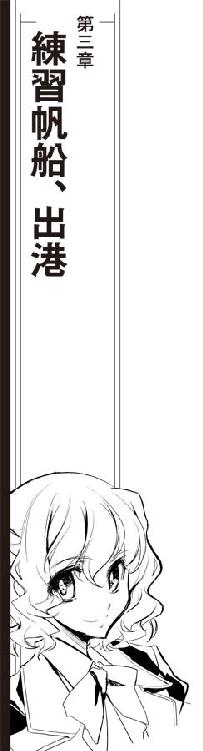
「Ｃ68の練習帆船から出港許可申請だ」
海明星中継ステーション管制局へのオデット世の出港申請は、昼時の大型船の出入りが一段落して一時的に航路が空いている時間帯になって提出された。
「二〇年も係留しっぱなしだった前回の出港よりは、ずいぶん早いじゃねえか」
ネットワークで送られてきた許可申請をチェックした管制官は、集積されている関連必要書類を付き合わせて自動チェックにかけた。たう星系の外惑星軌道を周回して戻ってくる星系内のみの練習航海は、前回より長めの日程を取っているが、積み込まれている物資にも整備状況も、練習帆船らしく多めに配置されている乗員にも欠損や瑕疵はない。
「白凰女学院の練習帆船かい」
同僚が、転送されてきたオデット世の出港申請を目の前のディスプレイに映し出した。
「一昨日からちんまいのが頑張って出港準備してたようじゃないか。間に合わないかと思ったのに、予定どおりとは感心感心」
「曰く付きの練習帆船とはいえ超光速できないカテゴリーの低速船なら、何があったってすぐに救援の星系軍が駆けつけられるだろう」
「幸いにして少しばかり手間取ったところで、邪魔になるような入出港の予定はなしと。申請書類にも飛行計画にも変更なしなら、これはこのまんま許可して問題ないな」
「まあそう急ぐなって」
同僚は楽しそうに通信回線を切り換えた。
「せっかく女子校の練習帆船が出港しようっていうんだぜ。出港許可は、芸のないメッセージじゃなくて画像付きで直接挨拶させてもらおうじゃないか」
「なるほど、そりゃ道理だ」
管制官は通信回線をまだ埠頭に係留されているオデット世への有線回線に切り換えた。
「こちら海明星中継ステーション管制局、Ｃ68埠頭に係留中のオデット世どうぞ」
『こちらオデット世、白凰女学院ヨット部部長のリン・ランブレッタです』
まるで呼び出されるのを待っていたかのように、通信モニターにショートカットの凜とした美女が現れた。今どきの宇宙船では使われなくなった旧式なヘッドセットがよく似合っている。
『現在Ｃ68埠頭に係留中』
透き通った女子高生の声を聞いた管制官は思わず背筋を伸ばした。通信モニターの背景に、まだいろいろ飛び廻っているらしい乗組員の姿が見える。
「ああ、こちら管制局です。ただいま、オデット世からの出港申請を受け取りました」
『なにか、書式に不備でもありましたか？』
涼しげな瞳に心配の色がよぎったのを見て、管制官はあわてて首を振った。
「いえ、そんなことはありません。立派なものです。せっかく美しい宇宙帆船の出港ですから、口頭で直接、出港許可をお伝えしようと思っただけです」
『まあ』
通信モニターの向こうのリン部長はうれしそうに微笑んだ。
『それはどうも、わざわざご丁寧にありがとうございます』
「いえいえ、おやすいご用です」
ついふらふらと答えてから、管制官は同僚がにやにや笑いながら通信をモニターしているのに気づいた。はっと表情を引き締める。
「では、あらためて、海明星中継ステーション管制局からオデット世の出港を許可します。出港ルートは申請どおりで問題ありません。無事な航海をお祈りします」
『ありがとうございます』
通信モニターの中で、旧式なヘッドセットを形式どおりに頭に載せた若い通信オペレーターが一礼した。
『中継ステーションにも平穏な日々が続きますように』
「は、どうも、ありがとうございます」
管制官は、通信モニターの向こうのオデット世のブリッジの様子を見ていた。通信オペレーターが不思議そうな顔で訊いた。
『あの、画像通信を切ってもよろしいでしょうか？』
「あ、はい、もちろんです。失礼しました。気をつけて出港して下さい」
「お手数かけました。ごきげんよう」
もう一度一礼して、リンは通信モニターを切った。ヘッドセットのチャンネルを艦内放送に切り換える。
『管制局から出港許可が出た！ 埠頭を開いて、出掛けるよ！』
すでにＣ68埠頭の与圧大気は開放準備のために抜かれている。メインブリッジからの操作で、Ｃ68埠頭は宇宙空間への開放を開始した。
出港手順が型どおり行われていることを確認して、通信オペレーター席のリン・ランブレッタ部長は船長席の茉莉香に振り向いた。
「というわけで、出港許可が出たぜ。せっかく船長じきじきの挨拶を求められた時のためにダミー画像まで用意したのに、無駄になっちまったな」
「まあ、珍しい宇宙船に目立つ乗組員だから、自動応答で出港許可が出てくれるとは考えてませんでしたけど」
船長帽にサイズの合わない制服まで着込んでいた船長席の茉莉香は、ほっとした顔で大きすぎる船長帽を取った。
「船長確認なしで出してくれるとは思ってませんでした。さすがリン部長」
オデット世ほどの大型船を動かすには、星間船舶免許を所持している人員の乗り込みが必要である。茉莉香は弁天丸の海賊免許の保持者として自動的に付随してくる船長免許を持っているが、海賊免許を練習帆船の船長免許の代わりに使うわけにはいかない。
非常手段としてオデット世を動かすために使われたのは、前回、船長資格を保持して乗り込んだヨット部顧問、ケイン・マクドゥガルの第二種星間船舶免許だった。
関連データは部室のコンピューターに保存されていた。有効期限内なのを幸い、今回のオデット世の出港許可をはじめとする各種手続き、飛行計画はすべてケインの名のもとに作成され、関係各機関に提出された。
教育機関所属の研修船の場合は、他にも船医の乗り組みが必要である。こちらも、前回の練習航海で船医として乗り込んだミーサ・グランドウッドの医療免許及び申請書類一式がそのまま再使用され、最終的にオデット世は問題なくすべての出港準備を整えた。
ただし、ケインもミーサも当のオデット世には乗り込んでいない。出航前なら港湾局の抜き打ち検査があってもいくらでも言い訳ができるが、出港時点の管制局との通信で船長確認があったら本人が乗り込んでいないことがばれてしまう。
そのために、茉莉香が現ヨット部部長であるリン・ランブレッタと用意したのは、ケインの外観データを使っての偽造通信データの作成だった。
中等部時代にネットワークへのクラッキングで当局に引っ張られかけた経験もあるというリンは、卓越した画像センスとともにその電子戦技術を遺憾なく発揮、船長席に座った代役に本物と同じ画像データを作成して重ねることで画像通信による本人確認を突破しようとしたのである。
船長席に座った代役は、外観も音声もケインに変換されて画像通信に現れることになる。出港時に管制局から通信があれば間違いなく船長の挨拶を求められると思っていたのに、オペレーターとの通信だけであっさり出港許可を出された茉莉香は気抜けしたような溜息をついた。
「だから、そこで気を抜かない！」
航法席のチアキが船長席の茉莉香をどやしつけた。
「まだオデット世は動き出してもいないのよ。気を抜くのは、せめてこの宇宙船が中継ステーションの管制空域を出てからにしなさい！」
「はい、はい、わかっております」
船長帽を無重力状態のブリッジに放っておいたらそのままどこかに漂い出してしまうから、コントロール・パネルの下の隙間に突っ込んで、茉莉香はブリッジを見廻した。
「間もなく埠頭の開放、完了します！」
ブリッジに何面も備えられている外景モニターには、すでに大きく開いた埠頭の外の宇宙空間の様子が映し出されている。
茉莉香は、船長席まわりのディスプレイを見廻して、出港準備を確認した。
「オデット世、動き出すのにどこか問題があるところは？」
「航法系、全系統異常なし！」
「電子系、正常稼動中。レーダー出力は五パーセントで運転中」
「機関系異常なし！」
「通常推進系、姿勢制御系ぜんぶ大丈夫！」
「環境系問題なし！」
メインブリッジだけでなく船内に発進態勢で配置されたヨット部部員から、船長席に束になって報告が返ってきた。全系統、発進に問題なし。電子戦装備はレーダーが最低出力レベルで運転されているだけで他の系統には電源も入っておらず、他にもいくつか用途不明な設備があるものの、オデット世が宇宙船として飛ぶには万全の態勢が整えられている。
茉莉香は、それぞれの持ち場についているブリッジの部員たちを見廻した。操舵手は、中等部の地方大会で一人乗り小型機で入賞経験がある一年生である。
茉莉香は、背中から見ても気の毒なほど緊張しているのがわかる操舵手に声をかけた。
「もっと気を楽にして、アイちゃん」
「は、はい！」
一番前まで出した耐Ｇシートにはまり込んだまま、両手をコントロールスティックに添えたアイは裏返った声で答えた。
「リミッターもあるから、ぶつけようったってぶつからないから。埠頭を出るまでは、自動操縦使ってもいいのよ」
「だい、だい、大丈夫です！」
舌っ足らずな声をもつれさせながら、アイは答えた。
「こんな大きな宇宙船、自分で動かすのはじめてだからどきどきしてるだけで、シミュレーターどおりに動いてくれるならドッキングオフから外宇宙に出るまで全手動でも大丈夫です！」
「埠頭、全開放確認！」
Ｃ68埠頭を覆うシールドが完全開放されたサインがブリッジに来た。模式化されたオデット世を囲んでいた気密埠頭のシールドカバーが、花びらのように開いたのをモニター上でも確認した一年生が報告する。
茉莉香は、次の指示を下した。
「ドッキングオフ、開始！ 全ロッキングアーム解除」
「埠頭側ロッキングアーム解除します！」
ブリッジにまで、船体を埠頭に固定していた頑丈なクレーンアームが外れる鈍い音が響いてきた。船体のポジションは変わらず、クレーンアームが収納された分だけオデット世はステーションから分離した。
「全ロッキングアーム解除確認！」
「オデット世、完全フリーになりました！」
「さあ、行くわよ」
茉莉香は、船内の全員に聞こえるように声を上げた。
「オデット世、発進！」
「オデット世、発進します！」
操舵手席のアイは、コントロールスティックの操作でわずかにオデット世の船体を浮かび上がらせながら前進を開始した。大きさの割に軽量な船体を持つオデット世は、アイの操作に忠実に反応して動き出した。
九本のマストを細い船体に添わせるように折り畳んだまま、オデット世はＣ68埠頭から宇宙空間に乗り出した。最低限の姿勢制御スラスターだけで姿勢を保ったままゆっくりと埠頭を離れ、続いて前進を開始する。埠頭、そしてステーションから離れるまでは使用可能な推進機関は姿勢制御スラスターのみ、高効率の主機関は高速プラズマを噴射することになるから充分な安全距離を取るまで使えない。
低推力の姿勢制御スラスターだけでも、大きさの割に軽量なオデット世を動かすには充分である。純白の帆装宇宙船は、船体の三方向に九本のマストを折り畳んだまま埠頭から宇宙空間に進み出る。
「船体が埠頭を出ました！」
一年生が報告した。船長席の茉莉香は、不景気な顔で指折り数えた。
「ええと、今の段階で船舶免許と医療免許の偽装に、乗員名簿の不実記載か......」
「今さらなに不景気な勘定してるのよ」
通信オペレーター席からリンが振り返って茉莉香を睨む。
「いえ」
茉莉香は溜息をついた。
「最初にオデット世で乗り出した時には、絶対に違反でぱくられるような宇宙船の乗り方はしないって思ってたはずなのに、どうしてこう不正行為に抵抗がなくなっちゃったのかなあって考えてたんです」
「これから、いたいけな女子高生に海賊させようって船長が、今さら何言ってるのよ」
「海賊はいいんです、海賊は」
口を尖らせてから、茉莉香は自分で言い聞かせるように言った。
「ちゃんと行政局から正式に発行された免許を持ってて、海賊行為だって保険会社や軍に依頼された正式な業務としてやってるんだから、違法行為じゃないんです。でも、今やってるのは間違いなく宇宙法違反だよなあって思うと、どうして平気で無視できるようになっちゃったのかなあと思って」
「法律ってのはね、人が楽に暮らせるように定められてるものなの」
通信パネルに向き直ったリンは、コントロール・パネルに指を滑らせて周辺空域を飛び交う通信のモニターを開始した。
「法律守るためにかえって苦しくなるくらいなら、向こうの流儀に合わせてあげてるんだからちょっとくらい忘れたっていいのよ」
「部長、詐欺師の才能あるって言われたことありません？」
「あるわよ。中学の時、警察にね」
通信パネルから電子戦席に移動したリンがあっさり言った。それがかつての部長の戦績だと知っているブリッジの全員に、奇妙な沈黙が訪れる。
「だって、結局、司法取引なんて持ち出してくるんだもの。取引でズルできる法律なんて、ゲームのルールより甘いわよ」
無重量状態のブリッジを優雅に跳んで、リンは電子戦オペレーター席に着いた。手慣れた様子でコントロール・パネルのスイッチを入れていく。
「はあ」
「だから、ズルする時は誰にも迷惑かけないように、気づかれないようにうまくやること。法律定めて運用してる側がいちばん嫌がるのは、知ってるところで法律破られることだけで、知らないところで破られるルールなんて知ったこっちゃないんだから」
「本気で聞いちゃいけませんよ」
茉莉香は、ブリッジの部員たちに呼びかけた。
「でないと、部長みたいにろくでもない不良になっちゃいますからね」
ブリッジに笑いがさざめく。
茉莉香は、ディスプレイでオデット世の針路上に障害になりそうな宇宙船も航路規制もないのを確認した。あとの操船はアイに任せたままでも大丈夫そうなのを見て、船長席から抜け出して電子戦席に跳ぶ。
「こんなところで電子妨害とか、始めないで下さいよ」
「大丈夫、受動でしか動かしてないから」
電子戦席のコントロール・パネルの復活に伴って、それまで消えていたメインブリッジのいくつかのパネルにも灯が入った。
「それに、いくらなんでも軍艦だっているこんな中継ステーションの目の前で電子戦仕掛けてくる度胸のいいのも、そうはいないと思うけど」
「部長が仕掛ける方を気にしてるんです！」
「まあまあ、おとなしくしてるから。だいたい、オデット世の航海中はこいつに大活躍してもらわなきゃならないんだし」
オデット世の今回の飛行計画は、前回の練習航海のように、たう星の反対側を廻って帰ってくるものではない。外惑星の近傍を巡って帰ってくるだけの、ごくおとなしい周遊軌道である。しかしながら、その大部分を無人運行させなければならないため、コントロール・システムのセッティングは困難を極めていた。
「大丈夫ですか？」
茉莉香は心配そうにリンの手許のコントロール・パネルを覗き込んだ。オデット世に自動運航機能は装備されているとはいえ、基本的には人力で操作される帆装宇宙船である。長期にわたる、しかも自分で軌道を変更しながらの周遊航海には、ありとあらゆる事態を想定したオートプログラムの複雑なセッティングが必要になる。
「まあ、なんとかなると思うよ」
リンは、立ち上げた電子戦システムの調子を手早くチェック開始した。
「それに、完全自動の無人運行ってわけじゃなくて、航行データ取りながらの遠隔操作になると思うからね。あ、ＨＡＬ坊つなげるからよろしく」
「くれぐれも、オデット世に変な癖をつけないで下さいね」
茉莉香は、前の練習航海の時に、前部長であるジェニーが同じことを言っていたのを思い出した。自分のコンピューターを型式ではなく愛称で呼ぶリンは、どこからか手に入れた軍用の小型ノートパソコンを、改造に改造を重ねて使っている。オーナーは性能よりは安定性と耐久性重視だと言っているが、一台で学校のスーパーコンピューターに匹敵するような性能を持つノートパソコンは操作系まで含めて猛烈な癖を持ち、リン以外には使えない。
「この宇宙船、あたしたちの代だけじゃなくて、ちゃんと後世の後輩たちに残さなきゃならないんですから」
「ジェニーと同じこと言うのね」
リンの拗ねたような口調を聞いて、茉莉香はどきっとして部長の横顔を見た。薄型の耐爆ケースの外側にまでいろいろと余計な付加物が追加されたごつい軍用コンピューターを開いたリンは、手慣れた調子で太いネットケーブルを電子戦システムに接続開始した。
「心配しないでも、こんな骨董品みたいなシステム、あたしとＨＡＬ坊でどうにかしようったって簡単にはいかないから大丈夫だって。それよりも、弁天丸の方がちゃんということ聞いてくれるかどうか心配なんだけど」
「仮装巡洋艦のあとは練習帆船で、しかも最近はずっと埠頭で寝てたオデット世よりは新しいはずです」
茉莉香は、弁天丸のブリッジでクーリエが一手に仕切っていた電子系まわりの状況を思い出した。
「ここより、だいぶ複雑怪奇で訳のわからないことになってますけど」
「まあ、なんとかなると思うわ。チアキちゃんって助っ人もいることだし」
リンは、ちらっと航法系の席に着いているチアキに目を走らせた。
「弁天丸には凄腕の魔法使いが二人も揃ってましたから」
チアキは、メインブリッジのいちばん大きなモニターにオデット世の航路予定図を映し出した。
「それに、つい最近まで現役で動いていた宇宙船です。この宇宙船よりは扱いやすいんじゃないかと」
「現役の魔法使い二人ってのが問題なのよ」
リンは手を動かしながら答えた。
「コンピューターなんて言ってるけど、電気機器なんて昔っから手間暇かけて面倒見続けて、それでやっとなんとか止まらないように動かすのが精一杯なんだから。事前に資料でも貰ってればともかく、いきなり目の前にして使いこなせるかどうか」
「予定どおりなら、オデット世でも弁天丸でも電子戦なんてやる予定はありません」
茉莉香は苦笑した。
「とにかく、最低限宇宙船らしく動かせればそれでいいんですから」
「はいはい、それじゃあまずこっちの帆船を宇宙船らしく動かせるように細工しなきゃねえ」
「管制局から帆走許可、来ました！」
リンに代わって通信席に入っていたマリイが報告した。とんぼ返りで船長席に戻った茉莉香は、通信文で送られてきた管制局からのメッセージを見た。
オデット世の現在位置はまだ管制空域内、本来なら帆走が許される場所ではない。しかし、航路上に接近予定の宇宙船がないこと、たう星の太陽光を背中から受けた追い風で飛ぶことになるので、管制局が気を利かせてくれたらしい。
「管制局からのメッセージ確認しました。マリイ、定型文でいいから受信確認とお礼のメッセージ返しておいて。それじゃあ、予定よりちょっと早いけど、全船、帆走用意！」
「船外作業の準備、間に合わないわよ！」
帆走担当の三年生が悲鳴を上げた。
前回の練習航海で、オデット世は初の全帆展開でメインマストとヤードが引っ掛かって開かないという不具合を経験している。その後の補修とテストで再び全帆展開を行なっても問題はないことは確認されているが、前回の教訓に従って訓練がてら帆走作業時には宇宙服を着た船外作業部隊を用意することになっていた。
「また、この前みたいに途中でマストが絡まっちゃったらどうするの？」
「中継ステーションから見えるところで展開途中の帆が止まっちゃったらちょっと恥ずかしいですけど、でも、練習帆船なんだから、その程度はトラブルのうちに入りません」
茉莉香は、まだ出港直後の狂騒状態が続いているヨット部部員たちの船内配置を確認した。
「船外作業要員は、目の前の仕事が終わり次第中央エアロックに集合、宇宙服の用意をして下さい。対策はしてあるんだから、引っ掛かったらその時にまたなんとかしましょう」
「了解」
帆走担当の三年生は、難しい顔で、船体中心から三方向に合わせて九本展開する帆装マストのコントロール・パネルに向き直った。基本動作は自動化されているからコマンドを打ち込むだけとはいえ、操作次第では簡単にマストやヤードを絡めてしまう。
「それじゃあ、オデット世、フォアマスト、ミズンマスト、メインマストの展開を開始します」
バーグ型帆装宇宙船であるオデット世の太陽帆マストは、洋上を走る帆船そのままに前方からフォアマスト、ミズンマスト、メインマストと呼ばれている。帆装担当の三年生の操作により、オデット世は最前列フォアマストから展開を開始した。
前回あれほど手こずって、船外作業まで必要としたマストとヤードの伸展作業は、拍子抜けするほど順調に行われた。ゆっくりと九本のマストを拡げたオデット世はヤードに太陽帆をいっぱいに拡げ、たう星の光を受けて帆走を開始した。
太陽光の推力は微弱だから、オデット世の加速もゆっくりしたものである。しかし、太陽帆船は推進剤を使わずにずっと加速を続けることができる。
「茉莉香、来て！」
帆走開始直後に中継ステーションの管制空域を出たオデット世のメインブリッジで、チアキはいちばん大きなメインスクリーンに航路図を星系図上に映し出した。
「なあに？」
「船長でしょ。航路確認よ」
チアキは、メインスクリーンに映し出された航路図を目立つように派手にフラッシュさせた。
「これが、管制局に提出されているオデット世の飛行計画。でも、本当の飛行計画はこっち」
チアキは、微妙にずれた曲線を描く新しい航路を星系図に重ねた。
「航路は、海明星のラグランジュ点にある星系軍の錨泊空域をかすめて外惑星軌道に向かいます。でも、本当の目的はこの錨泊空域」
チアキは、新しい航路図がもろに突入しているラグランジュ点の錨泊空域を点滅させた。
「ここは、星系軍が固定保管してる予備艦とか、スクラップとか、それから艦隊の集合や一時避難なんかにも使われる場所です。現在のところ、現役船でここに泊まっている宇宙船はありません」
チアキは、メインスクリーンの中に錨泊空域を一気に拡大した。大小さまざまないくつもの輝点が重なる。
「ただし、現役船でここに泊まってる宇宙船がいないっていうのは、軍のいつもの手で表向きだけの情報です。今ここには二隻の現役船が停泊中です。一隻は星系軍の病院船、ベン・ケーシー」
輝点のひとつが点滅した。
「そして、もうひとつがこれ。海賊船、弁天丸」
錨泊空域の外縁部ぎりぎりで、小さな輝点が点滅した。
「これが、今のオデット世の第一目標になります」
茉莉香は、航路図の要所要所に重ねられている予定時間を見た。出港許可申請に合わせて最新のスケジュールに更新された行程表によれば、最接近点まで一二時間ほどしかない。
「もう一度、予定を確認します。オデット世はこのまま外惑星軌道に向かいながら、ちょっとずつラグランジュ点の錨泊空域にずれていって、最接近点を通過。オデット世はその後通常軌道に戻って、予定どおりの航路を進みます」
「つまり、それまでにオデット世に残りの航路と航行予定を全部教え込まなきゃならない、ってわけね」
星系図に重ねられた航路図を見上げたリンは、メインブリッジのクロノメーターと自分の腕時計を見て現在時刻を確認した。
「連絡艇の発進予定時刻は最接近点で変更なし？」
「できればその前」
茉莉香は、航法席のコントロール・パネルに手を伸ばしてラグランジュ点に至るオデット世の軌道を拡大した。
「ぎりぎり、最接近点でオデット世を離れても弁天丸へのランデブーにそんなに問題は出ないけれども、一応、錨泊空域を監視してる自動衛星に見つからないよう、目立たないよう、できるだけ波風立たせずに錨泊空域内に入ろうと思ったら、最接近点の前にオデット世から連絡艇を離脱させた方がリスクの少ない軌道を取れます」
茉莉香は、錨泊空域中央の監視衛星と外縁近くの弁天丸にまっすぐな補助線を引いた。補助線は、錨泊空域の外縁設定ぎりぎりでオデット世の予定軌道と重なる。
「つまり、このポイントで連絡艇を発進させれば、ちょうど監視衛星から見て連絡艇を弁天丸の陰に入れたまま接近させることができる」
「波風立たないようにするのは賛成だけど」
チアキは、錨泊空域まわりの配置図を別のディスプレイに表示した。空域設定のためのブイ、中央の監視衛星、それに漂泊している大型コンテナや空タンク、モスボールされている旧式軍用宇宙船などが不規則な間隔を保って浮いている。
「弁天丸を乗り出すってことくらい、預かり先の星系軍には話通してないの？」
「一応、ハロルド・ロイド保険組合のエージェントを通じて話はしてる、はず」
茉莉香は自信なさそうに言った。
「だけれども、もちろんヨット部の部員が大挙して海賊船に乗り込んで弁天丸を動かす、なんてことは言ってないの。いっくら動かす船が海賊船でも、ろくな資格も揃えてない女子高生だけで星系軍の管理空域から宇宙船を乗り出すなんて、向こうにとってはあんまり快い話じゃないと思うのよねえ」
「見ないふりしてくれればいいけれど」
リンがぽつりと言った。
「でもまあ、なんかあったら、その時は海賊船弁天丸船長の出番だね」
「......はい」
茉莉香は小さくなって答えた。
「できれば、その出番がないことを祈ってます」
メインブリッジに、鋭い呼び出し音が響いた。即座に反応した通信士席のマリイが、旧式なヘッドセットを柔らかな癖っ毛の上から押さえて茉莉香に顔を上げる。茉莉香が訊いた。
「どうしたの？ なんか緊急事態？」
「大型貨物ベイから、ええと......」
マリイは、言いにくそうに報告した。
「......密航者、だって」
茉莉香は、聞き違いでないことを確かめるために訊き直した。
「密航者って、今、そう言った？」
マリイは、困り顔のままうなずいた。
大型貨物室は、細身の船体を持つオデット世の中で、もっとも大きな容積が確保されているスペースである。メインブリッジのすぐ前にある中央貨物室は、中央のミズンマストと最後部のメインマストの間にあり、大きく開く貨物室扉を持っている。
今回の航海で、オデット世は大型貨物室に小型連絡艇を搭載していた。
白凰女学院名義で登録されている連絡艇は、ブースターなしで惑星表面から軌道空間にまで進出できるだけの機関性能を持っているが、オデット世同様に超光速はできない。収容人員もひとクラス分に満たず、教職員の移動くらいにしか使い道がないので、たまにしか使われていない。海明星内の移動なら白凰女学院の専用機を使った方が簡単だし、惑星間移動を必要とするような出張はほとんどない。
新奥浜宇宙港の専用格納庫に置き去られたまま、茉莉香も前回これに乗ったのはオデット世の練習航海でヨット部員のためのシャトル便として使われて以来という連絡艇だが、星系軍の練習艇にも採用されており、頑丈で扱いやすいことには定評がある。
よほど大量の食料を積み込まない限りは長期間の航行も難しい連絡艇だが、再突入しての大気圏内航行、着陸、そして再び離陸して軌道まで復帰できるとなれば使い方はいろいろある。白凰女学院ヨット部は、オデット世の練習航海にあたって、マイクロバスというよりは軍用輸送機のようなこの連絡艇を、航行中の連絡艇、非常時の救難艇の名目で借り出していた。
航海中の運行責任者は第二種船舶免許保持者にしてヨット部顧問であるケインだが、その本人がオデット世に乗り込んでいないのは言うまでもない。
Ｃ68埠頭での停泊中に埠頭内で一部のマストを開く、という手間をかけて大型貨物室を艦載デッキ代わりに搭載された連絡艇は、オデット世の出航前から荷物の積み込みが続いているはずだった。
メインブリッジから無重量状態の船内通路を飛んですぐ目の前の大型貨物室に入った茉莉香は、貨物室の半分を占領している連絡艇と残りのスペースに仮固定されているだけの食料コンテナ、日常品に私物の山の間で、作業服姿のヨット部員たちに囲まれている制服姿の密航者を発見した。
「グリューエル！」
茉莉香は、予想していたとおりの密航者の顔に声を上げた。
「いったい、どうやってこんなところに潜り込んだのよ！ 新奥浜空港で、ちゃんと見送ってくれたんじゃなかったの!?」
「ああ、あれは妹のグリュンヒルデです」
飛んできた茉莉香に、大型貨物室の床に足をつけて立ち姿勢を保っていたグリューエルは優雅に一礼した。
「お気づきになりませんでしたか？」
「ヘアスタイルに学年章まで変えて変装させてたのは、グリューエル、あなたなの!?」
「いえ、妹が自分から言い出して協力してくれたのです」
いつもどおりの自信に満ちた顔で、グリューエルは言った。
「おかげで、わたくしは連絡艇の出発前に余裕をもって貨物室に隠れることができました」
「なんだってまた密航なんてしたのよ！」
茉莉香の声は悲鳴に近かった。
「今回のフライトは、ヨット部の練習航海じゃなくて弁天丸での海賊行為なのよ!? そんなのに、一国の王女であるグリューエルが乗り込んでるなんて知られたら、いったいどこからどんなスキャンダルになるか、想像もつかないっていうのに！」
「あら、だって茉莉香さんがそう言うってわかってましたもの」
グリューエルは澄まし顔で答えた。
「今回の航海にご一緒させて下さいってお願いしても、いろんな理由つけて絶対に許さないって、ご相談する前からわかっていましたもの」
「あたりまえです！ ヨット部のみんなだってどれだけ事情抱え込んでるか知れないのに、このうえ星間関係まで背負い込んで海賊やる気なんかないんだから！」
「そうおっしゃるってわかってましたから、わたくしは一切今回の航海にご一緒させて下さいってお願いしなかったのです。だって、その方が茉莉香さんに無用な警戒心を起こさせないと思いましたから」
うなずいてみせたグリューエルのさわやかな笑顔を見て、茉莉香は下を向いて大きな溜息をついた。
「つまり、このタイミングで出てくればもう問答無用で追い返されることもない、って、そういう計算？」
「それはちょっと違います」
あいかわらず社交用の笑顔のまま、グリューエルはわずかに首を振った。
「前に聞かせていただいた練習航海のスケジュールが大幅に変わっていないのでしたら、そろそろわたくしでもお手伝いできるようなことがあるのじゃないかと思いまして」
もう一度溜息をついて、茉莉香はグリューエルを上目遣いに睨みつけた。小声でつぶやく。
「......他の星の海賊免許と自分の星の王位と、どっちが大切なのよ」
「正直に答えさせていただければ、わたくしは自分の星の王位にはそれほど執着はありません」
真顔で答えて、グリューエルはぺろりと舌を出した。
「だって、いくらでも代わりがいますもの。でも、茉莉香さんの海賊免許は替えが効かない。だとすれば、どちらが大切かは自ずから明らかですわ」
「ぷりんせすううう」
「わたくしは、ヨット部の部員としてここに参りました」
社交用に表情を整えて、グリューエルは言った。
「だから、プリンセスとは呼ばないでいただければありがたいと思います」
「だあーかあーらああああ」
「それに、海賊ならば二者択一を迫られても、どちらも手に入れるものではないのですか？」
「どこでそんなこと覚えてきたのよ、この密航好きな姫君は」
「あらためて、オデット世、及び弁天丸への乗船を希望します。受け入れて下さいますか、茉莉香船長？」
茉莉香は、グリューエルの顔を見た。連絡艇への積み込み作業を中断してまでまわりに集まって、興味津々で事の成り行きを見守っているヨット部部員たちの顔を見廻す。
茉莉香は、敗北の印に両手を上げた。
「わかりました。グリューエル・セレニティの乗船を許可します」
まわりを囲んでいた部員たちがわあっと歓声を上げた。
「ありがとうございます」
グリューエルは、茉莉香に一礼した。
「楽な航海じゃないんだからね。乗組員としてきたからには、きっちり仕事してもらうわよ」
「そのつもりです」
「それじゃあ、まずはメインブリッジに来て。これからの計画説明するから」
行きかけて、茉莉香は中等部の制服姿のままのグリューエルに向き直った。
「荷物は？」
「ご心配なく」
グリューエルは澄まし顔で答えた。
「わたくしの荷物は、もう連絡艇の貨物区画に積み込んでありますから」
連絡艇の出港寸前まで、リン部長はメインブリッジに貼りついたまま過ごした。長期間の練習航海を実質的に無人で、自律コントロールで行うためのセッティングは、関わった部員が不可能ではないかと思うほど厄介で面倒なものだった。
しかし、出航前からろくな休みも食事も取らずに驚くべき集中力でブリッジに詰めっぱなしだったリンは、予定されていた連絡艇の出発時間までにオデット世の自動航行プログラムを完成、それを複雑怪奇に肥大したメインコンピューターに組み込むことに成功した。
時代に応じて換装、改造されて性能を保っているという触れ込みだが、オデット世の電子システムは各時代のものが並列併存し、その気になれば異なったフォーマットを同じ目的のために同時に走らせることすら可能である。効率よりも多用途性と生存性を重視して組まれたシステムは、普通に運用するだけでも莫大な人手と時間を必要とする。
維持するだけでも手間のかかる時代物の電子系を相手に、リンはしつこいほどの自動チェックを繰り返す航行プログラムを組み込むことで、最悪の場合、誰もオデット世に戻ってこられなかった場合でも中継ステーションの管制空域に戻ってくるような航行計画を完成させた。
スケジュールの余裕時間をほとんど食い潰して、一度だけ行われた高速シミュレーションでは、オデット世は予定されたスケジュールどおりの帰還に成功した。もちろん、途中で何か突発的な事態に遭遇した場合は自動で行える以上の対応はできない。
しかしながら、航行スケジュール上では交叉する主要航路も接近予定の船舶もなく、オデット世自身の予測不能なトラブル発生を除けば非常事態の発生に遭遇する可能性は低いだろうとむりやり辻褄を合わせ、茉莉香はオデット世をその練習航海の大部分を無人で運用することにした。
中継ステーションの与圧埠頭で閉鎖されたオデット世の大型貨物室扉を開くと、案の定、固定されていなかった荷物やゴミ、劣化したパッキングや剥がれた塗装片などが盛大に噴き出した。大きな荷物は慌てて飛び出した宇宙服姿の部員たちに回収され、続いて艇内のカーゴスペースだけでは足りずに外装コンテナの上からもテープやロープで荷物を山のように括りつけた連絡艇が浮かび上がる。
『予想はしてたけど......』
太陽帆を拡げたミズンマストの上から、オデット世のカーゴ・ベイからの連絡艇発進を見ていた茉莉香は、軽装宇宙服の無線越しにつぶやいた。
『こうやって実際に目の前にしてみると、本当にあんな状態で宇宙空間航行していいのか、ってくらいむちゃくちゃな状況ね』
『うるさい！』
連絡艇の操縦席から、チアキの反応があった。
『茉莉香のところの部員たちが、あれもこれもって荷物積み込むからいけないんでしょうが！ 人跡未到の地に行くわけでもベース・キャンプ設営して越冬するわけでもないのに、どうしてこんな大荷物になるのよ！』
『だって、もともと連絡艇ってみんなで乗り込むには収容人員足りなかったし、弁天丸にはみんなに合うような宇宙服は揃ってないし』
茉莉香は、オデット世のカーゴ・ベイからミズンマストとメインマストの間に浮かぶ色とりどりの宇宙服を見廻した。オデット世に用意されていた船外作業用の軽装宇宙服のほとんどが宇宙空間に出ていることになる。
『ほんとだったらヨット部の平和な練習航海のはずなのに、無理言って海賊船なんかへの乗り組みをお願いした船長としては、この上、荷物の持ち込み制限なんて怖くてできないし』
『持ち込み制限くらいしなさい！』
チアキの罵声は止まらない。
『おかげで、乗りきれない人数みんなを宇宙服着て外に追い出して、せっかく作ったスペースでも足りないから外側にまで手当たり次第に荷物括りつけて、おかげで重量バランスまで狂っちゃってるし、姿勢制御スラスターだっていくつか使用不能じゃない！』
『ごめんなさいねー』
さして悪いとも思ってない口調で、茉莉香は謝った。
『艇内の荷物の隙間にも何人か挟まってるから、操縦はくれぐれもおとなしくお願いね』
『わかってるわよ！ こんな状態で振り廻したら、荷物落とすだけじゃなくてこっちの艇内までぐちゃぐちゃになっちゃうんだから』
カーゴ・ベイから上昇した連絡艇が、ミズンマストとメインマストの間の狭い空間でゆっくり艇首を巡らせて姿勢を変える。連絡艇の周辺に引っ掛かりそうなヤードやアンテナ、ワイヤーやアームなどの部品が浮いたりしていないのを確認して、茉莉香はミズンマストからオデット世の船体に飛び降りた。
『はい、それじゃあオデット世から総員下船！ カーゴ・ベイのドア閉じますから、みんな外に出て！』
船体軸線の両側に大きく開いた中央貨物室の二枚扉の中を見て、忘れ物や居残りが船内にいないかどうか確認した茉莉香は、メインマストの根元のコントロール・ボックスに飛んだ。大きく開かれたままのコントロール・ボックスの中のレバーを引いて、船外からカーゴ・ベイ・ドアを閉じる。
メインマストの根元では、コントロール・ボックスから有線でケーブルをつないだ宇宙服姿のリンが胡坐をかいた脚の上に宇宙空間に持ち出したＨＡＬ坊をまだ未練がましく操作している。
『もう出かけますよ』
閉まっていくカーゴ・ベイ・ドアを横目で見ながら、茉莉香は船上でコンピューターを叩いている部長の横に屈み込んだ。
『まだしばらくかかりそうですか？』
『航行プログラムはもう放っておいても大丈夫だと思うんだけどさあ、通信回線を確実に維持しておきたいのよ』
いくつかのパスワードを打ち込んで、リンはオデット世が外部との通信回線を開いているのを確認した。
『もし、弁天丸側の通信システムの相性が悪くても、どうせ間になんにもない宇宙空間なら最悪トランシーバー一台でもあればリモコンできるから、さ』
『そりゃあ、たう星系の中にいるうちなら、それでもなんとかなると思いますけれど』
『はい、なんとか終わらせる。最終チェック、終了』
とどめに走らせた確認プログラムが全系統異常なしのサインを返したのをディスプレイ上に見て、リンは自分のコンピューターのシャットダウンを開始した。有線ケーブルを引き抜いて、宇宙服の腰から提げた作業ポケットに突っ込み、ノート型コンピューターを閉じて船体から立ち上がる。
『あとは野となれ山となれ！ どうなろうと知ったことかい！』
『お疲れさまでした。それじゃ、こっちのコントロール・ボックスも閉じちゃいます』
茉莉香は、閉鎖手順に見落としがないかどうかコントロール・ボックスの中のパネルを一通り見廻してから、閉じていくカーゴ・ベイ・ドアに顔を上げた。
左右のタイミングを微妙に変えながら、カーゴ・ベイの気密扉が完全に閉鎖された。閉鎖ボルトがいくつか動いてカーゴ・ベイを完全固定、閉鎖が確認されてインジケーターの表示が変わる。
次に連絡艇が戻ってくる時まで、オデット世のカーゴ・ベイは与圧されることはない。真空状態のまま放っておかれるから、気密確認の手間もない。
茉莉香は、オデット世の戸締まりに問題がないかどうかもう一度コントロール・ボックスの中を見廻してから、蓋を閉じた。閉鎖系のレバーをきっちり押し込む。
『じゃ、行ってきます』
口の中だけでつぶやいて、茉莉香はオデット世から離れていく連絡艇に顔を上げた。すでに宇宙服姿の部員は艇外にまで荷物を満載した連絡艇に取りついている。
『茉莉香より船外作業中のヨット部員へ、全員揃ってる？』
『揃ってまーす』
きれいに揃った声が返ってきた。誰かが付け加える。
『あとそっちに残ってるのは、茉莉香船長とリン部長だけでーす』
『じゃ、行こうか』
改造コンピューターを小脇に抱えたリン部長とともに、茉莉香は複雑な表面パネルが剥き出しになったままのオデット世の船体構造を蹴って宇宙空間に浮かび上がった。展開されているマストの間を抜け、ゆっくりと距離を取っていく連絡艇に跳ぶ。
リン部長はまっすぐ連絡艇の荷物の山に着地したのに、目測を誤った茉莉香は横から抜けそうになって連絡艇から手を伸ばした同級生の腕を掴まえた。
『はいキャッチ』
『全員乗った？』
操縦席のチアキの問いに、茉莉香は答えた。
『乗りました。チアキちゃん、弁天丸に向かって』
『了解！ 微速前進開始するから、振り落とされないようにみんな掴まってるのよ！』
それまでオデット世から離れた時の姿勢制御スラスターの勢いだけで慣性航行していた連絡艇は、そこだけは荷物を括りつけられていない尾部推進機から淡い光を噴き出した。艇外に山のように取りついている宇宙服や荷物を振り落とさないような慎重な加速で、オデット世から離れる。
視界のほとんどを覆っていた暗黒の宇宙空間に真っ白な太陽帆を拡げた宇宙帆船が、ゆっくりと小さくなりはじめた。オデット世のはるか後方には、手で掴めるほどに小さくなった青い海明星がぽつんと浮いている。
『きれい......』
連絡艇に乗っている宇宙服の誰かが、感極まったようにつぶやいた。
『うちの船、こんなふうに宇宙を飛んでたのか』
船外作業のために宇宙服を着て船の外に出ない限り、自分の乗っている宇宙船がどんな姿で宇宙空間を飛んでいるのか見る機会はそれほど多くない。茉莉香は、これが初めての宇宙服を着ての船外作業だという一年生も多い連絡艇の上の色とりどりの宇宙服を見廻した。
『もっと、いろんなものが見られるわ』
茉莉香は、みんなと一緒に離れていくオデット世を見ながらつぶやいた。
『帰ってきたら、うちの船ももっときれいに見えるわよ』
茉莉香は、連絡艇の針路に視線を定めた。どんなに目を凝らしても、目の前の宇宙空間に浮いているはずの弁天丸は見えない。
『はい、それじゃあ打ち合わせどおり無線封鎖開始！ 宇宙服、連絡艇の全トランスポンダー停止、無線も非常事態以外は使用禁止！ 軍の管理空域に忍び込むのに、自分から電波出してたら見つけて下さいって言ってるようなものだから、見つからないように光や電波を発生するものは全部切って！ お喋りは、連絡艇のコネクターかコードつないで有線でやってね』
茉莉香の指示に従って、連絡艇にまとわりついている宇宙服の全員が無線とデータリンクシステムのパワーを切った。隣り合っているものならばヘルメットを接触させての通話ができるが、そうでなければ非常用のコードを宇宙服同士で、あるいはケーブルコネクターにつないでデータを交換したり会話するしかない。
宇宙服の腰の作業ベルトから汎用ケーブルを引っ張り出した茉莉香は、絡まりかけたケーブルをほどいてヘルメットの通信ユニットと連絡艇の外側のアクセスパネルの内側にあるコネクターに接続した。
『茉莉香です。聞こえてます？』
『はい、茉莉香船長確認しました！』
チアキともども操舵手として連絡艇の操縦席に乗り込んでいるアイから返事があった。
『現状で、連絡艇、及び宇宙服のみんなから発信されてる電磁波はありません。赤外線とかいろいろまだ出てるけど、これは仕方ありませんよね？』
『消えちゃうわけにいかないからね』
茉莉香は苦笑した。
『ラグランジュ・ポイントの錨泊空域にいる弁天丸まで、ちょっとかかるけど、操縦よろしくお願いね』
「おんや？」
軽やかな警戒音を鳴らした急拵えの電子システムに、手持ちの花札を座布団に叩きつけようとした百眼が気の抜けた顔を上げた。
「どした？」
百眼の青丹、のみならず札次第では月見で一杯まで完成するのを警戒していたケインが、勝負途中の百眼の視線の先を追いかけた。百眼が三代目と二人で使っている士官用個室の一画には、弁天丸から持ち込まれた特製のデータ通信システムが私物のワークステーションともども設置されている。百眼がイカサマなしのギャンブルで病院船ベン・ケーシーの通信士官から巻き上げた管理者権限付きの通信回線が接続されたそれは、病院船のみならず弁天丸の状況までがリアルタイムでモニターされている。
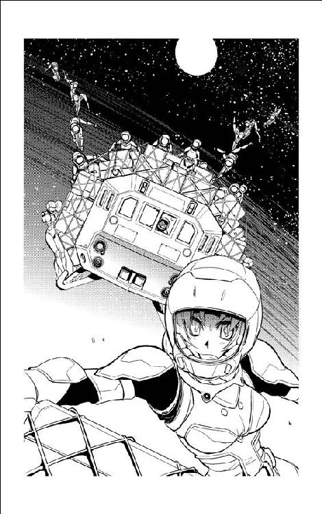
「弁天丸に、お客さんだ」
場に出そうとした札を手札に戻した百眼は、座布団が置いてある床の上から立ち上がって壁の半分を占有して積み上げられたワークステーションに歩み寄った。
「お客さん？」
現在、乗組員が誰一人乗り込んでいない状態のままの弁天丸は、軍管理の錨泊空域で停泊中のはずである。
「軍には話がついているはずだろ。どっかのマニアのヨットでも迷い込んできたのか？」
座布団の上で展開中の勝負を横目で見ながら、立ち上がったケインもワークステーションの前にやってきた。
「いや、軍の監視衛星にもベン・ケーシーのレーダーにも引っ掛かってない。ちょっと待ってな、弁天丸側から見てみるから」
手札の束を伏せたままコンソールに置いて、百眼はコントロール・パネルに指を走らせた。
「さあて、どこのどなた様かな。飛行計画じゃ軍の錨泊空域に紛れ込んでくるような小型船は見当たらなかったんだが」
厳重に暗号化、圧縮されている回線で弁天丸側のモニターシステムをキック、近距離用の監視システムを立ち上げる。こっそり近づいてくるお客さんをいきなり強力なレーダーで灼かないように気をつけて、百眼は受動式モニターの一部だけを立ち上げた。
「小型の、たぶん連絡艇か輸送機だ。表向きの無線は切ってるようだが、電子機器まわりのノイズや通信回線のリークまで気が廻ってないところを見ると、こりゃ素人のお客さんだな」
「大丈夫かい？」
ケインはワークステーションに何面もあるディスプレイを覗き込んだ。
「今のうちの船、警備システム動かしっぱなしだろ？ どこのどなたか知らないが、不用意に近づいていたずらしようとしたら黒焦げにされるぞ？」
「うっかり接近しすぎないうちに錨泊空域の管理部にご注進申し上げて退去願うか......いや、接近側から警備システムが解除された？」
百眼は、素早くコントロール・パネルを叩いた。
「解除されたって、いったい誰が？」
結果はすぐにディスプレイに表示された。
「......トップ・コマンダー、船長資格。こりゃあ、茉莉香お嬢さんの識別コードだ」
「茉莉香が？」
ケインは、海明星で学業に励んでいるはずの茉莉香の顔を思い浮かべた。
「弁天丸に？ んなところで、何やってんだ？」
「さて？」
患者用のトレーニングウェアのポケットから艦内通信用の端末を取り出した百眼は、素早くミーサのパーソナルコードを打ち込んだ。
ミーサは、病院船ベン・ケーシーの微細構造体病理研究室で軍属の研究員と最新の医療用ナノマシンについての議論を行なっていたところだった。艦内通信の端末で呼び出されたミーサは、すぐに百眼の個室に飛んできた。
「白衣で船内うろついてるのか？」
「患者待遇ってだけで、服装制限までされてるわけじゃないもの。こっちの服着てる方がこの宇宙船じゃいろいろ便利なのよ」
どう見ても感染防止のために隔離されている患者ではなく、隔離している医療関係者といった風体のミーサは、白衣を翻してワークステーションの前に立った。
「で、茉莉香お嬢様が弁天丸に乗り込もうとしてるって？」
「見てくれ」
百眼は、弁天丸から望遠画像で撮影中の画像が映し出されているディスプレイを指した。
「どーする、これ」
大画面に映し出された荷物だけじゃなくてカラフルな軽装宇宙服まで上下左右に満載の連絡艇の画像を見たミーサが、目を丸くした。
「......何、これ？」
「連絡艇は白凰女学院の所属、この宇宙服はたぶんヨット部の備品だ。全部じゃないけど、いくつかはオデット世の練習航海の時に見た覚えがある」
ケインが必要情報を追加した。ケインを見て、ミーサは連絡艇を正面から捉えた画像を見直した。
「それじゃこれ、お嬢様のところのヨット部御一行様？」
「ヘルメットのシールド越しでうちのカメラじゃ、もっと近づいてくれないと個人の特定は難しいが、この距離でも全員の身体データ推定して茉莉香お嬢様のデータと付き合わせれば、どれがうちの船長かわかるかも」
「やらんでいい！」
ミーサは手を動かしかけた百眼をどやしつけた。
「でも、それじゃあ茉莉香船長が、わたしたちに黙って弁天丸に乗り込もうとしてるの？」
「一人なら乗り込むだけだろうが、カメラ上で確認できる宇宙服は二ダース以上だぜ。この上、連絡艇の中に何人乗ってるやらわからんが、ヨット部の部員全員引き連れて弁天丸に来たってことなら、やることは乗り込むだけじゃないだろう」
ケインは楽しそうに指先を揃えてちょいと伸ばした。
「乗り逃げだ」
「船長が？ 茉莉香お嬢様が、なんでわたしたちに黙って弁天丸乗り逃げする必要があるの？」
「なんでって、そりゃあお前......」
ケインは、百眼と顔を見合わせた。
「......弁天丸動かさなきゃならないのに、おれたち乗組員が病院船に隔離状態で動けないからじゃないのか？」
ケインの予想に対して、ミーサは当たり前の問いを発した。
「なんで茉莉香船長が、わたしたちに黙って弁天丸を動かさなきゃならないの？」
「そりゃあお前、何か弁天丸を動かさなきゃならない事情が......」
ワークステーションに接続されている通信システムが場違いな呼び出し音を鳴らした。一瞬遅れて、ケインとミーサの携帯端末が初期設定のままの電子音を鳴らしはじめる。
「おんや？」
通信パネルを叩いた百眼は、公共の超光速ネットで届いた呼び出し相手の名前を確認した。
「ケンタウルス通商の、サジ・ケンタウルス？」
「こっちはペガサス星間運輸のローレンスだと」
「わたしのはサジタリウス株式会社のミケ調査室長」
それぞれ、盗聴防止のための秘話暗号化コード付きで送られてきた呼び出し相手先の名前は、全員が知っていた。通信相手は、いくつもの偽名を使い分ける。
「ロイド保険のショウじゃねえか」
百眼は、素早く通信パネルを叩いた。
「こっちで受けるぜ。たぶん、こいつで受けるのが一番確実に会話内容を秘匿できる」
「ショウさんも、わたしたちが軍の病院船に隔離されてるのは知ってるはずだから、ほんとうに聞かれてまずい内容だったら公共回線での呼び出しなんかかけてこないでしょう」
艦内通信を介しての呼び出しだから一瞬遅れて鳴り出した端末を、ミーサは確認手順付きで停止させた。錨泊中の病院船は、軍の専用回線と同時に公共回線にも接続されているが、乗員が保持している携帯端末での呼び出しは艦内の通信回路を経由するからわずかに遅れることになる。
「あいよ、百眼だ」
音声モードをオープンに切り換えて、百眼は通信に出た。
「ケインとミーサも一緒にいる。他にも誰か呼び出してるかい？」
『やあどうも。誰か一人だけでもよかったんだが、どうせひとつところにいるんだからまとめて呼び出させてもらったぜ』
通信回線に現れたアフロヘアの怪人は、偽名での通信の時に使う画像データの偽装は行なっていなかった。
『他にクーリエとシュニッツァー、ルカにも声はかけてる。みんなまとめて相手にするんで大丈夫かい？』
「こっちは問題ない」
『わたしも大丈夫だよ。ルカも一緒』
こちらも自分の個室に持ち込んだ電子システムを艦内ネットワークのみならず軍の回線にまで接続しているクーリエの声が回線経由で聞こえた。
『聞こえている』
自前の神経埋め込み型の通信システムをつないでいるらしいシュニッツァーの返事が来た。
『おっけー、全員確認できました、と。盗聴されてるとしても言い訳できるだけの暗号化もしている。これからの会話の内容についての取り扱いは、こちらからは指定しない。そちらに一任する』
通信相手と同じ数だけのモニターを開いているらしいショウは、ディスプレイの中からこちらの顔を見廻した。
『病院船に隔離中の患者名指しの電話だからね、ほんとなら体調伺いの挨拶からはじめなきゃならないところだが、顔色見ればどうやらもう風邪も抜けてるらしいのはわかるから本題に入ろう。そろそろ、弁天丸にお客さんが近づいてるのをそっちでも気づいてる頃じゃないかと思ってるんだが？』
百眼は、クーリエの反応を待った。電子戦担当として、クーリエも病院船内の個室に弁天丸の最新状況をリアルタイムでモニターできる電子設備一式を持ち込んでいる。
『茉莉香船長が、白凰女学院のヨット部のみんなと弁天丸に向かってるって件でしょお？』
ほとんど同じ情報をモニターしていたらしいクーリエが答えた。
『百眼も、見てるんでしょお？』
「おれだけじゃなくて、ケインもミーサも状況は確認してる」
『さて、ここから先の説明は実はおれの口からはできないんだ』
通信モニターの中で、ショウは両手を上げた。
『茉莉香船長から、口止めされてるんでね。だから、おれは弁天丸の乗組員である全員に、ハロルド・ロイド保険組合の弁天丸担当エージェントとして、こうお願いすることしかできない』
ショウは、通信モニターの中から相手の顔をじっと見た。
『気づかないふりをしてくれ』
誰かが何か言い出すのを待ってから、ミーサは口を開いた。
「ええと、それはつまり、茉莉香が錨泊空域の弁天丸に乗り込むのを、見て見ないふりをしろ、ってこと？」
『弁天丸に乗り込むのは船長だけじゃない。お察しのとおり、船長が連れてきたヨット部の全員が弁天丸に乗り込むだろう。そして、準備ができ次第、弁天丸を固定されている空域から乗り出すはずだ』
『弁天丸は、表向きはそうじゃないけど、今は軍の監視下にあるんじゃないのお？』
弁天丸の全乗組員が病院船ベン・ケーシーに隔離収容されるにあたり、軍は弁天丸の完全な管理を約束した。乗組員が直接弁天丸に触れなくなる状況でその性能と機能を維持するために全面的な協力を惜しまず、管理空域に錨泊中は保安のための警備活動も肩代わりする。
『たう星系軍には、見逃してもらえるよう話をつけてある。だが、きみたちは弁天丸の乗組員で、当事者で、関係者だ。今回の茉莉香船長の行動については、ハロルド・ロイド保険組合が状況を掌握している。そして、その状況については黙っておくようにと、茉莉香船長からエージェントであるおれに依頼があった。だから、おれの口からはこの先何が起きるか説明できない』
ショウは、にやりと笑った。
『だから、エージェントとしては、弁天丸があんたたち抜きで動き出すのを見逃して、気づかないふりをしてくれ、とお願いすることしかできないんだ』
「なるほど」
肘を組んだ片手を口の前に持ってきて、ミーサは考え込んだ。
「ショウさんは、今回の件について茉莉香から口止めをされている。つまり、茉莉香船長はなぜ弁天丸を動かすかを、正規乗組員である我々には黙っていたい。そして、少なくともハロルド・ロイド保険組合は、茉莉香船長が弁天丸を動かすことについては了解している、のみならずそのフォローも引き受けている。そういう状況なわけね？」
『まあ、茉莉香船長は、おれがそういう状況にあることもあんたたちに言わないことを希望しているだろうな』
ショウはにやにや笑いのまま言った。
『だから、おれはあんたたちが状況をどう解釈しようとそれを肯定も否定もできない。と、まあ、表向きはそういうことになっている』
「そして、あなたはなぜ茉莉香がヨット部の部員をかき集めてまで弁天丸を動かさなきゃならないか、についての事情も承知している」
ミーサは、通信モニターの中のショウを見つめた。
「あ、返事しなくていいわよ。あなたがデリケートな立場にいるのは毎度のことだし、わたしたちもそれを充分に理解しているつもりだから」
『さすが、付き合いが長いと話がしやすくていいねえ』
通信モニターの中のショウはあわてて自分の口を押さえた。
『おっとしまった。この件に関しては、おれは弁天丸乗組員とは話をしちゃいけないことになってるんだっけ』
『なぜだ？』
シュニッツァーが会話に加わってきた。
『なぜ、我々がここにいるのに、茉莉香船長は我々抜きで弁天丸を動かそうとしている？』
「なぜって、そりゃあお前」
ケインは、百眼とミーサの顔を見廻して先ほどの会話を繰り返した。
「おれたちが病院船に隔離状態で動けないからじゃないのか？」
「乗組員が隔離状態で弁天丸を動かせないという状況にあるにもかかわらず、茉莉香船長は弁天丸を動かさなきゃならなくなった。少なくとも、保険組合もエージェントもその状況を了解してるし、軍も気づかないふりをすることに同意している」
ミーサは、わかっている状況だけを整理してにっこり笑った。
「船長が、そのつもりでわたしたちに黙ってるなら、わたしたちも気づかないふりするのが礼儀じゃないかしら？」
「礼儀って、ミーサ」
ケインはミーサの顔を呆れ顔で見た。
「これって、礼儀の問題かい？」
「ううん、たぶん信義とか信用の問題ね。もしわたしたちが船長を全面的に信用できているのなら、船長が何をしようとほんとうに必要な時までは黙って見ていれば済むんじゃないかしら。そして、船長がわたしたちのことを充分に信用してくれるなら、これから何が起きるのか見ていれば、なぜ船長がエージェントに口止めしてまでわたしたちになんの説明もしないのか、そのうちわかるんじゃないかしら？」
ミーサはもう一度ケインと百眼の顔を見た。
「そういえば、そろそろ定時連絡の時間じゃない？ どこにいて、なんて答えるのか試してみる？」
『茉莉香船長を呼び出すのかい？』
通信モニターの中で、ショウは肩をすくめた。
『そりゃまた、すごいタイミングだな』
「スケジュールによれば、茉莉香船長はこのあとしばらく白凰女学院の練習帆船、オデット世で実習航海だ」
百眼は素早く茉莉香のスケジュールをディスプレイ上に呼び出した。
「そしてもちろん、今の茉莉香船長は、連絡艇で弁天丸に向かっている」
『通信回線の設定、どうする？』
クーリエが訊いた。
『こっちからでも呼び出せるけど、そっちから呼び出してみる？』
「軍の管理空域に入ってるんだから、無線封鎖くらいしてるんじゃないのか？」
ケインは、弁天丸と接近するヨットの現在位置を確認した。オデット世から発進した連絡艇は、すでに軍の管理下にあるラグランジュ点の管理空域内に入り込んでいる。
「留守電が廻ってるだけかも知れないぜ？」
『そしたら、その程度の準備はしてるってわかるわ。百眼、船長に定時連絡、コールしてみて』
「せめて弁天丸に到着してからの方がいいんじゃねえのか？」
「馬鹿ねえ。ヨット部の部員引き連れて弁天丸に乗り込んだら、しっちゃかめっちゃかになってのんびり定時連絡なんかしてる時間なくなるわよ。コールかけるなら、息潜めて移動してる今のうち。弁天丸に到着するまでの間が、茉莉香船長の最後の暇な時間になるんじゃないかしら？」
「道理だな」
百眼は、もう一回線の通信回線を立ち上げた。茉莉香のパーソナルコードをコールする。
「通信先は......オデット世、そこから中継されて船外活動中」
百眼は、自動で転送された回線の行き先を読み上げた。
「よし、届いた！」
弁天丸からの望遠画像に捉えられていた宇宙服山盛りの連絡艇の画像の中で、宇宙服のひとつがびく、と飛び上がった。
「あれが船長か？」
『オデット世から、加藤茉莉香宛、通話先指定の個人呼び出し！』
操縦席で素早く呼び出し信号を解析したチアキが、船外の茉莉香に有線で伝えた。
『無線封鎖してるんじゃなかったの？ どうするの、放っておいてあとで留守電聞いてみる？』
『ちょっと待って』
オデット世から中継されて飛んできた呼び出しコールは、連絡艇の通信機だけでなく茉莉香の携帯端末でも受信可能である。母から常に複数の通信手段を確保しておくことと叩き込まれている茉莉香は、宇宙服の作業ポケットから弁天丸仕様の強力なトランシーバーを取り出した。
ディスプレイの呼び出し名を見て、茉莉香は溜息をついた。ミーサ・グランドウッドの名前は、最近どんどん不定時に行われるようになっている定時連絡に間違いない。
『ごめん、こっちの用事。こっちでなんとかする』
『なんとかって、無線封鎖中って宣言したのに自分から返事するつもり!?』
『大丈夫、ビーム使ってオデット世狙い撃てば、向こうが勝手に中継してくれるわ。指向性ビームなら、こことオデット世を結ぶ線上にアンテナでも置かれない限りは盗聴される心配ないし』
茉莉香は、横向きに座り込んでいた荷物の山の上に立ち上がった。船外活動中でも強電磁波を出すから近づかないように言われているアンテナセクションへ移動、ハンドグリップや荷物を括りつけたロープ、及びそこに掴まっている宇宙服の助けを借りて、各種アンテナが取りつけられているアンテナロッドに辿り着く。
『念のために訊くけど、今、こっちからなんにも出してないわよね？』
『出してない！』
荷物に埋もれた船外カメラは使えないだろうが、宇宙服のモニターカメラでこちらの状況は把握できているはずの操縦席からすぐに返事が戻ってきた。
『いったい何する気よ！』
『だから、指向性ビーム使って、オデット世と直接通信。上から二番目のハイゲインアンテナのコントロール、解放して』
『トランシーバーにパラボラ直結して指向性通信するつもり？ オデット世の正確な方位なんかわかってるの？』
『見えてるから大丈夫』
オデット世はとっくに星の海に沈んで星と区別がつかなくなっている。茉莉香は、星座の位置と一緒に覚えていたオデット世の現在位置を部員の一人から借りた電子双眼鏡の視界で確認した。
ヘルメット越しの電子双眼鏡のビューワーに、航法灯を点滅させながら進むオデット世が見えている。方向を覚えた茉莉香は、ひと抱えもあるハイゲインアンテナのパラボラを可能な限り正確にオデット世に向けた。
狙撃するような精度こそ必要でないとはいえ、ハイゲインアンテナを使った指向性ビームの有効幅は〇・五度ほどしかない。
有線で仮接続したハイゲインアンテナを根元から手動で微調整して、指向性ビームが目標を捉えたのをトランシーバーのインジケーターで確認してから、茉莉香は応答ボタンを押した。
『はい、茉莉香です』
オデット世からの通信波は隠しようがないとして、こちらからの応答を指向性ビームで送っている限りは他の方向からは電波発信源を特定されることはない、と自分に言い訳しながら、茉莉香は返事を待った。
『はい、忙しいとこごめんなさいね、今大丈夫？』
『大丈夫です』
すっかり風邪も抜けたミーサのいつもの声に儀礼的に答えかけて、茉莉香は辺りを見廻した。イヤホンとマイクは宇宙服のヘルメット組み込みのものを使って、連絡用のトランシーバーにコードをつないでの通信だが、今いるのは宇宙空間である。
『ええと、あの、確かそっちにもスケジュール廻してあると思うんですけど、今ヨット部のオデット世で練習航海中です』
『ああ、そうだったわね。もうそろそろ海明星の重力圏を出る頃かしら？』
現役の宇宙船乗りだけあって読みは正確だなあと思いながら、茉莉香は答えた。
『ええ、もう中継ステーションの管制空域は出て、そろそろ海明星の重力圏も出る頃です。あの、今、船外作業の実習中で』
『我が船長ながら勤勉ねえ』
ミーサは、呆れたように言った。
『せっかく弁天丸が動けないんだから、宇宙の上のことなんか忘れてゆっくり休んでればいいのに』
『できません』
茉莉香は即答していた。
『宇宙飛びたいからヨット部に入って、宇宙飛べるっていうから弁天丸の船長やってるんですよ。休んでるより面白いことが目の前にあるってわかってるのに、じっとしてなんかいられません！』
『無理するんじゃないわよ。いくら若くて体力あっても、電池切れたらぶっ倒れちゃうんだから』
『そっちは、皆さんお元気ですか？』
答えが戻ってくるまでに、一瞬間が空いた。
『ああ、もうみんな元気。スキャナーかけたらまだ何人か感染症の炎症が呼吸器に残ってるのが引っ掛かるけど、みんな元気なもんよ。隔離待遇だから病院船でのんびりさせてもらってるけど、そろそろ暇持て余して脱走図るのが出る頃かしら』
『駄目ですからね』
茉莉香は、どこかでこの会話が盗聴されていた場合の影響を頭の隅で考えながら言った。
『軍だって、伊達や酔狂で病院船ひとつまるごと隔離状態に置いてるわけじゃないんですからね。ちゃんと風邪治して、他に感染させて迷惑かける心配ないって保証がつかないと迎えにいってあげませんからね』
通信の向こうで、ミーサが笑ったようだった。
『わかってるって。船医の責任にかけて、完治が確認されるまでは誰も病院船の外には出さないわ。そっちも、あんまり頑張りすぎるんじゃないわよ。前の練習航海の時みたいに、危なくなったってわたしたちがすぐに駆けつけるってわけにいかないんだから』
『わかってます』
茉莉香はパラボラアンテナが向いているオデット世の方向ではなく、連絡艇の針路の先に視線を投げた。連絡艇の向かう先には弁天丸が浮いており、同じ錨泊空域には病院船ベン・ケーシーもいるはずである。
『今回の練習航海は、たう星系の外惑星軌道を廻って帰ってくるだけの簡単なものですし、飛行計画はずるなしで当局にも提出済みです。危なくなったらすぐに逃げますし、すぐに星系軍に助けを求めます』
『まあ、心配はしてないけど、やらなくてもいい苦労までする必要はないのよ』
茉莉香は、ミーサの声がほんとうに心配しているように聞こえて、わずかに首を傾げた。
『この商売に役に立たない経験はないからね、死なない程度に適当にやりなさい』
いつもどおりの役に立たない助言を聞いて、茉莉香は苦笑いした。
『はい、適当になんとかします』
『それじゃ、次の定時連絡まで無事にね。平穏な航海を』
『みんなに、お大事にって伝えて下さい』
通信が切れたのを確認して、茉莉香はトランシーバーのスイッチを切った。
『はい、通信終了』
モニターしていたはずの操縦席のチアキに伝える。
『ハイゲインアンテナの接続解除。コントロール戻していいわよ』
『ほんとうに、弁天丸の人たちにはヨット部で弁天丸動かすって言ってないのね』
ちょっと低めのチアキの声を聞いて、茉莉香は微笑んだ。
『いつまで誤魔化せるかわからないけどね。誤魔化せる限りは、誤魔化すつもり。せめて、片道分ごまかしきれればあとは大丈夫だと思うけど』
「定時連絡終了、と」
ミーサは、耳に当てていた携帯端末を離して回線を切った。目の前の百眼とケイン、それから通信モニターの中のショウの顔を見る。
百眼は、オデット世に開いた通信回線が完全に切断されているのを確認した。
「もう少しわかりやすい誘導尋問でもかけるかと思ったが」
「誘導尋問っていうのは、相手に何か認めさせたい時に行うものでしょ。今、わたしたちが茉莉香船長に認めさせて、何か得なことってあるかしら？」
「何も、ない。てえことは、ミーサはこのまま茉莉香に弁天丸を任せることに賛成なのかい？」
「賛成もなにも、わたしたちはベン・ケーシーに隔離されてて、外の状況は見えないことになってるんでしょ。知らないことに、賛成も反対もしようがないんじゃないかしら？」
『無茶だ！』
三代目のハイトーンが割り込んできた。
『船長のところのヨット部にどんな人材が揃ってるかわからないけど、うちの船の機関部なんて素人が扱いきれるもんじゃない！ マニュアルもないのに適当な運転されたら、最初の跳躍の前に宇宙船ごとどっかに吹き飛ぶぞ！』
『わたしも、あんまり賛成できないなあ』
クーリエが考え考え言った。
『うちの船の電子戦システムってかなり特殊だから、何も知らない新人さんがむりやりスイッチ入れると、それだけで調子おかしくなっちゃうかも。百眼は、自分のところのシステム勝手に使われても平気なの？』
「おりゃあクーリエやルカほど特殊な組み上げしてないからな。弁天丸のレーダーやセンサーは、スイッチ入れたくらいでおかしくなるようなデリケートなシステムじゃない」
『いっつもまともに動かすのに苦労してるくせにい』
「ショウさん、どうせ茉莉香とも連絡とってるんでしょ？」
ミーサは、相手をショウに変えた。
「ああ、もちろんだ」
「タイミング的にわざとらしいかも知れないけど、それじゃあ次の連絡の時に弁天丸の運用資料を渡してくれるかしら。きっと役に立つと思うから」
「運用資料だあ!?」
百眼が声を上げた。
「んなもん、どこにもないの知ってて言ってるのか！」
弁天丸は改造に改造を重ねた古い船である。航法系も機関系も複雑怪奇な改変の果てに元とは似ても似つかないシステムに発展進化を遂げており、その運用は専門スタッフの技術と腕に委ねられている。
当たり前のことながら、体系化されたマニュアルだの運用手順だのは確立されておらず、それぞれの運用手順は専任スタッフの頭の中と個人的なデータベースの中にしか存在しない。
『弁天丸の電子システムのマニュアル作れっていうのお』
クーリエがのんびりと言う。
『手間、大変だよお？』
「ヨット部の素人さんたちにうちの宇宙船ぐちゃぐちゃにかき廻されるのと、渡せるうちに説明書渡して勉強させるのと、どっちがマシかしら？」
ミーサは絶望的な表情の百眼とケインの顔を見廻した。
「わたしとケインは、ヨット部のお嬢さんたちがオデット世と骨董品みたいな電子戦システムを使うのを目の前で見てるのよ。黙って任せて無茶な使い方されるより、簡単でもいいから運用資料だって言ってマニュアル渡して、勉強してもらう方があとが簡単じゃないかしら」
『艦載兵器に関するマニュアルなら、整理さえすればすぐに出せる』
弁天丸の各専任部門の中で、唯一まともにマニュアルを整備しているシュニッツァーが抑揚の少ない声で言った。
『だが、ヨット部員の女子高生たちに、弁天丸の大砲を任せるのか？』
「任せるのは大砲だけじゃないわ。エンジンもコンピューターも生命維持系も食堂も、全部よ」
ミーサは、付け加えた。
「それともうひとつ。ヨット部の女子高生じゃない、茉莉香船長が見込んだはずの乗組員に任せるの」
「だがな......」
「文句言わない！ 少しくらいシステムぐしゃぐしゃにされたって、あとから充分フォローできるでしょ。他のみんなにも声かけて、覚悟決めて、ありったけの運用手順提供しなきゃ。たぶん、それがわたしたちの身のためでもあるんだから」
『大艦隊でも相手にする方が楽かも』
「わたしたちがこの先も弁天丸で今の商売を続けるつもりなら、弁天丸が今の形のまま無事に戻ってくるためにできる最大限の努力をするべきじゃないかしら。どーせ隔離状態で暇持て余してるんでしょ、いい時間つぶしができたじゃない」
「他人事みたいに言ってるがな？」
百眼は、ぱちぱちとコントロール・パネルを打って必要データを取り出した。
「提出されてる書類によれば、オデット世に船医として乗り込んでいるのはミーサ・グランドウッドだ」
「あら」
「弁天丸の医療システムの扱いとか、メディカルカートリッジの並びとか、アシストシステムの扱いなんてのは、ミーサが責任持って教える必要があるんじゃないのかい？」
「あ......」
もちろん、ミーサも弁天丸の医療システムに関するマニュアルなぞ作成しようと考えたこともない。凍りついてしまったミーサを放っておいて、百眼はディスプレイ上に手持ちのデータを取り出した。
「状況は了解した。保険組合から茉莉香お嬢さんへの次の連絡は、弁天丸に乗り込んでからになるかな？」
『ああ、その予定だ。もちろん、都合によっては前後することもある』
「わかった。おれたちは、茉莉香お嬢様がオデット世で練習航海しているはずで、弁天丸に乗り込んで何をしようとしてるのか、なんて知らない。だが、何かあった時のために運用データを保険組合に提供しておいた方がいろいろと身のためだろう。どうせデータもレポートもマニュアルもそう簡単には揃わないから、提出できる体裁を整えたやつから順次そっちに送りつける。そっちは怪しまれない程度の適当な言い訳つけて、弁天丸を壊される前に運用手順書を茉莉香船長と乗組員に渡してくれ」
『引き受けよう』
通信モニターの中のショウは、スケジュールを確認するようにサブモニターに目を落とした。
『次は、弁天丸に乗り込んだあたりのタイミングで連絡を入れるつもりだ。できれば、茉莉香船長とヨット部員たちが弁天丸を本格的にいじくり出す前に、マニュアルを渡しておきたいねえ。じゃ、データの到着を待ってるよ』
「マニュアルが揃ったら」
言いかけて、ミーサは首を振った。
「いえ、とりあえず送れる状態になったらマニュアル片っ端から送るわ。どうせそれだけでも大した量になると思うから」
対象物がなければ、宇宙空間での移動速度は体感しにくい。先ほどまですぐ側にあったはずのオデット世の白い船体があっという間に星の海に沈んだあと、連絡艇は軌道速度を大きく越える高速まで加速して海明星の重力圏の縁を目指した。
双月と呼ばれる二つの月を持つ海明星の衛星軌道上の重力均衡点であるラグランジュ点は、月の運航とともにその位置を変えていく。静止軌道上の中継ステーションよりもはるかに高い月軌道まで上がるのは、低加速を持続できる連絡艇の通常推進機関をもってしてもそれほど短くない時間がかかる。しかし、その全行程で移動の目安となる対象物は、漆黒の宇宙空間にぽっかりと青く浮かぶ海明星しかない。
じっと見ていても離れていくようには見えないのに、ちょっと目を離してから見直せば明らかに小さくなったのがわかるほどの速度で、連絡艇は海明星から離れていった。オデット世からの発進直後は両手で抱けるくらいには大きかった海明星が、今はもう片手で包めるほどに小さくなっている。
連絡艇の外で宇宙服を着たままの女子たちのお喋りのネタも二巡目か三巡目に入る頃になって、やっと肉眼で確認できる距離に弁天丸が見えてきた。
純白の船体が鮮やかなオデット世と対照的な黒い船体は、航行灯も点けないロック状態のまま軍管理下の錨泊空域の片隅に浮いていた。ただでさえ宇宙空間に沈みやすい黒い船体のシルエットは、かなり接近しないと星空の背景に浮かび上がらない。
それでも、連絡艇の針路正面というわかりやすい位置にあるため、ヨット部員たちはかなり早い段階で電子双眼鏡などで弁天丸の確認に成功していた。
『大きいね』
誰かが言った。
『オデット世より、ずいぶん大きく見える』
『全長は似たようなものなんだけどね』
茉莉香は答えた。
『それでも、帆船でできるだけ軽く作ってあるオデット世と比べれば、もとが軍艦だし、武装も残ってるし、エンジンも大きいのに換えてるし、装甲もあるし。質量で、軽くひと桁違うわよ』
『そんな宇宙船、普段は何人で動かしてるんだい？』
リン部長の声が聞こえた。
『動かすだけなら、ええと、ブリッジのレーダーセンサー、通信担当と操舵手、航法士と機関担当に、あと機関に何人かついてれば動かせるから、たぶん一〇人いらないと思います』
指折り数えた茉莉香に、リンは溜息で答えた。
『あのね、輸送船じゃないんだから、動かすだけじゃ仕事にならないだろ？ あの宇宙船を、海賊船らしく動かすのだったら何人必要なんだい？』
『だって、電子戦とか対艦戦とか、相手の船に乗り込んで白兵戦なんて言い出したら、何人いたって足りませんよ。でも、いつもの豪華客船に海賊する営業のお仕事なら、船動かすのと、デモンストレーションに艦砲射撃何発かサービスして、あと実際にお座敷に乗り込むのに十数人......たぶん、全部で三〇人いれば、なんとか格好つくんじゃないかと思います』
『半人前にも足りないのばっかりでなんとかなるのかい？』
茉莉香の位置から、リンの宇宙服は見えていない。たぶんまわりの宇宙服を見廻してるんだろうなと思って、茉莉香はくすりと笑った。
『心配ありません。海賊のふりするのに必要なのは度胸とはったりだけで、それだけなら一人でもなんとかなりますから』
『減速入るわよ！』
操縦席から、艇内と艇外の全宇宙服に連絡が入った。
『船を一八〇度回転させて減速かけるから、振り落とされないように掴まってなさい！』
了解の返事が戻ってくるタイミングだけ待ってから、連絡艇はゆっくりととんぼ返りの一八〇度回転を開始した。船体横軸を中心に船を回転させて進行方向に主機関を向け、それまでの低加速とはくらべものにならない高出力での逆噴射を開始する。
出港以来の無重量状態に慣れていた宇宙服の女子高生たちが、突然真上に急上昇を開始したような連絡艇に黄色い声を上げてしがみつく。連絡艇は進行方向に尾部の推進機関を向けて減速しながら弁天丸に接近する。
『母船側からの誘導もなし、無線封鎖中でレーダー発射するわけにいかないから連絡艇の光学観測系しか使えないのに、うまいもんね』
リンのつぶやきが聞こえた。茉莉香は、出たとこ勝負の成り行きまかせ気味なランデブーが、操縦席にいるはずのチアキ、アイ、グリューエルの誰の手腕か考えながら、目測で弁天丸との距離を測っていた。
主機関を使った逆噴射で充分に速度を殺した連絡艇が、再びとんぼ返りで針路を弁天丸に向ける。あとは姿勢制御スラスターの推力だけでランデブーを続行する連絡艇から、茉莉香は両足で立ち上がった。
『先に行って、ドア開けておきます』
伝えてから、自分の側の通信コードを引き抜いて、茉莉香は進行方向に向き直った。力一杯ジャンプして、茉莉香は目の前に大きくなった弁天丸に飛び立った。
弁天丸までの目測距離、約一キロ。星空の中でやっと判別がつくようになった目標の黒い船体を見ていても接近している実感はないが、振り返れば連絡艇は放り投げたような勢いでどんどん小さくなっていく。
茉莉香は、宇宙服の腰のホルスターからジェットガンを取り出した。宇宙遊泳の加減速や軌道修整に使うジェットガンはさまざまなタイプがあるが、今回持ち出してきたのはピストル型の小型のもので、トリガーを一回引くごとにパルス状に微推力のスラスターが銃口から噴射される。微推力とはいっても一回の噴射で得られる推力は最大一〇〇ニュートン、約一〇キロ。うまく自分の重心を貫くように射たないと、支えのないままコマのように廻り出して止まらなくなる。
推進剤が充分に充填されていること、ジェットガンのメカニズムに異常がないことをインジケーターで確認して、弁天丸に背を向けた茉莉香はジェットガンをしっかり両手で構えた。トリガーを引く。
銃口から、トリガー一回分、推力にして一〇キロのガスが噴射された。拳銃の実弾発射をマイルドにしたような反動が両肩に伝わり、茉莉香を進路方向に加速する。
「作動確認。......えーと、減速に五発くらいは必要かな」
補給ができない船外活動中のジェットガンの使用は、少なければ少ないほどいい。動作を先読みして、正確な移動を行えばガスジェットの発射を最低限に抑えることができる。移動速度やガスジェットの推力を抑えればトータルでのジェットガンの使用も少なくなるが、船外作業時間を増やすことになる。
弁天丸での訓練のように、すべての動作を記録されてリアルタイムで怒られるわけではない。しかし、茉莉香は最近になってやっとスピードとコントロールのバランスを覚えてきたジェットガンをもう一度噴射して、弁天丸に飛ぶ自分を加速した。
連絡艇に跳んだ時はちょっと失敗したが、今度は連絡艇が正確に弁天丸に向かう軌道を取っていたためか、茉莉香はジェットガンでの進路修正を行わずに弁天丸に接近した。ぶつかるような勢いでどんどん大きくなっていく宇宙船を目の当たりにしているとつい早めの減速をしたくなるが、無減速で弁天丸に叩きつけられても大したことはないと自分に言い聞かせて、ぎりぎりまでジェットガンのトリガーを引くのを我慢する。
「できるだけ引きつけて撃てって、こんな気分になるのかなあ」
視界が全部弁天丸になり、舷側の装甲とハッチ、張り出しているセンサー類のディテールが確認できるまで我慢してから、茉莉香は弁天丸に向けたジェットガンを連射した。力強い反動が両腕を通して宇宙服の茉莉香を減速する。
くるりと廻って飛び降りるような感じで足から弁天丸に着地した茉莉香は、そのまま両足を大きく曲げて舷側に張りつくように両手をついた。
「むぎゅ」
押し潰されそうな感覚を感じながらジェットガンを左手に持ち替え、右手で弁天丸の船体表面に取りつけられているハンドグリップを掴んで反動を殺す。
腰のホルスターにジェットガンを戻して、茉莉香はハンドグリップを頼りに弁天丸の舷側を移動開始した。機関部前方、船体中央部よりやや後方に艦載機や連絡艇を収容する格納デッキがある。左舷は弁天丸の自前の連絡艇と艦載戦闘機が詰め込まれていて余分なスペースなどないが、右舷側の格納デッキには連絡艇一隻くらいなら収納できるだけの空きがあるはずだった。
ハンドグリップや船体構造を頼りに一番近い気密ドアに移動した茉莉香は、船外のあちこちに装備されているアクセスパネルの分厚い防爆蓋を開いた。中のキーを叩いてロックを解除、メインスイッチを入れる。
アクセスキーを認識した弁天丸は、気密ドアのロックを解除、自動で開いた。船外作業用のエアロックのひとつにするりと滑り込んだ茉莉香は内側からロックを閉じ、気密確認と気圧充填が開始されると同時にエアロックのインナードアを開く。
弁天丸の船内は、薄暗く最低限の非常灯しか点灯していなかった。エネルギー節約のためにも、船外に余計なエネルギー放射を行わないためにも、戸締まりして船を離れる時は照明は最低限に落すのが決まりである。
しかしながら、宇宙服のヘルメットシールドを開いた茉莉香は、船内の空気がいつもと同じ匂いなのを嗅いで微笑んだ。
「大丈夫、生命維持系は動かしっぱなしだ」
念のために、インジケーターで有害成分が含まれていないかどうか確認する。弁天丸の全乗組員が隔離される原因になったウィルスは、病院船ベン・ケーシーから供与された新型のバイオフィルターと無人になった全船の完全消毒で殺菌されているはずだが、処置完了後に生身の人間が乗り込んで風邪を引かないと確認されたわけではない。
「ウィルス、大丈夫かな」
もしもの場合は、ヨット部の全員が弁天丸乗組員を撃沈したウィルスの餌食となって風邪を引くことになる。軍管区からの弁天丸の乗り逃げは黙認してくれるように保険組合の代理人を通じて依頼済みだが、乗員全員が生化学兵器の研究に使われるようなウィルスに感染した海賊船を軍が見逃してくれるとは思えない。
「......重い」
海明星中継ステーションを出発してまだ丸一日経っていないのに、身体は簡単に無重量状態に慣れてしまう。ダイエットしたら少しはマシになるのかな、といつもと同じろくでもないことを考えながら重力区画に入った茉莉香は、ヘルメットを背中に提げたまま通路を駆けた。非常灯だけの消灯体制になっていた通路の照明を通り道だけでも全灯しながら艦隊中央のメインブリッジに走る。
乗組員全員が弁天丸を離れるという非常事態だが、隔壁まで閉鎖されてはいなかったから茉莉香はすぐにメインブリッジに辿り着くことができた。自動ドアが開くのももどかしく飛び込んで、ドア横のスイッチを叩いてブリッジの照明を点ける。
「えーと」
動くのに邪魔なヘルメットはオブザーバー席に放り出して、茉莉香は誰もいない弁天丸のブリッジを見廻した。ベテランのスタッフが詰めているのがいつもの風景だったブリッジに誰もいないと、見慣れたはずの風景が知らない場所に見えてくる。
「とにかくまず、電気系、装備の回復。動かすのは、みんなをここに連れてきてから」
言い聞かせるように自分につぶやいて、茉莉香はブリッジ右手、いつもなら三代目がついている機関士席に行った。
シートはブリッジをあとにした時そのままに、いちばん後ろに下がっている。茉莉香は、シートの前に入ってコントロール・パネルを見廻した。
ドック入りしない限りは常に動作状態に置かれる主機は、アイドリング状態で運転を続けていた。出力を上げない現在の状態では微速前進が精一杯だろうが、船内に動力を供給するには充分である。
茉莉香は、消されていた機関士席のディスプレイをすべて点けた。表示の読み方は一度聞いたきり、もちろん覚えているわけがないが、表示を見る限りは至急対処しなければならないような異常はないように見える。
茉莉香は、他の席を見廻した。
「まだ動かないから航法席はいらないし、戦闘も電子戦もレーダーも使わないから、シュニッツァーやクーリエや百眼の仕事も今はいらない。必要なのは、灯り点けて、連絡艇の受け入れ準備」
自分がしなければならないことを口に出して確認して、茉莉香はケインが座る操舵席に向かった。同じ操作は自分の定位置である船長席でもできるはずだが、茉莉香はまだ船長席のコントロール・パネルすべての使い方をマスターしていない。
機関士である三代目の席同様、いちばん後ろまで下げられていたケインの操舵手席に腰を下ろして、茉莉香はコントロール・パネルを見廻した。弁天丸をコントロールする中央の四本腕の操縦輪にも、足もとにいくつも備えられているペダルにも、両脇のスロットルにも今のところ用事はない。茉莉香は、ところどころ擦り切れて消えたり外れたりしているスイッチ表示を頼りに、船外灯を探した。
弁天丸には、可視域非可視域取り揃えた各種航法灯、船外灯、探照灯が装備されている。航行中は標準法で常時点灯が義務づけられている航法灯も、操舵手席だけでなく船長席や他の席からでも点灯、消灯ができるようになっている。
消されていた操舵手席まわりのディスプレイを片っ端からサブスイッチを入れて復活させながら、茉莉香は航法灯のスイッチを探した。
「これかな？」
通常の航行中も、戦闘中も、そう頻繁に点けたり消したりするものではない。普段使うような、手が届きやすいところにはないだろうと見当をつけて、操舵手席まわりに集積されている見ているだけでもめまいを起こしそうなコントロール・パネルを見廻して、茉莉香は三周目にやっとそれらしいスイッチが集中配置されているパネルを探し出した。
「これ......だな」
使用頻度の低いパネルらしく、刻み込まれた表示がそのまま読める。茉莉香は、旧式なトグルスイッチがインジケーターとともに並んでいるコントロール・パネルに手を伸ばした。ずらりと並んでいるスイッチを全部入れる。
死んだように宇宙空間の闇に浮かんでいた黒い宇宙船が、突然その存在を主張するように光を宿した。船体の前後左右上下、及び展開しているアンテナやマストの先端部分の高輝度ライトが白く瞬き、船首、船尾は白く、船体の上下左右のもっとも張り出しているアンテナ部分は青、緑、赤、黄色という標準法で定められている光の色での点滅を開始する。
接近している連絡艇と、取りついている宇宙服からどよめきにも似た声が上がった。しかし、その声はブリッジの茉莉香にはまだ届かない。通信系のスイッチが入っていれば船外からの通信を船内の無線に中継するシステムもあるが、現時点では弁天丸の通信システムはスイッチも入っていない。
他に何かやらなければならないことが残っていないかどうか考えて、茉莉香はブリッジを見廻した。思いつかない。
「なんか忘れてたら、戻ってくればいいか」
茉莉香は、ブリッジから飛び出した。すぐに忘れ物を思い出して戻ってきて、オブザーバー席に放り出しておいたヘルメットを取って通路に戻る。
次に向かうのは右舷格納デッキ。格納デッキの開放と連絡船の収容もブリッジから操作可能なはずだが、茉莉香はその手順を覚えていない。となれば、現地に行って直接操作する方が確実である。
弁天丸の構造は頭に入っている。ブリッジから中央通路を経て後部船体に移動、右舷側の舷側部に出れば、その先が高さにして三層分の容積がある右舷格納デッキである。
茉莉香は、格納デッキの気密ドアを抜けながら再びヘルメットを被り、宇宙服に接続、気密を確認した。
格納デッキの気密ドアを閉じた茉莉香は、横の圧力レバーを上げて気密を確保した。非常灯だけで薄暗かった格納デッキの照明をメインスイッチから全灯する。
「えーと」
気密区画である格納デッキが強い照明に照らし出された。大小含めてデッキから船内に通じるドアは多い。
次に外壁沿いのコントロール・ボックスに跳んで格納デッキの空気抜きを開始した茉莉香は、高圧ポンプが格納デッキ内の与圧空気をエアタンクに充填していく強風と音を聞きながら格納デッキを駆け廻り、すべてのドアの圧力レバーを上げて気密を確保した。構造上、真空に晒される可能性のあるドアやハッチは、外圧がなくなれば内圧で外側に押し付けられて気密が保たれる構造になっている。しかし、古い弁天丸ではパッキングが劣化したり、ハッチまわりの構造が歪んで気密が確保されなくなっていても文句は言えない。
目につく限りのドアの気密を確保して、茉莉香はコントロール・ボックスに戻ってきた。
「大丈夫、かな？」
もう一度格納デッキを見廻す。貨物コンテナが壁際に積み上げられ、船尾側には折り畳まれた小型の艦載機が壁に取りつけられている形で固定されている格納デッキに、見た限りでは固定されていない大物は見当たらない。
コントロール・ボックスのインジケーターで見ても、格納デッキ内の気圧はみるみるうちに下がっていく。
「ええい、重力切るなら今のうちだ」
小物が浮かび上がる可能性がある場所では、人工重力のカットはまだ空気が残っているうちにやるのがコツだとケインに聞いたことがある。気密区画で浮き上がった小物は与圧空気を抜くための換気装置に吸い寄せられるから、人工重力を切ると同時に部屋全体の物が浮かび出すよりは始末が容易である。
茉莉香は、コントロール・ボックスの大きなハンドルを廻して格納デッキの人工重力をカットした。少しは惑星地表と同じ船内重力に慣れかけていた身体が、再びふわりと浮かび上がる。
ハンドルで身体を支えたまま、茉莉香は無重力状態になった格納デッキに振り返った。設計の基本として人工重力区画の換気装置は床面近くに取りつけられるから、無重力状態になった格納デッキで固定されていないものがあっても、浮かび上がるものはないはずである。
与圧空気は強制的に抜かれている。ヘルメット越しでも小さくなっているのがわかる風の音で気圧の減少を感じながら、茉莉香は無重力状態で風に吹かれて動き出す大物がないかどうか格納デッキを見廻した。固定し忘れた小物や部品、工具など忘れ物はいくらでもあるだろうが、大荷物が固定されずに動き出したら格納デッキに入ってきた連絡艇と衝突するかも知れない。
真空の宇宙空間に格納デッキを開いても突風にならないレベルまで空気が抜けるのに、まだしばらく時間がかかる。インジケーター上で残り時間を見て、茉莉香は無重量状態で空気抜きの風が吹き荒れる格納デッキをもうひとまわり飛び廻った。ドアの閉め忘れや放っておくと危険な忘れもの、落としものが換気口周辺に集まっていないかどうか確認して、歯車の塊のような得体の知れないメカニズムが異物吸い込み防止の金網に引っ掛かっているのを見つける。
「えーと、この前こっちを開いたのっていつだっけ」
茉莉香は明るい照明に照らし出されている右舷格納デッキを見渡した。左舷側は弁天丸の連絡艇の定位置であり、すぐに発進可能な戦闘機もあるから使用頻度も高いが、茉莉香の記憶に右舷側が開いたことはない。
「......まさか、ずっと閉めっぱなしだったわけじゃないわよね」
ケインも三代目も、いざという時の機動性が落ちるという理由で弁天丸の中に不要物を置いておくことを嫌がる。船体質量がわずかでも増えれば、同じ噴射量で得られる運動エネルギーがそれだけ小さくなる。また、弁天丸のような老朽艦で予備工具や交換部品を船内にストックしておいたら、船体質量は果てしなく増大する。
そのため、弁天丸では毎年の期末に大掃除が行われて船内の不要物を片付け、搬出している。ひょっとしたら物置として放っておかれたのかも知れないという不安をむりやり抑えつけて、茉莉香はコントロール・ボックスに戻った。
気圧が低くなるにつれて、ベンチレーターの音が高くなっていく。整備されているとはいえ弁天丸の真空ポンプはそれほど高性能ではないから、わざわざ時間をかけて格納デッキ内の空気をすべてタンクに吸い込むのを待つよりは、適当なところでデッキドアを開放した方が効率はいい。
茉莉香は、格納デッキの開放手順を開始した。自動ロックと安全装置を全解除して、右舷格納デッキのドアの全開放をコマンドする。
ほとんど呼吸不能なまでに薄くなった船内空気を通じても、デッキドアのロックを解除する音は聞こえた。モーターの唸りを聞いて、茉莉香は自分がミスをしたことに気づいた。
「しまった！」
ヘルメット越しに音が聞こえるなら、格納デッキの空気はまだ開放していいほどには抜けていない。しかし、ロックを解除された右舷側のデッキドアは上下から重なり合った二重構造のドアをゆっくりと開きはじめた。
爆音に近い破裂音とともに、急減圧された格納デッキの中が真っ白になった。与圧を失った大気内の水分が昇華して霧になり、次の瞬間、爆風となって船外に噴射される。
「あちゃー」
爆風で身体を持っていかれないようにコントロール・ボックスのまわりのグリップで身体を押さえて、茉莉香はヘルメットの中で舌を出した。
「外から、煙噴き出すの見えたよなあ」
格納デッキの開いた隙間から吸い出された格納デッキに残っていた空気は、水分を真っ白に昇華させてから宇宙空間に拡散する。連絡艇から見えていれば、格納デッキの大扉から霧を噴いたように見えたはずである。
格納デッキのドアは、ゆっくりと開いていく。真空になった格納デッキから浮かび上がって上下に開いていくドアの隙間を覗いた茉莉香と、すぐ前にいた連絡艇と目があった。
「わ、こんなとこまで接近してた！」
操縦席の防眩処置された色の濃いウィンドガラスを通じてさえ、まっすぐにこっちを指差して牙を剥き出しているチアキの顔が見えた。両手を振ってから、茉莉香は操縦席を拝んでごめんなさいする。
すでに気の早い何人かの宇宙服が、連絡艇を離れて弁天丸に跳んでいた。開いていく格納デッキから少しばかり外れたところに跳んでいくのは、噴き出した船内の空気に吹かれたのかも知れない。
茉莉香は、連絡艇の操縦席に大きく手を振って、艇首を弁天丸の船首方向と合わせるようにジェスチャーした。大きく両手を廻し、艇首を回頭させてから横向きで格納デッキに連絡艇を入れるようにジェスチャーで指示する。
操縦席から立ち上がっていたチアキは、こちらの指示を了解したことを伝えるようにうなずいてから、両手で連絡艇の姿勢変化と移動を再現してシートに戻った。緊張した顔で操縦桿を握っている一年生の操舵手アイに、茉莉香の指示を口頭で伝える。うなずいて、アイは格納デッキの茉莉香に上げた右手をくるりと廻してから横に滑らせてみせた。
チアキは、操縦室内だけでなく有線でつながって会話が聞ける船外の宇宙服にも指示を伝えたらしい。開いていく格納デッキの前でゆっくりと横旋回を開始した連絡艇から、残っていた宇宙服が次々に離れて弁天丸に跳ぶ。
右舷格納デッキの大扉が、床面と同じ水平になるまで開いて停止した。開ききった格納デッキの上下の扉に次々に宇宙服が降り立ち、それを追うように弁天丸に軸線を合わせた連絡艇が横移動して格納デッキへの接近を開始する。
茉莉香は、格納デッキを最前部から後部まで跳んで、折り畳まれた艦載機の前に連絡艇が入るだけのスペースがあることを目測で確かめた。横位置から連絡艇を見て、見落としを発見する。
「あらー、あのまんま着陸したら荷物潰れちゃう」
無重力状態のオデット世の船内で荷物を括りつけたためか、連絡艇の外の荷物は側面、上面だけでなく下面にも山を成していた。着陸脚は延びたままだが、このまま格納デッキに着陸して重力を戻したら、下面の荷物が連絡艇の自重で潰される。
軍の管理空域だから、低出力でも無線は使いたくない。宇宙空間では、微細な電波でも無限に到達する。
茉莉香は、連絡艇の操縦席の真横まで行って合図のために手を振った。操縦席のチアキが自分を見てから、格納デッキから連絡艇に跳ぶ。
今度は狙いを過たず、茉莉香はぴたりと連絡艇に取りついた。手近のアクセスパネルを開いて、有線の通信ケーブルをつなぐ。
『こちら茉莉香、連絡艇聞こえる？』
『こちら連絡艇操縦席、チアキ』
ぶっきらぼうな声が応答した。
『聞こえてるわよ。今度はなに？』
『このままデッキに連絡艇を着陸させると、下の荷物潰れちゃう』
『......ああ』
茉莉香の話を理解したチアキが、溜息のように返事した。
『確かにそうなるわね』
『下の荷物だけでも先に積み込んじゃうから、もう少し船に接近したらちょっと止まってくれる？』
『気をつけなさいよ。かなりいーかげんな固定してるから、うっかり解いたら荷物撒き散らすことになるからね』
『わかった』
茉莉香は、通信ケーブルを抜いて宇宙服のまますぐ横の格納デッキに向き直った。黒い弁天丸の舷側に、強い照明で照らし出された格納デッキが大きく口を開いている。
「まあ、航法灯点滅させての無線封鎖がそんなに意味あるとは思えないけど」
すでに何人もの部員が格納デッキに辿り着いている。何体かの宇宙服は格納デッキの外側の舷側に着艦、船体に掴まってこちらを見ている。まだいくつかふわふわ浮いている宇宙服があるが、他の宇宙服の動きを見れば何がはじまったかわかるだろう。
茉莉香は、大袈裟なジェスチャーで連絡艇を覆うように山と積まれた荷物を指した。抱えて、弁天丸に運ぶジェスチャーをしてから連絡艇の上を移動する。
「えーと」
連絡艇での短距離移動とはいえ、宇宙船で宇宙空間を航行するのだから、ヨット部員たちの私物であるトランクやスーツケース、バッグなどはそれなりに厳重に固定されているはずである。しかし、オデット世の格納デッキにあった荷締めテープや汎用ストラップのみならずロープや信号ケーブルまで動員して山と積まれた荷物は、いかにもやっつけ仕事で適当に押さえてあるようにしか見えない。
「だいじょーぶかしら」
とりあえず手近の紐で結ばれていたバッグを引っ張り出そうとするが、手癖で固結びしたような化学繊維の紐が宇宙服の手袋越しでは解けない。
仕方ないから、茉莉香はもっと他の解放手段を探して荷物の山を移動した。
下面の荷物の山を押さえている幅広の荷締めベルトがワンタッチ式のクイックファスナーで固定されているのを発見する。
「そうか、元から解けばいいんだ」
その先をよく考えずに、茉莉香はクイックファスナーに手をかけた。意外と固く締まっていたファスナーを、伸張されたままの太い着陸脚を足場にして力を入れて解除する。
「取れた！」
テンションがかかっていた腕ほども幅のある荷締めベルトが弾けるように荷物の山から解けた。茉莉香には、連絡艇の下面に括りつけられていた荷物の山がぼわっと脹らんだように見えた。
「......え？」
かなりいい加減に荷物の山を作った上に、相当おおざっぱな留め方をしていたらしい。たった一本の荷締めベルトを解いただけなのに、荷物の山は一気に崩壊して流出を開始しつつあった。
「わあ、しまった」
慌てて荷物の山に覆い被さって流出を止める誘惑を断ち切って、茉莉香は着陸脚に片脚を引っ掛けたまま手近のバッグを取った。格納デッキめがけて放り投げる。
「わあ、ちょっと待って！」
放り投げたバッグはまっすぐに弁天丸に飛んでいったが、振り廻した際に引っ掛けたスーツケースとトランクにテープで荷作りされたパッチワークの布袋が、ふらふらと連絡艇から離れて漂い出す。
「えーと......」
「信じられない！」
チアキの高周波が怒声となって茉莉香の耳を打った。
「宇宙船の外で荷物ぶちまけるなんて、どこの素人!?」
「だから、ごめんなさいって謝ってるでしょ！ だいたい、あんなふうに荷物積んだらまともに足付けて着艦できないことくらいわかるだろうに、あんなむちゃくちゃな荷付け誰がしたのよ！」
「無重力状態の格納デッキで四方から支えられてたら、考えなしの素人なら全部の面に荷物積むくらい想像できるでしょ！ 積み込みの指示もしないでオデット世の仕掛けにかかりきりだったのは、茉莉香、あなたでしょうが！」
「連絡艇の操縦席で仕切ってたんだから、連絡艇の運行責任者はチアキちゃんになるんじゃないの？ あんな状態の連絡艇、少なくとも荷物の積み直しは指示しないで平気で乗り出してったのはチアキちゃんじゃない！」
結局、着艦前に搭載荷物をばら撒くことになってしまった連絡艇の着艦は、予定よりかなり遅れた。総出で行われた荷物の回収は余裕があったはずの宇宙服の生命維持システムが警告を発生する寸前まで行われ、結果として外に出ていたヨット部員は予定外の船外作業時間を稼ぐことになった。
「お二人とも、揉めるのはあとにしましょう」
身体を二つに折って笑い転げていたグリューエルが、やっと閉じられて船内与圧だけは戻したものの、人工重力は危なっかしくて入れられない無重量状態のままの格納デッキで漂う荷物の間で言い合いをするチアキと茉莉香の間に割って入った。
「とにかく、連絡艇は弁天丸に入りました」
「機関落としただけでまだ固定もしてないけどね」
「撒き散らしちゃった荷物も、全部回収できました」
「おかげで宇宙服のタンクもパックも全部空じゃない！ こんな状態でまたすぐ次の船外作業なんて事態になったって、誰も外に出ていけないわよ！」
噛みつくチアキに、グリューエルはにっこり微笑んだ。
「では、次の作業は連絡艇の固定と宇宙服の空気とエネルギーの補給でしょうか。ここは、チアキさんにお任せしてもよろしいですか？」
グリューエルの言葉を聞いて、茉莉香は格納デッキの中を見廻した。
「......任せて、大丈夫？」
茉莉香と同じように格納デッキを見廻したチアキは、肩をすくめた。
「この手の宇宙船の格納デッキなんて、どれも似たようなもんよ。大丈夫、バルバルーサでもやってるからできると思うわ」
「それじゃ、連絡艇の固定と荷物の回収はお願い。格納デッキは任せるわ。あたしは、先にブリッジに行って弁天丸動かす準備してるから、手が空いたら来てちょうだい」
「了解、船長って言いたいところだけど、大丈夫？」
チアキは、格納デッキ一杯に漂う荷物とその間に浮いているヨット部員たちを見廻した。宇宙遊泳に慣れていない新人の中には、予定外の荷物回収作業だけで疲れ果てて漂っているものも少なくない。
「大丈夫」
茉莉香はにっこり笑った。
「連絡艇のアイスボックスの中に、ランプ館のスイーツ買い占めて詰めてきたから」
茉莉香のバイト先であるアンティーク街の喫茶ランプ館は、パフェやケーキなどの甘味類で白凰女学院の生徒たちに名声を馳せている。
「ほんと!?」
ランプ館のメニューはまだパフェしか試していないチアキの顔がぱっと輝いた。茉莉香はうなずいた。
「オデット世も連絡艇もむちゃな飛び方してないから、中身はたぶん無事だと思う。航海中の補給はないんだから、大事に食べてね」
「了解、と言いたいところだけど」
チアキは、格納庫内を漂うヨット部員たちを見廻した。
「残念ながら、そこまでみんなを管理する自信はないなあ」
「しっかりしてよ。航海途中に食べ物なくなったら、反乱起きちゃう」
通常直の弁天丸のブリッジ勤務は、七人体制である。
進行方向に向いて左側に通信／電子戦担当のクーリエ、その隣に戦闘指揮のシュニッツァー、正面に三つある席は同じく左側から航法士のルカ、中央に操舵手のケイン、右側にレーダー／センサー及び通信担当の百眼、ブリッジ右側の機関士席に三代目、その隣は副長席だが現在は空席である。
そして、茉莉香が中央の船長席に着いた総員七人が、弁天丸の標準的なブリッジの運用体制になる。
自分も含めてほとんど素人ばかりで老朽改造軍艦である弁天丸を動かさなければならないとなった時、茉莉香はブリッジに部員たちをどう配置するのがいちばんいいのか、ずいぶん悩んだ。成り行きと状況の変化次第で配置は固定せずに変化させていけばいいし、どのみちシフトを組んで要員を交替させていかなければ、二四時間続けての運用はできない。
「うわあ！」
茉莉香の案内で軍艦らしい弁天丸の狭い通路をブリッジまで辿り着いたヨット部員たちは、練習帆船よりもはるかに狭い、そしてメカニズムは比較にならないほど集積度の高いブリッジ内部に声を上げた。
「外から海賊船見た時も思ったけど、茉莉香、あんたほんとうに海賊船の船長なんかやってるんだねえ」
部長のリンに感嘆した声で言われて、宇宙服のままの茉莉香は居心地悪そうな笑みを浮かべた。
「ええ、まあ、一応。で、みなさんはこれからほんとうに海賊船の乗組員をしなきゃならなくなるわけです」
止めるまもなくブリッジ中に散った先輩同輩後輩含めた部員たちの注目を集めるために、茉莉香はぱんぱんと両手を打った。
「とにかく、弁天丸のブリッジの配置を説明します。まず、ここが船長席」
茉莉香は、ブリッジ中央で一段高くなっている自分の定位置に上がった。立ったまま説明を続ける。
「ここで、船全部の動きがわかるようになってるし、必要な時は船を動かしたり戦ったりもできるようになっているはずですが、もちろんあたしはここから弁天丸を動かしたことはありません。正常な状態なら、このブリッジに必要な乗組員が乗り込んでいて、専門の乗組員が自分の仕事として弁天丸を動かしているからです」
茉莉香は、ブリッジに連れてきた部員全員の顔を見渡した。
「ブリッジ左手、そこの一番ごちゃごちゃしてるところが電子戦と通信担当の席です」
「はあー」
ブリッジ内でもっとも複雑にコントロール・パネルが重ねられて改造されている、そこだけ魔窟のようなシートまわりを見廻したリンが声を上げた。
「......この席に座ってるのは、四本腕とか六本腕の魔法使いかい？」
「普通の二本腕の女性です！ で、その隣が戦闘指揮官席」
他は標準型の耐Ｇシートなのに、その席だけは担当のシュニッツァーに合わせてひときわ大きなシートが据えつけられている。
「主砲撃ったりミサイル撃ったりするところです。もちろんその席に座ってれば戦闘ができるかなんていうとそんなことはなくて、ちゃんと目標を見つけたり主砲やランチャーを使うために、必要なところに乗組員がいないと空砲一発撃てません」
茉莉香は、興味深げに二つのシートに注目している部員たちに言った。
「で、この二つの席は当面無視して」
「えー!?」「なんでー!?」
「電子戦なんて言ったら、いちばん面白いところだろ？」
電子戦席の奥に入り込んで、あちこちの機材を確認していたリンが茉莉香に向き直った。
「せっかくあるのに、使わないなんてもったいない」
「宇宙船動かすだけでも大変なのに、その上、電子戦だの対艦戦だのやってる余裕があると思いますか？」
船長席に立ち上がったまま、茉莉香は首を振った。
「絶対無理！ ていうか、本業の海賊やってる時だって、本気で全面戦闘になるなんてことはそう多くないんです。それに、ほんとうに戦闘するとしたら、相手はそればっかり訓練してるような本職の星系軍とかプロの傭兵とか、そんな相手になりますよ」
「だけど、相手がそう都合よくこっちの事情に合わせて見逃してくれるって場合ばかりじゃあるまい？」
「もちろん、そんな場合はお相手しなきゃならなくなるかも知れません。でも、どういう形でお相手するにせよ、その前にあたしたちがこの宇宙船を思いどおりに動かせるようになってなければ、相手と戦うどころか逃げることもままなりません。だから、やらなくて済むなら、そっちの方がいい戦闘訓練は後まわしにして、まず弁天丸を動かせるようにしましょう。ブリッジの前を見て下さい」
茉莉香は、ブリッジの前面を向いている三つの席を指した。
「真ん中が操舵手席。弁天丸の姿勢制御とか、針路とかはそこでコントロールすることになります。アイちゃん、お願い」
「はい」
緊張しきった声で答えて、一年生の中でもひときわ小さなアイが操舵手席に着いた。シート下を覗き込んで移動レバーを発見、手をかけて自動で前進する操舵手席を操縦位置に前進させる。
「あの、たぶん、前に座ってた人とポジション違っちゃうと思いますけど」
ブリッジのすべての席は、前後だけではなく上下の高さも調整ができるようになっている。
「ああ、構わない構わない。元に戻すの簡単だし、どうせアイちゃんだけじゃなくて他にも一杯弁天丸動かす練習してもらうつもりだし。で、その左側が航法士席」
「この水晶玉とか、八角形の風水盤みたいなコンパスはなに？」
航法士席を覗き込んだ同級生が胡散臭そうに訊く。なんと説明したものかと思って、茉莉香はぱたぱたと手を振った。
「ああ、それはその席の人の趣味っていうかマスコットみたいなものだから気にしないで。別に弁天丸が占いで針路決めてるわけじゃないから」
茉莉香は、同級生の顔をじっと見つめてみた。
「使ってみる？」
「風水盤の使い方なんか知らないってば」
「で、右側がレーダー／センサーと通信席」
茉莉香は、説明場所を操舵手席右側の百眼の席に変えた。クーリエの席ほど魔窟化は進んでいないものの、こちらもまわりの席と比べて追加されているディスプレイやコントロール・パネルの数は相当に多い。
「オデット世のブリッジもそうだけど、通信は基本的にどこの席でも受けられるようになってます。でも、ややこしいプロトコルとか相手特定とか、特殊な通信相手にしなきゃならない時は、その席かあっちの電子戦席を使います。コミュニケーションて大事だし、船内や船外や敵や味方や、複数の相手と同時に通信しなきゃならないこともあるから、通信士だけは平常時でも二人いることになってます」
茉莉香は、リンの顔を見た。
「部長、お願いできますか？」
「あいよ。まあ、電子戦の席ほど特殊なことになってないから、まだなんとかなるかな」
「右側の席、ひとつめが機関士席。弁天丸のエンジンはもちろんオリジナルじゃなくて、ほんとうだったらもっと大きな宇宙船に使うような高出力の、それもあんまり新しくない主機を無理して積んでるから、動こうと思ったらここだけじゃなくて機関区にも人を置いておく必要がありますけど、コントロールだけならブリッジからでも可能です。もっとも、機関士の人はブリッジから細かい調整とかリミッターの再設定とかやってたみたいだけど」
「ひょえー」
茉莉香がスイッチを入れたからディスプレイだけは復活している機関士席のまわりに集まった部員が声を上げた。
「その隣は、副長席になります。表示される情報と機能はあたしが今いる船長席といっしょ。今の弁天丸には副長がいないから、ブリッジに乗組員全員が揃っている時でもそこは空席になります。ええと......」
茉莉香は、ブリッジに入っている部員を見渡した。そこに座らせるべき候補はすぐに思いついた。
「グリューエル、副長席に着いてくれる？」
「わたくしですか？」
弁天丸のブリッジは初めてではないから、後ろからコントロール・パネルよりも部員たちの様子を見ていたグリューエルは船長席に向き直って茉莉香を見上げた。
「わたくしが、先輩たちをさしおいて船長席と同じ機能を持つような席に着いてもよろしいのですか？」
「まあ、船長席と同じってったって、役に立つことやろうとしなきゃ意味ないし」
茉莉香は、船長席のまわりのコンソールに手をついた。
「それに、たぶんグリューエルはどれかひとつかかりきりで勉強するより、全体を見るような仕事の方が向いていると思うの。せっかくの才能の無駄遣いになるかも知れないけど、弁天丸の扱い、お勉強してくれるかしら？」
ちょっと考えてから、グリューエルは茉莉香ににっこりとうなずいた。
「わかりました。お役に立てるよう、最善を尽くしましょう」
「それじゃ、もう一度配置を確認するわね。まずは、航法士席、操舵手席、レーダー／センサー、機関士とグリューエルがいる副長席の五つのシートを使おうと思ってます」
「つまり、どこに行くか、どこに向けるか、どうなってるか、どうやって行くかだけでもなんとかしようってわけね」
レーダー／センサー席に着いたリンは、シートを前進させて自分の操作範囲に手が届くかどうか試している。
「そのとおりです。普通に飛んでいる限りは戦闘の必要もないし、普通の宇宙船には電子戦や艦載兵装なんかもありません。それに、今回の航海じゃどんぱちの予定もないし、とにかく宇宙船さえ動けば海賊のふりはできますから」
「わかった。スイッチ入れてもいいかい？」
「どうぞ」
茉莉香はリンにうなずいた。
「副長席と戦闘指揮席以外はマスタースイッチが入っているはずです。使い方、わかります？」
「そりゃ、ディスプレイやパネルのサブスイッチ片っ端から入れるくらいならね」
「他も、まず余計なところは触らないようにしてスイッチ入れて、コントロール・パネル復活させて」
「りょうかーい」
ブリッジ全部から、船長席の茉莉香にきれいに揃った声が返ってきた。副長席に着いたグリューエルはまだシートを後ろに引いたまま、コンソール全体を見廻して配置を読み取ろうとしているように見える。
教える前に、グリューエルは右手の下にある副長席の大きなメインスイッチをオンにした。
「で、マニュアルはどこだい？」
「は？」
リンに訊かれて、茉莉香は間の抜けた声で返事した。
「だから、マニュアル」
リンは、弁天丸の他の設備に比べればほとんど最新式といってもいいレーダー／センサー系のコントロール・パネルに指を滑らせながら言った。
「コントロール・パネル見る限りは、レーダー系はサイコ・エレクトロの高級品だし、センサー系もミタカやゲンやアレグロなんかの一流どころが揃えてある。説明書や手引き書見れば使い方の見当もつくはずなんだけど、マニュアルどこ？」
「え、ええと......そういえばそうですよね、うちのスタッフが寄ってたかって改造してる機関部だって、もうほとんどもとの部品は残ってないっていう主砲だって、もとはちゃんとした工業製品なんだからちゃんとマニュアルあるはずですよね」
船長席に腰を下ろした茉莉香は、自分を囲むコンソールを見廻した。必要な使い方から覚えるという勉強方針のためか、茉莉香は少なくとも弁天丸ではマニュアル片手に機械やシステムの取り扱いを教わったことはない。
「図書室に、たぶんまとめてあるんじゃないかと」
「電気も来てない田舎にシステムまるごと売りつけるんじゃないんだから。紙媒体のマニュアルなんか付属させてたら、その重量だけで代理店の倉庫だけじゃなくて宇宙船ごと沈むわよ。そうじゃなくて、マニュアルデータ、どこ？」
「......ええと、たぶんデータサーバーの中にマニュアルもあるとは思いますけど......」
茉莉香はしどろもどろに答えた。弁天丸の電子系は主にクーリエと百眼が行なっているが、彼らが巨大なデータサーバーのどこにマニュアルを管理保全しているのか、いないのか、茉莉香は知らない。
「探して見つかるかしら」
茉莉香にそれ以上の質問をせず、リンは立ち上げたシステムのコントロール・パネルに指を走らせはじめた。
「こっちもマニュアルお願いしまーす」
機関士席に取りついている、将来は宇宙業界関係志望の三人のヨット部員のうち一年生が声を上げた。
「ちょ、ちょっと待って、探してみる」
茉莉香は、自分のアクセス権限は設定されているはずのデーターサーバーを開く方法を思い出しながら船長席のコンソールを叩いた。
「通常推進と、超光速推進と、それから核炉の取扱説明書も......核炉って、核融合炉？」
「違う！ そんな旧式じゃありません、ちゃんと核転換炉！ なんかひとつは調子悪いらしいけど......そっちのコンソールのサーバーにマニュアルくらい置いてない？」
「探してるけど見つからない」
機関士席に着いている同級生のヤヨイが、キーボードを叩いて制御用コンピューターの中身を覗いている。
「なんか、古い映画や雑誌のコピーとか、それから黙って開けたら悪いみたいなプライベートのアルバムはあるみたいだけど」
「ああ、誰でも見られるような表側に、見られちゃ困るもの置いてないと思うわ。説明書ならその辺りにあると思うけど、でも、三代目も百眼も、うちの船に乗ってるような乗組員って仕事するのに説明書置いておくようなタイプじゃないし、ああ、探して見つかるようなところに置いてあればいいけど」
就航以来のすべての航海記録と船体管理記録などが置いてある領域を発見した茉莉香は、マニュアルという語句で関連検索をかけてみた。ディスプレイ上にずらーっとヒットした項目が並び、あっという間に溢れ出す。
「だからそんな古いのはいらないんだってば、ああ、でも昔のマニュアルのまんまで改訂版なんか金輪際無視してそのまんまって可能性も......」
ブリッジに澄んだ呼び出し音が鳴った。
すぐ横のコンソールで鳴り出した通信パネルを見て、リンは弾かれたように船長席から立ち上がった茉莉香に振り返った。
「出ても？」
「あ、いいえ、そのうち自動応答がかかるはずで」
通信パネルに目を落としたリンは、モニターに点滅表示されている情報と相手の名前を読み取った。
「......クラスの暗号通信、ハロルド・ロイド保険組合からだけど」
「あああ！ こっちで出ます！」
茉莉香は慌てて船長席の通信パネルを叩いた。反応なし。通信士から船長席に回線を廻してもらわなければならないのに気づいて、茉莉香は船長席から飛び降りた。
「つないで下さい！ そっちで出ます！」
「はあい。クラスならコードの設定は自動でおっけーだね」
いろいろと余分な機材は追加されているらしいが、共通規格の通信パネルだから扱い方は白凰女学院のヨット部部室やオデット世で使われているものとそれほど変わりない。スクランブル回線を開いて無線の受信ボタンを押したリンは、パネルのそばに引っ掛けられていたヘッドセットを取ってそのままシートをバック、飛んできた茉莉香と交代してヘッドセットを渡す。
ヘッドセットを耳に当てながら、茉莉香は通信士席に滑り込んだ。もう一度ディスプレイ上で通信相手を確認、通信に出る。
「お待たせしました、こちら弁天丸、茉莉香です」
『やあ、ハロルド・ロイド保険組合のお馴染みショウおじさんだ』
厳重な暗号プロトコルのあとで、通信モニターにアフロの怪人が現れた。
『弁天丸と回線がつながった、ってことは、どうやらうまくやってるな』
「まだ、全然！」
茉莉香は力一杯首を振った。
「さっき弁天丸に乗り込んで、今、やっとブリッジで宇宙船を起こすために色々やってるところですけど、このまんまだといつまでかかるかわかりません」
『お忙しいところ邪魔して悪いが、いいニュースと悪いニュースがある。どっちから聞くね？』
目を閉じて深呼吸してから、茉莉香は答えた。
「じゃ、先に悪いニュースを聞かせて下さい」
『たう星系軍の病院船ベン・ケーシーに隔離されてる弁天丸乗組員たちだが、先ほどめでたく特別休暇の二週間延長が決まった。予想されていたとおりの展開、って奴だな』
「ああ、やっぱり」
茉莉香は苦笑混じりに首を振った。
「やっぱりそうなりましたか。それじゃあ、いい方のニュースってのは何ですか？」
『苦労してるだろうと思ってね。昔の資料をひっくり返してみたら、弁天丸の運用資料が出てきた』
「運用資料!?」
茉莉香は思わず声を上げた。
「運用資料って、マニュアルとか取扱説明書とかですか!?」
『ああ、詳しい中身は見てないが、電子兵装とか照準系とかその辺りの資料だ。前回改装した時の機関まわりの資料もあったかな。たぶんそっちの役に立つと思うんだが』
「立ちます！」
茉莉香は思わず両手を胸の前で握りしめた。
「それこそ、まさにあたしたちが必要としているものです！」
『まとめて送るから、そっちで有効活用してくれ』
にやりと笑ったショウが、通信モニターの向こうでキーボードに指を走らせた。
『弁天丸に関する資料は、関係各所に照会中だ。またどっか他からもいろんなデータが出てくるかも知れない。見つけたらそっちに廻してやるから、まあ宇宙船を再起不能にしないように気楽にやってくれ』
「ハイ、差し入れよお」
ブリッジの自動ドアが開いて、両手にアイスボックスを抱えたチアキが入ってきた。
「わあ、天の助けだ」
機関士席と副長席の間で電紙ディスプレイを拡げて数人がかりでやっていた茉莉香が振り向いた。
「調子はどお？」
チアキに続いて何人か、バスケットやボックスを抱えた部員が入ってくる。
「......って訊くまでもなく、あんまりうまくいってないみたいね」
「ええ、まあ、三代目も百眼も、みんないっつも苦労してたから」
無理に笑いながら、茉莉香は電紙ディスプレイをコンソールに置いて両手を叩いた。
「はい、小休止！ ちょっと行き詰まってるから、甘いもの食べて休みましょう」
わあい、とブリッジに歓声が上がる。
「格納デッキは片付いた？」
「なんとか、重力入れてもパニックにならないようにしたってところかしら」
チアキは床に置いたアイスボックスを開き、よく冷えたフレッシュジュースのパックを取り出して茉莉香に渡した。
「連絡艇に括りつけた荷物は降ろしたけど、中はまだ積みっぱなし。まだ元気のある子たちに、持ち込んだ食料を厨房に持っていって晩ご飯の仕度はじめてもらってる」
「わあ、ありがと」
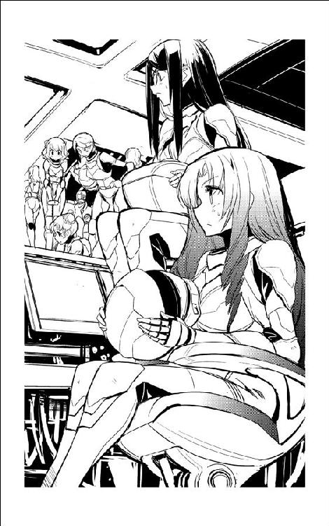
よく冷えたジュースパックを受け取った茉莉香が吸い口を切った。
「ねえ、チアキちゃん、ほんとに副船長やる気ない？」
「ない！」
他の部員にジュースパックを配りながら、チアキは断言した。
「忘れないで。わたしはれっきとしたバルバルーサの正規乗組員なのよ。弁天丸に乗ってるのはあくまで臨時雇いで、役付の仕事なんか金輪際やる気はないんだから」
「でもさ、部長はたぶん電子系のシステムにかかりきりになるから宇宙船の指揮なんかやってる余裕ないだろうし、本人もその気がないって言ってるし。みんな慣れてるんならともかく初めて乗る宇宙船で初めての仕事ってなったら、どうしたって副船長が、それもできれば何人か欲しいところなんだけど」
「すぐ目の前に適任者がいるじゃない」
きょとんとして、茉莉香はチアキの視線の行く先を追いかけた。グリューエルは副長席のディスプレイに機関関係のマニュアルと構造図を映し出して構造図を説明しながら、ビスケットを摘んでいる。
「......グリューエル!?」
「副長の席を任せたってことは、あなただって、あのお姫さまの天才的能力を有効活用しようって考えてるんでしょ」
「そりゃあ、あるものは使わないと損だし」
「だったら、席だけじゃなくて役職まで任せても、事態はあんまり変わんないんじゃないの？」
「一国のお姫さまに海賊船の役付、それも副船長なんかやらせたら、いったいどうなると思ってんの!?」
「別に、どうにもならないんじゃないかしら？ どうせ、今の弁天丸での役職なんてごっこ遊びの臨時のものだし、ヨット部で何をしてたって声高に宣伝しなきゃ、誰も問題にしないわよ。いえ、知られないようにすればそれで充分かな」
茉莉香は、ジュースパックのストローに口を付けたグリューエルの横顔を見た。聞こえないふりはしているが、グリューエルは耳もいいから聞かれていると思った方が間違いない。
「......いちおー、だけどさ」
茉莉香は小声でぶちぶちと言った。
「ヨット部のシミュレーションやオデット世での働きなんか見てても参考にしかならないんで、弁天丸で何を専門にやってもらうかってのは、一通りやってもらって適性見てから、とか考えてたのよね」
「何のんびりしたこと言ってるんだか、この船長は」
チアキは呆れたような視線を茉莉香に向けた。
「適性で乗組員配置決められるんなら、あなたはなんで船長やってるのよ」
「それは......」
茉莉香はストローを前にしたまま口ごもった。
「......船長資格が、血筋で決定されるから......」
「だいたい、専門教育受けたわけでもない、素人よりはましって程度のヨット部の部員にちょびっと海賊船に乗ってもらったからって、誰が適性判断するのよ」
「......あたし......」
「他にも、部屋割りやら乗組員の配置やら。配置は、適性見てからだろうから今日のうちに決定する必要はないけど、部屋割りは早いうちに決めた方がいいんじゃないの？」
「あああ！」
茉莉香は絶望的な声を上げた。
「そうだった......ええと、とにかく空いている客室は全部開けることにして」
弁天丸には、賓客や誘拐した人質のための設備が整った旅客室がいくつかある。
「それだけじゃ、絶対数足りないからあーっと......」
「部屋くらい、いくらでも開ければいいじゃないよ」
現在弁天丸に乗り込んでいるヨット部員の数は、弁天丸の乗組員の三分の二ほどにしかならない。乗組員たちが専用に使っている個室を借りようかと思って、茉莉香はちらっと見たことがある百眼やクーリエの私室の惨状を思い出した。
「駄目！」
茉莉香は力一杯首を振った。
「個室開けるのは最後の手段！ チアキちゃんだってバルバルーサの自分の部屋、他の人に使われたら嫌でしょ!?」
「......いえ、あんまり」
チアキはあいまいに首を振った。
「なんで!?」
「だって、わたしは出かける時はちゃんと部屋片付けていくようにしてるし、どうせ船にはたいしたもの置いてないし」
「ああ、だからたぶんバルバルーサと弁天丸って営業形態が違うんだってば。うちの船、住み込みの乗組員が多いのよ！」
「うちの船にも棲んでるのは何人かいるけどね」
チアキは、ブリッジの中でもっとも散らかったままの電子戦席に目をやった。
「ひどいのになると、仕事場に巣作りするようなのもいるけど、今の弁天丸なら正規乗組員がいないんだから、部員のみんなが暮らす分くらいのスペースはあるでしょ」
「ある、とは思うけど」
茉莉香は、船長として弁天丸を一通り案内されている。すべてを見たはずだが、船長として弁天丸に乗り込んで海賊として飛んでいれば業務をこなすのが精一杯だから、必要な場所以外のことはあらかた忘れている。
「ええと、空いてる船室全部解放すれば、とりあえずみんながしばらく暮らせるようなスペースできるかなあ」
「とりあえず、寝る場所さえ割り当ててくれればあとはどうにでもなるわ」
ブラックコーヒーのパックを咥えたままマニュアル片手にキーボードに指を走らせていたリンが、茉莉香に顔も向けずに言った。
「これだけ大きな船にわたしたちしか乗ってないのよ。一人にひとつ個室、なんてこと言い出さない限りは、大丈夫。どーせ合宿なんだから雑魚寝だって誰も文句言わないわよ」
「とにかく、夕食終わったら、みんなの部屋割りなんとかします」
船長席に戻った茉莉香は、どこかに格納されているはずの船体構造図を探してキーボードを叩きはじめた。
「今日中に、動き出せそう？」
船長席に昇ってきたチアキが、茉莉香の手許のコントロール・パネルを覗き込んだ。
「大丈夫、簡単な姿勢制御と針路決定ならたぶん問題ないって、うちの一年のホープが言ってたから」
茉莉香は、操舵手席のアイを指した。
「航法も、通常推進で外宇宙に向かうだけならそれほど難しくない。今、手間取ってるのは、通常推進主機のコントロールなの。推進剤の残量もエネルギーも問題ないと思うんだけど、核炉のスロットリングがうまく推進主機と連動しないみたいで」
「いっくら装備更新してるっていったって、この宇宙船もうちと一緒の骨董品だもんねえ」
チアキは、機能的にまとめられてはいるものの狭いブリッジを見廻した。
「やっぱり、機関室に何人か張りつけておかないと難しいんじゃない？」
「考えてる。ただ、ブリッジなら普段からいるから、まだなんとか何やってるか見てるけど、機関室で何やってるかなんてわかんないよ？」
「転換炉と通常推進に超光速機関でしょ」
チアキは考え込んだ。
「基本動作はだいたいみんな一緒だと思うけど、細かい調整なんかは宇宙船ごとに全部違うからなあ。最近の宇宙船なら全部自動で動いてくれるだろうけど、これだけ時代物の宇宙船に他から持ってきたエンジンだと、いろいろ小細工が必要でしょうねえ」
かつて一〇〇人単位の乗組員が乗り込んでいた弁天丸の食堂は、今は士官用の食事室が残るだけである。
大昔の軍艦から海賊船に改造されて任務も変更、装備も改変されて、運用人数も大幅に少なくなったとはいえ、テーブルを配置した状態では弁天丸の正規乗組員全員が集まって食事できるほどの大きさはない。また、弁天丸が正常に海賊船として運航している限りは、全員が同時に食事を摂るようなシフトも組まれていない。
しかし、少ない人数で乗り込んだヨット部は、食堂に全員が席を占めてもまだ椅子が余った。その日の夕食は、オデット世から持ち込まれた食材と弁天丸の備蓄を使って盛大に行われた。
夕食後、茉莉香は有志とともに弁天丸を探検し直して、使えそうな居住スペースをありったけ洗い出した。
大小合わせて五つあった賓客用の船室はすべてヨット部員用に転用。医療室の隣の四つベッドが入る病室も部員用の寝室に使う。かつての士官用個室はそのすべてが弁天丸乗組員の私室として占拠されていたため、物置に使われていた下士官用大部屋の荷物を隣のもと水兵用大部屋、現携行火器用武器庫に移動させて大掃除して、なんとかヨット部部員全員の今日の寝場所は確保された。
「年末ごとの大掃除なんてやらなくてもいいじゃないとか思ってたんだけど、必要だわね」
最初に食堂並みの空間容積を持つ物置に入った時には、果たしてここが人が住める空間になるのだろうかと自分の判断を疑った茉莉香は、荷物の移動と掃除だけで清潔な居住空間となったかつての下士官用大部屋を見廻した。
「もしここが何年も放っておかれた場所だったら、掃除するだけで今回の航海が終わっちゃうところだったわ」
「ベッドの数が足りないから、何人かは簡易ベッドか寝袋で寝なきゃならないけど」
掃除と片付けに驚異的な才能を発揮する三年生のアンジーが伝えた。
「でも、どうせ航海に出ればシフト組んでいっつも誰かは起きてなきゃならないから、全員分のベッドは必要なくなると思うし」
「暖かい寝床は誰もやりたくないでしょう」
茉莉香はアンジーに向き直った。
「予備のベッドや持ち出せる寝具がまだどこかにあるはずだから、探せば出てくると思います」
「寝具は数があった方がいいけれど、とりあえずここが寝部屋でいいんじゃないかなあ。シフトが違うのに同じ部屋だと、明るくなったり暗くなったり大変だろうし」
「寝るだけならそれでもいいと思うんですけど、狭くてもプライベートな場所はあった方がいいと思うし」
「ほら、部室でもオデット世の練習航海でも男先生の目があったけど、今回はわたしたちだけじゃない」
アンジーは、ベッドをずらりと並べた大部屋の隅を指した。すでに何人かが着艦デッキから荷物を持ち込みはじめている。
「弁天丸が全部プライベートな空間になる、かもよ。女子寮みたいに」
「女子寮......」
茉莉香は、時々は遊びにいく白凰女学院の女子寮の惨状を思い出した。
「......あんなになっちゃいます？」
「放っておいたら、簡単に」
アンジーは茉莉香の肩を叩いた。
「ま、練習帆船よりやること多いから、みんなプライベートな時間ってのがどれだけ持てるか疑問だけどね」
「とりあえず、寝るだけは寝てもらわないと、なー」
『こちらブリッジ、テストも兼ねて弁天丸全部に放送中です』
グリューエルの声が船内放送で聞こえた。もうそんな使い方まで探し当てたのかと思って、茉莉香は手近のコントロール・パネルを見やった。
『繰り返します、こちらブリッジ、船内全部に放送のテスト中。茉莉香船長、聞いていらしたら大至急ブリッジに戻って下さい』
「あらま」
茉莉香は、大部屋に装備されている時代物のコントロール・パネルに飛んでいって、今どき有線の受話器を取った。周辺状況の表示や画像通信の転送くらいならできるパネルのキーボードを叩いてブリッジを呼び出す。
「もしもし、茉莉香です。あ、部長？ 今呼び出されたと思ったんですが」
『手が空いてるようならすぐにブリッジに来て。でないと、うちの頼もしいクルーがせっかく覚えた発進手順忘れちゃう』
夕食後も、ブリッジでは何人かのスタッフ・メンバーを入れ替えつつ発進準備が続行されていたはずである。
「わかりました。すぐ行きます」
茉莉香はコントロール・パネルに受話器を戻した。
「それじゃアンジー先輩、ベッドの割り振りとか部屋割りとか任せますから適当にお願いします」
「はいはい、その調子だと夜食も作っておいた方が良さそうね。居眠りでいいから、寝られる時には寝ておきなさいよ」
「はい。夜食、ありがとうございます」
「ただいま！」
自動ドアが開くと同時に茉莉香はブリッジに駆け込んだ。
「遅い！」
機関士席の後ろにいたチアキが声を上げた。
「ごめん、今夜の寝床とかいろいろ用事が立て込んでるのよ」
「船長席に着いて。運がよければ発進できるわ」
誰が船長なんだか、とか考えながら茉莉香は船長席に昇った。
「運がよければ発進できるって、どういうこと？」
「転換炉の出力コントロールと、通常推進の始動手順まではなんとか割り出せたってこと」
いつもなら三代目が一人で切り廻す機関士席は、チアキ、ヤヨイをはじめとする数名が寄ってたかって、さらに副長席のグリューエル、レーダー／センサー席のリンもリモートで手を貸しているらしい。
「通常推進で、針路は外惑星軌道ってことならなんとかなると思います」
航法士席のマリイと何事か相談していた操舵手席のアイが、首だけ船長席に振り向いて言った。
「正確な針路を指示願います」
「正確な針路って、軌道平面に沿ってでも離れてでも、とにかくたう星から離れられるなら、このさい贅沢言わないわ」
言いながら茉莉香はコントロール・パネルを操作して、たう星系軍の配置状況をディスプレイに映し出した。せっかく外宇宙を目指しても、軍の演習空域に突っ込んだり移動中の艦隊とすれ違ったりするわけにはいかない。
現在位置である海明星のラグランジュ点から外宇宙に向かう方向の中で、もっとも軍を含む宇宙船との邂逅機会がなさそうな方向を選んで、茉莉香はブリッジでいちばん大きなメインディスプレイに航路図を映し出した。
「軌道要素は省略して、北天眷骨座ファーシュテルン星方向！ 速度はええと、目立たない程度の低加速で惑星間航行速度まで上げて！」
「とりあえず今の場所から逃げ出して、人目の少ないところに移動しながら時間稼ぎ、って方針ね」
通常推進系のチェック片手にチアキが所見を述べた。
「いいんじゃないかしら」
「それじゃ、準備でき次第発進！」
景気よく命令して、茉莉香はこれといった反応がないブリッジの乗組員たちを見廻した。
「......いつ頃、発進できそう？」
「通常推進の低加速なら、転換炉の出力は通常推進側からの自動設定で問題ないと思います」
ずらーっとディスプレイに映し出された設定項目から必要部分だけを読み出したヤヨイは、片手に拡げたファイルと交互にあちこち確認している。
「でも、通常推進系の反応速度とか実推力とかいまいち読めない、っていうか計器が信用ならないみたいだから、低推力でゆっくり動き出して様子見ながら速度上げていく、ってのが現実的じゃないかしら」
「あんまり推力絞ると推進剤の効率が落ちるのよねえ」
チアキは機関士席のコントロール・パネルに半身を伸ばして片腕を潜り込ませた。
「どうせ軍用の通常推進なんて一定以上の推力出してやらないと効率上がらないんだから、とっととスロットル上げて飛ばしてやった方がいいんじゃない？」
「ええと、さっき貰ったマニュアルでも通常推進なら、できればスロットル三〇パーセント以上で使うように、それ以下だと推進剤が完全反応しないから燃費が落ちるのみならず燃焼系にいろいろ煤とか不純物とか付くんで、あとがいろいろ大変だとか書いてあります」
「どうする、船長？」
片手で調整を続けるチアキに訊かれて、茉莉香はうがーっと叫んだ。
「わかったわよ、目立たない程度の低加速なんて贅沢言わない、転換炉と通常推進が文句言い出さないような運転と加速で、準備できたらすぐ動き出して！ どうせ海賊船が係留空域からこっそり乗り逃げするんだから、飛行計画の提出も発進許可の申請もいらないんだから。弁天丸そのうちに発進！」
弁天丸が通常推進機関から超高速のプラズマ炎を噴射して動き出したのは、それからさらに数時間後のことだった。
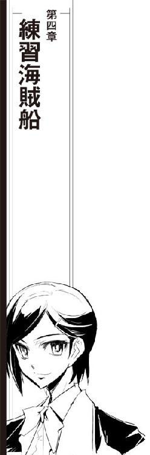
海明星のラグランジュ点にある星系軍管理下の錨泊空域から発進した弁天丸は、効率優先の民間船とは思えないような急加速と乱暴な針路修正を繰り返して、たう星系の外惑星軌道を抜けた。高出力のプラズマ噴射を辺り構わず撒き散らせばその存在を官民問わず監視網に主張することになるが、たう星から遠ざかる軌道をとっていたためか、幸いなことに航路管制局や軍当局からの問い合わせはなかった。
「やっばー」
たう星系の惑星の中でもっとも巨大なガス状惑星、白風星に最接近する辺りで、レーダー／センサー席のリンが声を上げた。
「トランスポンダー、切りっぱなしだ」
「入れて下さい！ 今すぐ！」
だいぶ嗄れてしまった声で、茉莉香が叫んだ。
「ああ、錨泊空域から離れたら知らんぷりしてトランスポンダー入れようと思ってたのに、すっかり忘れてたあ！」
「だから、少々急だろうがなんだろうが、加速が安定したらしばらく放っておけば落ち着いて外宇宙に出られたのに」
「核転換炉の出力も安定しないのにあんな大推力の急加速かけたまんまで跳んでったら、推進剤もエンジンも保ちません！」
「エンジン暖まらないうちにあんな推力かけないと安定しないなんて、なんて使いにくい通常推進なの!?」
チアキが悲鳴を上げる。
「おまけに噴射圧から混合比から全部マニュアルで設定しなきゃならないなんて、いったいいつの時代のエンジン使ってるのよ！」
「ええと、確か五〇年くらい前の、帝国の機動戦艦用のエンジンをどっかから持ってきたって三代目から聞いたような......」
「超光速もできないような時代の骨董品みたいなエンジンじゃないのよ！ それがどうしてまともに運転するだけでこんなに手間がかかるのよ！」
「エンジンは機動戦艦用かも知れませんけど、制御系が別物ですし」
こちらもぐっと疲労の色が濃いヤヨイが、やっと安定して動くようになった通常推進機関の検出系に再チェックをかけている。
「エンジンと制御系が合ってないっていうの!?」
「このエンジンって、型式で検索かけてもぴったり同じっていうのは出てこないんですよ。似たような型式のエンジンはいくつか見つかるけど、接尾記号から考えるとこれより新しいのばっかりで。なのに、推力はこんなに出てないのばっかりで、搭載してるのも帝国艦隊では機動戦艦じゃなくて巡洋艦クラスばっかりです。それから考えると、この宇宙船のエンジンってたぶん、開発初期の推力増加型でもどっかから持ってきちゃったんじゃないかと......」
「なんですってえ!?」
「で、そのあと同型式でこの宇宙船ほどの推力出してるエンジンが開発されてないところを見ると、なんか理由があってその後の開発が行われなかったんでしょうねえ。燃費かなあ、コストパフォーマンスかなあ」
ヤヨイは、微妙に変化している燃焼室温度に合わせて推進剤の噴射圧をわずかに下げた。
「......コントロールが微妙で難しいからかなあ？」
「そりゃあ、三代目も機関担当のみんなも苦労してるみたいだけど」
なにか申し訳ないような気がして、茉莉香は船長席で小さくなっている。
「今の水準で見ても大きさの割に最大推力が馬鹿みたいに大きいから、推進剤大食いするのはしょうがないと思うんです。でも、これだけ扱いの難しいエンジンなら間違いなく専用の制御システムと一緒になってるはずなのに、制御系はこの宇宙船の他の電子系同様それほど古くない。機関系と制御系は普通だったら一緒に更新しますけど、制御系だけ更新してるってことは、たぶん、通常推進を換装した時にエンジンは手に入ったけど制御系は手に入らなくて、あり合わせでなんとかしたんじゃないのかなあ」
うげ、とリンがうめき声を上げた。チアキは疑わしげにヤヨイと目の前の機関パネルを見比べる。
「できるの、そんなこと？」
「普通はやりません。だって、通常推進の制御ソフトから組み上げなきゃならないんですから。でも、テストデータが揃ってて、制御系は使えないけどエンジンだけは使えて、そのエンジンがフル・パワーなら戦闘機みたいな加速ができるとなれば、制御系は口金さえ合えばなんとかなるし、どうせその辺りは規格部品使ってると思うし、制御ソフトさえでっち上げればなんとかなるんじゃないかしら」
「使えるの？」
さらに疑わしげな目で、チアキが訊いた。ヤヨイはあっさり首を振った。
「専用のマニュアルがなかったら、まともな効率で推進剤を噴射させるのも難しいと思います。マニュアル見たって書き込みと差し替えだらけで、制御システムを新しくした時にかなり手は入ってて、それでだいぶ手はかからなくなってるみたいですけど、それでも普通に動かすだけでこれだけ苦労するんですから」
「バルバルーサも、こんなに大変？」
茉莉香に訊かれて、機関席に背を向けたチアキはブリッジの床に座り込んだ。
「うちもいーかげん古いけど、でも通常推進系だけでこんなに手間がかかってるようには見えなかったわ。うちの通常推進も軍用だけど、こっちほど推力高くないし、そんなに手を入れてるわけでもないし。でも、聞いてなかったから知らなかっただけで、ひょっとしたらこの半分くらいは大変なのかも」
「あの、船長？」
機関席から、困ったような顔でヤヨイが振り向いた。茉莉香は慌てて元気な笑顔で応える。
「なあに？」
「通常推進でこれだけ苦労するんです。もし超光速機関もこんな具合だったら、どうしましょう」
「大丈夫だいじょぶ」
根拠もなしに茉莉香は手を振った。
「うちの超光速機関はエンジンも制御系もちゃんと正規品で、今までに一度だって超光速失敗したことないんだから」
「一度でも失敗したら、もう宇宙船の形してないでしょうが」
チアキは疲れた顔で茉莉香を睨みつけた。
「超光速飛行なんて一発勝負だから、どれだけの手間が必要か気づいてないだけじゃないの？ 海賊船の跳躍なんて、軍の奇襲より精度が必要だから大変なのよ」
「超光速が簡単だとは思ってないわ」
茉莉香は笑顔のままうなずいた。
「でも、実際にやってみる前に心配してもしょうがないし、どうせそのうちにやらなきゃならないし」
茉莉香は、船長席のディスプレイで弁天丸の現在位置を確認した。
「このまま、たう星の影響を受けなくて済むくらい離れたら、超光速跳躍も試してみる。行った先で弁天丸をうまく動かせるように訓練しましょう」
「訓練手順とか、考えてるの？」
「何を訓練しなきゃならないのか指示できるくらいは、おおざっぱに考えてる」
茉莉香は、考え顔でうなずいた。
「えーと、どうせまたみんなにも説明しなきゃならないけど、聞いておいてもらった方がいいわよね」
茉莉香は、ブリッジで長時間連続業務に耐えているヨット部員の顔を見廻した。
「もし何か気づいたことがあったら、意見して下さい。たぶんどっかに見落としはしてると思うから」
今ここにいる部員のうち、半分以上はブリッジ要員になってくれるだろうなと考える。
「タイムリミット付きでやらなきゃならない弁天丸の次の仕事は、豪華客船プリンセス・アプリコット号への海賊行為です。でもそれは、保険会社もプリンセス・アプリコット号の運用会社も承知していることで、客船相手のアトラクションみたいなものです。もちろん、何をやっていたって想定外の不慮の事態なんて起きる可能性があるし、それは自分たちで始末つけなきゃならないけど、基本的には営業って呼ばれてるいつもの仕事で、やらなきゃならないことは決まってます」
リンが片手を上げて発言を求めた。
「相手は決まってて、やることも決まってる。楽な仕事だと思うが？」
茉莉香はうなずいた。
「ちょっと派手めに演出しなきゃならないけど、シナリオに従っている限りはそれほどの危険もないし、偶発事故の心配もあんまりありません。でなきゃ、ヨット部のみんなかき集めたらなんとかなる、なんて考えたりしませんもの」
茉莉香はもう一度ブリッジ内のみんなの顔を見廻した。事情も手法も十分に知っているチアキ以外は、みんなじっと茉莉香の顔を見つめている。
「でも、海賊らしく弁天丸を動かしてちゃんとお仕事するのは、今のまんまじゃどうやったって不可能なの」
「海賊しなきゃならない相手のプリンセス・アプリコット号は、航路も飛行計画もわかってるんだろ？」
リンが再び質問した。
「いつ、どこに跳んできてくれるかわかってる相手の仕事なら、それほど苦労しなくてもいいんじゃないのか？」
「幸いなことに、プリンセス・アプリコット号は今までにも何度もお仕事させてもらってるお得意様ですから、お互いに信頼も得てますし、十分な情報も提供してもらってます。でも、想像してみて下さい。プリンセス・アプリコット号は飛行計画に従って航路を飛んでいますけど、例えば超光速跳躍は最初っからある程度の誤差を見込んで安全距離を確保して跳ぶものですから、広い航路帯の狙ったポイントにぴったりと出てきてくれるわけじゃありません。こっちだって、出会い頭の衝突事故なんて起こしたくないから、確実に安全な場所でプリンセス・アプリコット号のタッチダウンを待つことになります」
「そりゃ、そうだ」
「時間どおりに跳んでくるはずの獲物を待ち伏せするのはそのとおりなんですが、跳んできてくれた客船をこっちのレーダーやセンサーで確認したら、今度はお待たせしないように急接近かけて、海賊しに乗り込むことになります」
「いきなり？」
リンが再び手を挙げた。
「タッチダウン直後の、正常に航路を運航してるはずの豪華客船に、通信妨害もかけずにレーダーも殺さずにいきなり急接近かますのか？」
「あー忘れてた！」
茉莉香は声を上げた。
「そうです、準備もなしにいきなり接近したら奇襲にもなんにもならないから、獲物を確認したら接近しながら気づかれないように電子戦かけるんです。それで、うまく相手のコントロール乗っ取ってから、海賊の名乗りを上げるんです」
「電子戦仕掛けるのは、どうやるんだい？」
「それは、そこの電子戦席で、いつもならクーリエが」
茉莉香はブリッジ左側の電子戦席を指した。
「今回は、誰が？」
「それはもちろん、リン部長が。あ、たぶんチアキちゃんにもお手伝い願って」
リンはにやりと笑った。
「つまり、今回のお仕事のためには、このわたしが弁天丸の電子戦システムに習熟しなきゃならないと、そういうわけだね」
「そうです」
いろいろと不吉かつ不用意な展開を想像しながら、茉莉香はむりやりうなずいた。
「ええと、あたしあんまり弁天丸のシステムに詳しくないんですけど、いちおう今の状態はうまく動いてると思いますんで、できれば調子を崩さないようにお願いします」
「大丈夫だってば」
リンは苦笑いして手を振った。
「オデット世の電子システムだって、ろくに手を付けてないんだから」
「だって、練習帆船で電子戦やる機会なんてそんなにないし」
「それで、電子戦で獲物の乗っ取りに成功したら、次はどうするんだい？」
リンに促されて、茉莉香は本題を思い出した。
「首尾よく獲物のコントロールを乗っ取ったら、接近かけながら名乗りを上げて、お客さんが海賊の手に落ちたことを伝えます。この連絡は強制介入通信で、相手の船全部に流れるご挨拶みたいなものです。名乗りを上げる時には、できれば相手の目に見えるところまで接近しているのが望ましいです」
「タッチダウンして航行中の宇宙船が、すぐ目の前に見えるところまで接近しなきゃならないんですね」
操舵手席のアイが確かめるように言った。超光速航行をしていないといっても航路帯上の宇宙船は星系の公転速度をはるかに上回る高速で飛んでいるから、宇宙船と宇宙船の間の安全距離は十分に取ることを求められる。もし他の宇宙船が肉眼で見えるようなら、安全な間隔は空いていない。
「そう。宇宙空間の戦闘でも普通ならそこまで接近することはあんまりないけど、電子戦しながらこっそり近づいて、コントロールを乗っ取った時にはすぐ目の前にいるのが理想。獲物をこっちでコントロールできるようになったら、相手は慣性航行のままで急接近後、強制ドッキング。言葉にすると簡単だけど、名乗りを上げたら窓開けて獲物に弁天丸を見せることになりますから、船に乗ってるお客さんを飽きさせないように、見ている目の前で急接近、ドッキングしなきゃなりません」
「飽きさせないようにって」
アイが唖然とつぶやく。
「いったい、何分くらいで？」
「乗っ取り完了するまでにどれだけ船を接近させてるかにもよるけれど、たぶん、数分てところでしょうね」
「そんな......設備が整ってる港への入港だってもっとゆっくり時間をかけて確実に行うのに」
「しかも、ドッキング相手からの誘導はいっさいなし。もちろんそのために弁天丸には長距離から至近距離までのセンサーが揃ってるけど、仕事のたんびに条件も相手の形も違うから、きれいに軸線を合わせて獲物と同じ方向を向いたままスムーズに接近してドッキングしてみせる、ってのも海賊の芸のうちなの。お客さんを待たせながら操船見せるわけにいかないんだから」
「本番一回だけ成功すればいいとはいえ、楽な仕事じゃないわよ」
同じような営業を行うバルバルーサに幾度となく乗り込んでいるチアキがあとを引き取った。
「接近に失敗して手間取るのももちろん、ドッキングに失敗して獲物に傷でもつけたら言語道断なんだから。船ごとに違う接岸用の固定ポイントにぴったりドッキングアーム合わせて打ち込まないと、相手の船に傷がつくからね。そしたら、営業相手の船を損傷させた修理代も修理期間の賠償金も払わなきゃならないんだから」
操舵席のアイがぞくっと身体を震わせた。
「ほらほら、チアキちゃんあんまり脅かさないで。本番でそんなドジ踏まないように、これからゆっくり訓練しようっていうんだから。それで、全部がうまくいってすんなり獲物にドッキングできたら、ドッキングブリッジつないで海賊しに相手の船に乗り込みます。それで、海賊らしくお仕事して、一人も欠けずに無事に弁天丸に戻ってきたら、お仕事終わり。たう星系に帰って、弁天丸をもとの場所に戻して、オデット世で予定どおり中継ステーションに帰ります」
「つまり、まず重点的に行わなきゃならないのは、船を精密に動かす操船訓練てわけだな」
リンが状況をまとめた。
「楽な仕事だといったのは取り消す。で、これからの訓練はどこでやるつもりだい？」
「オリオン腕とペルセウス腕の間にあるケフェウス暗黒湾で、と考えています」
たう星系を含む天の川銀河は棒渦巻き銀河である。銀河系は大きな四本の渦状腕と小さな二本の腕を持ち、中央の核恒星系を貫く棒状構造から大きな渦状腕がつながっている。
たう星系はオリオン腕の中にある。ケフェウス暗黒湾は隣のペルセウス腕との間に広がる星の分布が希薄な空間であり、その差し渡しは数千光年にも及ぶ。腕内に比べて星系のみならず星間物質の分布密度は圧倒的に低くなるため、空間あたりの経済的な価値は著しく低い。
航路も設定されておらず、人が住む星もまばらであり、鉱物資源もほとんど期待できないとなれば、そこは本来の意味での真空であり、希薄な宇宙空間である。腕から腕に超空間を跳ぶ宇宙船が立ち寄ることもなく、光速以下で横断しようと思えば万年単位の時間がかかる広大な空間は何もないという当たり前の理由でほとんど放置されている。
航路帯が設定されていないから、通常空間を航行する物好きな船はほとんどいない。そのため、帝国艦隊や各星系軍、警備艦隊が演習空域を設定しているくらいで、宇宙船の姿を見ることはほとんどない。
「なるほどね」
リンは、レーダー／センサー席のコントロール・パネルを操作してケフェウス暗黒湾に関する航法データを探した。
「あれだけ何もない空間なら、少しばかり設定が甘い跳躍をしても事故の心配もないし、好き勝手に飛び廻っても、ミサイル発射しようがビーム撃とうが誰にも迷惑はかからない」
「その代わり、何か事故があっても救援も期待できないけどね」
チアキの台詞に、ブリッジが静まりかえった。
「こらこら、チアキちゃんたら脅かさないの」
茉莉香は慌ててフォローに廻る。
「大丈夫よ、帝国艦隊や星系軍はあたしたちがどこで何やってるかあんまり気にしないだろうけど、あたしたちがどこで何やってるかはちゃんと保険会社が知ってるから。定時連絡だってしてるんだから、何かあっても救援がないなんてことはないわ」
ブリッジにほっとした空気が流れた。
「まあ、乗ってるのが海賊船で、やってることが正規じゃない乗組員ばっかり集めて海賊の訓練だから、できればどことも関わり合いになりたくないのが本音なんだけど」
「わかった。つまり次の大掛かりなイベントは超光速航行で、それは今すぐ行わなきゃならないイベントじゃなくて、しばらく先のことだな？」
リンが手際良く状況をまとめた。茉莉香はうなずいた。
「そうです」
「それじゃ、今すぐにして欲しい船長の仕事だ。寝てもらおう」
「え？」
「今何時だと思ってる？」
リンは、銀河標準時を指しているコントロール・パネルのクロノメーターを指した。
「早寝早起きな練習帆船のスケジュールでも、夜食食べてからずっと続けてブリッジ勤務、就寝時間とっくに過ぎて下手すりゃ朝食って時間だぜ。これから先まだ長いんだ。今の航行速度なら放っておいても二日や三日、障害物は出てこないから、次にやらなきゃならない暗黒湾への跳躍はたっぷり下準備をしてもまだ時間が余る。となれば、今朝から結構ハードなミッションをこなした我々に必要なのは、十分な睡眠だと思うが、どうだ船長？」
茉莉香は船長席の時計を見直した。予定どおりにオデット世を出港させるために今朝も早起きだったのに、もうすぐ次の日の起床時間になってしまう。
「わ、もうこんな時間。部長の言うとおりだ、みんなの寝床は客用船室にしっかり確保してありますから、それじゃあ顔洗ってゆっくり寝ましょう」
「わあっ寝過ごしたあ！」
パジャマ代わりのジャージのまま、寝起きの茉莉香がブリッジに飛び込んできた。
「わあっなにこの大人数!?」
もとより、弁天丸のブリッジはそれほど容積の大きな場所ではない。装備されている椅子の数はオブザーバー席を合わせても一〇席を越える程度でしかなく、重力区画だからすべての壁面が有効に使えるわけでもない。
オデット世のブリッジに比べれば七〇パーセントほどしかない容積のブリッジに、昨日の倍の人数がひしめいていた。
「あ、船長だ」
疲労の色も見せずに副長席に着いていたグリューエルが片手を挙げて挨拶する。
「今ちょっと、やりかけてることがあるのでこのままで失礼します」
「ずいぶんゆっくり寝てたみたいじゃない」
チアキが隣に来た。茉莉香は、弁天丸船長として船長室以外に私室を持っている。船長として乗り込んでまだ日が浅いからそれほど私物を持ち込んでいないこともあり、茉莉香は自分の私室をヨット部員の部屋として提供した。船長室のソファはベッドにもなる多用途型だから、この航海中はそちらで睡眠を取ることにしている。
「だって、誰も起こしてくれないんだもん」
「あれ、お姫様が起こしにいったって言ってたけど？」
「グリューエルが？」
茉莉香は、副長席で年上のヨット部員たちにディスプレイの読み方を教えているグリューエルを見やった。
「あ、えーと、グリューエルって姫とかプリンセスとか呼ばれるの嫌がるから、言わない方がいいよ」
「わかってるわよ。お姫様をそう呼ばなきゃいいんでしょ」
「あと、地獄耳だからたぶん聞こえてる」
チアキは、げっという顔で上級生へのレクチャーを続けている副長席のグリューエルを見た。
「グリューエルが起こしにいったんだけど、起こしても起きなくて、あんまりぐっすり寝てるから、どうせこれから船長の仕事ハードなんだし、今のうちに寝ておいてもらおうってことであと放っておいたみたい」
「そんな」
もとより寝起きに自信がある方ではないが、こともあろうに自分の宇宙船で起こされても起きなかったという醜態に茉莉香は恥じ入った。
「むりやりにでも、起こしてくれればよかったのに」
「まあ、これから先、船長の生活時間帯なんてぐちゃぐちゃにされるだけされるだろうから、寝られる今のうちに寝とけ、ってのは正解だと思うけどね。寝られた？」
「だからそれはもう、起こされても起きないくらい」
茉莉香は、電子戦席にはリンが着いて、シュニッツァー専用の大きな戦闘指揮官席は空いているものの、船長席を除く残りのコンソールにはまんべなくヨット部員が群がっているブリッジを見廻した。
「で、これってなんの騒ぎなの？ 非常事態とか、そんなんじゃないみたいだけど」
「部長の発案でね、昨日のうちに判明したブリッジの機械の使い方を忘れないうちに他のみんなにも覚えてもらってるの」
「ええ!?」
それは、茉莉香が考えてもいなかったカリキュラムだった。
「なんでそんなこと？ ただでさえ覚えなきゃならないこといっぱいあるのに」
「だから、よ。まだみんな本番で弁天丸のどこで何やればいいかなんてわかってないけれど、少なくともブリッジが何やってるかわかってる方が、従うにしてもフォローするにしてもやりやすいでしょ」
「それはそうだけど」
「それに、他はともかくブリッジ要員だけは二重三重に交代要員養成しとかないと、シフトも組めないじゃない。本番用の配置は、どうせみんなで海賊しに獲物の宇宙船に殴り込まなきゃならないからまた別になると思うけど、普段弁天丸を動かす配置のためには、どこで何やってるかわかってもらった方が、どこに廻されても仕事しやすいんじゃないかしら」
「そういえば、うちの乗組員も暇な時は他の部署に遊びにいったりしてたっけ」
あれは本来の業務に余裕があった時に他の仕事場に遊びにいったのではなく、いざという時のために仕事を肩代わりできるようにいろいろ教わっていたのだと気づいて、茉莉香はさらに恥じ入った。
「うわー、あたし船長だからって自分の仕事覚えるのに精一杯で、その辺り全然見てなかった。そうよね、せっかく練習航海の名目で弁天丸に乗り込んでもらってるんだから、体験できるだけのことは体験して覚えてもらった方がいいのよね」
「そういうわけでまだしばらくかかるから、ちゃんと顔洗って着替えてご飯食べてらっしゃい。食堂に、まだ昼食が残ってるはずよ」
「......そんな寝起きの顔してる？」
「起きてから鏡も見てないの？」
チアキは呆れ顔で作業服のポケットから取り出した手鏡を茉莉香に開いてみせた。
「わあ」
茉莉香はあわててチアキの手にしがみついて手鏡を閉じた。
「わかりました、すぐに身支度してきます！」
「だから、ちゃんと食事してきなさいってば。そうだ、茉莉香！」
チアキは、ブリッジから飛び出そうとした茉莉香を呼び止めた。
「あなたこれから、弁天丸ではちゃんと船長服着ること！」
ブリッジのドアの前でくるりと振り向いた茉莉香が大声を上げた。
「ええええ!? みんなの前であの船長服着てろっていうの!?」
「船長なのよ、あなたは」
チアキは、じっと茉莉香を見つめて言った。
「あなたは、海賊船弁天丸の船長なの。ぼさぼさ頭にみんなとおんなじジャージや体操服で船長の威厳が保てると思う？」
「だって、あたしもともと威厳とか雰囲気とかそういうの苦手で」
「苦手とかって問題じゃない！」
チアキは茉莉香を一喝した。
「あなただけじゃない、みんなにも海賊船に乗ってるって自覚してもらわなきゃ困るのよ！ 型から入るのでもなんでもいいから、まず船長から海賊らしくしてもらわないと、みんなもその気にならないでしょ！」
「だって......」
なおも未練たらしく抵抗しようとする茉莉香に、チアキは両腕を組んだ。
「業務命令！」
「え？」
「規約で、海賊する時、船長は制服着用のことになってるのは知ってるわよね？」
「うん」
茉莉香は不承不承認めた。
「海賊船に女子高生詰め込んで海賊の訓練やってるってのは、どこからどうみても海賊の仕事よ。もし誰かに突然踏み込まれても言い訳できるように準備しておくのが、船長の最低限の義務だとは思わない？」
「そんな......」
「昨日は見逃したけど、今日はもう駄目。これから先、船長室から出てくる時はきっちり船長の制服着てくるように！ うちの駄目親父がなんとか船長やってられるのは、あれはもう制服着てるってそれだけが理由なんだから！」
「素敵なお父様じゃないの」
「いいから早く顔洗って歯を磨いて髪梳かして制服着てご飯食べてらっしゃい！ 今日も、やることいっぱいあるわよ！」
正式なミニスカートの船長服に派手な船長帽まで被ってブリッジに現れた茉莉香は、今度は拍手喝采で迎えられた。
「やっぱり、船長席に座られている時の茉莉香さんにはその格好がお似合いです」
お茶の時間にティーカップ片手のグリューエルが、船長席の茉莉香を見上げて眩しそうに微笑んだ。
「それは、グリューエルと最初に会った時にあたしがこの格好してたから」
船長帽をコンソール脇の専用の場所に置いている茉莉香は、げんなりした顔で応えた。
「いえ、それだけじゃありません。やっぱり、船長がきちんと船長の格好して、いるべき場所にいるだけで、ブリッジの雰囲気がずいぶん引き締まりました」
「そうかしら？」
茉莉香は疑わしげな顔で相変わらずの混雑が続くブリッジを見廻した。
「そうは見えないけど」
「茉莉香さんが見ている風景には自分がいませんものね」
「船長！」
電子戦席に貼りつきっぱなしのリンに代わってレーダー／センサー席に着いていた三年生が声を上げた。
「外部からクラスの暗号通信！ 発信人は、ハロルド・ロイド保険組合！」
「了解」
コントロール・パネルに指を走らせようとして、茉莉香は止めた。
「そちらで、受信できますか？」
「え？ えええ？ え、ええと、たぶんできると思う」
レーダー／センサー席を見廻した三年生の視線が最終的に通信パネルに落ち着いたのを見て、茉莉香はうなずいた。
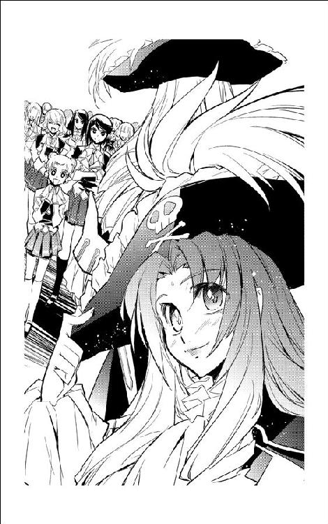
「それじゃ、出てみて下さい。いつもの相手だから、設定は自動で大丈夫だと思います」
「わかった、やってみる」
三年生がおっかなびっくり通信パネルに指を走らせる。茉莉香は、いつの間にかざわついていたブリッジが静まりかえっているのに気づいた。
全員の注目が自分に集まっているのを気づいているのかいないのか、三年生は通信に出た。
「はい、こちら弁天丸、通信士の宮本瑠璃です。......ハロルド・ロイド保険組合のミスター・ショウですね？ はい、ちょっとお待ち下さい」
通信をホールドして、瑠璃はレーダー／センサー席から振り向いた。
「ハロルド・ロイド保険組合のショウさんからです。昨日も定時連絡くれた人ですよね？」
「そうです。船長席で受けますから、通信廻せます？」
「はい。ええと、確かホールド中の通信のチャンネルを船内通信で、船長席の回線に、と」
船長席の通信パネルが点滅して回線がつながれたことを伝える。
「はい、来たわ。こっちで出ます」
背筋を伸ばして、茉莉香は通信を受けた。ヘッドセットを使おうかと考えて、みんなに聞こえるように通信を開放する。
通信モニターの中に、ビジネススーツにアフロヘアの怪人が現れた。
『よう、毎度お馴染みハロルド・ロイド保険組合のショウさんだ』
「こちら弁天丸、茉莉香です」
茉莉香はいつもどおりの挨拶をした。通信モニターの向こうのショウが、ちょっと驚いたように口を丸くする。
『ほう、今日は正装かい？ その格好だと、ちゃんと仕事してる宇宙船相手に連絡してるように見えるぜ』
「茶化さないで下さい」
茉莉香は軽くショウを睨みつけた。
「こっちにもこっちの事情があって大変なんです」
『茶化してるだなんてとんでもない。真面目に仕事してるように見えてまことに結構って褒めてるんだ。ええと、そっちの現在位置は、まだたう星系か。新人乗組員の訓練の具合はどうだい？』
「順調です」
茉莉香はぺろりと舌を出した。
「おかげさまで、みんな順調に経験値を積んで着々と宇宙船の動かし方を覚えてます」
『そりゃ頼もしい。そっちの次の仕事相手になるプリンセス・アプリコット号の出港予定も変更なしだ。頑張って本番までにすべての準備を整えてくれ。ところで、そっちに頼まれてうちのデータサーバーを片っ端からさらってるんだが、今回は弁天丸の超光速機関に関する資料が出てきたぜ』
「きゃあ、なんて素敵なタイミングでしょう！」
内心タイミングの良さを疑いながら、茉莉香は両手を組み合わせて声を上げた。
「大至急送って下さい！ あと、航法関係の資料ってあります？」
『航法関係ねえ？』
ショウは、わざとらしく手許に目を落とした。
『弁天丸専用ってわけにはいかないが、通り一遍の教科書と、あとそっちで装備してる航法装置に関する取り扱いの説明書なら出てきてる。役に立つかどうかはわからんが、まとめて送るから目を通してくれ』
「ありがとうございます！」
『ところで、病院船ベン・ケーシーに隔離されてる海賊どもだが、だいぶ元気になってきてるそうだ』
茉莉香はびく、と表情をこわばらせかけた。
「ええと、どんな具合ですか？」
『隔離期間は変更なしだが、完治したって診断が出てるのが何人かいるとさ。この調子だと、隔離期間の後半、元気になった海賊どもを病院船でおとなしくさせておく方が大変そうだぜ。茉莉香船長に言われたとおり、風邪治してゆっくり休養するのがお前らの仕事だって伝えといたがな』
「お手数かけます」
茉莉香はショウに頭を下げた。
「こっちは、予定どおりケフェウス暗黒湾に跳んで本格的な訓練に入る予定です。ええと、超光速跳躍の前にハロルド・ロイド保険組合に連絡入れた方がいいですか？」
『大至急駆けつけなきゃならないような非常事態でも起きない限りは、定時連絡で充分だ。それじゃ、次の連絡は遠く離れた暗黒湾につながるよう、幸運を祈ってる。じゃな』
たう星系の外惑星軌道を抜け、母星の重力が高次空間に影響を与えないほど充分に小さくなる外宇宙まで進出して、弁天丸は超光速跳躍の準備を開始した。
超光速跳躍のためにはいくつもの準備が必要である。まず、自分の正確な現在位置と目的地となる正確な座標を設定し、超光速跳躍のための複雑な計算を行わなければならない。
どれだけ複雑な計算だろうが、パラメーターさえ設定できればあとはコンピューターがやってくれるからそれほどの苦労はない。現在位置の測定はヨット部でも普段から行なっている作業だから、弁天丸の観測機器の取り扱いさえ覚えればそれほど問題はない。
計算が完了したら、弾き出された数値に従って超光速機関が飛行計画どおりに船を跳ばすように各種の設定を行わなければならない。これも最新の宇宙船ならすべて自動化されており、弁天丸でも人間が操作することによる間違いを避けるために自動化が進められている。
しかし、設定しなければならない項目は山のようにあり、そのすべてについて超光速機関と動力を供給する核転換炉が問題なく動くかどうか確認する必要がある。
弁天丸に二基装備されている大出力の核転換炉は、宇宙空間を通常航行している限りそれほどの大出力運転を要求されない。しかし、力任せに空間を歪めて高次空間に跳び込む超光速跳躍においては、全開に近い出力供給が要求される。
しかし、阿号、吽号と呼ばれている弁天丸の二基の転換炉は、茉莉香の記憶にもあったとおり、またショウから提供された運用マニュアルにも記されているとおり同一の状態にはなかった。
添付されていた資料によれば、弁天丸の転換炉は約六〇年前に換装されている。適切なメンテナンスを受けている民生用の転換炉ならば半永久的な寿命があるといわれるが、運転効率よりも出力を重視する上に、製造時からそれほどの運転寿命を期待されていなかった軍用の転換炉の製造当初の設計寿命はおよそ半世紀。最初の転換炉は寿命が尽きて換装されたらしいが、念入りな整備を受けているとはいえ二代目になる現在の二基の転換炉はとっくに設計寿命を過ぎている。
まだまだ弁天丸を引退させる気はない乗組員及び関係者は各方面に手を伸ばして転換炉の代替品を探しているらしいが、建造以来一二〇年という老朽船ではそもそも同規格の転換炉の調達など不可能である。また、度重なる改装と出力増大で二基の転換炉は原型をはるかに上回る高出力型に改装されており、仮に未使用の新品転換炉がどこかから発掘されたとしても弁天丸に合うように改造しなければ換装もできない。
適当な新型に置き換える手段も幾度となく検討されているが、そもそも転換炉の換装というと船体を竜骨にまで分解しなければ行えない大作業であるため、適当な代替品も確保されていないこともあって先延ばしにされている。
運転寿命切れの二基の核転換炉のうち、阿号はいつ壊れても文句を言えない状況なのにもかかわらず、三代目をはじめとする弁天丸機関スタッフの手厚い整備運用によって素直な出力特性と扱いやすさを兼ね備えて安定運用されていた。運転状況にむらがあって出力を安定させにくい吽号炉は同様に手間をかけられていて、調子がいい時にはもちろん積極的な出力供給を行なっているが、調子が悪い時はアイドリング状態のまま延々と調整が続くことも多い。
「核転換炉なんていったら、ただでさえ中に宇宙まるごと入ってるような複雑で厄介な構造なのに、それを寿命切れのまんま使ってるの？」
ブリッジの床に拡げた電紙ディスプレイに追加事項だらけの核転換炉の資料を拡げたチアキが、呆れたような声を上げた。
「よく宇宙船の形して跳んでるわね、この海賊船」
「スタッフが優秀ですから」
茉莉香は澄まし顔で応えた。
「そりゃあ、いろいろと面倒見てやらないと動かすのも大変だけど、船体は頑丈だし十分すばしっこいし速いし、これでもよくできてる海賊船なのよ」
「まあ、実績は認めざるを得ないけど」
チアキは、相変わらず定員過剰なブリッジを見廻した。
「それで、うまく跳べそう？」
「超光速機関の方は、確かに船長が言ったとおりそれほど厄介じゃなさそうです。こっちは空間構造にイカサマ仕掛ける分、失敗した時のしっぺ返しも大きいんで、安全装置も厳重で避難手段も全部生きてます」
機関士席のヤヨイは、ディスプレイをあらかた超光速機関用に切り換えてあちこちの連携を確認していている。
「本番で予定どおりうまく動いてくれるかどうかはわかりませんけど、もし見落としや設定ミス、急なトラブルが起きた場合でも安全な退避手段が用意されてますから、よっぽど無茶で考えなしな設定ぶち込まない限りはそんなに心配ないと思います」
「何度かシミュレーションやらせてますけど、核炉が必要な出力を供給してくれる限りは問題になるような跳躍にはなりません。ヤヨイさんの言うとおり、もしどっかにミスやトラブルがあれば自動で跳躍が中止されるようなシステムですから、問題があるとすれば起きてからの対処でもなんとかなるでしょう」
「と、なると、やっぱり問題はだだっ子の吽号炉かあ」
茉莉香は、ささやかにまとめられた船長席の機関関係の情報パネルの中で定格の運転状況を表示している二基の転換炉に目をやった。
「幸いにして、阿号炉は発進後の運転状況も安定してるし、ケフェウス暗黒湾への跳躍ならぎりぎり一基の転換炉でも十分な出力供給ができるはずです。いざとなれば、吽号炉を使わずに阿号炉だけで跳躍しても大丈夫だと思いますが？」
副長席のグリューエルが、現状で考え得る解決策を提案する。船長席の茉莉香は、うーんと唸って腕を組んだ。
「いざとなれば転換炉ひとつだけでも跳べるってのは、もともとそういう発想で二つ積んでるんだからそれでもいいとは思うんだけどさあ。だからって調子いい方ばっかりに負担かけて、いざという時に機嫌損ねられたらどうしようもないのよねー。確かに弁天丸は阿号炉の方が調子良いから、いざって時にはそっちにお願いすることが多いんだけど、正規の寿命はもう切れてるって宣告されてるようなエネルギー炉だから、なんとかバランス取ってうまく使えないかしら」
「どうしても、っていうのなら」
考えながら、ヤヨイは機関席からシートを下げてスペースを作ってから目の前に大きなファイルを拡げた。
「問題は、吽号炉の出力が阿号炉みたいにきれいに安定して出てきてくれないことなんだと思います。取り出される出力にムラがあるだけで、トータルで見れば決して吽号の出力は阿号に劣るものじゃありません。素直な阿号ほど酷使されてないからかな、うまく全開にできれば最高出力は吽号の方が上じゃないかしら」
「安定してないエネルギーを超光速機関にぶち込むの？」
ぞっとしない顔で、茉莉香は肩をすくめた。
「高次空間でエネルギー供給が片肺になったりしたら、現世に戻ってこれなくなっても不思議はないわよ」
「だから、吽号の出力を阿号と合わせた状態で安定させてやれば、両方使って超光速跳躍できると思うんですけど」
「な、な、なんですってえ!?」
前に三代目から似たような説明を聞いたような既視感を覚えながら、茉莉香は訊き直した。
「二基の転換炉を、どうするですって？」
「だから、阿号炉は今回の跳躍に必要な出力よりちょっと高めの出力で運転させて、吽号炉は微調整しながら出力を安定させてやればスムーズにテイクオフしてタッチダウンできると思うんですけど」
「超光速跳躍中に吽号炉の出力微調整かける気!?」
悲鳴に近い声を上げてから、茉莉香はそれが時々三代目をはじめとする機関スタッフが行なっている手法だと思い出した。
「......駄目ですか？」
目の前に大きなファイルを拡げたまま、機関士席のシートに埋まっているヤヨイが首だけ振り向いて訊く。
「どうやって、そんな手思いついたの？」
「うちのクルーザーも双発なんですけど、時々片方調子悪くなるんです」
茉莉香は、ヤヨイの実家が自家用の大型クルーザーを中継ステーションに係留しているような貿易商であることを思い出した。
「だから、両方のエンジンの調子見て、片方が悪くなりそうだったら先読みしてスロットル調整したり姿勢変えて辻褄合わせるって、時々やってるんです」
「へええ......」
「あと、吽号炉に関しては綿密な出力調整の方法がファイルに書いてあります。手間がちょっと大変だからブリッジで一人だけで、っていうのだと無理だと思うけど、たぶんあと何人かいればうまくいくんじゃないかと」
「わかった」
茉莉香は微笑んだ。
「任せる。事前に二基同時に転換炉の運転テストして、うまくいくようなら阿号も吽号も超光速機関も、エンジンの扱いは任せるわ」
次に弁天丸がオリオン腕に戻ってきたのは、銀河回廊西の40、寿命が尽きて砕けた星団が七色のスペクトルで光を放っていることで知られる、七色混成発色星団の近傍空間だった。
「タッチダウン成功！ 現在位置確認！」
「間に合った」
船長席の茉莉香はほっとしてクロノメーターで現在時刻を確認した。ファイブスター・ラインは正確な旅客船運航で知られており、最新の運行状況でも超光速跳躍の予定変更はアナウンスされていない。
指示される前に現在位置の確認を開始した航法士席のマリイが、天測と航路帯のビーコンのデータをメインスクリーンに映し出す。
自動でも現在位置を表示してくれる航路帯のビーコンは、弁天丸のタッチダウン・ポイントが当初予定よりもかなりずれていることを示していた。
茉莉香は、遅れて届いた天測による現在位置確認データを見た。
「ポイント誤差、五〇パーセントってところかしら。自家用クルーザーなら文句言われないだろうだけど、商業免許だったら更新が危なくなるくらいの精度ではあるわね」
「まー、暗黒湾からあれだけの長距離跳んだにしちゃ、上等なんじゃない？」
レーダー／センサー手席で、周辺状況を観測するついでに周辺を航行する船舶の情報を管制局に問い合わせたチアキが、跳躍中の緊張から解放されたようにシート上で伸びをした。
「できればここに来るまでに三回くらい跳んでみて、船の癖がわかった上で跳躍設定できるようになれば上等だけど、残念ながらそんな余裕はなかったし、でもまあこの程度の誤差ならいくらでもフォローできるから本番には問題ないでしょう」
茉莉香は、船長席のディスプレイにも表示された周辺空域を航行する船舶情報に目をやった。
プリンセス・アプリコット号はまだ現れていない。
「獲物の現在位置は？」
「まだ問い合わせ中......あ、更新された。現在、超光速跳躍中。テイクオフ・ポイントもタッチダウン・ポイントも飛行計画どおりで変更なし。もうすぐ、降りてくるんじゃない？」
「ぎりぎりのタイミングじゃない」
クロノメーターの数字を見て、茉莉香は溜息をついた。
「タッチダウンした獲物をあとから跳んで追いかけて、みたいな辻褄合わせしないで済んでよかった。これで、プリンセス・アプリコット号が予定どおりのポイントに出てきてくれれば、なんとか時間どおりに仕事始められるわね」
「船内各部、異常報告なし」
副長席のグリューエルの落ち着いた声を聞いて、茉莉香はそれが本来なら自分がやるべき仕事だと思い出して船長席の情報パネルに目を走らせた。
「超光速機関、タッチダウン後チェック完了、異常なし。次の運転に向けてアイドリングを保ちます。核転換炉阿号、吽号とも、ええと」
ずらーっとディスプレイに映し出された運転情報のうち、船長とブリッジ要員に伝える必要がある情報をまとめる間だけ、グリューエルの報告が途切れた。
「阿号炉、吽号炉ともちょっと過熱気味ですけど、許容範囲内。吽号炉からの出力供給がうまくコントロールに従ってくれてないみたいですけれど、阿号炉はコントロールどおり動いてますから問題ありません」
弁天丸の二基の核転換炉には、ブリッジからのコントロールだけでは足りずに現場で何人ものスタッフがつきっきりで面倒を見ている。
「通常推進システム、推進系、供給系ともに準備完了」
機関士席のヤヨイが報告した。
「全系統異状なし。すぐにでも全速機動できます」
通常推進、超光速機関にも本来の弁天丸の運用要員よりも多い人数を付けたいところだが、ヨット部の限られた部員の数がそんな余裕のある配置を許さなかった。
超光速跳躍時には通常推進は使われず、通常推進使用時に超光速機関は使われない。以上の言い訳により、機関要員は同時に二種の機関を相手にすることになった。超光速跳躍直後に高速機動が求められる今回のような運用では、どれだけ事前準備をしておいても機関室まわりは戦場のようになっているはずである。
「ほら、重力観測システムと空間微動センサーに反応」
チアキが船長席にデータを廻してきた。
「予定よりちょっと遠いけど、前にプリンセス・アプリコット号を相手にした時と同じ、プレドライブ現象」
大質量物体が通常空間にタッチダウンしてくる前兆は、各種センサーを通じて観測できる。宇宙船の質量、容積、超光速機関の出力や跳躍パターンによって前兆現象は細かく変化するから、観測記録を照合すれば出現前に宇宙船を特定することも可能である。
タッチダウンと同時にチアキが展開した弁天丸の観測システムは、プリンセス・アプリコット号の予定タッチダウン・ポイント周辺に空間微動をはじめとするプレドライブ現象を感知、得られたデータを照合して過去のデータから一致した船名を弾き出した。
「船名確認！ アプリコット号のパターンと一致！」
「トランスポンダー確認の必要はないわ」
できるだけ声を落ち着かせて、茉莉香は指示した。
「タッチダウン・ポイントめがけて全速前進！ リン部長、電子戦の準備はできてますか？」
「あたりき！」
リンはすでに電子戦席に持ち込んだ自前のコンピューターとコントロール・パネルに指を走らせている。
「手順まで決まってる相手ってのがちょいと物足りないが、営業航行中の豪華客船のセキュリティなら贅沢言っちゃいけないな。目標確認次第、仕掛ける！」
「お願いします」
「通常推進機関、運転準備完了！」
機関士のヤヨイが伝えた。
「行けます！」
茉莉香は、船長席まわりの情報ディスプレイを確認した。いつもどおりのちょっとしたメカニカルトラブルや乗員の不在を示す表示が、今だけはいつになく自己主張しているように見える。
茉莉香は船長席に立ち上がった。船内に放送されている自分の声を意識して、元気にトーンを上げる。
「弁天丸、行きましょう」
「弁天丸、全速前進！」
ヤヨイが復唱して通常推進の出力を上げた。タッチダウン後の慣性そのままに航路帯を進んでいた弁天丸が、超高速に加速された推進プラズマを噴射して力強い加速を開始する。
「針路確認」
気の毒なくらい緊張している声で、操舵席のアイが報告する。
「前方、プリンセス・アプリコット号タッチダウン予測地点」
「プリンセス・アプリコット号のタッチダウン確認！」
細かい観測状況はとばして、チアキが結果だけを伝達した。
「トランスポンダーと船型で獲物を確認！ トランスポンダー、エンジンパターン他いろいろと一致、プリンセス・アプリコット号に間違いなし！」
「こっちでも捕まえた！」
電子戦席のリンが声を上げた。
「プリンセス・アプリコット号、現在位置航路帯西の40、68Ｂポスト！ 座標とトランスポンダーで確認！」
「仕掛け、開始して下さい」
茉莉香が手を振った。
「手筈どおりの手順でいけるはずです」
「承知！」
茉莉香は、捕捉したプリンセス・アプリコット号と弁天丸との相関位置から計算された予測邂逅時間を見た。秒の桁は順調に減っているが、接近とドッキングに要する予測時間はいつもよりずいぶん長い。
「......ちょおっと、お客さん待たせるかな？」
「加減速の推進剤をちょっと無駄遣いすることになりますけど、あとコンマ三なら加速を上げられます」
ヤヨイが告げた。続いて、副長席のグリューエルが現在の予定接近軌道と微妙に異なる軌道をメインスクリーンに廻してきた。
「新しい針路の提案です。この軌道なら、推進剤の追加は最小限でプリンセス・アプリコット号への最接近時間も短縮でできます」
「早！」
茉莉香は、計算の速さに思わず声を上げた。プリンセス・アプリコット号の現在位置及び前回のデータから予測されるこれからの航行パターンと、それに合わせた未来位置への弁天丸の最接近軌道が合理的に描き直されている。増加加速まで計算されている軌道図を見て、茉莉香はすぐにうなずいた。
「ありがとう。それじゃアイちゃん、こっちの軌道図に針路修正、お願い」
「了解しました」
アイは手許のディスプレイに表示された新しい針路図のうち、最初に行わなければならない針路変更の角度を見て、目の前の舵輪を握り直した。
「針路微修正、最短距離で接近します」
修整値をキーボードの片手打ちで設定しながらアイは舵輪を廻した。角度変更はわずかなのだが、急激に行なった姿勢変更のおかげでぐらりとブリッジが揺れる。
「あ、すいません！」
「大丈夫だから、もっと力を抜いて、アイちゃん」
茉莉香は、操舵席のアイに声をかけた。
「ビーコンもブイも、目印にできるような星ひとつない暗黒湾で、やっと見つけた小惑星相手にあれだけ急接近とドッキングの訓練やったのよ。ここでなら、もっと簡単にできるわ」
「は、はい船長」
予測邂逅時間の数字がやっと安心できるようなペースで減り始めた。それは同時に、プリンセス・アプリコット号に乗り込む時間が早まっていることでもある。
茉莉香は、乗り込み要員はすでに全員衣装とメイクまで整えているブリッジを見廻した。ブリッジからは、レーダー／センサー担当のチアキ、茉莉香がいない間に弁天丸の指揮を執らなければならないグリューエル以外の全員が、海賊に出動する手筈になっている。
そして、最初の本番のために、全員が営業のための衣装を身に着けてブリッジのコントロール・パネルを相手に格闘している。
機関要員も、そして船体各部に分散している観測機器やセンサーを扱う部員も、厨房要員も医療担当も、前回のリハーサルよりさらに改良され、気合いの入った衣装で配置に着いているはずである。
茉莉香は、一度だけ全員を揃えた手筈確認のリハーサルで、右舷格納庫に営業用の衣装を揃えた全員が集合した時の風景を思い出して溜息をついた。豪華客船での営業ならいくらでも映像記録が残るから、あとから乗組員たちに何をしたのか全部見られてしまう。
「シュニッツァーとかルカとか、泣くだろうなあ」
茉莉香は乗組員たちの顔を想像して、なんと言い訳すれば慰められるか考えて笑った。
「どうしたんですか？」
せっかく客船に乗り込んでの営業参加を希望したのに、それだけは部員全員に全力で止められた副長席のグリューエルが不思議そうに声をかけた。本番中はいつどんな事態が起きるかわからないから、彼女も茉莉香とお揃いで階級章とサイズ違いの船長服を着ている。
「いえ......」
まっすぐ前を向いたまま、茉莉香は答えた。
「たぶんこれから、弁天丸の......いえ、ヨット部の歴史に残るような海賊が行われるんだろな、と思って」
「そうですわね」
ブリッジに起きた笑いを聞きながら、グリューエルは微笑んだ。
「きっと、宇宙の歴史に残るような海賊になりますわよ」
「さあ、みんな準備はいい!?」
茉莉香は元気よく弁天丸すべてに呼び掛けた。
「海賊しに、行くわよ！」
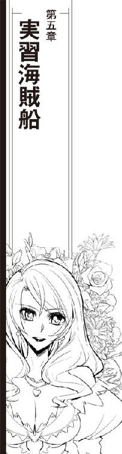
今期三回目になるプリンセス・アプリコット号の襲撃は、いつもの弁天丸の水際立った仕事とも言えず、手慣れた海賊たちによる名人芸でもなかったが、あでやかに仮装した娘海賊たちの初々しい仕事ぶりは茉莉香も今まで聞いたことがないほどの大喝采を受けた。
細かいトラブルは山のようにあった。ドッキングアームの打ち込み直前にポイントずれが発覚して緊急修正したがあやうく獲物の船腹に傷を付けかけたり、ドッキングブリッジの伸張速度が速すぎて相手の受け入れがぎりぎりだったり、船内気圧を完全に合わせきらないうちにドアを開けてしまったから断熱膨張した船内与圧大気が瞬間的に霧になったり、いざ乗り込んだとなったら奔放な乗組員たちのアドリブ満載の海賊行為は茉莉香の胃に穴を空けかねないほどのものだった。
弁天丸からプリンセス・アプリコット号に乗り込んだ海賊たちは、全員がてんで勝手な武器を手にしていた。どこから持ち出したのか新素材のボウガンやレーザーサーベル、骨董品証明書付きの古式刀などについては、保持者が扱いに慣れていることを確かめた上で茉莉香が所持を許可した。しかし、小は指輪の仕込みレイガンから大は身長より長大な大口径ビームライフルやプラズマバズーカまで、主に見た目のインパクトを重視してヨット部員たちが選択した銃火器については茉莉香が実射を禁止、そのすべてのモードを破壊力を発揮しないデモンストレーションあるいは空射ちに設定してロックした。
乗り込んだ海賊娘の中で、実効破壊力があるビームガンを持ち込んだのは茉莉香だけである。
予定外の非常事態が発生した時に、実力行使できるのが一人だけ、という事態は今までの弁天丸では有り得ない。しかし、万が一の事態の時に素人が銃火器を持ってその威力を発揮するよりは、海賊としての仕事が失敗する方がトータルでの損失が少ないだろうというのが茉莉香の判断だった。
それぞれ志望の銃火器についての取扱説明を受け、弁天丸内の射撃練習場で最低限の射撃訓練を行なった部員たちは、意外なほど抵抗なく携行火器のパワーロックを受け入れた。
そして、何をやっても自分が仕事先の豪華客船を破壊する心配はないという安心感からか、これが最初の海賊行為になるはずの部員たちは実にのびのびと海賊役をこなし、茉莉香のデビュー戦を上回る拍手喝采を浴びたのである。
ドッキングオフして離れると同時に、小妖精のコスチュームのまま操舵手席に戻ったアイは、プリンセス・アプリコット号の展望ドームの目の前で弁天丸の巨体をくるりと一横転させるという離れ業を見せて、娘海賊たちの初陣に華を添えた。
離脱後に船長からの感謝状が届くほどの好評を得て、弁天丸は免許資格を保持するための海賊を無事に終えた。
弁天丸の海賊たちがプリンセス・アプリコット号から奪ったのは、乗客たちの保険付き宝飾品だけではなかった。あらかじめ茉莉香がハロルド・ロイド保険組合のエージェントを通じてプリンセス・アプリコット号に依頼していたこともあり、海賊たちは生鮮食品、調理済み料理及び大量のお菓子類をコンテナで弁天丸に運び込んでいた。
仕事を終えた海賊船は、可能な限り速やかに獲物から離れなければならない。手筈どおりにドッキングオフしたプリンセス・アプリコット号から急速離脱した弁天丸は、ちょっとばかり仕事に手間取ったおかげで最初の予定より遅れて超光速跳躍に入ってどこへともなく消えた。
弁天丸は、銀河回廊を進むプリンセス・アプリコット号と逆方向に跳躍して追跡を撒く手に出ていた。これが本当の海賊行為ならさらに数度の跳躍を重ねて追跡を振り切るために航跡を散乱させるところだが、プリンセス・アプリコット号とのランデブーから営業終了後の跳躍まですべて航路管制局に飛行計画を提出済みの法定どおりの飛行なら、その必要もない。
最後の跳躍が無事に終了して、茉莉香は海賊ミッションの成功を宣言した。
そして、弁天丸がたう星系を出港して以来、最大規模の打ち上げパーティーが開始された。
船長としての立場上、そしてなにより今回の海賊航海を仕掛けた張本人として、茉莉香が食堂及びその周辺を会場として開かれるお祭り騒ぎに参加しないわけにはいかない。海賊船船長としての責務を果たした解放感もあって会場を飛び廻っていた茉莉香は、休みらしい休みもなしにぶっ続けに行われていた準備作業の疲れから脱落者が何人か出はじめた頃になって、船長室に引っ込んだ。
遠慮がちなノックの音で、デスクの椅子に深くもたれていた茉莉香ははっと我に返った。
「どうぞ」
茉莉香は、ロックどころかまともに閉じてもいない船長室のドアに声をかけた。
「見てのとおり、開いてるわよ」
「ちょっといいかい？」
控えめにドアを開けて現れたのは、まだ旧世紀の女騎士のコスチュームのままライトアーマーも外していないリンだった。
「話があるんだけど」
「ぶちょ？」
派手めな化粧を落としてもいない長身の女騎士に、こちらも船長服のままの茉莉香は思わずデスクから立ち上がった。思い詰めたような表情のリンは、後ろ手に半開きだった船長室のドアを閉じた。
「どうしたんですか？」
「海賊船弁天丸に仕事の依頼だ」
「お仕事？」
茉莉香はオウム返しに訊き返した。
「......ですか？ 今の弁天丸で？」
ひと仕事終えたとはいえ、弁天丸の現在の乗組員は軒並み非正規員である。海賊船としてまともな仕事ができる状態だとは、船長である茉莉香ならずとも考えられない。
「豪華客船を襲うとか、そんな面倒な仕事じゃない」
硬い表情のまま、リンは言った。
「ひと一人、連れ出して逃げられればそれでいい」
「それくらいなら......」
答えかけて、茉莉香は部長の顔を見た。
「っと待って下さい！ わざわざ海賊船にそんなことやれってことは、まさか誘拐の依頼ですか!?」
「誘拐......」
リンは目を伏せて笑った。
「になる、な」
「あの、海賊っていったって海明星の独立戦争の時の海賊免許をどさくさに紛れてなんとか延命してるってだけで、ほんとうに犯罪としての海賊行為やっていいわけじゃないんです」
茉莉香は慌てて言い訳を重ねた。
「そりゃ、お仕事として豪華客船襲ったりどっかの星系軍と戦ったりしますけど、それは客船会社との契約だったり演習の仮想敵とかで、決して好き勝手な犯罪やってるってわけじゃ......」
リンは顔を上げた。
「依頼主の同意があれば、誘拐を装っての送迎も請け負うんじゃないのかい？」
「それは、まあ......」
なんと説明したものか考えながら、茉莉香は部長から目を逸らした。
「誘拐っていったって、傍から見ればそう見えるかもしれないってだけで、ほとんどの場合は客船からの乗り換えのお急ぎの旅だったり、あるいは特別な事情で目的地に到着しちゃまずいとか、他に行かなきゃならないとか、そんなのばっかりで、ほんとうの誘拐なんかやりませんよ？」
説明してから、茉莉香は部長の顔を見直した。
「よく、ご存知ですよね」
「海賊免許を持っている海賊が行う誘拐が、出来レースだってことくらいは知っている。それはつまり、依頼側と誘拐側の同意があれば、誘拐に見せかけた連れ出しが可能だってことだろう」
「いえ、ほんとに誘拐するのなら、船からの誘拐ならその船を運航してる客船会社や警備母体に、星の上からなら地元の警察組織に了解を得る必要があります。あと、保険組合にも事情を説明しておかないと、お仕事できなくなっちゃう」
「誘拐される側の了解なら得ている」
リンは、女騎士の胸のアーマーから一枚の写真を取り出した。
「船は、ディメンド行き中央航路の客船、アルティメット・フェアリー。誘拐して欲しいのはこの人だ」
表を返した立体写真を覗き込んだ茉莉香は、声を上げた。
「ジェニー部長!?」
スーツ姿の立体写真は、見慣れた制服姿の部長よりずいぶん大人びて見えた。立体写真の中で小さな笑顔を見せているのは、先代の白凰女学院ヨット部部長、ジェニー・ドリトルその人に間違いなかった。
「ジェニー部長、じゃなくてジェニーさんをアルティメット・フェアリーから誘拐しろって言うんですか？」
ジェニーの写真を片手に提げたまま、リンはかすかにうなずいた。
「誘拐される側の了承は得てる、って」
リンの言葉を繰り返して、茉莉香ははっと気づいた。
「つまり、ジェニー先輩も、誘拐されるってことを承知してるってことなんですか!?」
「どんな手段を使うかなんて説明してないから、正確には海賊に誘拐されるなんてジェニーは知らない」
思い詰めた顔のまま、リンはかすかに首を振った。
「でも、わたしがジェニーを連れ出すってことなら、ジェニーはなんだって従ってくれる」
「事情を説明してくれますか？」
デスクの前の椅子を指して、茉莉香はシートに腰を下ろした。
「卒業したあとのジェニー部長、確か進学しなかったんですよね？」
先代のヨット部部長であるジェニー・ドリトルは、一流どころの総合大学や専門大学をいくつも推薦で入学できるだけの成績を修めていながら、進学先を決めないまま白凰女学院を卒業した。
「ああ」
女騎士の衣装のままのリンが、マントを敷いて船長室の椅子に腰を下ろした。
「なんでか、知ってるか？」
「いいえ」
茉莉香は首を振った。すぐに結婚するとか、大学を飛ばして専門のコーチ陣を付けて実務経験を積むためとかいろいろと話は聞いたが、どれも噂でしかない。
「噂くらいしか聞いてません。部長って、ヒュー＆ドリトル星間運輸のご令嬢だから、会社のお手伝いするのかと思ってましたけど」
「じゃ、そのヒュー＆ドリトル星間運輸について知ってることは？」
「この辺りじゃ大手、銀河でも中堅どころの運輸会社としか」
茉莉香は首を傾げた。ヒュー＆ドリトル星間運輸が運航している大型の超光速輸送船や高速客船は、海明星中継ステーションでもよく見かける。創業千年、二千年といった老舗までごろごろしているオペレーターの中では創業百数十年の運輸会社は新興の部類に入るが、親族経営にしては積極的かつ大胆な営業方針で、代替わりに関係なく業績は順調に伸びている。
「それじゃ、その営業拡大の方法が同じ親族経営の会社を探して互いに姻戚関係を結び、それを保障としての提携拡大っていうのは？」
さらっとリンの口から出てきた言葉に、茉莉香はさらに首を傾げた。
「いえ、全然。すいません、海賊としてどの会社がどの辺りの空域でどんな商売してるかは気にしてるつもりなんですけど、それぞれの会社の営業方針なんてあんまり気にしてません。......あれ、でも」
茉莉香は、ヒュー＆ドリトル星間運輸という名前から予測されるべき歴史に気づいた。
「ヒュー＆ドリトルって名前が付いてるってことは、最初はヒューさんとドリトルさんがはじめた、ってことですか？」
「最初はヒューさんとドリトルさんは別の会社を経営してたそうだ。手広いながら手堅い商売をしてたヒューさん家を、資金力にものをいわせてのしてきたドリトルさん家が家名とコネクションごと買い取ったのが、ドリトル運輸の最初の乗っ取りだった」
「乗っ取り！」
「って、ジェニーに聞いた」
リンは、苦笑いした。
「以後、ジェニーの家は大家族主義を取って、その一人一人を戦略物資として扱うことで、この辺りだけじゃなくて中央の社交界にまで名を知られるほどに大きくなった。今、ヒュー＆ドリトル星間運輸の経営に関わる一族は百名以上、直接関係のある一族は軽く千人を越えるそうだ」
「一族が全部揃うなんてことがあったら、大変ですね」
茉莉香は目を丸くした。
「ジェニー先輩、そんなすごい一族だったんですか？」
「まあ、父親が経営序列で一七位、ジェニー本人だとさらに上に順番待ちがいっぱいいて二二四位、下っ端もいいところだって言ってたけどね」
「二二四位......」
それがいかなる基準の下に決められた数字か見当もつかずに、茉莉香は目をぱちくりさせた。
「だが、本人は下っ端だっていっても、普段の行動にもガードがつくくらいのご令嬢だし、ヒュー＆ドリトル星間運輸なんて大会社の経営に関わる一族であることは間違いない。だから、生まれる前からドリトル家の人間として輿入れ先も決まっていて、これから先の人生も全部スケジュールが詰まってる」
「すご......」
茉莉香はそれ以上の言葉を思いつかなかった。
「......生まれる前から、誰と結婚してどうなるなんて決定してるんですか」
「もちろん、ジェニーの相手もまだ生まれる前から全部決定してる。名門同士の付き合い、しかも企業経営だの買収合併だのだとデジタルな利害関係が絡むから、それくらい気を長く持って行うのが普通だそうだ」
「そういえば、子供の頃からの結婚話があるって」
茉莉香は、そんな話をジェニーから聞いたことがあるのを思い出した。
「そんな裏事情があったんですか」
茉莉香は、リンの顔を見た。
「でも、ジェニー先輩の人生の予定に、海賊に誘拐される、なんてありませんよね？」
「当たり前だ。どこの親が子供にそんな波瀾万丈な人生スケジュールするもんかい」
「でも、部長は先輩を海賊で誘拐しようとしてる」
「時には、非常手段ってのが必要になる時もある」
リンは手を振った。茉莉香は確認しなければならないことを、まとめてリストにしようとしてみた。
「ジェニー先輩の身柄さえ確保できればいいんですか？ それとも、弁天丸が海賊船としてアルティメット・フェアリーから先輩を誘拐する必要があるんでしょうか？」
「ああ、海賊として豪華客船を襲う、なんて手間かけてくれる必要はない。定期航路の旅客船でも、乗客が希望して交通手段を用意するか、あるいは相応の必要経費を負担すれば寄港地じゃなくても乗り降りは自由なはずだ」
「その規約には、たぶん、正常な運航を妨げない限り、って但し書きが付いてるとは思いますけど」
「さっきやったみたいに、弁天丸をまるごとでっかい旅客船に横づけする必要はない。たぶん、こっちから連絡艇出して迎えにいくか、ひょっとしたら適当なカプセルで乗り出してきたジェニーを回収するだけで済むはずだ」
「それは、そうかもしれませんけど」
茉莉香は、無意識に連絡艇に割り振るべき乗組員を考えている自分に気づいた。通信は依頼人であるリンに任せるにしても、宇宙空間で連絡艇を飛ばす、さらに航行中の大型客船に接近、着艦して元部長を迎えるというフライトを行うのに、正規の資格を持っているものは誰もいない。
「ジェニー先輩、プライベートだとガードが付いてるくらいのセレブだって話でしたよねえ。素直に連れ出せます？」
「手はいくらでもあるさ」
女騎士の扮装のままのリンはにやりと笑った。茉莉香はうなずいた。
「それじゃ、次の質問です。ジェニー先輩を首尾よく客船から連れ出して、弁天丸にお迎えしたとして、そのあとはどうするんですか？」
「宇宙大学に、ジェニーを連れていく」
「宇宙大学に？」
茉莉香は首を傾げた。宇宙大学と名前が付いている教育機関は銀河系の内外にそれこそ無数に存在するが、ただ単に宇宙大学とだけ呼ばれるものはひとつしかない。
「ジェニーは、宇宙大学の入学資格を取得している」
茉莉香は思わずデスクから立ち上がった。
「凄いじゃないですか！ 宇宙大学っていったら全銀河からエリート中のエリートが集まるところ、うちの学校から宇宙大学に入った人なんて創設以来数えるほどしかいないはずなのに、ジェニー先輩ったらいつの間に......」
「在学中の最後の長期休暇で、最終の入学試験をパスしたそうだ」
リンは遠い目をした。
「試験を受けるだけで推薦が必要なのに、その上、数次にわたる念入りな入学試験。宝くじみたいな確率の合格者しか出ないってのに、よく突破できたもんだよ」
「なのに、宇宙大学に行かないんですか!? なんてもったいない」
「誰だってそう考えるさ。でも、残念ながらヒュー＆ドリトル星間運輸を支配するドリトル一族はそうは考えなかった。宇宙大学の入学試験にパスした娘を祝福するだけ祝福して、最初のスケジュールどおりの人生を歩ませようとしている。だから、わたしはせめてジェニーが自分の道を歩めるように手助けしてやりたい」
まっすぐに自分を見つめるリンの目を見て、茉莉香は注意深く言葉を選んで質問した。
「もし、ジェニー先輩が自分の人生を歩もうとしたら、先輩の一族はそれを受け入れますか？」
リンは答えなかった。
茉莉香は答えを待った。
リンは口を開いた。
「おそらく、実力を行使してでも彼女にスケジュールどおりの人生を歩ませようとするだろう」
「つまり、その実力行使に対するために海賊船が必要なんですね？」
リンは答えなかった。
茉莉香は、ヒュー＆ドリトル星間運輸が全銀河を駆け巡る自社の輸送船団を護るために強力な護衛艦隊を装備しているのを知っていた。傘下には辺境区での侵略を商売とする侵略会社もいくつか存在するはずである。
「本来の乗組員が揃ってる時の弁天丸ならともかく、今の弁天丸で、ジェニー先輩に行使される実力に対抗できますか？」
「今の弁天丸が本来の戦闘力を持っているかどうか知っているのは、弁天丸に乗っているわたしたちだけだ」
言ってから、リンは苦笑いして首を振った。
「いや、病院船に隔離されているはずの本来の乗組員さんたちも、知っているはずか」
「弁天丸が実際に戦えなくてもいいんですか？」
茉莉香はリンに訊いてみた。リンは船長のデスクの向こうの茉莉香に顔を上げた。
「もし、弁天丸がほんとうにヒュー＆ドリトル星間運輸の護衛艦隊と一戦交えなきゃならなくなったら、その時点でわたしとジェニーの負けってことだよ。どんな展開になるかはわからないけれど、連中が実力を行使しようと思ったら、その前に必ず交渉する機会があるはずだ。交渉して、説得さえできれば、ジェニーを宇宙大学に連れていける」
「交渉して、説得できるような相手なんでしょうか？」
茉莉香は心配そうに訊く。
「ジェニー先輩だって、あれだけ頭の切れる人が、今までに自分の進路問題を相談してないはずがないと思うんですけど」
「説得できてないから、設定軌道まっしぐらな人生なわけさ」
リンは肩をすくめた。
「だから、ジェニーも自分の家族に対して行使するだけの実力がある、ってことを見せなきゃならない。実力をちらつかせなきゃ交渉の席にもつかない相手ってのは、どこにでもいるからな」
「はあ」
「しかしまあ、当面必要なのは、ジェニーを大学星系まで送り届けることだけだ」
リンは、デスクの前のソファに沈み込んでちょいと指先を廻した。
「星系内に入れば、大学星系は銀河帝国の教育機関として独立と治外法権が保障されている。正式に宇宙大学の学生になれば、私設軍隊だろうが警備艦隊だろうが、うっかり手が出せなくなる」
「手を出す人は、相手がどこのなんだろうと構わず実力行使に出ますよ」
茉莉香はつられたように笑った。
「宇宙大学を敵に廻す、ってことは帝国を敵に廻すことになりますからね。帝国領内で営業している大手運輸会社がそこまで無茶をやることはないでしょう」
「まあ、表立って実力行使できないとなれば、あそこほどの会社ともなれば裏でいくらでもやる手はあるだろうけどね。でも、何をやるにしてもとりあえず時間は稼げる。ジェニーは、宇宙大学の経済学部に入る予定だ。彼女がそこで勉強することが、彼女に予定されている人生よりも巨大な利益を生むことさえ彼女の一族に納得させられれば、すべて丸く収まるはずだ」
リンは、視線を茉莉香に正面から向けた。
「引き受けてくれるか？」
茉莉香は、ちょっと考え込んだ。
「最後の質問です。リン部長やジェニー先輩相手にこんなこと訊きたくないんですけれども」
茉莉香は、申し訳なさそうに目を逸らした。
「この件に関する報酬は何になりますか？」
「将来ジェニーとわたしが生み出すであろう資産の、最初の一〇年の粗利益の一割」
茉莉香は、リンに視線を戻した。
「......それは、部長じゃなくてジェニー先輩の考えですか？」
あ、と口を開いてから、リンはうなずいた。
「当たりだ。なんでわかった？」
「部長の口から、経済用語が出てきたから」
「海賊船をまるごとプライベートな目的で雇うために必要な経費ってのが、どれくらいか見当もつかなかったんでね。同規模の軍艦の運行経費を元に計算して、わたしたちの予測年収と比べてみた。軍艦を動かす場合よりも一桁多い報酬になるはずだ。......足りるかい？」
「部長と先輩の未来に、値段なんか付けられるもんじゃありません」
茉莉香はゆっくり首を振った。
「それに、それは海賊船である弁天丸に対する報酬ですよね？ どうせ原価償却なんか海賊船になる前に終わってるような宇宙船なんだし、維持に苦労してるのは毎度のことだけど、将来っていうんじゃ漠然としすぎてて困ります」
リンは難しい顔をした。優しい顔で、茉莉香は続けた。
「部長に報酬を払っていただけるとしたら、それを受け取るのは弁天丸じゃありません。今の弁天丸を動かしている、今の乗組員です」
「今の乗組員に......」
リンは、茉莉香を見て、船室内を見廻した。
「つまり、うちの部員たちに!?」
「はい」
茉莉香はにっこりとうなずいた。
「海賊って、船長の一存でお仕事決めるわけにいかないんです。他はどうだか知らないけど、少なくとも弁天丸はそういうことになってます。だいたい、今のあたしは海賊免許のために船長役やってるだけで、今の弁天丸がこの一〇〇年くらいどんな仕事してきたのかもよく知らないし、どんな仕事しなきゃならないのかもよくわかってません。だから、お仕事は乗組員のみんなと相談して、みんなの意見を聞いて、納得してから受けることにしてます。たぶん、今回のお仕事、みんなを納得させるのにいちばん手っ取り早いのは、事情を説明するよりもなによりも目の前の報酬だと思います」
「なるほどね」
リンは、茉莉香がヨット部員を弁天丸の臨時雇い海賊としてスカウトするにあたり、練習帆船オデット世ではなく超光速機関を持つ歴史的な海賊船に乗れることと同時に、正規乗組員としての報酬も約束したことを思い出した。
「仕事させるなら、目の前にいい餌ぶら下げろってことか」
「餌も大事だけど、もうひとつ、肝心なことがあります」
茉莉香はデスクから立ち上がった。
「乗組員のみんなにいい仕事してもらおうと思ったら、やりやすい環境とやる気になるだけの報酬がいちばんです。みんなまだたぶん食堂で騒いでると思いますよ。事情を説明するなら、今のうちがいいんじゃないかな」
「あ、あー」
リンはソファに沈み込んだまま難しい顔で目を落とした。
「今はまだ、やめといた方がいいんじゃないのか？ 船長は呑んでないみたいだし、わたしも入れてないけど、酒入れてるのも何人かいるぜ？」
「あら、だったら今が断然チャンスだわ」
茉莉香が手配した食料品の中には酩酊成分を持つ酒やスイーツは入っていない。しかし、弁天丸の食料庫には酒も備蓄されているし、個人的な持ち込みは禁止していない。
海賊成功の打ち上げパーティーの開始直後から、部員たちの間に強いのやら弱いのやら各種酩酊飲料が廻っていたのは茉莉香も知っていた。しかし、船長としては見て見ぬふりをしていた。
「お仕事お願いする時のもうひとつのコツは、ノリのいい時に勢いに任せて雰囲気作っちゃうことです」
船長席のドアの前まで来て、茉莉香はリンに向き直った。
「どうしますか？ 明日、二日酔いやら寝不足やら体調崩して暗くなってる乗組員に事情説明するのと、今、呑んだくれて盛り上がってるみんなを乗せるのと、どっちにしますか？」
「悪い船長だ」
呆れたように茉莉香に笑って、リンは勢いよくソファから立ち上がった。
「そうなると知ってたら、勢いつけるのにちっとは呑んどきゃよかった」
「部長、なんで呑んでなかったんですか？」
「ひと仕事終えた海賊船で外宇宙飛んでたら、いつ何が起きたって不思議じゃないのに、部長で電子戦担当が呑んでられるもんかい」
茉莉香の横から腕を伸ばして、リンが船長室のドアを開けた。
「茉莉香だって、船長だから呑んでないんじゃないのかい？」
「ええ、まあ、こういう時は誰か面倒見なきゃならない人が必要ですし、今回はたぶんそれあたしの役目だと思うし」
「さあて、それじゃあ悪い船長の入れ知恵に従って、うちの可愛い部員どもを悪の道に引きずり込みにいこうか」
すらりと背が高い女騎士は、小柄な海賊船長の肩に腕を廻して船長室から出た。すぐ近所の食堂からどっと上がった笑い声が、開けっ放しの通路を通じて聞こえてくる。
「そうそう、悪いことする時は、ちゃんと責任とる覚悟もしておいて下さいね」
「わかってるって」
茉莉香の肩を抱いたまま、リンは空いている方の手で茉莉香の頭を撫でた。
「ちゃあんと、覚悟はしてるさ」
「んー、逃げないように見張ってなきゃ」
食堂は、宴たけなわというよりも阿鼻叫喚の惨状を呈していた。乗組員の大部分を動員して行われた海賊行為の時の仮装そのまま、メインディッシュはあらかた片付けられたのにまだ豊富な在庫を誇るケーキやフルーツポンチ、冷たいのや熱いのや色とりどりの飲み物を肴にいくつもの話の輪ができて、一画では持ち込まれたマイクロオーディオシステムを情報システムに接続してのカラオケ大会が開始されている。
どこに行けばいいのか戸惑ったように、リンが一緒に来た茉莉香を見た。茉莉香は、武装バニーガールが懐かしめのヒーローポップをきれいなソプラノで歌っているカラオケセットを指してみせた。
意を決して、リンはカラオケ大会に飛び込んでいった。一曲歌い終わった武装バニーからマイクを受け取って、小型コンテナを寄せ集めた急拵えのステージに上がる。
拍手を受けて、リンは食堂を見廻した。つい小指を立てたまま、マイクを口の前に持ってくる。
『ニューヨークに、行きたいかあ!?』
カラオケステージのまわりでどーっと拍手が上がった。茉莉香はこっそり頭を抱えた。
「......何を言い出すんだか」
何を言っても受ける状況だと判断したリンは、観客を制するように両手を挙げた。
『みんなに、次の仕事のお知らせだ』
リンは、自分の台詞を待つ部員たちの顔を見廻した。
『さっき、船長にも話した。今度は、先代部長のジェニーを助けにいく！』
「ちょっと」
横から小突かれて、茉莉香は難しい顔をしているチアキに向いた。
「何？」
「何じゃないわよ。何よ、あれ」
チアキは、ステージ上で一席ぶちはじめたリンを指した。
「一緒に来て黙って見てるってことは、事情は承知してるってこと？」
「ええ、まあ、いちおう」
『そこでだ、次は豪華客船からジェニーを誘拐する!!』
テンションは上がるだけ上がっているから、箸が転がるどころか目と目が合うだけでも大受けする観客相手に、リンは景気よく拳を突き上げた。チアキは、リンを見て、茉莉香に目を戻した。
「......あれ、何？」
「だから、弁天丸の次のお仕事」
「誘拐する、って聞こえたけど？」
「うん、たぶんそうなる......実際に船に乗り込んでの誘拐じゃないとは思うけど」
問い詰めるように、チアキの声が低くなった。
「そのあとは？」
「決まってない」
茉莉香は愛想笑いを浮かべた。
「んーと、宇宙大学に送り届けるってのが部長の依頼だけど、成り行きまかせになるわよねえ、たぶん」
「あんたねー！」
声を上げかけて、チアキは辺りを見廻した。茉莉香の二の腕を捕まえて、食堂の外に引っ張り出す。
「ちょっとこっち来なさい！」
「わ、引っ張らなくても付いていくってば、そんなにあわてないで」
食堂の外に出ただけで、チアキは茉莉香を通路の壁に立たせた。
「アドリブ仕事引き受けるって、本気!?」
チアキは茉莉香に詰め寄った。息が酒臭い。
「チアキちゃん、呑んでるの？」
「あんな大仕事のあとだもの、少しくらい呑むわよ！ 子供の頃から親父の晩酌に付き合わされてたんだし、酔っ払うほど呑んだくれてもいないんだから心配いらない！ それより茉莉香、あなたこんな素人しか乗り込んでない海賊船で、シナリオが決まってる営業ならともかく何がどう転ぶかもわからないアドリブ仕事がどれだけ危険か、想像もできないわけじゃないでしょ!?」
「アドリブ仕事って言うんだ」
「成り行きまかせでどうなるかわからないような仕事を、うちの宇宙船じゃそう呼んでるだけ！」
チアキは、茉莉香の船長服の胸ぐらを掴んだ。
「今のこの宇宙船には、促成栽培の素人ばっかりで、まともな海賊なんか一人も乗り込んでないのよ!?」
チアキは、茉莉香の人差し指が自分に向いているのに気づいた。
「チアキちゃん、まともな海賊」
チアキはがっくり首を折って重い溜息を吐いた。
「バルバルーサ乗組員のはずのわたしが、なんでこんなところで他人の海賊船の海賊ごっこに付き合ってられると思うの？ わたしがいなくても、バルバルーサが海賊するのに何も不自由しないからなのよ」
「そー？ そんなことないと思うけど。チアキちゃんやっぱり酔っ払ってる？」
「あなたよりはなんぼか長く海賊船に乗ってるけどね、プロの乗組員に比べたらわたしなんか員数外扱いの半人前だってこと！ 本職の海賊ってのがどれだけ化け物じみた技倆と経験持ってるか、知らないわけじゃないでしょう!?」
「ま、確かにうちの乗組員もたいがい規格外ばっかりだとは思うけどさあ」
茉莉香は、リンの勢いに任せた演説に盛大な拍手が起きている食堂へちらりと目を走らせた。
「うちの新人たちも、結構な人材揃いだとは思わない？」
「たった一回のシナリオ仕事こなしたくらいで舞い上がるんじゃないわよ！ 船長のくせに、どんな仕事ぶりだったか見えてないわけじゃないでしょ！」
「あたしの、最初の時よりはマシだったと思う」
茉莉香は、どっと笑い声が聞こえてきた食堂に指先を向けた。
「舞い上がってるのは、うちの乗組員たち。いいんじゃないのかなあ。大仕事こなしてこのあと帰るだけって言ったら、タイムリミット付きの海賊のお仕事しなきゃならないからなんとか保ってた緊張感途切れちゃうかも知れないし、目標がある方がみんなもやりやすいだろうし」
「ただでさえ、こんな古い超光速宇宙船まともに動かすだけでみんなあんな苦労してるのに、余計な仕事まで背負い込んで緊張感もなにもあるもんですか！ 何と引き換えに予定外の仕事引き受けようなんて気になったのよ！」
「引き換え？ って、ええと」
「わたしたちは趣味で正義の味方やってるんじゃないんですからね、海賊が仕事依頼されたら、報酬受けるのが常識よ。いったいどんな報酬ぶら下げられて、素人だらけの海賊船にこの上、アドリブ仕事させようなんて気になったの？」
茉莉香はすぐ目の前のチアキから目を逸らして小声でつぶやいた。
「未来......かな」
「え？」
「だから、ジェニー先輩と、リン部長の未来」
チアキにまっすぐ目を戻して、茉莉香ははっきり言った。
「ええ？」
聞き取れなかったのではなく、チアキは何を言っているのだという顔で茉莉香を見返した。
「もし、部長の言うとおりジェニー先輩をうまく連れ出して宇宙大学まで送り届けられたとしても、いちばんうまくいって大学卒業までの時間が稼げるだけかも知れない。でも、それは先輩が自分のやりたいことをできる貴重な時間になるはずでしょ。たぶん、リン部長にとっても」
「いくら政略結婚が嫌だからって、その発想ってあんまり子供じみてない？ 結婚したって、家に入ったって、やりたいことはできるはずよ？」
「そりゃ、まあ、普通の結婚をして普通の家庭に入るならそうなるでしょうけど、ヒュー＆ドリトルみたいな大手の会社経営してる一族になると、生まれる前からスケジュールが全部決められてるんだって。もし、先輩のやりたいことが予定されてるスケジュールと違っていたら、やりたいこともできなくなるんじゃないかしら」
「ふーん」
チアキは少し考え込んだ。
「一族がやらせたいことと、子供がやりたいことが違うんだとしたら、それはたぶん育て方間違えてるわね。子供に予定どおりの人生歩ませようと思ったら、ちゃんと子供が言うこと聞くように育てなきゃ」
「それはそうだと思うけど、でも、まあ、ああいう人たちの教育方針はたぶんあたしたちにはあんまり関係ないから」
「そういうご家庭がそんな教育方針だから、せっかくのご令嬢が家訓に逆らって出奔しようとしてるんでしょ」
茉莉香から離れたチアキは、隣の壁にもたれかかった。
「巻き込まれてるって立場を少しは自覚しなさい！ いい迷惑なんだから」
「スケジュールはちょっとタイトになるけど、帰還予定延ばそうってわけじゃないし、大丈夫だと思うんだけど」
「あの天才ハッカーの部長が言い出したんだから、関係ありそうな事項は全部考察済みなんでしょうね。でも、ただでさえ余裕があるスケジュールってわけじゃないのに、もし何かあったらどうするつもりよ」
「そういうことは、何かあってから考える」
茉莉香は申し訳なさそうな笑顔を浮かべた。
「起きてもいないことまで心配してたら、身体が保たないもん」
「保険会社には、なんて説明するつもり？」
「部長の依頼を、そのまんま」
茉莉香は自分に言い聞かせるようにうなずいた。
「だって、隠していい理由なんにも思いつかないもの」
「弁天丸のエージェントは、事情を知っているのよね？」
定時連絡で顔を合わせるから、チアキもエージェントの顔は覚えていた。海賊を終えてからの超光速航行のタッチダウン後に、茉莉香がハロルド・ロイド保険組合にミッション完了の連絡を入れたのも目の前で見ている。
「弁天丸に正規の乗組員しかいなくて、間に合わせの臨時雇いでかろうじて飛んでるだけ、って事情なら、もちろん知ってる」
茉莉香の声が低くなる。
「だって、乗組員みんな病院船に隔離されちゃってるのに海賊しなきゃならないって最初に知らせてくれたの、ショウさんだもの」
「海賊相手のエージェントなら実力も実績もあるでしょうに、こんな海賊航海に黙って送り出すなんてずいぶん神経の太い爆発頭ね」
茉莉香は噴き出した。
「もし、エージェントに反対されたら？」
「そしたら、もちろんこの話はなし」
茉莉香は、船長服の袖をめくって腕時計を見ようとして、していないのに気づいて懐中時計を取り出して見た。
「起きてるかな？ エージェントは眠らない、って言ってたから、大丈夫かな？」
茉莉香は、チアキとともに弁天丸のブリッジに行った。当直でレーダー／センサーと操舵手席に着いていた二人に、ちょっとの間だけの交替とパーティーでの飲酒厳禁を伝え、ブリッジを占有する。
船長席に上がった茉莉香は、ハロルド・ロイド保険組合への暗号回線を開いた。個人通話で、弁天丸専用の代理人であるショウを直接呼び出す。
アフロヘアの怪人は、いつにもまして派手なスーツで通信モニターに現れた。
『よう、大喜びのお座敷から廻ってきた記録画像、やっと見せてもらったぜ。このまんま娘海賊一座で売り出すってのはどうだい？』
「あら、ほんとうにいいんですか？」
茉莉香は、ちょっと顎を引いて通信モニターの向こうのショウに首を傾げてみせた。
「実は、もうすぐ次の仕事やってくれってお願いされてるんですけど」
『ええ？ ちょっと待て』
ショウは通信モニターの向こうでコントロール・パネルに指を走らせた。弁天丸関係の情報を確認する。
『うちを通しての仕事の依頼じゃない、ってことは、そっちに直接飛び込みでお座敷でもかかったのか？』
「今の弁天丸の乗組員から、直接の依頼です」
茉莉香は、真面目な顔をショウに向けた。
「白凰女学院ヨット部の現部長から、前部長の誘拐、及び護衛しての送り届けを頼まれました」
『ほお、ちょっと待て』
通信モニターの向こうで身を乗り出したショウが、恐ろしい勢いでコントロール・パネルの操作を開始した。
『確か茉莉香船長のいるヨット部の部長ってのは、中学の頃に公共ネットにクラッキングやらかしてぱくられた経験がある、凄腕の電子屋じゃなかったか？』
「......よく知ってるわね」
ショウ相手の通信モニターに映らないように船長席の前に立って情報パネルに肘と顎を乗せていたチアキがこっそりつぶやいた。
「そりゃあ、ショウさん、下調べきっちりの人だもの」
茉莉香は、ハロルド・ロイド保険組合に現在の弁天丸の乗員名簿を提出してはいない。しかし、茉莉香が弁天丸の船長候補として浮上した時点で、保険組合は収集できる限りの情報を分析評価しているはずである。その中に、過去何年分かの白凰女学院ヨット部員名簿、のみならず女学院全部の生徒のデータファイルがあっても不思議はない。
「それで確か先代の部長ってのは、名門のお嬢さま......」
通信モニターの向こうで、ショウの動きが一瞬止まった。
「おい、こいつは」
「あ、ヒュー＆ドリトル運輸を敵に廻しての営利誘拐とかじゃありませんから」
茉莉香は慌てて言い訳した。
「依頼主は、今の部長のリン・ランブレッタと、それから先代部長のジェニー・ドリトルです」
言ってしまってから、茉莉香は付け加えた。
「ええと、つまり誘拐される当人からの直接の依頼だ、って聞いてます」
『その誘拐が、当人からの依頼だって信用できる証拠はあるかい？』
実用になっているとは思えないサングラス越しのショウの視線を感じて、茉莉香は船長席の前に立っているチアキと顔を見合わせた。
「今のところ、部長の話しかありません」
茉莉香は正直に答えた。
「でも、リン部長と前部長のジェニー先輩の仲がいいのはみんな知ってます」
『ジェニー・ドリトル本人に確認とるのがいちばん確実なんだが、あんなセレブな一族が相手じゃ通信記録なんぞは全部モニターされてると考えるべきか。こっちからうっかり問い合わせたら、せっかくのお膳立てぶち壊しにするかもしれん。よし、今持ってる限りの資料を渡せ』
「えええ？」
茉莉香は、確認しなければならない情報もないのに船長席まわりを見廻した。
『うちはヒュー＆ドリトル運輸とだって付き合いはあるんだ。当人からの依頼とはいえ嫁入り予定の箱入り娘の脱走幇助なんぞしたら、こっちの指示じゃないことがわかってたって取引切られる危険もある』
「資料だなんて言われたって、あたしだって部長から聞いただけですし、あの、なんなら直接部長呼んで話聞きます？」
『ああ、まあ、部長が部員に海賊の依頼するのに必要書類揃えてくるはずもないか』
ショウが考え込んだのはほんの一瞬だった。
『リン・ランブレッタに事情を聞くのはあとの話だ。当人の依頼だからって、誘拐相手がそんな大御所のご令嬢じゃ話がややこしすぎる。多方面にわたる影響ってやつを念入りに検証しなきゃならん。こっちでも調査が必要だ、依頼人との面談は次の定時連絡にしよう』
「わかりました。リン部長に、何か伝えておくことはありますか？」
『依頼人に、呑みすぎないように伝えてくれ』
モニターの向こうで手を振ったショウは、ふと乗り出した。
『ちょっと待て、肝心なことを確認しなきゃならない』
「なんですか？」
『弁天丸は今、茉莉香船長の指揮下にある。宇宙船をどう動かして、何をやるかの指揮権は船長にある。もし、うちが――ハロルド・ロイド保険組合が、今回の件に反対したら、どうする？』
「今回の航海であたしが守らなければならないのは、まず乗組員の安全、次に海賊船の資格だと思ってます」
幾度も考えた優先順位がすらすらと口から出た。
「だから、もしショウさんが反対なら、あたしはそれに従うつもりです」
ショウは、派手なサングラスの向こうから、しばらくじっと茉莉香の顔を見つめた。
『オッケー。そいつが聞ければ安心だ。それじゃあ、次の定時連絡まで無事に生き延びてくれ。じゃな』
保険組合との暗号回線は通常の処理手順で切断された。
「部長のお願いより、保険組合の言うことが優先？」
チアキは、船長席の前面パネルに片肘をついたまま通信を切った茉莉香を見た。
「いい子じゃん」
「どうするかもわからないんだから、そう答えておくのがいちばん無難でしょ」
茉莉香は船長席のパネルに指を走らせた。
「それとも、優先順位の設定、間違えてる？」
「間違えてない」
チアキは、船長席にくるりと背を向けて両肘をパネルにかけてもたれかかった。
「リン部長も、同じように考えてくれてるといいね。何やってるの？」
「アルティメット・フェアリーの現在位置の確認。ヒュー＆ドリトルみたいに手広くやってる大手なら、運航情報公開してくれてるってのはやりやすくていいわ」
「念のための下調べだなんて、だいぶ海賊商売が堂に入ってきたんじゃない？」
「よしてよ。臆病で心配症だから、できるだけのことはしておきたいだけ」
公共ネットで検索したら、中央航路のアルティメット・フェアリーの運航情報はすぐに出てきた。運航表どおりの予定で順調に航行中。
「今は、半日の予定でメルトライン中継点に入港中。部長がどういう手筈考えてるか知らないけれど、ランデブーするとしたら次の港との間かな」
翌朝。徹夜組が出るだろうことを見越して、夜遅くまで付き合ってから寝室に使っている船長室に引っ込んだ茉莉香は、緊急呼び出しのけたたましいブザーに睡眠を破られた。
「えー、あー、うー」
寝が足りていないから呂律もうまく廻らない。ソファを変形させた兼用ベッドからシーツをまとって這いずり出た茉莉香は、デスクの上の船内通信システムを反対側から手探りで押して応答した。
「はあい、船長室」
『こちらブリッジ、おはようございます茉莉香船長』
船内通信の向こうのグリューエルの声からは、微塵の眠気も感じられない。
『申し訳ありませんが大至急船長の判断を仰がなければならない事態が、あれ？ 茉莉香さん？』
「だいじょうぶ、聞こえてる」
通信モニターのカメラから外れているのをいいことに大あくびをかましながら、茉莉香は応答した。
「カメラの反対側にいるの。寝起きだから、ちょっと、見せられるような格好じゃなくて」
『非常事態よ、船長！』
横からマイクをひったくったようにチアキの声が飛び込んだ。
『大至急ブリッジに来て！』
「わかった、ええと、船長服着て、身支度するから五分待って」
『どんな格好でもいいからすぐにブリッジに来なさい！ ジェニー部長、もう来ちゃったわよ！』
一発で眠気がどこかに飛んだ。
「なんですって!?」
『ジェニー部長、じゃなくて元部長が、すぐそばまで来ちゃってるの！』
前回のオデット世での練習航海の時に、ジェニーはヨット部部長として船長役を務めている。その時にはチアキも新入部員として乗り込んでいたから、まだその感覚が残っているらしい。
『自主的に無線封鎖してるみたいで状況がよくわからないけど、とにかく拾いにいくんでいい？』
「任せる！」
情報が少なすぎて、何がどうなっているのかすらわからない。茉莉香は自分のところで即決すべき判断が保留される危険を思って指示した。
「すぐ行く。動くのでも跳ぶんでも任せるから、時間最優先でお願い！」
『任せられた！』
打てば響くような返事が返ってきた。
『まずは総員起こしかけるわよ！』
船長室にまで、非常事態発生を告げるサイレンが朗々と鳴りはじめた。
プリントのパジャマに梳かしてもいない寝起きのぼさぼさ頭という、とても他人にはお見せできない姿のまま船長室を飛び出した茉莉香は、非常事態らしく赤いライトがフラッシュしている通路を駆けてまっすぐブリッジに飛び込んだ。
「どうしたのよ、何が起きたの？」
「ジェニーが逃げてきた」
レーダー／センサー席で恐ろしい勢いで両手を動かしているリンが、顔も上げずに答えた。
「え、な、なんですって!?」
パジャマのまま船長席に飛び上がった茉莉香は、情報ディスプレイを見廻した。
「どうやってかわからないが、たぶんどこからか、ええと、昨日のアルティメット・フェアリーの寄港地はメルトライン中継点だから、そこから超光速できる小型宇宙船にでも乗り換えたのか、跳んできたらしい」
「跳んできたらしいって......一人で？」
開発当初は大型宇宙船にしか搭載できなかった超光速機関だが、現代では動力源の十分な小型化と高出力化が進んでいるために単座の戦闘機にでも搭載が可能である。しかし、現実には単座の小型機に超光速機関を搭載して長距離航行を可能にしても長期間航行は困難だし、小型化されているとはいっても重量も嵩む。そのため、超光速機関は長期間航行設備を装備するだけの一定以上の大きさの宇宙船に搭載されることが多い。
ヨット部部長という前歴を考慮しなくても、ヒュー＆ドリトル星間運輸の令嬢であるジェニー・ドリトルなら、一人でも超光速宇宙船を跳ばして望みのポイントに行くことはできるはずである。
「たぶん......ジェニーが一族の中にどれだけのシンパと協力者を得ているかまでは知らないが、ジェニーなら、一人でできることは一人でやるはずだ」
「それで、ジェニー先輩の現在位置は？」
「近所」
使えるだけのレーダーとセンサーをすべて使って統合観測を行いながら、リンは手短に答えた。
「追っ手を怖れているんだろう。一度だけ、現在位置を乗せた指向性のシグナルが弁天丸に届いて、それっきり黙ってる。ジェニーが逃げて行方不明になっているなら、同じシグナルはジェニーの家の護衛艦隊にも届いてる可能性がある。だから、一刻も早く彼女を助け出さなきゃならない」
「そんな」
事態の展開の早さに、茉莉香は声を上げた。
「ジェニー先輩、もうこんなところまで来ちゃったんですか？」
「すまない」
無数のディスプレイに目を走らせながらのひと言に、茉莉香はリンを見た。
「え？」
「弁天丸の船長として、今回の依頼を受けてくれるかどうか、まだ答えてもらってないだろう」
「ここまで来てそんなこと言ってる場合じゃないでしょう」
茉莉香は、船長席にすとんと腰を落とした。
「ジェニー先輩の場所って、すぐに行けそうなところ？」
「跳ぶほどの遠くじゃないわ」
センサー操作に忙しいリンに代わって、チアキが答えた。
「いったいどうやって弁天丸の現在位置を知ったのかわからないけど、メルトライン中継点からじゃ短い跳躍じゃ済まないわ」
超光速跳躍は、長い距離を跳ぶほど精度が落ちる。
「さすが元部長、どうやってこんなに弁天丸の近くに跳んできたのかしら？」
「それは」
茉莉香は、レーダー／センサー席のリンの後ろ姿に顔を上げた。
「海賊仕事終わったあとの弁天丸の跳躍は通常の営業航行だから、正規のルートで調べたって飛行計画たどれば現在位置くらいわかるはずよ」
「飛行計画出してそのとおりに跳んでるなんて、なんて海賊船よ！」
「だって、時々は飛行計画どころか管制局だって無視するような跳び方するんだから、従える限りは航法規則守ってた方がいいでしょ」
ただし、管制局に提出されている飛行計画は出発地と目的地及び跳躍に関する事項だけで、通常航行中の現在位置までが刻一刻と更新されているわけではない。長距離跳躍にそれほどの精度は求められないとはいえ、弁天丸とランデブーしようと思えば弁天丸の現在位置を正確に推定する必要がある。
「この宇宙船が飛行計画どおり跳んでるとすれば、現在位置の推測はそれほど難しくないか」
チアキはちらりとリンの背中を見た。
「あとは、部長が情報横流ししてれば、完璧か」
「遅れました、すいません！」
開けっ放しのブリッジのドアから駆け込んだアイが、空いていた操舵手席に飛び込んだ。シートを操縦ポジションに前進させて操舵準備を開始する。
「捕まえた！」
リンが声を上げた。
「後方、五〇〇万キロ！ トランスポンダーも消して慣性航行中の小型機、メッセージにあった現在位置と誤差の範囲で一致！ すごいなこの宇宙船、この距離で型式まで判別できるぞ」
「装備には金を惜しまない主義なんだそうです」
茉莉香は澄まし顔で答えた。
「超光速ブースター付きの電子偵察機!?」
自動判別結果を見たチアキが声を上げた。
「ちょっと待ってよ、リセオン・ジルコーネのサイレント・ウィスパーっていったら、まだ帝国艦隊でも配備開始したばっかりのちょー新型じゃない！」
「帝国艦隊の機体なの!?」
「トランスポンダーは切れてるから、現時点での所属は不明」
リンが答えた。
「サイレント・ウィスパーなら、帝国だけじゃなくて資金力の豊富な会社艦隊や星系軍に派手に売り込まれてる。ヒュー＆ドリトルの護衛艦隊相手にも、商談が進められてるはずだ」
「試乗機でも乗り逃げしてきたんでしょうか？」
茉莉香は総員起こしのおかげでやっと通常運航のスタッフが揃いつつあるブリッジを見廻した。
「弁天丸は動けるの？」
「核炉の出力はもう上げてあります。通常推進も準備完了！」
寝ていないのか、昨日の海賊の時のくのいちコスチュームのままのヤヨイが機関席で答えた。
「あちこちまだ人数足りてないところもありますけど、動くだけなら問題ありません」
茉莉香から質問する前に、副長席のグリューエルが答えた。
「じゃあ、弁天丸発進！」
パジャマのままの茉莉香は、船長席から立ち上がって命令した。
「ジェニー先輩を、迎えにいきましょう」
「弁天丸発進します！」
「針路反転、縦旋回します」
ヤヨイが通常推進の出力を上げる。コントロールを受け取ったアイが、慣性航行中だった弁天丸を主機と慣性制御システムを併用して上昇旋回を開始させた。弁天丸のような人工重力付きの宇宙船を反転させる場合は、機動によって生じる遠心力を重力の発生方向と一致させるのが操船の基本である。
「部長、目標をジェニー先輩の宇宙船だけに集中させないで、周辺空間に広く開いておいて下さい」
さらに精密に目標座標を絞り込もうとしているリンに、茉莉香が指示した。
「先輩がどうやってここまで来たのかわかりませんが、話どおりなら追われている可能性があります。他の宇宙船の動きと、タッチダウンの前ドライブ現象に注意して下さい」
「あ、わ、わかった、そのとおりだ、追っ手に注意しなきゃ」
「超光速機関は使える？」
「ええと、大丈夫だと思うけど」
「今から跳躍準備開始すれば、小型船の回収完了と同時に跳べます」
グリューエルはより的確な報告を返した。
「目的地の座標を下さい。......今回は、飛行計画の予定を前倒ししたり、変更を管制局に届け出ない方がいいでしょうね」
「グリューエル、やっぱりあなた、向いてるわあ」
茉莉香は、感心したように副長席で制服をびしっと決めているグリューエルを見た。
「そう、小型艇回収と同時に跳躍します。航跡を追われないように誤魔化しやすい短距離がいいわ。できるだけ紛れ込みやすいような航路帯の中央を狙って」
茉莉香はまだ空席のままの航法席を見た。宇宙図をディスプレイに呼び出して適当な跳躍先を探す。
「......いえ、やっぱり予定どおりの跳躍にします。管制局に、予定前倒しで跳躍するからと、飛行計画の訂正を送っておいて」
「追っ手を撒くために跳ぶんじゃないのか!?」
コントロール・パネルから顔を上げたリンが船長席に振り向いた。
「追っ手がどの程度本気で先輩を追ってくるかわかりませんけど、でも追っ手も先輩も目的地わかってるんですよね？ で、部長も先輩もこそこそ隠れていくつもりはないんでしょう？」
「それは......そうだが」
「だったら、こっちも堂々と跳んでいきましょう。もし方針変更するなら、ジェニー先輩にこの宇宙船に乗り込んでもらって話を聞いてからでも充分間に合います」
弁天丸は、時間最優先の大加速と急減速をかけてトランスポンダーもなしに慣性航行中の小型機に向けて接近した。
距離が縮まるにつれて、センサーはより確実な情報をブリッジにもたらした。タッチダウン直後に超光速機関をシャットダウンしてエネルギー放射を可能な限り低く抑えた最新型の電子偵察機は、航行灯の点滅まで消して息を潜めているように見えた。
「場所がわかってるからなんとか特定できているが、ここまで接近してるのにこの程度の反応しか返さないのかい」
通常モードでも高解像度のレーダーをあれこれいじりながら、リンがつぶやいた。
「ステルスモードでもないのにこんなに小さい反応しかないなんて、なんつー設計だ」
「本気で軍用なんですね」
茉莉香は、光学センサーでディテールまで捉えられた流麗な曲線に彩られた細身の偵察機をディスプレイ上に見ていた。
「正確な寸法って、計測できます？」
「こんな感じだ」
リンが、茉莉香も見ている偵察機の映像に立体スケールを重ねた。同時に全長、全幅、全高の数字も表示される。
「実戦態勢でアンテナだのオプションだのいろいろ拡げていればもっと大きくなるけど、全部伸縮してればこの程度だな」
「ええと」
茉莉香は、容積はそれほどではないものの全長はかなりある偵察機のスケールを頭の中に思い浮かべた。
「うちの格納庫に入るかしら？」
「今のままだと、無理だと思います」
グリューエルが即答した。
「弁天丸の連絡艇と戦闘機が発進態勢で置いてある左舷格納デッキは論外として、今オデット世の連絡艇が入っている右舷格納デッキも今のままじゃあの大きさの機体が入る余裕はありません」
「機体、捨てていくしかないかしら？」
漆黒の宇宙空間に浮かぶ偵察機は、実戦仕様なら黒く塗装されるはずだが、売り込みのためか鮮やかな白銀と朱に彩られている。新品なら同級のクルーザーより一桁から、高価な電子装備まで考えれば二桁ほども高い値札が付いていてもおかしくない機体である。
「あ、右舷格納デッキの空っぽのコンテナをいくつか始末して、あと今入っている連絡艇の固定位置を一番奥まで持っていけば、なんとかぎりぎり収容できるんじゃないかと......」
「じゃ、右舷の格納デッキに、来られる人全員集めて」
茉莉香は船長席から降りた。副長席のグリューエルが振り向く。
「どちらへ？」
「格納デッキのお片付けと、ジェニー先輩のお出迎えにいってくる」
茉莉香はパジャマのままの両手を拡げてみせた。
「ほら、どうせ着替えなきゃならないし、先に宇宙服着てくるわ」
無重量状態の格納デッキで立体パズルよろしくコンテナの場所を前方船体奥側にぎっしり積み替え、さらに固定されていた連絡艇をできるだけ後方奥の隅に移動させることにより、新型偵察機を収納するだけのスペースが右舷格納デッキに確保された。
ただし、細身の機体とはいえ機関部や収納しきれないレーダーアンテナなどもあるため、前後方向はともかく横方向の余裕が計算上ほとんどない。格納デッキのロボットアームと人力で手間をかけて移動させた連絡艇の固定は部員たちに任せ、精密測定用のレーザー測距儀を格納庫内で何度も振り廻して測定された数字をブリッジで確認して、あとは現場合わせで安全を確保することにする。
与圧状態、人工重力のみ切った状態で超特急で行われた片付けのあと、全員を船内に戻して右舷格納デッキを開放する。
デッキ内の空気抜きと開放という手順は部員に任せて、宇宙服にヘルメットを着けた茉莉香は早々に船外作業のためにエアロックから船外に出た。
外宇宙を航行する弁天丸は全天を天の川と星空に覆われ、近傍には天体はない。星系の中なら母星に照らされてはっきり見えるはずの船体も、夜の船のように自分のライトだけで浮かび上がって見える。
すでに右舷側格納デッキを開きつつある弁天丸の船外に出た茉莉香は、弁天丸のライトに照らし出される目の前に鮮やかな白銀色の新型偵察機を見た。
「うっわー」
強力な電子戦機の標準どおり、鋭い機首を持つサイレント・ウィスパーには一切の窓がない。大気圏内航行用の可変翼もアンテナもすべて収納した高速機動形態の新型偵察機は、デモンストレーション用らしい派手な朱色のストライプを入れられてもなお戦闘機としての凄みを発していた。
無線封鎖は続行中である。茉莉香は、宇宙服の腰から引っ張り出した通信ケーブルを、エアロックの気密ドアのすぐ横のアクセスパネルを開いて船内回線に接続した。テンキーを押して通話先を指定する。
『茉莉香よりブリッジ、聞こえますか？』
『こちらブリッジ、聞こえてるわ』
チアキが答えた。茉莉香は、シールドなしの素通しのヘルメット越しに、跳んでいけば手が届きそうな新型偵察機を見た。
『サイレント・ウィスパーを目視で確認。最終接近、開始して下さい』
『もうはじめてるわ』
新型偵察機の進行方向軸線が、弁天丸と並行になるように動いている。弁天丸の艦首側で姿勢制御スラスターがふわりとささやかな光を噴いたのを見て、茉莉香は動いているのが偵察機ではなくて弁天丸だと思い直した。
『一切相手が動かない前提で、デッキに獲物を呑み込む要領でアイちゃんに接近してもらってる。ただ、客船の時と違って今回は相手がちっちゃいから』
『手が届くくらい接近したら、あとはクレーンアームで』
茉莉香は、つい先ほどクレーンアームで無動力の連絡艇の位置を動かすのに大騒ぎになったことを思い出した。格納庫内で相手が固定されていてもあれだけ苦労したのだから、固定されていない相手をうっかりアームで弾いたりしたらとんでもないことになる。
『クレーンアームは最後の手段として、せっかく人数がいるんだから人力で格納庫に引きずり込むわ。たぶん、その方が早いから』
真っ先に船外に出た茉莉香に続いて、大きく上下に開いた格納庫の向こうのエアロックからも数体の宇宙服が出てきた。茉莉香は、手首のインジケーターで宇宙服の可能活動時間の残りを確認した。呼吸気もエネルギーもほぼ満タン。
『こっちの様子は見えてるでしょ？』
格納庫にも船外にも多数のカメラが装備されている。そのすべての画像は弁天丸のブリッジでもモニターできるはずである。
『もし何か非常事態が起きたら、受信だけはできるようにしてるから構わないから怒鳴りつけて』
『了解。今のところ周辺空域には前ドライブ現象を含む異常はなし。じゃあ、一気に寄せちゃって』
最後の台詞は操舵手であるアイへの指示だろう。それまでゆっくり浮いているだけに思えた弁天丸が、勢いよく横向きに動き出した。
船外作業に出ていた宇宙服が、聞こえない歓声を上げて横スライドを開始した弁天丸に押し出された。右舷方向にはっきり加速していく船体を足場に、置いていかれないようにしっかり掴まる。
人工重力環境下にあるブリッジにいるとそれほど気にならないが、海賊船である弁天丸の接近は民間の基準とはくらべものにならないくらい速い。現場に出ていると加速と接近速度を体感できる。
操舵手を務めるアイは、思い切りのいいコントロールで偵察機に向けて一気に船体を寄せていく。全開にした右舷格納デッキの前に白銀の偵察機を置くように、細かい修正噴射を繰り返しながら、横方向への微加速が続く。
減速しながら衝突寸前まで船体を寄せて、弁天丸は再び偵察機との相対速度をゼロにした。自動操縦装置の助けを借りていることを示す散発的な姿勢制御スラスターの噴射が続いているのを横目で見ながら、茉莉香はすぐ目の前まで来た新型偵察機に跳んだ。小型宇宙艇に分類される機体だが、高速性能を追求した機体はすらりと伸びて収容能力優先の連絡艇よりずいぶん長い。
格納デッキの上下に開いた大扉の先端部から、高分子ケーブルの舫綱を持った宇宙服が四人、細身の偵察機に跳んできた。
無重量状態で物体を牽引する場合は、最低三本のロープを使って、三点で姿勢をコントロールするのが鉄則である。茉莉香は、機体側面に目立たないように記入されている丸に十字を白黒で色分けした重心点を確認して、機体の中心線上に配置されている牽引用のフックポイントを探した。
レーダー反射に気を遣う最新型らしく、民間機なら剥き出しのフックポイントは機体のラインに従うアクセスパネルの下に埋め込まれていた。共通記号で示されているフックポイントを機体の上面と下面からいくつか探し出して、茉莉香は機首の上下二点、後方機関部の上下二点の結合点を指定した。牽引ロープは多いほど相手のコントロールも楽になるが、最低三点あれば姿勢を制御しながらの牽引が可能になる。
牽引ロープは、開いた格納デッキのカーゴ・ドアの四隅に配置されたウィンチにつながっている。四本の牽引ロープをしっかりと相手に結び、同時にウィンチを動かせば、相手の姿勢を崩さずにデッキに引き寄せることができる。
ユニバーサルジョイントでフックポイントに接続されたロープの結合を、接合した本人以外がもう一個所ずつ確認して、偵察機の側面四個所から手が上がった。茉莉香は、偵察機を蹴ってまっすぐに格納デッキに跳んだ。大きく拡げた両手を前方に掻くように振って、ウィンチの作動開始を合図する。
あらかじめ延ばされていたロープは、余裕の分だけ無重量空間でふらふらと揺れている。最新型なら複数のウィンチは自動制御でそれぞれの張力をバランスしながら牽引することもできるが、旧式もいいところの弁天丸では四つのウィンチはそれぞれ手動で制御しなければならない。
まず、ウィンチと機体の間に張られたロープの弛みを取るためにロープをぴんと張らなければならない。ただし、テンションがかかる寸前で一度ウィンチの巻き上げを停止しないと、不要なショックを牽引する相手に伝えることになる。そして、無重量状態での不要なショックは物理法則に従って相手に無用の運動エネルギーを与えるから、打ち消すためにまた余計な手間が必要になる。
ロープの巻き取りが開始された。勝手にふらふら揺れていたロープが巻き取られるにつれて振幅が限られていく。
開いたカーゴ・ベイの最先端部、前後の端に設置されているウィンチに取り付いている操作役の四人の宇宙服は、それぞれ異なったタイミングでテンションがかかる寸前でロープを停止した。
弁天丸から偵察機めがけ、ほとんどまっすぐに延びたロープの振幅の幅が目測でそれほど変わらないのを確認して、格納デッキの中央に浮いた茉莉香は今度は偵察機に向き直った。今度は偵察機を呼び寄せるように大袈裟に両手を振る。
四機のウィンチが、最低速度での巻き上げを開始した。わずかに弛んでいた四本のロープがぴんと張って、張力を牽引力に変えて偵察機の機体に伝える。機体の基礎構造に力がかかるように設計されているフックポイントに引かれ、わずかに震えて姿勢を崩しながら偵察機は弁天丸への接近を開始した。
各ウィンチはレーザーで対象物との距離を測定し、接近速度を一定に保たなければならない。あらかじめ設定しておいた最初の速度、秒速一〇センチでは機体を安定して牽引することができず、それよりわずかに速い秒速一二センチ弱でやっと偵察機の姿勢を保ったままの接近を開始できた。
無重量状態で、最初の設定どおりの接近が開始されたら、再び牽引ロープにテンションをかけることはできなくなる。
「大丈夫かな？」
茉莉香は、ロープに引かれてゆっくり接近してくる偵察機の先端部分と、振り返って最大限に開かれている格納デッキの開口部分を見比べた。牽引ロープは再び短い周期で振れるようになっており、ウィンチは余分なテンションをかけないようにゆっくりと一定のリズムでロープを巻き取っていく。ここでロープにテンションをかけると、また偵察機の姿勢が崩れることになる。
格納庫内で待機していた宇宙服の一体が、茉莉香の注意を引くように手を振って再び偵察機を見るように指差した。
偵察機に目を向けた茉莉香は、接近してくる機体がゆっくりとその一部を開いているのに気づいた。機体下面のドアが開いて、小さな球形車輪式の降着装置が展開されている。
「着艦準備してくれた」
茉莉香は、格納デッキ内に戻った。相手が機体を降着させるための脚を出してくれたのなら、偵察機を格納デッキの床面で受け止めることができる。
茉莉香は、格納庫の前方の外壁にあるコントロール・ボックスに跳んだ。同じボックスが後方にもあり、両方から格納デッキの与圧状態や人工重力を調整できる。
茉莉香は、コントロール・ボックスの通信パネルに宇宙服の通信ケーブルを挿した。
『右舷格納デッキよりブリッジ、茉莉香です』
『はいこちらブリッジ』
すでに弁天丸側で行うべき偵察機への接近作業は終了しているから、ブリッジの手は空いているはずである。
『今のところ、周辺空域に異常なし。作業も順調みたいじゃない』
『うん、たぶん、今のところうまくいってる。見てのとおり、偵察機が脚出してくれたから、格納デッキに機体が入ったら重力かけて着艦させるから』
『大丈夫なの？』
さして心配しているとも思えない声で、チアキが訊いた。
『やったことあるの？』
『ウィンチのロープで減速かけながら、ゆっくり重力かけて着艦させるんでしょ』
現在の設定では、偵察機は格納デッキの上空一メートル弱に進入してくるはずである。
『やったことないけど、たぶんなんとかなると思う』
『コツはね、ウィンチといっしょで相手が少しでも動いたら人工重力切っちゃうこと。そうしないと、微小でも人工重力かけたままだと結構な勢いで落ちてきちゃうからね。それから、着地の瞬間に多めの重力をかけてあとは安定させること。でないと反動でまた浮かび上がるんだから』
『そっか』
茉莉香は、旧式な人工重力のコンソールがなぜ不必要に大きなコントロール・レバーを備えているのか理解した。
『重力一度かけたらかけっぱなしじゃなくて、積極的にかけたり切ったりしろってことね』
『新型の電子偵察機は、下手したら弁天丸より高価くつくわよ。相手もこっちも壊さないようにしてよね』
『わかった、やってみる』
四点のウィンチに引っ張られる形で、偵察機が上下に開いたカーゴ・ドアに入ってきた。カーゴ・ドアの先端部にあるウィンチの位置より内側に入ったら、中心線上のフックポイントに結ばれたロープは、今度はウィンチから繰り出される形になる。そして、ウィンチは繰り出すロープにブレーキをかけて偵察機を減速させる。
ブレーキをかけながら繰り出されるロープの長さは、最初から設定されている。今にも細い先端部分を格納庫の内側に接触させそうになりながら横向きに進入してきた電子偵察機は、ゆっくりと行き足を殺されながら最初の設定どおりの定位置に近づいていく。
ウィンチから繰り出されるロープの速度がほとんどわからないくらい遅くなってから、茉莉香は軽く叩くように格納デッキの人工重力を一瞬だけ入れた。人工重力はその一瞬だけ格納デッキ全体に伝わり、カーゴ・ベイの先端四個所に散っている宇宙服はその重みを感じると同時に再びウィンチのロープをフリーにする。
華奢な降着脚を拡げたサイレント・ウィスパーが、上方のロープを曳いて、下方のロープは緩めながら短いゆっくりとした降下を開始した。着陸脚が格納デッキに触れる寸前に、茉莉香は人工重力を低めに入れた。
流麗なラインを持つ電子偵察機が、弁天丸に着艦した。
コントロール・ボックスに取りついた茉莉香は、低重力をかけたまま格納デッキのカーゴ・ドアを閉じはじめた。目測では偵察機側の安定翼もアンテナも引っ掛かるところはなさそうだが、どこでどんな見落としがあるかわからない。
カーゴ・ドアが内側と外側に動いていることを示す黄色いフラッシュライトを点滅させながら、ゆっくり閉まっていく。動いているドアには近づかないように、と言われているはずなのに、船外に残っていた宇宙服は閉まりかけのドアの間を抜けて格納デッキに戻ってきた。
「海賊だから、しょうがないか」
規定外の運用は毎度のことである。戻ってきた宇宙服は、甦った人工の低重力に従って格納デッキに降り立つ。
カーゴ・ドアは、閉鎖寸前に内側のステップに上がっていった宇宙服が目の前で偵察機のアンテナや安定翼と接触しないか目の前で確認しながら閉じられた。どうしても引っ掛かる細いアンテナは仕方ないからちょっと丸めてもらって、カーゴ・ドアは完全閉鎖された。
カーゴ・ドアのロックと気密を確認して、格納庫内に気圧を戻す。
換気システムが与圧大気を吹き出し、気圧が戻りはじめる。宇宙服のリストバンドのインジケーターとコントロール・ボックスで格納庫内の気圧が順調に上昇を開始したのを見て、茉莉香は人工重力を船内と同じ一Ｇに向けてゆっくりと上げはじめた。
気圧と同時に重力が戻ってきて、身体がどんどん重くなってくる。一杯に伸展していた偵察機の着陸脚は、機重でぐっと沈みはじめた。
派手にコンテナが崩れる音がした。
「ああ！」
気圧はまだ低いが、音は聞こえる。まだ気密を解いていないヘルメット越しにも聞こえた音にそちらを向いた茉莉香は、せっかく隅に邪魔にならないように積み上げた空コンテナが山になっているのを見た。
「せっかく片付けたのに！」
無重量状態での片付けが甘かったのか、その後の与圧大気の排気と吸気で固定がずれたのか、デッキの人工重力を上げたおかげで一気に崩れたらしい。一部はぎりぎりまで寄せた連絡艇の前面に雪崩れているものの、すぐに対処する必要はなしと判断して茉莉香は重力をさらに戻した。
気圧が急速に回復してきた。しかし、気圧が低いうちにヘルメットを解放すると、内圧が抜けてから再び外圧で加圧されて最悪の場合鼓膜が破れたりするし、そうでなくても気持ちが悪いので誰も動かない。
格納庫内の気圧が一気圧に戻るより早く人工重力を元に戻して、茉莉香は窓ひとつない偵察機の側面に移動した。収容する前と同様に偵察機の動力は切れたままだが、最近の機体なら十分な容量のバッテリーが搭載されているはずである。
茉莉香はヘルメットを脱いだ。内圧と外圧の気圧差を、耳抜きして誤魔化す。
格納庫の与圧が通常の船内気圧と同じ一気圧まで回復し、天井と床面の各部で加圧終了を示すサイレンと緑のフラッシュライトが点滅した。
待っていたかのように、機首側面に一体化して輪郭線しか見えなかったドアがかすかな圧縮空気の音とともに浮かび上がった。機体下面を支点に内側がステップになる構造のドアが床面まで大きく開かれないうちに、真っ白な大輪の華のような白いドレスが現れた。
「先輩!?」
宇宙服に脱いだばかりのヘルメット片手のまま、茉莉香は目を剥いた。偵察機のドアからふわりと拡がる長いドレスの裾を苦労して引っ張り出したジェニーは、純白のウェディングドレスにその身を包んでいた。
「ああ、元気だった？」
偵察機の中に残りたがるドレスの長い裾を引っ張り出しながら、ロングヘアを高く結い上げていたジェニーは茉莉香に顔を向けてにっこり笑った。
「お手数かけてごめんなさいね。ちょっと急がなきゃならない理由があって」
小脇に抱えていたブリーフケースの束を持ち直し、ジェニーはステップの途中でまっすぐ立って宇宙服の茉莉香に白い長手袋で敬礼した。
「ジェニー・ドリトルです。弁天丸への乗船を希望します」
「あ、弁天丸船長、加藤茉莉香です。もちろん許可します、どうしたんですか先輩!?」
「事情はあとでまとめて説明するわ。はい、お土産」
ロングスカートの裾をちょいと上げてタラップから降りてきたジェニーは、茉莉香に大手軍需産業であるリセオン・ジルコーネ社のマークが金箔でプリントされているいかにも高価そうなブリーフケースを渡した。
「なんですか？」
しなやかな手触りのブリーフケースを受け取った茉莉香が訊いた。ドレス姿のジェニーは、背にした最新鋭偵察機を後ろ手に指して答えた。
「これの登記関係書類」
「登記関係書類......」
聞き慣れない言葉を理解しやすい言葉に頭の中で置き換えて、茉莉香はジェニーと偵察機を見て声を上げた。
「えー!? って、どういうことです!?」
「領収書も入ってるから安心して。予備部品は搭載している最低限しか持ち合わせがないけれど、この先三年間のフルサービス付きだから通常使用の損耗分と、あと消耗部品とたぶん整備に関しても費用の心配は必要ないはず。管理者も所有者も運行者も空欄にしてあるから、好きな名前記入して」
「どうしたんですか、こんなもの!?」
「今回お願いした仕事のお礼の先渡しだと思って」
ジェニーは、次々にヘルメットを脱いだ宇宙服姿の部員たちに挨拶しながら言った。
「この船なら、役に立てられるでしょ？」
「だって、こんな高価なもの......」
「この先何がどうなったって、やっぱり返せなんて言わないから安心しなさい」
ロングスカートの裾が引きずるのも構わず歩き出したジェニーは、立ち止まって茉莉香に振り向いた。
「リン、どこかしら？」
自動ドアが開いた。白いウェディングドレスがブリッジに現れた。
「ジェニー！」
女騎士のままの衣装のリンがシートから立ち上がった。
「お帰り」
「ただいま」
弾けそうな笑顔で、ジェニーは白い両腕を一杯に拡げて跳んできた女騎士を抱きとめた。力一杯の抱擁に続いて、顔を見合わせた二人は当たり前のように目を閉じて唇を合わせた。
「え......」
遅れてブリッジに入ってきた茉莉香は、すぐ目の前の情熱的なキスシーンに凍りついた。
静まり返ったブリッジに黄色い歓声が上がる。続いて起きた拍手を浴びながら、リンはやっと頭半分ほど背が低いウェディングドレス姿のジェニーから接吻を解いた。
「ばか」
リンの腕の中で、ジェニーは頬を真っ赤に染めて目を逸らした。
「みんなに、見られちゃったじゃない」
「見せびらかしてやろうぜ」
髪を高く結い上げたジェニーの額にキスしてから、リンはやっと花嫁から離れた。
「......にしても、なんて格好だ。そんな服で電子偵察機操縦してたのか？」
「婚礼衣装の仮縫いで男どもが目を離した隙を狙って逃げ出したのよ」
ジェニーは、駆けてきたおかげですっかり乱れた長すぎるドレスの裾を捌きなおした。
「この格好でメルトラインの港走って、うちの護衛艦隊が受け取るはずのサイレント・ウィスパー乗り逃げしてきたの。ほんとはもっと扱いやすい小型の戦闘機がよかったんだけど、ロングドレスで単座のコクピットに入るわけにいかないでしょ」
背筋を伸ばしたジェニーは、腰に手を当てて大きく開いている胸をそびやかした。
「似合う？」
「ああ、他の奴に見せるのがもったいないくらいだ」
ジェニーの腰に手を廻したリンが花嫁を抱き寄せる。
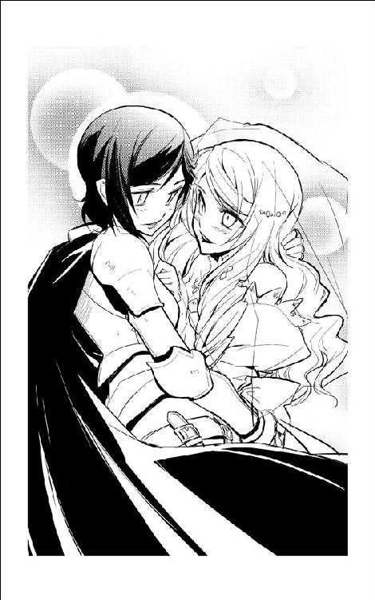
通信パネルが軽やかな電子音を鳴らして呼び出しを告げた。はっと我に返った茉莉香は、思わず声を上げた。
「部長!? 部長は海賊船を駆け落ちに使うつもりだったんですか！」
「駆け落ち？ 馬鹿言え、逃げるだけなら海賊船なんか使うもんかい。見てな、これから逆襲はじめるんだ」
リンはジェニーを置いてレーダー／センサー席に歩み寄った。慣れた手付きで通信パネルに指を走らせる。
「ハロルド・ロイド保険組合からだ。出るかい？」
「え、もうショウさんの定時連絡ですか!?」
茉莉香は慌てて船長席に上がった。
「廻して下さい、こっちで出ます」
『やあ、ハロルド・ロイド保険組合のショウさんだ』
いつもどおりの挨拶と一緒に、アフロヘアの怪人が通信モニターに現れた。
『......お取り込み中かい？』
「ええ、まあ、いろいろと」
返事をして胸元に手をやった茉莉香は、自分が宇宙服のままブリッジで通信に出ているのに気づいた。
「はい、取り込み中ですけど、すごいタイミングです。ええと、あの」
茉莉香は、船長席の横に立つリンとジェニーを見た。説明するより見せた方が早いと思いつく。
「こういうことになっちゃいました」
茉莉香は、通信モニターの上のカメラを横に向けた。
今までの定時通信で相手が保険組合のエージェントであることを知っているリンは、向けられたカメラに向けて手先をくるくる回しながら一礼した。リンの挨拶を見たジェニーが、軽く膝を折って頭を下げる。
『おや？ 仮装パーティーがまだ続いてるのかい？』
女騎士と花嫁の挨拶を受けたショウが、モニターの中で身を乗り出した。
『......っと待て！ 男役は白凰女学院ヨット部部長のリン・ランブレッタとして、娘役は......』
「はじめまして」
開放されているスピーカーで通信相手の名乗りを聞いていたジェニーが、向けられている通信カメラに優雅に微笑む。
「先代のヨット部部長を務めておりました、ジェニー・ドリトルと申します」
通信モニターの中で、ショウの口がほけっと開かれたままフリーズした。
通信事故かと茉莉香が思いはじめてから、やっとショウの口が開いた。
『や、やあ、ご尊顔を拝見できて光栄だ。ハロルド・ロイド保険組合のエージェント、ショウだ』
「ハロルド・ロイド保険組合ですか」
ジェニーは通信カメラに微笑んだままうなずいた。
「うちの、ヒュー＆ドリトル星間運輸も少なからずお世話になっておりますわね。茉莉香船長」
ジェニーは、船長席のコントロール・パネルの通信カメラを向けていた茉莉香に呼び掛けた。
「もしよければ、ショウさんのモニターをメインスクリーンに出していただけないかしら？」
「あ、はい、気がつきませんで、どうも」
船長席に腰を落とした茉莉香は、通信パネルの回線を切り換えた。ブリッジ正面の大型モニターにアフロヘアの怪人が映し出される。
大画面に現れたアフロヘアの怪人を見ても、ウェディングドレス姿のジェニーは眉ひとつ動かさずに話を続けた。
「弁天丸と長年の付き合いがあるエージェントなら、それで身の証は立つでしょう。たぶん、ショウさんはわたしが本物のジェニー・ドリトルであるかどうか確認したいと思ってるんじゃないかしら？」
『まさにそのとおりだ』
茉莉香が見たこともないような真面目な顔で、ショウは通信モニターの中から身を乗り出した。
『残念ながら、おれは白凰女学院ヨット部前部長にしてヒュー＆ドリトル星間運輸経営序列第一七位のジョナサン・ドリトル氏の長女であるジェニー・ドリトル嬢とは面識がない。画像データも分析させてもらってるが、少なくとも今までのところあなたを本物のジェニー・ドリトルではないと疑うデータもない。画面だけならあなたは本物に見えるが、それを偽装する方法があるのもご存知のとおりだ。さて、あなたはどうやって自分が自分であると証明する？』
「そうですね」
ジェニーは、ゆったりと微笑んで通信モニターのショウを見返した。
「わたし、ジェニー・ドリトルは二週間後に核恒星系の機動要塞結婚式場、銀英殿でジュナイ・クールフ氏と結婚式を挙げる予定です。それがメルトライン中継点から突然行方不明になったので、少なくともヒュー＆ドリトル星間運輸の本社は麾下の護衛艦隊のみならず、営業航行中の船団まで動員して全銀河で情報収集活動中のはずです」
『ヒュー＆ドリトル傘下の宇宙船団の通信量がいきなり増えているのは事実だ。だが、その原因がジェニー・ドリトル嬢が行方不明になったからかどうか、船団がそのための情報収集をしているかどうかの確認は取れていない』
「簡単に確認する方法がありますわ」
くちもとに笑みを湛えたまま、ジェニーはじっとショウを見つめている。
「ハロルド・ロイド保険組合なら、うちの本社へのホットラインをお持ちでしょう。ジェニー・ドリトルの現在位置に関する確実な情報を持っている、ってご注進すれば、あっという間に食いついてきますわよ」
『なるほどね』
感心したように手を叩きながら、ショウは通信モニターの向こうでシートに背をもたせかけた。
『ＤＮＡ｜ＩＤでも見せてくれるかと思ったが、そう来たか。でも、いいのかい？ せっかく逃げ出した花嫁の現在位置をご注進申し上げたら、銀河中の護衛艦隊が追っかけてくるんじゃないのかい？』
「まだ本社の経営にも加わっていない小娘一人に、護衛艦隊が何隻集まってくれるかわかりませんけど」
ジェニーは、誇らしげな顔で自分がいるブリッジを見廻した。
「そうしたら、逃げますから大丈夫です。ご存知のとおり、わたしは今、銀河最高の海賊船に乗ってるんですから」
にやりと笑ったショウが、通信モニターの中で両手を挙げた。
『信用しよう。あなたは確かに、ヒュー＆ドリトル星間運輸の令嬢として弁天丸に仕事を依頼するだけの度胸と事情をお持ちのようだ。つまりこの件は、弁天丸が海賊として運輸会社の令嬢を誘拐したのではなく、ジェニー・ドリトル嬢自らの依頼を受けて彼女の身柄を保護した。ここまでは、記録に残しておいても大丈夫かい？』
「ええ、もちろんです」
ジェニーはもう一度隣に立つリンと、それから船長席の茉莉香に目をやった。
「こんな通信記録が永遠に法廷記録なんかに採用されないことを願いますけれど。わたしは友人である海賊を陥れるために、こんなことをしているわけじゃありません。ひょっとしたら保険組合のエージェントに証人をお願いすることになるかも知れませんから、予断が入らないように記録はしっかりお願いしますわ」
ちょっと斜めに顎を引いて、ジェニーはショウにウィンクしてみせた。
『了解した。事情もよくわからんし順序がちょっとばかりむちゃくちゃだが、弁天丸は当人の依頼によってジェニー・ドリトル嬢の身柄を保護した、とそういうことだな』
「そういうことです」
『では、弁天丸担当のハロルド・ロイド保険組合のエージェントとしてあらためてご挨拶しよう。何か、おれたちで役に立てることはあるかい？』
ジェニーは、隣のリンと顔を見合わせた。意外そうな顔で、ジェニーは訊いた。
「こちらに付いて下さるんですの？」
『そいつはまだ決まっていない』
ショウは、立てた人差指を左右に振ってみせた。
『うちは海賊とも、運輸会社とも付き合いのある保険組合だ。だが、幸いにしておれの役職は弁天丸のエージェントであり、おれ自身はヒュー＆ドリトル星間運輸との付き合いはない。そして、保険組合ってのは危険を売る商売だ。商売である以上は、どこまで行っても損得勘定って奴がついてまわる』
「うちの会社と同じですわね」
『そして、ジェニー・ドリトル嬢は身の証と引き換えに、使い方次第でヒュー＆ドリトル星間運輸にいくらでも恩を売れるカードをこちらに下さった。あなたの現在位置だ。ということは、つまり、こいつはあなたにとって切り札ではない』
ジェニーは、派手なサングラス越しにエージェントの目が光ったような気がした。
『そして、あなたの勝負の相手は保険組合じゃない。てえことは、勝てるつもりの勝負をヒュー＆ドリトル星間運輸の本丸に仕掛ける心積もりだと見たが、どうだ。ここまでの見立てで何か修正すべき点があれば指摘してくれ』
ジェニーは、安心したような息を吐いてショウに一礼した。
「わたしが考えている計画を、聞く価値があると判断してくれた、まずそのことに感謝します。さすが銀河最高の海賊船だわ、エージェントにも恵まれてるわね」
『さっきも言ったが、どっちに付くかはまだ決定していない』
ショウの表情は変わらない。
『だが、おれたちも商売で保険組合をやっている。今のあなたをヒュー＆ドリトルに売って得られる目の前の利益と、あなたを手助けした場合に得られる将来的な利益について十分な評価を行なってから、どっちに付くか決めても遅くはないだろう』
ショウは、通信モニターの中で両手を組んだ。
『さあ、話を聞こうか』
ハロルド・ロイド保険組合からの情報によって、ヒュー＆ドリトル星間運輸が運用する護衛艦隊所属の高速機動巡洋艦がその空域に到着した時、弁天丸はすでに次の目的地に向けた跳躍を開始していた。
「正気？」
宇宙服を正規の船長服に着替えて超光速跳躍中のブリッジに戻ってきた茉莉香に、わざわざレーダー／センサー席を立ってそばまで来たチアキが小声で訊いた。
「本気で、ヒュー＆ドリトルの護衛艦隊相手に追っかけっこして、勝てるつもり？」
「そういうお仕事、受けちゃったからねえ」
茉莉香は、他に空いていないからシュニッツァー専用の強大な戦闘指揮席に着いてもらったウェディングドレスのままのジェニーにちらりと目を走らせた。
「まあ、本番の戦闘やる気はこっちにもジェニー先輩にもないんだし、そうなりそうになったら先に手を上げるって部長も言ってたし、大丈夫なんじゃないかしら」
「戦闘も問題だけどね、あとのことは考えてるの？」
「あとのこと？」
茉莉香は、船長席のコンソールからチアキに顔を上げた。
「そりゃあ、目論見どおり目的達成できればいいわよ。でも、もし護衛艦隊を出し抜けずに、逃げ道を押さえられて、依頼人が負けを認めたら、あなたは素直にジェニーの身柄を引き渡すつもりなの？」
「......部長を説得するのがしんどそうよね」
茉莉香は、電子戦席に持ち込んだ自前のコンピューターともども着々と戦闘準備を整えているらしいリンを見やった。
「それだけじゃないでしょ。もし、ジェニー先輩の目論見どおりにいかなかったら、海賊船弁天丸の茉莉香船長は、引き受けた仕事をやり遂げられなかったってことになるのよ。わかってるの？」
「それは、まあ」
茉莉香は、申し訳なさそうにチアキから目を逸らした。
「どうせ、引き受けた仕事をすべて完全にできるとは思ってないし、時々は負け戦だってあるだろうし」
「海賊の評判に関わるとか、考えない？」
「考えてたら、なんにもできなくなるから、考えないことにしてる」
茉莉香は再びコントロール・パネルの情報ディスプレイに目を落とした。
「それに、弁天丸の評判が落ちるのは、失敗したって仕事が大々的に知れ渡ってからでしょ。これってたぶん、やり方次第じゃとんでもないスキャンダルになるから、先輩も相手の会社もそれを全宇宙的に宣伝する気はあんまりないんじゃないかしら」
「噂の速度って知ってる？ 超光速よ。人の口に扉は立てられないんだから」
「だからさ、できるだけ多くの護衛艦隊を引きずり廻して、うまく立ち廻れば立ち廻るほど、あっちもこのことを隠しきれなくなるんじゃないかしら」
茉莉香は、もう一度、戦闘席の花嫁を見た。
「それまでに実戦にならずに逃げ廻ることさえできれば、それだけ先輩も目的の達成に近づいていけるんじゃないかしら？」
「もし、そこまで行けなかったら？」
「そしたら、その時は負けでしょ」
チアキに顔を上げて、茉莉香は肩をすくめてみせた。
「でも、海賊船の弁天丸だけじゃなくて、リン部長やジェニー先輩まで一発で負けを認めさせる方法って、そんなにないと思うんだ。だから、これってそれほど分の悪い勝負じゃないと思わない？」
「まもなく、タッチダウンします」
船長席にちらりと目を走らせて、副長席のグリューエルが伝えた。
「楽天家なのはいい船長の条件だそうですけどね」
チアキは呆れ顔で船長席から離れた。
「最悪の場合を想定して、それに対する対応をきっちり考えておくのも船長の仕事よ」
「わかってる」
船長席の茉莉香は、まっすぐ前に顔を上げた。
「だから、ちょっと、お腹痛い」
「タッチダウンします」
よく通る声で、グリューエルが告げた。
「弁天丸、通常空間に復帰します」
「ありゃま」
百眼が素っ頓狂な声を上げた。
「どした？」
「いや」
規模こそ弁天丸にはるかに劣るものの、当面の用事を足すにはなんの不自由もないほどのワークステーションを自室に組み上げてしまっている百眼は、続けてコントロール・パネルを叩いた。
「茉莉香お嬢さんがなんかドジでも踏んだか？」
「いや......まだだ」
「まだ？」
病院船のデータベースから借り出した最新型戦闘機のマニュアルを斜め読みしていたケインは、拡げていた電紙ディスプレイをベッドの上に放り出して百眼が構築したワークステーションに移動した。
「そりゃ穏やかじゃないな。プリンセス・アプリコット相手の海賊は大成功のうちに終わったんじゃなかったのかい？」
「そのはずだが、今の弁天丸は素直にたう星系に戻ってくるかと思いきや」
「思いきや？」
「どっかの護衛艦隊と追っかけっこしてるらしい」
「追っかけっこだ？」
百眼のすぐそばで、携帯端末が鋭い呼び出し音を鳴らした。イヤホンマイクだけを引っ張り出して耳に挿した百眼は、キーボードを叩きながら応えた。
「おう、クーリエか。こっちから連絡入れようかと思ってたところだ。あー、やっぱりそっちでも引っ掛けたか」
クーリエも、百眼同様に病院船ベン・ケーシーの隔離病室内に本船の通信システムを乗っ取るような強力なワークステーションを構築してしまっている。
「ああ、素人が動かしてるにしちゃジャンプの間隔が短いんで、ちょいと探ってみたらすぐに引っ掛かった。相手はどっかの艦隊......これだけの広域を好き勝手に動けるのは自治星系の防衛艦隊じゃない。だが、帝国艦隊が海賊追い廻してるにしちゃ手際が悪すぎるし、第二艦隊にも第三艦隊にもそんな動きは見えない、となるとこりゃあ会社艦隊だと思うが......」
「会社艦隊と弁天丸が追っかけっこしてるだと？」
ケインは、使っている本人しか読み取り方がわからないような複雑な紋様と、高速でスクロールする細かい文字を映し出すディスプレイを覗き込んだ。会社艦隊といっても、自衛戦力として艦隊を揃えている大手コンツェルンから雇われて戦力を貸し出す軍事会社、帝国の版図外で下請けとしての侵略を行うために強力な戦力を揃えている侵略会社など、その種類は多岐にわたる。
「相手はどこだ？」
「ヒュー＆ドリトル星間運輸」
百眼は、ケインと携帯端末の向こうのクーリエに同時に答えた。
「ああ、こっちで見たところ他の勢力で荷担してる艦隊はいない。弁天丸に加勢してる勢力もいない、となると、これはおそらく弁天丸が単独で新しい仕事をしてる、と見ていいんじゃないのかな」
「新しい仕事ってなんだ？」
訊いたケインと、ディスプレイから顔を上げた百眼は顔を見合わせた。
「......さあ？」
「おい!!」
巨大な黒い風がケインと百眼の士官用病室に飛び込んできた。
「弁天丸が会社艦隊と追っかけっこしてるってのは確かな情報なのか!?」
足音も立てずに現れたシュニッツァーの巨体に、百眼はコントロール・パネルを叩きながら片手を上げて挨拶した。
「ああ、航路管制局からの最新情報だ。今のところ、帝国艦隊もフォローは行なっている」
「相手は!?」
「ヒュー＆ドリトル星間運輸の護衛艦隊......さすが、情報が早いな」
ケインの後ろに廻ったシュニッツァーは、百眼のワークステーションのディスプレイを覗き込んだ。サイボーグアイが表示されている情報を瞬時に読み取る。
「すぐに戦闘開始するような状況じゃないか......だが、何が起きてる？」
「さあてねえ」
ケインは、両手を上げてお手上げのポーズを取ってみせた。
「だが、船長からも何も言ってこないし、ショウも緊急連絡ひとつ入れてないところをみると、今のおれたちにできるのは黙って見守ることだけ、なんじゃないかなあ」
「そりゃまあ確かに、今から船長に呼び出されたところで......」
シュニッツァーは、必要な手順を指折り数えた。
「弁天丸に合流するのに、最速でも半日はかかるが」
「それにはまず隔離を解いてもらうように医者を説得して、それから超光速できる船を調達しなきゃならない。跳躍さえできればトータルの飛行時間は大したことにはならんが、跳んだ先でどんな厄介事が待ち構えているか考えてみると余裕はあるに越したことはない」
ケインは、シュニッツァーに胡乱な目を向けた。
「半日で済むか？」
「交渉の時間を短縮する手はあるし、交渉そのものを省略する手もある」
「だが、少なくとも今のところは、船長からも保険のエージェントからも連絡はない」
放っておいたらいくらでも危険な打ち合わせを続けそうなケインとシュニッツァーに、百眼が告げた。
「よっぽどやばい事態なら、相談の電話くらいかかってきそうなもんだが、その気配もない。だから、おれたちにできるのは状況を見守ることだけだ」
「だが、情報収集はできるよな」
「ああ、もちろんだ」
ワークステーションの操作の片手間に、百眼は通信パネルを指した。
「だが、確実な事情説明を求めるなら、保険の兄ちゃんに直接連絡とった方が早い」
ケインは、シュニッツァーともう一度顔を見合わせた。
「なるほど、そりゃ道理だ。んじゃちょっと失礼して、と」
ケインが病室装備の通信システムの前に立つと同時に、呼び出し音が鳴った。
「おやまあ、なんてタイミングだい」
海賊流の小細工と無断改造により、弁天丸乗組員が収容されている病室の通信システムには、病院船側の傍受システムをものともしない秘話回線と暗号回路が追加されている。時間をかければ通話記録も解読されるかも知れないが、計算上はハイパーコンピューターでも暗号解読の終了より先に病院船の運用寿命が来るはずだった。
通信相手が茉莉香の定時連絡の次に熱心に連絡を取ってくるハロルド・ロイド保険組合であることを確認して、ケインは通信に出た。
「はいこちら病院船ベン・ケーシー、ケインだ」
『やあ、毎度お馴染みハロルド・ロイド保険組合のショウさんだ』
通信モニターの中でアフロヘアの怪人が片手を上げて挨拶した。
『みんな元気でやってるかい？ そろそろ、そっちでも弁天丸の跳ばしっぷりが話題になってる頃じゃないかと思ってね』
「おう、うちの優秀なインテリジェンスがとっくに気づいて情報の収集に努めてるぜ」
「ちょっと、どういうこと!?」
ノックもなしに、白衣姿のミーサが駆け込んできた。
「弁天丸がどっかの護衛艦隊と追っかけっこしてるって話じゃないの！」
「今、ショウさんと回線がつながってる」
ケインがミーサに手を上げた。
「これから説明してくれるらしいぜ」
『なんせ、船長思いなことでは定評のある弁天丸だからな。しっかり情報を与えておかないと、早まって病院船乗っ取って助っ人に駆けつけるなんてことになりかねん』
「ちょうど今その相談をしてたところだ」
ケインは、背後から通信モニターを覗き込んだシュニッツァーとミーサを身体をずらしてショウに見せた。
「聞きたい奴にはこの通信は聞いてもらってもいいな？」
『そうしてくれ。こちらとしても親愛なる弁天丸の乗組員諸氏全員に同じ説明を繰り返すような手間は省きたい』
「んじゃ、そういうことで」
ケインは、モニターしてきていたクーリエにも回線を開いた。他にも、弁天丸の乗組員が入っている病室からのアクセスなら無条件で通信をモニターできるようにセットする。
『さて、君たちの大事な弁天丸が今なんのために超光速跳躍を繰り返しているのか、についてだが』
ショウは楽しそうに顔の前で指を組んだ。
『プリンセス・アプリコット号への海賊によってめでたく免許条件を満たして自動更新に成功した弁天丸は、臨時雇いの乗組員から次なる仕事の依頼を受けた。とある令嬢の身柄の確保、及びその護衛だ』
「やらせたのか!?」
ケインは思わず声を上げた。
「お前が付いてたのに!? 免許と海賊船は本物でも、寄せ集めの素人しか乗ってない弁天丸に！」
『おれがやらせた、っていうのは、この場合正確さを欠く表現だな。依頼を受けてからさほど間をおかない段階で、茉莉香船長は事の次第をきっちりこっちに報告、状況について相談してきた。依頼人が今弁天丸を動かしている女子校のヨット部部長、令嬢ってのが前部長ってのは身内の事情だが、もちろん追いかけている方はそんなことはご存知ない』
「保険組合まで最初っから知ってたってのかよ」
『それも正確さを欠く表現だな。茉莉香船長から相談を受けた段階じゃ、仕事を受けるかどうかはまだ決定されていなかったはずだ。だが、保険組合がこの件についての調査を完了するよりも早く、令嬢の方が先に弁天丸に飛び込んできた』
「ちょっと待て！」
ケインが声を上げた。
「前部長ってのは、ジェニー・ドリトルのことか!? ヒュー＆ドリトル星間運輸ご令嬢の!?」
『さすが女子校のヨット部顧問だねえ。そのとおり。その令嬢が、メルトライン中継点からヒュー＆ドリトルに納入されたばかりの新型の高速偵察機で飛び出してきて、弁天丸に逃げ込んだ。おかげでこちらは、依頼人だけじゃなくて確保して護衛すべき当人ともじっくり話をする栄に浴したわけだが』
「そこまで聞いて、止めなかったのかよ」
ケインは溜息をついた。
「海千山千の保険エージェントが、去年まで女子高生だった娘っ子になにたらし込まれてやがるんだ」
『ああ、まったく大した娘っ子だ』
モニターの向こうのショウがうなずいた。
『自分の立場と実力をチップに、部員が動かしてるとはいえ海賊船のみならず、うちみたいな保険組合にまで取引持ちかけるんだからな』
「乗ったのか!?」
ここまでの展開を見ていれば、それしか考えられない。ケインは自分の額に手を当てた。
「いったいどんな取引持ちかけられたんだ！」
『ヒュー＆ドリトル星間運輸のスキャンダル、及びその当人を担保にした将来にわたる良好な関係と引き換えに、各方面へのちょっとした情報提供って奴だ』
ショウはにやりと喰われそうな歯を見せた。
『安心しな、弁天丸の正規乗組員への情報提供はサービスしとく。もしあのお嬢さんの交渉能力が口先だけでなく実力がともなったものなら、この件はお互いにとっても、それから経営計画を狂わされるだろうヒュー＆ドリトルにとっても得なものになるだろう』
「ころっと騙されやがって......」
『八方丸く収まるように事態をまとめるのが、おれたち保険屋の仕事だからね。これでジェニー・ドリトル嬢と弁天丸がうまくやってくれれば、こちらとしても言うことはない』
「挙げ句の果てが海賊船一隻に護衛艦隊が寄ってたかっての追っかけっこか!? いったい何なんだこりゃ!?」
『たった一隻での、護衛艦隊に対する攪乱だ』
「弁天丸一隻で？ そりゃ実戦経験は正規軍や侵略会社には及ばないだろうが、数も技術もはるかに上の護衛艦隊相手に？」
「少なくとも、ヒュー＆ドリトル星間運輸が運用している護衛艦隊は、相手の海賊船に乗り込んでいるのが素人だけだとは知らないはずだ」
百眼のワークステーションで弁天丸を追跡している護衛艦隊の配置を読んでいたシュニッツァーが低い声で会話に加わった。
「そして、弁天丸も素人の集まりだとは思われないだけの立て続けの跳躍をこなしている。初歩的なものだが、交戦圏内に入ってきた敵艦に対しては電子妨害も行なっている」
「そうか」
酷使されている核炉と超光速機関の状況を思い浮かべて、ケインはげんなりと肩を落とした。
「三代目が泣くだろうなあ。事が終わって弁天丸が宇宙船の形してりゃいいんだが」
『大丈夫、船長にも依頼主にも、実戦の予定はない』
「世の中、戦闘じゃなくったっていくらでも宇宙船が宇宙船の形じゃなくなる事態ってのは起きるんだぜ」
ケインは、通信モニターのショウに顔を上げた。
「それで、我が弁天丸の勝利条件ってのは、この場合何に設定されてるんだ？」
『弁天丸の仕事だぜ』
ショウはにやりと笑った。
『海賊に、決まっている』
「全天走査完了！」
タッチダウン終了と同時に全天走査、周辺状況の確認という手順も、繰り返すにつれてどんどん手際がよくなってくる。茉莉香は、船長席まわりに表示された情報で弁天丸の現在位置と周辺状況を確認した。
「プレドライブ現象、すでに二つ、三つ感知されています」
グリューエルが、状況を要約してわかりやすく伝えた。
「慣れてるわねー」
空いている戦闘指揮席に着いているジェニーが、感心してブリッジを見廻す。
「本物の海賊船みたい」
「苦労しましたもん」
正規乗組員が乗っている時の弁天丸なら、何が起きているのか船長が把握する前にすべて片付いていることも多いのだが、茉莉香は澄まし顔で答えた。展開が遅いから、宇宙船のどこで誰が何をやっているのか手に取るようにわかる。
「それに、乗組員はともかく、乗ってるのは本物の海賊船です」
「わかってるけどさ」
ウェディングドレスのジェニーは、後退ポジションに下げたままの巨大な戦闘指揮席を回転させてブリッジを見廻した。
「知ってる顔しかいないと、初めて乗る宇宙船って感じしないのよね」
ブリッジにはジェニーの卒業と入れ違いにヨット部に入った一年生もいるが、全員が中等部からの持ち上がりなので顔馴染みである。ジェニーは、隣のリンは女騎士、航法士のマリイは朱の袴も凜々しい巫女装束、操舵手席のアイは小妖精、機関士席のヤヨイは女忍者くのいちなどと仮装した乗組員で埋まっているブリッジをひとわたり見廻した。
「海賊船て華やかなもんねえ」
ブリッジの乗組員は、全員がプリンセス・アプリコット号を襲った時と同じコスチュームで盛装していた。
「いっつもはこんなんじゃありません！」
一人だけ、いつもと同じ船長服のままの茉莉香が主張する。
「今回だけの特別サービスなんですってば！」
「わかってるって、心配しなくても大丈夫」
茉莉香は、ウェディングドレスを脱いでいない依頼主にくすっと笑った。
「お雇いになった海賊船の乗り心地は、いかがですか？」
いたずらっぽく訊いた茉莉香に、ジェニーは胸の前で両指を組んでみせた。
「もう、最っ高！ 大学卒業後の進路志望、会社経営じゃなくて海賊船運営にしようかしら」
「今から海賊免許取るのは大変だぞー」
隣の電子戦席のリンが茶々を入れる。
「帝国領内で新規の海賊免許の発効なんぞほぼ不可能に近いからな。辺境区で海賊免許発効してるような都合のいい星見つけて、なおかつそれが帝国に帰属した時にもそれが失効しないような細工をしなきゃならない」
「あら、手はいくらでもあるんじゃないかしら。適当な独立星系買い叩いて法の隙間つつくんでも、それより適当な宇宙関係の学校買って練習船で登録する方が経済的かも」
「先刻承知だろうが、海賊船に限らず宇宙船動かすってのは肉体労働だぜ」
ディスプレイ上にいくつも反応が出たのを見て、リンは手を動かしはじめた。
「身体動かす仕事は苦手だって言ってなかったか？」
「あら、もちろん最前線に出る気なんかないわよ。安全なオフィスから指令出して手駒動かすのがいいんじゃないの」
「タッチダウン確認」
チアキが、レーダーに捉えられた最新情報を伝えた。
「あと、トランスポンダーも確認。お馴染みヒュー＆ドリトルの護衛艦隊、機動巡洋艦二隻と、あと高速護衛艦がこの調子だと三隻は跳んでくるかな。でお定まりの通信要求」
弁天丸も正規の航行ルールに則って航路帯を駆けている。ご丁寧にトランスポンダーも発信しているから、レーダーで船型を確認したり、センサーで機関パターンを照合する手間もなく、現在位置も船名もすぐに相手に知られてしまう。
「もちろん、無視して」
茉莉香は指示した。
「他からなんか別な通信が入ってくる可能性はあるけれど、ヒュー＆ドリトル及びその関連会社からの通信は一切無視！」
「さっき一隻つっかかってきたからなあ」
リンがちゃかちゃかと機器をいじって電子戦の準備を整えている。
「そろそろ、こっちから航路妨害程度でも仕掛けたほうがいいんじゃないか？」
「やりすぎないようにして下さいよ」
茉莉香は、すべてのコントロール・パネルに灯が入っている電子戦席のリンを見やった。
「実害が出ないからお目こぼしされてるようなもんで、ほんとうだったら規定外の出力のレーダー発振だって戦闘行為扱いにされたっておかしくないんです。ヤヨイちゃん、次、いつ頃跳べそう？」
「阿号機のエネルギー供給だけでも跳べないことはありませんが、吽号機の調整にもうあとちょっと下さい」
「機動巡洋艦二隻、こちらに向けて前進開始」
まだ距離は置いているものの、二隻のヒュー＆ドリトル星間運輸護衛艦隊所属の巡洋艦が動き出したことをチアキが伝えた。
「すっごい出力での呼び出しは継続中」
「高速護衛艦三隻のタッチダウンを確認」
グリューエルが、静かな声で報告した。
「さらに三隻のプレドライブと思われる現象を感知しています。こっちは今までのと比べて大きいんで、大型艦が来るかも知れません」
「心当たり、あります？」
茉莉香に訊かれて、ジェニーは少し考え込んだ。
「うちの護衛艦隊も数だけは揃ってるからなあ。でも、船団護衛に付いてるような大物まで剥がしてこっちの追跡に廻したり、辺境遠征用の電子戦艦でも廻してこない限りは、機動巡洋艦以上の大物なんか来ないと思うけど」
「その機動巡洋艦が、大加速開始」
チアキが告げた。
「いっくら呼びかけても無視するから、接近して力ずくに持ち込もうって腹かしら」
「相手が何考えてるかわからない海賊だと、色々やりにくいでしょうねえ」
相手の身になって対応を考えてみて、茉莉香はくすっと笑った。
「んじゃ、電子妨害かけつつ、適当に相手......できる？」
「通常推進は問題なし」
ヤヨイが応えた。
「やってみます」
操舵手席のアイが、緊張した面持ちで舵輪を握り直す。
「プレドライブ現象、大きい！」
グリューエルが伝えた。
「いちばん大きいの、来ます！」
「来たかな？」
ジェニーがつぶやいた。
「出ました！」
グリューエルが声を上げた。規程どおりトランスポンダーを発信しながら飛んでいる宇宙船が相手なら、タッチダウンと同時に船名まで判明する。
「ヒュー＆ドリトル第一護衛艦隊旗艦、電子戦艦ジャバウォッキー！ あと、取り巻き多数！」
「やっと、本隊が出てきてくれたわ」
ジェニーはうれしそうに両手を打ち合わせた。
「まあ、保険屋からあれだけ思わせぶりな情報流させて、わざわざ追跡に来た護衛艦にこっちの姿確認させてから逃げてればねえ」
チアキが呆れ顔で戦闘指揮席の花嫁を見た。
「身内が乗ってるっていうんでなきゃ、切れた艦隊がとっくに実力行使に出てたって不思議じゃないわよ」
「ほら、会社の艦隊って実際に射ったら責任問題になるからめったに射ちたがらないし、うちの護衛艦隊は特別忍耐強いんで有名だから」
「帝国領内航行してる護衛艦隊に限っての話でしょうが！ 辺境専門の侵略艦隊なんて言ったら、そりゃあもうすぐに火が点くんで有名なんだから！」
「で、どうしますか？」
茉莉香が訊いた。
「機動巡洋艦が二隻で突っかけてくるだけならまだなんとか時間稼ぎできますけど、電子戦艦以下、ええと」
茉莉香は、ディスプレイにリストになって映し出された護衛艦隊の数を数えた。先発の機動巡洋艦二隻、後発の高速護衛艦三隻に続いてタッチダウンした大型の電子戦艦は、巡洋艦級二隻、護衛艦級六隻もの大戦力を引き連れて陣形を整えつつある。
「一ダース以上に追っかけ廻されたら、そういつまでも逃げきれませんよ？」
「ジャバウォッキーが出てきてくれたのなら充分だわ」
ジェニーは、うれしそうに戦闘指揮席のディスプレイを見廻した。情報表示のディスプレイだけでも何面ものディスプレイが点灯している。
「知ってる？ あれ、うちの護衛艦隊でたった一隻しかいない電子戦艦なのよ。メルトライン中継点の港で見た時に、あれが追っかけてきてくれればこっちの勝ちだと思ったんだけど、やっと出てきてくれたのね」
「それじゃあ？」
「ええ、充分だわ」
戦闘指揮席のシートを船長席に廻して、ジェニーはうなずいた。
「できれば、ジャバウォッキーの鼻先かすめるくらいおちょくってやれば完璧だけど、そこまで贅沢は言ってられそうもないし、行きましょう。次で、手筈どおりトーテムトット銀河に跳んで」
「了解しました。次の超光速航行、タッチダウン・ポイントはトーテムトット銀河に設定......どうしたの？」
インカムでどこかと話していたヤヨイが、船長に手を上げていた。
「ええと、次の跳躍はポイント限定の精密跳躍だから、どうせ設定に時間がかかります。吽号機の調整は終わって、今のところ出力安定してるから、通常機関への動力供給は心配ありません」
「......つまり？」
先の展開は予測できるが、茉莉香はあえてヤヨイに説明を求めた。
「ノズルが連続運転でオーバーヒートするまでなら、高加速を持続できます。タイミングさえ間違わなければ、新しくタッチダウンした敵の艦隊の鼻先をかすめてから跳躍できます」
「アイちゃん、大丈夫？」
アイは、操舵手席のディスプレイを見て艦隊の配置を確認する。
「ええと、たぶん大丈夫だと思います」
「じゃ、せっかくのスポンサーの依頼だし、やってみましょうか」
茉莉香はにっこり笑った。
「接近してくる巡洋艦二隻めがけて逆加速、その後、紡錘隊形をとりつつある敵艦隊の先端部分を逆走してかすめてから、超光速にテイクオフ。跳躍のタイミングがずれたらちょっと大変なことになるけど、機関部、大丈夫？」
「大丈夫、だと思います」
もう一度各部に確認を廻して、ヤヨイが応えた。船長席のディスプレイ上にもグリーンサインが並んでいるのを見て、茉莉香はうなずいた。
「それじゃ、戦闘機動開始！ 弁天丸、行きましょう！」
大加速をかけて接近する二隻の機動巡洋艦に対して、発進した弁天丸はセオリーどおりの縦のターンで急反転した。船体正面を向けたまま、急接近する機動巡洋艦のみならずその後方で陣形を整える護衛艦隊にまで妨害電波を射出、電磁波通信とレーダーを無効化しながら突撃する。
急遽、艦隊陣形を迎撃態勢に組み替える艦隊に対して、弁天丸は呼びかける通信も警告も無視して、ただ一方的に高笑いのみをヒュー＆ドリトル星間運輸専用のカンパニー・ラジオの周波数で放ちながら襲いかかった。
高笑いが、護衛艦隊に対して最優先保護命令が出ているジョナサン・ドリトル氏の第一息女のものだと分析結果が出ていたために、護衛艦隊はその実力を行使することができなかった。
弁天丸は、ジェニーの高笑いを残して超空間に消えた。型どおりの攪乱幕や妨害波を放っていたとはいえ、あらかじめセンサーまで展開して準備している艦隊の前から跳躍すれば、観測データからタッチダウン・ポイントは簡単に解析できる。
追ってこいと言わんばかりの跳躍に、護衛艦隊は遅れて追跡を開始した。
通常空間にタッチダウンすると同時に、弁天丸は全天走査を開始した。目的の獲物は、ジェニーが持ってきたデータと誤差の範囲でしか数字が変わらないポイントに即座に発見された。
「グロリアス・クールフ号、トランスポンダーで確認！」
チアキが、目的のクルーザーをレーダー、センサー双方で確認して伝えた。
「自家用の宇宙船に家名つけるってのは、いい趣味とは言えないわね」
トーテムトット銀河はその形状から銀河と呼ばれてはいるが、超新星爆発を起こして変光ガス星雲となったかつての星系である。宇宙船としては中型だが、自家用クルーザーとしてなら充分大型の部類に入る超光速宇宙船は、刻一刻と変化する発光ガス雲の外縁軌道に遊弋していた。
茉莉香は、船長席のクロノメーターで現在時刻を確認した。ヒュー＆ドリトルの護衛艦隊が追いついてくるまで、それほど時間はかからないはずである。
「間違いない？」
「間違いない」
同じ画像をディスプレイ上で見たジェニーがうなずいた。
「我が婚約者は、今頃、あの中でどんちゃん騒ぎの真っ最中のはずよ」
「それじゃ、お仕事ですね」
茉莉香は、船長服を翻して立ち上がった。
「弁天丸、海賊しに行きましょう！」
弁天丸は、通常推進を全開にして自家用の豪華クルーザーに襲いかかった。
超光速跳躍の軌跡を追って、電子戦艦ジャバウォッキーを旗艦とするヒュー＆ドリトル星間運輸護衛艦隊がトーテムトット銀河の外縁軌道に到着した時、弁天丸はすでに自分の半分ほどの全長しかない自家用クルーザー、グロリアス・クールフ号とロックアームで強制ドッキングしたあとだった。
包囲陣を敷きつつ呼びかけたジャバウォッキーに、弁天丸ははじめて素直に応答した。それも、当のジェニー・ドリトル自らが、グロリアス・クールフ号船内から画像通信でジャバウォッキーに答えたのである。
『はいこちら、ジェニー・ドリトルです』
ヴェールなし、髪も結い上げないウェディングドレスのまま、背後に仮装した娘海賊を従えたジェニーは、グロリアス・クールフ号の贅を尽くしたセントラルキャビンから通信に応じた。
『どうも、こんなところまで引きずり廻してごめんなさいね。結婚前の独身のうちに婚約者のジュナイ・クールフ氏にご挨拶しようと思って。あ、びっくりさせようと思って連絡してなかったんですけど』
わざわざ通信用に専用のカメラを持ち込んだらしいジェニーは、わざとらしくキャビンに首を巡らせた。視界を追いかけるようにカメラが色とりどりの煙まで立ちこめている極彩色のインテリアで飾られたキャビンをぐるりと見廻してみせる。
きわどいのやら着てないのやら、明らかに公序良俗に反する画像が、ジャバウォッキーのみならず麾下の艦隊全部にまで流れた。
『どうやら、わたしの婚約者、恥ずかしがってどっかに逃げちゃったみたいなんです。よかったら一緒に探して下さいます？』
「薬物使った乱交パーティーの現場に乗り込んだ、だと!?」
ショウの説明を聞いたケインは悲鳴に近い声を上げた。
「道徳心だの充足だのなんて言葉は脳味噌から消去しちまって、一生使わないつもりのあの手の一族の、それもいちばん厄介なところじゃないか！」
「たいしたもんだわね」
それまで黙って話を聞いていたミーサが横から口を出した。
「いったい、あのお嬢様学校の誰がそんな生臭い手思いついたの？ ジェニー？」
『お姫様だよ』
ショウは、呆れたように片手をひらひらさせてみせた。
『ジェニーお嬢様は、最初はもっとおとなしい手を考えてたらしい。弁天丸でヒュー＆ドリトルの護衛艦隊を引きずり廻して手間をかけさせて、その上で直接本社と交渉チャンネルを開かせる、みたいな手だな』
「それのどこがおとなしい手だ。言ってみろ、こら」
『ところが、横で話聞いてたお姫様、例のプリンセス・グリューエルが言うには、あら、それはうまい手ではありませんわね、交渉は、相手が言い逃れする余地もないほどがっちりと証拠を突きつけて行うのが勝つコツですわよ、だと』
「うわああああ」
ミーサが当然といった顔でうなずいている横で、男三人が声を上げた。ケインはぶるっと震えて、ショウに目を戻した。
「何があっても、あそこの王家を敵に廻すのはやめよう」
『そいつは、うちの方針とも一致するな。喜ばしい限り』
ショウはしたり顔でうなずいた。
『ついでに、花嫁衣装の仮縫いからドレス着たまま逃げ出す前に、ヤク中で有名な放蕩婚約者の詳細な行動スケジュールまで調べ上げる花嫁ってのも、敵にしない方がいいと思うぞ。どんな情報ルート持ってるのかしらねえが、ジュナイ・クールフ氏が定期的に自分の宇宙船で開いている乱交パーティーの招待状まで持ってたんだから、今回の依頼人はよ』
「頼もしいわね」
ミーサは男たちに冷たい視線を向けた。
「いっつもそんなに準備万端整えてくれてる依頼人だと、こっちも仕事がやりやすいんだけど」
『かくして、弁天丸は最良のタイミングでジェニーお嬢様の婚約者、及びその仲間が乗り込んでいるクルーザーに海賊を働き、目的を達成した、というわけだ。弁天丸にも関係各船にも一切被害は出ていない』
ショウは、手許のディスプレイに目を落とした。
『もっとも、人的、物質的損害がゼロだとしても、ヒュー＆ドリトル星間運輸が各方面と結んでいる、あるいは結ぼうとしている家族的関係にどんな影響があるのかないのか、残念ながらそこまではうちの職分じゃないんでね、今のところ不明だ』
ショウは、通信モニターに顔を上げた。
『今のところ、こちらから伝えられる弁天丸に関する情報は以上だ。何か質問はあるかね？』
ちらっとミーサの顔を見て、ケインは通信システムに向き直った。
「弁天丸の、これからの航行予定は？」
『さあて、予定どおりならまっすぐたう星系に戻ってくるはずだが、ひょっとしたらジェニーお嬢様の意向を受けて宇宙大学経由でのご帰還になるかも知れんなあ。まあ、その辺りは、そっちの定時連絡で訊いてみればいいじゃないか』
「お前な」
ケインは通信モニターの向こうでにやにや笑っているショウを睨みつけた。
「今回の件について知らんぷりしろ、って言ったのはエージェントのお前だろが！ あとから船長がゲロするならともかく、少なくとも今の時点じゃ、おれたちゃ何も知らずにのんびり療養してることになってるんだ！ なのに、どんな顔して茉莉香と定時連絡しろって言うんだよ」
『おお、そういえばそうだった』
ショウはぽんと手を打った。
『よかったな、知らんぷりして助けにいかなきゃならないような事態にならなくて。わかった。弁天丸の動向に関しては今までどおりこちらから連絡しよう。隔離期間は予定どおりかい？』
ケインは、医者であるミーサに通信機の前の場所を譲った。ケインに代わって通信に出たミーサは、ショウにうなずいた。
「昨日の検診で、全員の完治が確認されてるわ。誰かが不用意な風邪でも引かない限り、一週間後には釈放よ」
『了解だ。じゃあ、弁天丸にはそれまでに、たう星系に帰ってくるように伝えておこう』
ショウの予見どおり、弁天丸はトーテムトット銀河のあと宇宙大学に寄ってから、たう星系に向かう軌道を取った。
直接、ヒュー＆ドリトル星間運輸本社にかけあって護衛艦隊への移乗を断ったジェニーは、そのまま弁天丸で宇宙大学に向かい、その場で入学手続きを行なった。
当初予定よりもずいぶん遠廻りになったため強行軍になったが、それでも弁天丸は期間ぎりぎりに、たう星系に帰還、ラグランジュ・ポイントの錨泊空域に宇宙船を置いて、連絡艇と新型偵察機で自動航行を続けていたオデット世に向かった。
「この偵察機、オデット世に持っていくんですか？」
ただでさえ連絡艇には乗りきれないから、狭い偵察機の操縦室に押し込められた茉莉香は、オペレーター席のグリューエルに訊かれてうなずいた。
「だって、こんなもの置きっぱなしにしたら、帰ってきたみんなになんて言い訳するのよ」
「どうせ航行記録は全部残ってますよ？ 黙ってたって、乗組員の皆さんが気づかないはずがないと思いますけど」
言ってから、グリューエルは考え込んだ。
「いえ、ひょっとしたら、もう皆さんご存知かも」
「みんなが帰ってきたら、そのうち説明するわよ。それはあとのこと。今はとにかく、先にオデット世捕まえて、みんなの出迎えの準備して、それからステーションに帰らなきゃ」
茉莉香は、操縦席とオペレーター席二人分のシートしかない真新しいサイレント・ウィスパーの操縦室を見廻した。
「それに、これはジェニー先輩のお仕事の報酬よ。みんなが貰ったんだから、みんなが使えるところに置いとくべきだと思うの」
「オデット世で、こんな偵察機使えるんでしょうか？」
グリューエルは、怪訝そうな顔で偵察機を見廻した。
「まあ、性能の一パーセントも使う機会はないかも知れないけど、だったら売っ払ってみんなのパーティー資金にするなり、うちの宇宙船にレンタルするなり、いくらでも使いみちはあるからいいんじゃない？」
「格納庫の女王になりそうですね」
調子が悪かったり使いみちがなかったりで格納庫に置きっぱなしにされる機体のことを、ハンガー・クイーンという。
「そろそろ、オデット世が見えてくるんじゃない？」
「この機体、目がいいからオデット世は発進前から見えてます」
グリューエルは、ふとコントロール・パネルをコマンドしていた指を止めた。
「......今のうちに言っておきます。わたくし、今回の練習航海で一度も海賊らしいことできませんでした」
「あたりまえでしょ」
悪い予感を覚えつつ、茉莉香は平気な顔をして答えた。
「じゃなくて、ちゃんと副長として務めてくれたじゃない。すっごく助かったし、今でも助かってるわ」
「わたくしも、あんな衣装を着て、海賊のお仕事してみたかったです」
茉莉香は、口を尖らせて自己主張するグリューエルに目を向けた。
「そりゃあ、グリューエルだって船長服似合うと思うけど、あなたみたいな有名人があんな人目に付くところに海賊でございって出ていったら、大騒ぎになるでしょ？」
「あれだけ目立つ格好してるみんなと一緒なら大丈夫です。今なら個人用のジャマーだってありますから、ビデオ画像くらいいくらでも誤魔化せますし」
「はいはい」
茉莉香は、操縦に戻るふりをした。
「それじゃあ、次の機会があったらお願いしましょう」
「次の、海賊練習はいつにしますか？」
「......はい？」
茉莉香は、グリューエルの顔を見直した。グリューエルは、邪気のない笑顔のまま言った。
「みんなと、またこんな練習航海できたらいいね、って話してたんです。みんな、すごく楽しかったし、またやりたいねって。だから、次の海賊練習は、いつにしましょうか？」
「ええー!?」
自動航行のまま海明星中継ステーションの帰還コースに乗っていたオデット世は、計算どおりのポジションを飛んでいた。
リンが掛けていたロックがあまりに厳重だったために先行した茉莉香とグリューエルだけではドアを開けることができず、あとから来る連絡船に何度も手順を確認してやっとロックを解除するという予定外のイベントはあったものの、ヨット部員たちは無事にオデット世に戻ることができた。
前回、前々回の出航時、前回の帰港時とは乗組員をまるごと交換したような手際のいい入港は、管制に当たった港湾局員を驚かせることになる。
病院船ベン・ケーシーに隔離されていた海賊船弁天丸の乗組員は、一カ月の隔離期間を終えて無事解放された。ただひとり弁天丸に戻って、病院船の連絡艇で送り届けられたみんなを迎えた茉莉香が、いろいろと居心地の悪い思いをしたのは言うまでもない。
そして、地上に戻って再び女子高生と海賊船長の二重生活を開始した茉莉香は、ヨット部の部室に顔を出すたびに同じ質問に悩まされることになる。
「で、次の海賊航海、いつごろですか？」
「えええー！！？」
『ミニスカ宇宙海賊』第三巻「コスプレ見習海賊」をお届けします。
えー、今回も謝らなければなるまい。第一巻に引き続き、本屋で買うにも部屋に置いておくにも恥ずかしいタイトル、申し訳ありません。今回は確信犯です。
毎度の締め切り破りに切れた編集がやけっぱちを起こしたわけでも、アニメ化に浮かれた営業が売れ線タイトルを強要したわけでもありません。ひとえに、コスプレした娘海賊どもがいつもの乗組員の代わりに豪華客船に乗り込んできたら楽しいだろうな、と思いつくのみならず、そのまんまやってしまった作者の責任です。
だって、ほんとうにコスプレして宇宙海賊する話なんだもん。最初のタイトルなんかコスプレ宇宙海賊って、もーそのまんまだったんだから。しかしながらこのタイトルは「表紙に宇宙海賊という文字列が二つも並ぶのはバランス的にどうか」という当たり前な意見により、ちょびっと改変されてご覧のタイトルになりました。いやそれにしたってなあ。おれだってもういい年なのに、さらにベテランの編集さんとミニスカだのコスプレだのと打ち合わせしたりする様子は想像しないように。
今回も、超光速に人工重力とお約束の超技術使いまくりなスペースオペラですが、実際のところ人工重力ってのはどうなんでしょうねえ。
作中で、茉莉香が弁天丸の特定の部屋の人工重力だけを点けたり切ったりしていますが、原理はともかく、あれって実際にやるとこちらは人工重力が効いているのに、あちらの部屋は無重量、みたいな不思議な状態になります。
しかしながら、物理法則上は重力ってのは光速でどこまでも伝わるものです。こちらの部屋を無重力状態にしても、壁ひとつ隔てた隣の部屋の人工重力が効いてるなら、今度はそっちに引っ張られるんじゃないかしら。
もし壁を、重力を遮断すると言われる伝説の新素材、ケイバーライトのようなもので作れば、隣の部屋に対する影響はなくなるかも知れないけど、上の部屋には重力伝わるよなあ。してみると、人工重力と垂直方向になる壁だけ重力遮断物質を使って、水平になるところは重力を透過する普通の素材を使えばいいのかしら。
だいたい、人工重力発生中の宇宙船って甲板上は普通に歩けるだろうけど、船体の下に行って手を離したら人工重力の影響でそのまま下に落ちていくのか？ でも、人工重力付きの宇宙船でも船外に出たら無重力、ってのが今のところトレンドだよなあ。
その辺りまで細かく考察を開始すると、いろいろと辻褄が合わなくなってきます。まあたぶん、スイッチを入れたら光がでてくる照明みたいに、エネルギーを通したらそれに応じた重力波が一方向に放射されるような発振装置でも使ってるとは思うんだが、そのうちにまともに設定して使う機会でもあるかしら。
さて、帯でも告知されているとおり、アニメ作業は刻々と進行中です。放送はずいぶん先、ってこのあとがきを書いている今なら言えるけど、きっとあっという間なんだろうなあ。でもとりあえず時間があるのはよいことだ。本編開始までにじっくり準備を重ねられる。
笹本の次の仕事は、編集に「ＡＲＩＥＬ」の書き足し付き再刊と言われております。「ミニスカ宇宙海賊４」はたぶんその次。過去の因縁話でも考え中。
ではまた、次の作品でお会いしましょう。
日付省略
笹本祐一
Sasamoto Yuichi
１９６３年
東京に生まれる。
１９７４年
「宇宙戦艦ヤマト」に本放送からはまる。
１９７９年
「機動戦士ガンダム」も本放送から見る。
１９８２年
「銀河乞食軍団」を読み、飛行機の操縦マニュアルを参考書に使う手を知る。
１９８４年
「妖精作戦」を上梓。
１９９２年
「星のダンスを見においで」を上梓。
１９９２年
スペースオペラ執筆のためにＨロケット初号機からロケット取材を開始。
２００８年
「ミニスカ宇宙海賊」戦闘開始！
Matsumoto Noriyuki
10年ほどゲーム会社に在籍。その後フリーとなり、ライトノベルのイラスト等を手がける。現在は漫画活動がメイン。代表作に、エンターブレイン「凛｜松本規之画集」（イラスト集）、徳間書店「つばめ陽だまり少女紀行」（コミック）、富士見書房「Ａ君（17）の戦争｜I THE TYCOON?」（コミック）など。本年４月より「影のレ・ヴォルゥ～仮面怪盗リュパン」を『月刊ドラゴン・エイジ』で連載開始。
■ご意見、ご感想、著者＆イラストレーターへのファンレターなどのあて先
〒１０４‐８０１１ 東京都中央区築地５―３―２
朝日新聞出版 朝日ノベルズ編集部

本作品の全部あるいは一部を無断で複製・転載・配信・送信したり、ホームページ上に転載することを禁止します。
本作品の内容を無断で改変、改ざん等を行うことも禁止します。
また、有償・無償にかかわらず本作品を第三者に譲渡することはできません。

ミニスカ宇宙海賊３ コスプレ見習海賊
発行日 平成23年６月30日
著 者 笹本祐一
発行者 勝又ひろし
発行所 朝日新聞出版
〒１０４―８０１１
東京都中央区築地５｜３｜２
０３―５５４０―７８５７
(C)2009 Sasamoto Yuichi,
Published in Japan by Asahi Shimbun Publications Inc.
●朝日ノベルズ『ミニスカ宇宙海賊３ コスプレ見習海賊』（２００９年11月30日 第１刷発行）に基づいて制作されました。